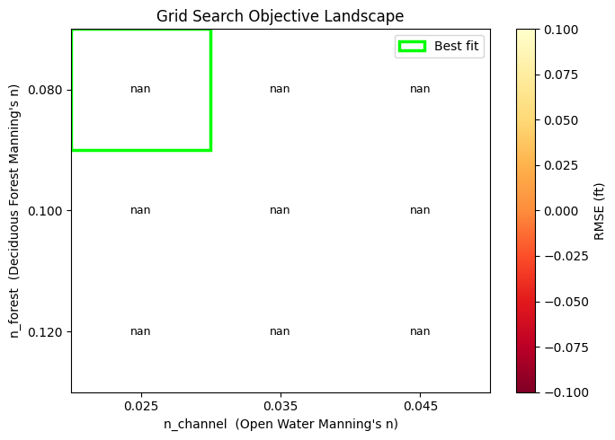
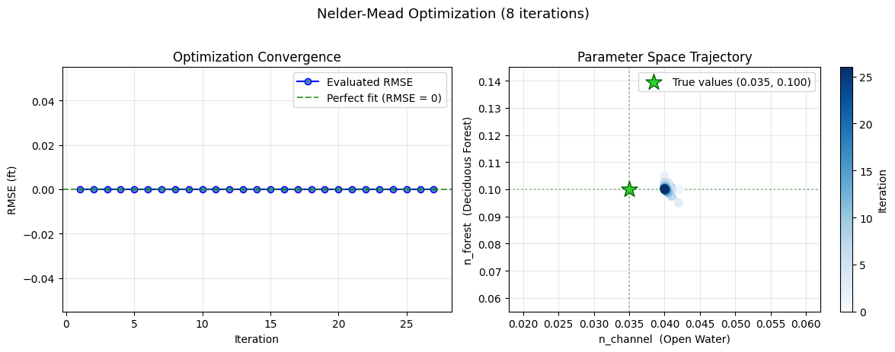

Manning's n Calibration with RasCalibrate¶
RasCalibrate provides parameter estimation workflows for HEC-RAS models,
composing RasPermutation, HDF extraction helpers, and statistical metrics
into a streamlined calibration API.
This notebook demonstrates two approaches:
- Example 1 — Grid Search: evaluate every combination of a Manning's n parameter grid, score against observed WSE, and identify the best fit.
- Example 2 — Nelder-Mead Optimization: gradient-free optimization starting from a perturbed initial guess, converging toward the true parameter values.
What You'll Learn¶
- Define
CalibrationPointobjects with observed WSE data - Use
make_mannings_apply_fn()to create a geometry parameter modifier - Run
RasCalibrate.grid_search()for exhaustive parameter sweeps - Run
RasCalibrate.optimize()for gradient-free optimization - Visualize the calibration objective landscape and convergence history
Test Model¶
BaldEagleCrkMulti2D — plan 03 (Single 2D Area), ~19,600 mesh cells, 3-day unsteady simulation (~2.2 minutes per run on 4 cores).
Estimated Runtime¶
- Setup + baseline run: ~3 minutes
- Example 1 (grid search, 9 runs, 4 workers): ~7 minutes
- Example 2 (optimization, 8 iterations): ~18 minutes
- Total: ~28 minutes
from ras_commander import (
init_ras_project, RasCmdr, RasExamples,
RasCalibrate, CalibrationPoint, make_mannings_apply_fn,
)
from ras_commander.hdf import HdfResultsQuery
from pathlib import Path
import pandas as pd
import matplotlib.pyplot as plt
import numpy as np
from IPython.display import display
plt.style.use("default")
pd.set_option("display.max_columns", 30)
pd.set_option("display.width", 120)
pd.set_option("display.float_format", "{:.4f}".format)
Step 1 — Extract Project and Run Baseline¶
The baseline run represents the "true" model state. Its output WSE values serve as the synthetic observed data that the calibration tries to reproduce.
In a real calibration, replace these extracted WSE values with gauge-measured stage records.
# Extract a fresh copy of the example project
project_path = RasExamples.extract_project("BaldEagleCrkMulti2D", suffix="calibration")
ras = init_ras_project(project_path, "6.6")
print("Project initialized:", project_path.name)
print("Plans available:")
display(ras.plan_df[["plan_number", "Plan Title", "flow_type"]].reset_index(drop=True))
2026-04-11 20:52:46 - ras_commander.RasExamples - INFO - Found zip file: C:\Users\bill\AppData\Local\ras-commander\examples\Example_Projects_6_6.zip
2026-04-11 20:52:46 - ras_commander.RasExamples - INFO - Loading project data from CSV...
2026-04-11 20:52:46 - ras_commander.RasExamples - INFO - Loaded 68 projects from CSV.
2026-04-11 20:52:46 - ras_commander.RasExamples - INFO - ----- RasExamples Extracting Project -----
2026-04-11 20:52:46 - ras_commander.RasExamples - INFO - Extracting project 'BaldEagleCrkMulti2D' as 'BaldEagleCrkMulti2D_calibration'
2026-04-11 20:52:46 - ras_commander.RasExamples - INFO - Folder 'BaldEagleCrkMulti2D_calibration' already exists. Deleting existing folder...
2026-04-11 20:52:46 - ras_commander.RasExamples - INFO - Existing folder 'BaldEagleCrkMulti2D_calibration' has been deleted.
2026-04-11 20:52:48 - ras_commander.RasExamples - INFO - Successfully extracted project 'BaldEagleCrkMulti2D' to G:\GH\ras-commander\examples\example_projects\BaldEagleCrkMulti2D_calibration
2026-04-11 20:52:48 - ras_commander.RasUtils - INFO - Discovered HEC-RAS 6.6 at C:\Program Files (x86)\HEC\HEC-RAS\6.6\Ras.exe via filesystem (x86)
2026-04-11 20:52:48 - ras_commander.RasUtils - INFO - Discovered HEC-RAS 6.5 at C:\Program Files (x86)\HEC\HEC-RAS\6.5\Ras.exe via filesystem (x86)
2026-04-11 20:52:48 - ras_commander.RasUtils - INFO - Discovered HEC-RAS 6.3.1 at C:\Program Files (x86)\HEC\HEC-RAS\6.3.1\Ras.exe via filesystem (x86)
2026-04-11 20:52:48 - ras_commander.RasUtils - INFO - Discovered HEC-RAS 6.2 at C:\Program Files (x86)\HEC\HEC-RAS\6.2\Ras.exe via filesystem (x86)
2026-04-11 20:52:48 - ras_commander.RasUtils - INFO - Discovered HEC-RAS 6.1 at C:\Program Files (x86)\HEC\HEC-RAS\6.1\Ras.exe via filesystem (x86)
2026-04-11 20:52:48 - ras_commander.RasUtils - INFO - Discovered HEC-RAS 6.0 at C:\Program Files (x86)\HEC\HEC-RAS\6.0\Ras.exe via filesystem (x86)
2026-04-11 20:52:48 - ras_commander.RasUtils - INFO - Discovered HEC-RAS 5.0.7 at C:\Program Files (x86)\HEC\HEC-RAS\5.0.7\Ras.exe via filesystem (x86)
2026-04-11 20:52:48 - ras_commander.RasUtils - INFO - Discovered HEC-RAS 5.0.6 at C:\Program Files (x86)\HEC\HEC-RAS\5.0.6\Ras.exe via filesystem (x86)
2026-04-11 20:52:48 - ras_commander.RasUtils - INFO - Discovered HEC-RAS 5.0.5 at C:\Program Files (x86)\HEC\HEC-RAS\5.0.5\Ras.exe via filesystem (x86)
2026-04-11 20:52:48 - ras_commander.RasUtils - INFO - Discovered HEC-RAS 5.0.4 at C:\Program Files (x86)\HEC\HEC-RAS\5.0.4\Ras.exe via filesystem (x86)
2026-04-11 20:52:48 - ras_commander.RasUtils - INFO - Discovered HEC-RAS 5.0.3 at C:\Program Files (x86)\HEC\HEC-RAS\5.0.3\Ras.exe via filesystem (x86)
2026-04-11 20:52:48 - ras_commander.RasUtils - INFO - Discovered HEC-RAS 5.0.1 at C:\Program Files (x86)\HEC\HEC-RAS\5.0.1\Ras.exe via filesystem (x86)
2026-04-11 20:52:48 - ras_commander.RasUtils - INFO - Discovered HEC-RAS 5.0 at C:\Program Files (x86)\HEC\HEC-RAS\5.0\Ras.exe via filesystem (x86)
2026-04-11 20:52:48 - ras_commander.RasUtils - INFO - Discovered HEC-RAS 4.1.0 at C:\Program Files (x86)\HEC\HEC-RAS\4.1.0\Ras.exe via filesystem (x86)
2026-04-11 20:52:48 - ras_commander.RasUtils - INFO - Discovered HEC-RAS 6.7 Beta 5 at C:\Program Files (x86)\HEC\HEC-RAS\6.7 Beta 5\Ras.exe via filesystem (x86)
2026-04-11 20:52:48 - ras_commander.RasUtils - INFO - Discovered 15 installed HEC-RAS version(s)
2026-04-11 20:52:48 - ras_commander.RasMap - INFO - Successfully parsed RASMapper file: G:\GH\ras-commander\examples\example_projects\BaldEagleCrkMulti2D_calibration\BaldEagleDamBrk.rasmap
2026-04-11 20:52:48 - ras_commander.hdf.HdfBase - INFO - Found projection in HDF file: G:\GH\ras-commander\examples\example_projects\BaldEagleCrkMulti2D_calibration\BaldEagleDamBrk.g09.hdf
2026-04-11 20:52:48 - ras_commander.hdf.HdfBase - INFO - Converted WKT to EPSG:2271 from HDF file BaldEagleDamBrk.g09.hdf
2026-04-11 20:52:48 - ras_commander.RasPrj - INFO - Updated results_df with 11 plan(s)
2026-04-11 20:52:48 - ras_commander.RasPrj - INFO - ras-commander v0.91.0 | An open-source project of CLB Engineering Corporation (https://clbengineering.com/) | Docs: https://ras-commander.readthedocs.io | GitHub: https://github.com/gpt-cmdr/ras-commander
2026-04-11 20:52:48 - ras_commander.RasPrj - INFO - Project initialized: BaldEagleDamBrk | Folder: G:\GH\ras-commander\examples\example_projects\BaldEagleCrkMulti2D_calibration
Project initialized: BaldEagleCrkMulti2D_calibration
Plans available:
| plan_number | Plan Title | flow_type | |
|---|---|---|---|
| 0 | 13 | PMF with Multi 2D Areas | Unsteady |
| 1 | 15 | 1d-2D Dambreak Refined Grid | Unsteady |
| 2 | 17 | 2D to 1D No Dam | Unsteady |
| 3 | 18 | 2D to 2D Run | Unsteady |
| 4 | 19 | SA to 2D Dam Break Run | Unsteady |
| 5 | 03 | Single 2D Area - Internal Dam Structure | Unsteady |
| 6 | 04 | SA to 2D Area Conn - 2D Levee Structure | Unsteady |
| 7 | 02 | SA to Detailed 2D Breach | Unsteady |
| 8 | 01 | SA to Detailed 2D Breach FEQ | Unsteady |
| 9 | 05 | Single 2D area with Bridges FEQ | Unsteady |
| 10 | 06 | Gridded Precip - Infiltration | Unsteady |
# Run plan 03 — Single 2D Area (g09, 3-day flood, ~2.2 min on 4 cores)
# This is the baseline: original Manning's n values from the geometry file
print("Running baseline (plan 03, original Manning's n)...")
result = RasCmdr.compute_plan("03", ras_object=ras, force_rerun=True, num_cores=4)
print(f"Baseline: {result}")
# plan_df is automatically refreshed after compute_plan()
baseline_hdf = Path(
ras.plan_df.loc[ras.plan_df["plan_number"] == "03", "HDF_Results_Path"].values[0]
)
print(f"Results HDF: {baseline_hdf.name} ({baseline_hdf.stat().st_size / 1e6:.1f} MB)")
2026-04-11 20:52:48 - ras_commander.RasCmdr - INFO - Using ras_object with project folder: G:\GH\ras-commander\examples\example_projects\BaldEagleCrkMulti2D_calibration
2026-04-11 20:52:48 - ras_commander.RasUtils - INFO - Using provided plan file path: G:\GH\ras-commander\examples\example_projects\BaldEagleCrkMulti2D_calibration\BaldEagleDamBrk.p03
2026-04-11 20:52:48 - ras_commander.RasUtils - INFO - Successfully updated file: G:\GH\ras-commander\examples\example_projects\BaldEagleCrkMulti2D_calibration\BaldEagleDamBrk.p03
2026-04-11 20:52:48 - ras_commander.RasCmdr - INFO - Set number of cores to 4 for plan: 03
2026-04-11 20:52:48 - ras_commander.RasCmdr - INFO - Running HEC-RAS from the Command Line:
2026-04-11 20:52:48 - ras_commander.RasCmdr - INFO - Running command: "C:\Program Files (x86)\HEC\HEC-RAS\6.6\Ras.exe" -c "G:\GH\ras-commander\examples\example_projects\BaldEagleCrkMulti2D_calibration\BaldEagleDamBrk.prj" "G:\GH\ras-commander\examples\example_projects\BaldEagleCrkMulti2D_calibration\BaldEagleDamBrk.p03"
Running baseline (plan 03, original Manning's n)...
2026-04-11 20:55:04 - ras_commander.RasCmdr - INFO - HEC-RAS execution completed for plan: 03
2026-04-11 20:55:04 - ras_commander.RasCmdr - INFO - Total run time for plan 03: 136.13 seconds
2026-04-11 20:55:04 - ras_commander.hdf.HdfResultsPlan - INFO - Using existing Path object HDF file: G:\GH\ras-commander\examples\example_projects\BaldEagleCrkMulti2D_calibration\BaldEagleDamBrk.p03.hdf
2026-04-11 20:55:04 - ras_commander.hdf.HdfResultsPlan - INFO - Final validated file path: G:\GH\ras-commander\examples\example_projects\BaldEagleCrkMulti2D_calibration\BaldEagleDamBrk.p03.hdf
2026-04-11 20:55:04 - ras_commander.hdf.HdfResultsPlan - INFO - Reading computation messages from HDF: BaldEagleDamBrk.p03.hdf
2026-04-11 20:55:04 - ras_commander.hdf.HdfResultsPlan - INFO - Successfully extracted 2014 characters from HDF
2026-04-11 20:55:04 - ras_commander.hdf.HdfResultsPlan - INFO - Using existing Path object HDF file: G:\GH\ras-commander\examples\example_projects\BaldEagleCrkMulti2D_calibration\BaldEagleDamBrk.p03.hdf
2026-04-11 20:55:04 - ras_commander.hdf.HdfResultsPlan - INFO - Final validated file path: G:\GH\ras-commander\examples\example_projects\BaldEagleCrkMulti2D_calibration\BaldEagleDamBrk.p03.hdf
2026-04-11 20:55:04 - ras_commander.hdf.HdfResultsPlan - INFO - Extracting Plan Information from: BaldEagleDamBrk.p03.hdf
2026-04-11 20:55:04 - ras_commander.hdf.HdfResultsPlan - INFO - Plan Name: Single 2D Area - Internal Dam Structure
2026-04-11 20:55:04 - ras_commander.hdf.HdfResultsPlan - INFO - Simulation Duration (hours): 72.0
2026-04-11 20:55:04 - ras_commander.hdf.HdfResultsPlan - INFO - Using existing Path object HDF file: G:\GH\ras-commander\examples\example_projects\BaldEagleCrkMulti2D_calibration\BaldEagleDamBrk.p03.hdf
2026-04-11 20:55:04 - ras_commander.hdf.HdfResultsPlan - INFO - Final validated file path: G:\GH\ras-commander\examples\example_projects\BaldEagleCrkMulti2D_calibration\BaldEagleDamBrk.p03.hdf
2026-04-11 20:55:04 - ras_commander.RasPrj - INFO - Updated results_df with 1 plan(s)
Baseline: ComputeResult(SUCCESS, results_df_row=available)
Results HDF: BaldEagleDamBrk.p03.hdf (61.9 MB)
Step 2 — Extract Observed WSE at Calibration Locations¶
Three locations along the Bald Eagle Creek 2D mesh simulate gauge stations.
HdfResultsQuery.query_points() snaps each (x, y) coordinate to the nearest
mesh cell and returns the WSE at the requested time step.
# Representative (x, y) locations along the simulated reach
# These coordinates are in the model's projected coordinate system (ft)
gauge_locations = {
"Upper Gauge": (2048000.0, 355500.0),
"Middle Gauge": (2024000.0, 335250.0),
"Lower Gauge": (1988750.0, 307750.0),
}
# Extract WSE at the final time step (peak of the 3-day flood)
observed_raw = HdfResultsQuery.query_points(
baseline_hdf,
list(gauge_locations.values()),
variable="wse",
time_index=-1,
ras_object=ras,
)
observed_raw.insert(0, "gauge", list(gauge_locations.keys()))
print("Observed WSE from baseline run (serve as calibration targets):")
display(observed_raw[["gauge", "x", "y", "value", "cell_id", "mesh_name"]])
2026-04-11 20:55:04 - ras_commander.hdf.HdfResultsQuery - INFO - Using existing Path object HDF file: G:\GH\ras-commander\examples\example_projects\BaldEagleCrkMulti2D_calibration\BaldEagleDamBrk.p03.hdf
2026-04-11 20:55:04 - ras_commander.hdf.HdfResultsQuery - INFO - Final validated file path: G:\GH\ras-commander\examples\example_projects\BaldEagleCrkMulti2D_calibration\BaldEagleDamBrk.p03.hdf
2026-04-11 20:55:04 - ras_commander.hdf.HdfPlan - INFO - Using existing Path object HDF file: G:\GH\ras-commander\examples\example_projects\BaldEagleCrkMulti2D_calibration\BaldEagleDamBrk.p03.hdf
2026-04-11 20:55:04 - ras_commander.hdf.HdfPlan - INFO - Final validated file path: G:\GH\ras-commander\examples\example_projects\BaldEagleCrkMulti2D_calibration\BaldEagleDamBrk.p03.hdf
2026-04-11 20:55:04 - ras_commander.hdf.HdfMesh - INFO - Using existing Path object HDF file: G:\GH\ras-commander\examples\example_projects\BaldEagleCrkMulti2D_calibration\BaldEagleDamBrk.g09.hdf
2026-04-11 20:55:04 - ras_commander.hdf.HdfMesh - INFO - Final validated file path: G:\GH\ras-commander\examples\example_projects\BaldEagleCrkMulti2D_calibration\BaldEagleDamBrk.g09.hdf
2026-04-11 20:55:04 - ras_commander.hdf.HdfMesh - INFO - Using existing Path object HDF file: G:\GH\ras-commander\examples\example_projects\BaldEagleCrkMulti2D_calibration\BaldEagleDamBrk.g09.hdf
2026-04-11 20:55:04 - ras_commander.hdf.HdfMesh - INFO - Final validated file path: G:\GH\ras-commander\examples\example_projects\BaldEagleCrkMulti2D_calibration\BaldEagleDamBrk.g09.hdf
2026-04-11 20:55:04 - ras_commander.hdf.HdfBase - INFO - Using HDF file from h5py.File object: G:\GH\ras-commander\examples\example_projects\BaldEagleCrkMulti2D_calibration\BaldEagleDamBrk.g09.hdf
2026-04-11 20:55:04 - ras_commander.hdf.HdfBase - INFO - Final validated file path: G:\GH\ras-commander\examples\example_projects\BaldEagleCrkMulti2D_calibration\BaldEagleDamBrk.g09.hdf
2026-04-11 20:55:04 - ras_commander.hdf.HdfBase - INFO - Found projection in HDF file: G:\GH\ras-commander\examples\example_projects\BaldEagleCrkMulti2D_calibration\BaldEagleDamBrk.g09.hdf
2026-04-11 20:55:05 - ras_commander.hdf.HdfBase - INFO - Converted WKT to EPSG:2271 from HDF file BaldEagleDamBrk.g09.hdf
2026-04-11 20:55:05 - ras_commander.hdf.HdfResultsPlan - INFO - Using existing Path object HDF file: G:\GH\ras-commander\examples\example_projects\BaldEagleCrkMulti2D_calibration\BaldEagleDamBrk.p03.hdf
2026-04-11 20:55:05 - ras_commander.hdf.HdfResultsPlan - INFO - Final validated file path: G:\GH\ras-commander\examples\example_projects\BaldEagleCrkMulti2D_calibration\BaldEagleDamBrk.p03.hdf
Observed WSE from baseline run (serve as calibration targets):
| gauge | x | y | value | cell_id | mesh_name | |
|---|---|---|---|---|---|---|
| 0 | Upper Gauge | 2048000.0000 | 355500.0000 | 566.1424 | 3919 | BaldEagleCr |
| 1 | Middle Gauge | 2024000.0000 | 335250.0000 | 597.7024 | 9798 | BaldEagleCr |
| 2 | Lower Gauge | 1988750.0000 | 307750.0000 | 676.9834 | 15677 | BaldEagleCr |
Step 3 — Define CalibrationPoint Objects¶
CalibrationPoint pairs an observation with metadata that RasCalibrate
uses to extract modeled values from each plan HDF.
extraction_method="2d_cell"— locate the nearest 2D mesh cell by (x, y)time_index=-1— compare at the final (peak) time stepmetric="rmse"— per-point RMSE contribution to the composite objective
calibration_points = []
for i, (name, (x, y)) in enumerate(gauge_locations.items()):
observed_wse = float(observed_raw.iloc[i]["value"])
pt = CalibrationPoint(
name=name,
variable="wse",
extraction_method="2d_cell",
observed=observed_wse,
x=x,
y=y,
time_index=-1,
metric="rmse",
weight=1.0,
)
calibration_points.append(pt)
print(f"{name:>14s} — observed WSE = {observed_wse:.3f} ft")
Upper Gauge — observed WSE = 566.142 ft
Middle Gauge — observed WSE = 597.702 ft
Lower Gauge — observed WSE = 676.983 ft
Step 4 — Define the Manning's n Apply Function¶
make_mannings_apply_fn() returns a callable that receives a plan path and a
pd.Series of parameter values, reads the 2D land cover Manning's n table from
the geometry file, updates the named classes, and writes the file back.
The geometry for plan 03 (BaldEagleDamBrk.g09) has 16 NLCD-derived land cover
classes. We calibrate two:
| Parameter | Land Cover Class | Baseline n |
|---|---|---|
n_channel |
Open Water | 0.035 |
n_forest |
Deciduous Forest | 0.100 |
# Factory returns an apply_fn that modifies the geometry file in-place
apply_fn = make_mannings_apply_fn(
zone_column_map={
"n_channel": "Open Water", # river channel roughness
"n_forest": "Deciduous Forest", # forested floodplain roughness
},
path="plaintext", # reads/writes the plain-text .g## geometry file
)
print("apply_fn ready.")
print(" n_channel → 'Open Water' (baseline n = 0.035)")
print(" n_forest → 'Deciduous Forest' (baseline n = 0.100)")
apply_fn ready.
n_channel → 'Open Water' (baseline n = 0.035)
n_forest → 'Deciduous Forest' (baseline n = 0.100)
Example 1 — Grid Search¶
A 3 × 3 Cartesian grid spanning ±25 % of each baseline value.
n_channel : [0.025, 0.035, 0.045] (baseline = 0.035)
n_forest : [0.080, 0.100, 0.120] (baseline = 0.100)
combinations: 9 plans, 4 parallel workers
RasCalibrate.grid_search() internally:
1. Calls RasPermutation.generate_plans() to copy the project and clone plan 03
into 9 variants, each with apply_fn applied for one parameter combination.
2. Executes all variants in parallel with RasPermutation.execute_and_summarize().
3. Extracts modeled WSE from each HDF and scores against the calibration points.
Expected outcome: the combination (0.035, 0.100) — the original values — produces the lowest RMSE because its simulation exactly reproduces the baseline.
parameters = {
"n_channel": [0.025, 0.035, 0.045],
"n_forest": [0.080, 0.100, 0.120],
}
n_combinations = len(parameters["n_channel"]) * len(parameters["n_forest"])
print(f"Grid search: {n_combinations} combinations, 4 workers")
print(f"Estimated runtime: ~{int(n_combinations / 4 + 0.5) * 3} minutes\n")
results_df = RasCalibrate.grid_search(
template_plan="03",
parameters=parameters,
apply_fn=apply_fn,
calibration_points=calibration_points,
metric="rmse",
suffix="cal",
max_workers=4,
num_cores=4,
ras_object=ras,
)
print("Grid search complete!")
2026-04-11 20:55:05 - ras_commander.RasPermutation - INFO - Defined 9 total permutation(s)
Grid search: 9 combinations, 4 workers
Estimated runtime: ~6 minutes
2026-04-11 20:55:05 - ras_commander.RasMap - INFO - Successfully parsed RASMapper file: G:\GH\ras-commander\examples\example_projects\BaldEagleCrkMulti2D_calibration_cal_001\BaldEagleDamBrk.rasmap
2026-04-11 20:55:05 - ras_commander.hdf.HdfBase - INFO - Found projection in HDF file: G:\GH\ras-commander\examples\example_projects\BaldEagleCrkMulti2D_calibration_cal_001\BaldEagleDamBrk.g09.hdf
2026-04-11 20:55:05 - ras_commander.hdf.HdfBase - INFO - Converted WKT to EPSG:2271 from HDF file BaldEagleDamBrk.g09.hdf
2026-04-11 20:55:05 - ras_commander.RasPrj - INFO - ras-commander v0.91.0 | An open-source project of CLB Engineering Corporation (https://clbengineering.com/) | Docs: https://ras-commander.readthedocs.io | GitHub: https://github.com/gpt-cmdr/ras-commander
2026-04-11 20:55:05 - ras_commander.RasPrj - INFO - Project initialized: BaldEagleDamBrk | Folder: G:\GH\ras-commander\examples\example_projects\BaldEagleCrkMulti2D_calibration_cal_001
2026-04-11 20:55:05 - ras_commander.RasUtils - INFO - File cloned from G:\GH\ras-commander\examples\example_projects\BaldEagleCrkMulti2D_calibration_cal_001\BaldEagleDamBrk.p03 to G:\GH\ras-commander\examples\example_projects\BaldEagleCrkMulti2D_calibration_cal_001\BaldEagleDamBrk.p07
2026-04-11 20:55:05 - ras_commander.RasUtils - INFO - Successfully updated file: G:\GH\ras-commander\examples\example_projects\BaldEagleCrkMulti2D_calibration_cal_001\BaldEagleDamBrk.p07
2026-04-11 20:55:05 - ras_commander.RasUtils - INFO - Project file updated with new Plan entry: 07
2026-04-11 20:55:05 - ras_commander.RasMap - INFO - Successfully parsed RASMapper file: G:\GH\ras-commander\examples\example_projects\BaldEagleCrkMulti2D_calibration_cal_001\BaldEagleDamBrk.rasmap
2026-04-11 20:55:05 - ras_commander.hdf.HdfBase - INFO - Found projection in HDF file: G:\GH\ras-commander\examples\example_projects\BaldEagleCrkMulti2D_calibration_cal_001\BaldEagleDamBrk.g09.hdf
2026-04-11 20:55:05 - ras_commander.hdf.HdfBase - INFO - Converted WKT to EPSG:2271 from HDF file BaldEagleDamBrk.g09.hdf
2026-04-11 20:55:05 - ras_commander.hdf.HdfResultsPlan - INFO - Using existing Path object HDF file: G:\GH\ras-commander\examples\example_projects\BaldEagleCrkMulti2D_calibration_cal_001\BaldEagleDamBrk.p03.hdf
2026-04-11 20:55:05 - ras_commander.hdf.HdfResultsPlan - INFO - Final validated file path: G:\GH\ras-commander\examples\example_projects\BaldEagleCrkMulti2D_calibration_cal_001\BaldEagleDamBrk.p03.hdf
2026-04-11 20:55:05 - ras_commander.hdf.HdfResultsPlan - INFO - Reading computation messages from HDF: BaldEagleDamBrk.p03.hdf
2026-04-11 20:55:05 - ras_commander.hdf.HdfResultsPlan - INFO - Successfully extracted 2014 characters from HDF
2026-04-11 20:55:05 - ras_commander.hdf.HdfResultsPlan - INFO - Using existing Path object HDF file: G:\GH\ras-commander\examples\example_projects\BaldEagleCrkMulti2D_calibration_cal_001\BaldEagleDamBrk.p03.hdf
2026-04-11 20:55:05 - ras_commander.hdf.HdfResultsPlan - INFO - Final validated file path: G:\GH\ras-commander\examples\example_projects\BaldEagleCrkMulti2D_calibration_cal_001\BaldEagleDamBrk.p03.hdf
2026-04-11 20:55:05 - ras_commander.hdf.HdfResultsPlan - INFO - Extracting Plan Information from: BaldEagleDamBrk.p03.hdf
2026-04-11 20:55:05 - ras_commander.hdf.HdfResultsPlan - INFO - Plan Name: Single 2D Area - Internal Dam Structure
2026-04-11 20:55:05 - ras_commander.hdf.HdfResultsPlan - INFO - Simulation Duration (hours): 72.0
2026-04-11 20:55:06 - ras_commander.hdf.HdfResultsPlan - INFO - Using existing Path object HDF file: G:\GH\ras-commander\examples\example_projects\BaldEagleCrkMulti2D_calibration_cal_001\BaldEagleDamBrk.p03.hdf
2026-04-11 20:55:06 - ras_commander.hdf.HdfResultsPlan - INFO - Final validated file path: G:\GH\ras-commander\examples\example_projects\BaldEagleCrkMulti2D_calibration_cal_001\BaldEagleDamBrk.p03.hdf
2026-04-11 20:55:06 - ras_commander.RasPrj - INFO - Updated results_df with 12 plan(s)
2026-04-11 20:55:06 - ras_commander.RasUtils - INFO - File cloned from G:\GH\ras-commander\examples\example_projects\BaldEagleCrkMulti2D_calibration_cal_001\BaldEagleDamBrk.p03 to G:\GH\ras-commander\examples\example_projects\BaldEagleCrkMulti2D_calibration_cal_001\BaldEagleDamBrk.p08
2026-04-11 20:55:06 - ras_commander.RasUtils - INFO - Successfully updated file: G:\GH\ras-commander\examples\example_projects\BaldEagleCrkMulti2D_calibration_cal_001\BaldEagleDamBrk.p08
2026-04-11 20:55:06 - ras_commander.RasUtils - INFO - Project file updated with new Plan entry: 08
2026-04-11 20:55:06 - ras_commander.RasMap - INFO - Successfully parsed RASMapper file: G:\GH\ras-commander\examples\example_projects\BaldEagleCrkMulti2D_calibration_cal_001\BaldEagleDamBrk.rasmap
2026-04-11 20:55:06 - ras_commander.hdf.HdfBase - INFO - Found projection in HDF file: G:\GH\ras-commander\examples\example_projects\BaldEagleCrkMulti2D_calibration_cal_001\BaldEagleDamBrk.g09.hdf
2026-04-11 20:55:06 - ras_commander.hdf.HdfBase - INFO - Converted WKT to EPSG:2271 from HDF file BaldEagleDamBrk.g09.hdf
2026-04-11 20:55:06 - ras_commander.hdf.HdfResultsPlan - INFO - Using existing Path object HDF file: G:\GH\ras-commander\examples\example_projects\BaldEagleCrkMulti2D_calibration_cal_001\BaldEagleDamBrk.p03.hdf
2026-04-11 20:55:06 - ras_commander.hdf.HdfResultsPlan - INFO - Final validated file path: G:\GH\ras-commander\examples\example_projects\BaldEagleCrkMulti2D_calibration_cal_001\BaldEagleDamBrk.p03.hdf
2026-04-11 20:55:06 - ras_commander.hdf.HdfResultsPlan - INFO - Reading computation messages from HDF: BaldEagleDamBrk.p03.hdf
2026-04-11 20:55:06 - ras_commander.hdf.HdfResultsPlan - INFO - Successfully extracted 2014 characters from HDF
2026-04-11 20:55:06 - ras_commander.hdf.HdfResultsPlan - INFO - Using existing Path object HDF file: G:\GH\ras-commander\examples\example_projects\BaldEagleCrkMulti2D_calibration_cal_001\BaldEagleDamBrk.p03.hdf
2026-04-11 20:55:06 - ras_commander.hdf.HdfResultsPlan - INFO - Final validated file path: G:\GH\ras-commander\examples\example_projects\BaldEagleCrkMulti2D_calibration_cal_001\BaldEagleDamBrk.p03.hdf
2026-04-11 20:55:06 - ras_commander.hdf.HdfResultsPlan - INFO - Extracting Plan Information from: BaldEagleDamBrk.p03.hdf
2026-04-11 20:55:06 - ras_commander.hdf.HdfResultsPlan - INFO - Plan Name: Single 2D Area - Internal Dam Structure
2026-04-11 20:55:06 - ras_commander.hdf.HdfResultsPlan - INFO - Simulation Duration (hours): 72.0
2026-04-11 20:55:06 - ras_commander.hdf.HdfResultsPlan - INFO - Using existing Path object HDF file: G:\GH\ras-commander\examples\example_projects\BaldEagleCrkMulti2D_calibration_cal_001\BaldEagleDamBrk.p03.hdf
2026-04-11 20:55:06 - ras_commander.hdf.HdfResultsPlan - INFO - Final validated file path: G:\GH\ras-commander\examples\example_projects\BaldEagleCrkMulti2D_calibration_cal_001\BaldEagleDamBrk.p03.hdf
2026-04-11 20:55:06 - ras_commander.RasPrj - INFO - Updated results_df with 13 plan(s)
2026-04-11 20:55:06 - ras_commander.RasUtils - INFO - File cloned from G:\GH\ras-commander\examples\example_projects\BaldEagleCrkMulti2D_calibration_cal_001\BaldEagleDamBrk.p03 to G:\GH\ras-commander\examples\example_projects\BaldEagleCrkMulti2D_calibration_cal_001\BaldEagleDamBrk.p09
2026-04-11 20:55:06 - ras_commander.RasUtils - INFO - Successfully updated file: G:\GH\ras-commander\examples\example_projects\BaldEagleCrkMulti2D_calibration_cal_001\BaldEagleDamBrk.p09
2026-04-11 20:55:06 - ras_commander.RasUtils - INFO - Project file updated with new Plan entry: 09
2026-04-11 20:55:06 - ras_commander.RasMap - INFO - Successfully parsed RASMapper file: G:\GH\ras-commander\examples\example_projects\BaldEagleCrkMulti2D_calibration_cal_001\BaldEagleDamBrk.rasmap
2026-04-11 20:55:06 - ras_commander.hdf.HdfBase - INFO - Found projection in HDF file: G:\GH\ras-commander\examples\example_projects\BaldEagleCrkMulti2D_calibration_cal_001\BaldEagleDamBrk.g09.hdf
2026-04-11 20:55:06 - ras_commander.hdf.HdfBase - INFO - Converted WKT to EPSG:2271 from HDF file BaldEagleDamBrk.g09.hdf
2026-04-11 20:55:06 - ras_commander.hdf.HdfResultsPlan - INFO - Using existing Path object HDF file: G:\GH\ras-commander\examples\example_projects\BaldEagleCrkMulti2D_calibration_cal_001\BaldEagleDamBrk.p03.hdf
2026-04-11 20:55:06 - ras_commander.hdf.HdfResultsPlan - INFO - Final validated file path: G:\GH\ras-commander\examples\example_projects\BaldEagleCrkMulti2D_calibration_cal_001\BaldEagleDamBrk.p03.hdf
2026-04-11 20:55:06 - ras_commander.hdf.HdfResultsPlan - INFO - Reading computation messages from HDF: BaldEagleDamBrk.p03.hdf
2026-04-11 20:55:06 - ras_commander.hdf.HdfResultsPlan - INFO - Successfully extracted 2014 characters from HDF
2026-04-11 20:55:06 - ras_commander.hdf.HdfResultsPlan - INFO - Using existing Path object HDF file: G:\GH\ras-commander\examples\example_projects\BaldEagleCrkMulti2D_calibration_cal_001\BaldEagleDamBrk.p03.hdf
2026-04-11 20:55:06 - ras_commander.hdf.HdfResultsPlan - INFO - Final validated file path: G:\GH\ras-commander\examples\example_projects\BaldEagleCrkMulti2D_calibration_cal_001\BaldEagleDamBrk.p03.hdf
2026-04-11 20:55:06 - ras_commander.hdf.HdfResultsPlan - INFO - Extracting Plan Information from: BaldEagleDamBrk.p03.hdf
2026-04-11 20:55:06 - ras_commander.hdf.HdfResultsPlan - INFO - Plan Name: Single 2D Area - Internal Dam Structure
2026-04-11 20:55:06 - ras_commander.hdf.HdfResultsPlan - INFO - Simulation Duration (hours): 72.0
2026-04-11 20:55:06 - ras_commander.hdf.HdfResultsPlan - INFO - Using existing Path object HDF file: G:\GH\ras-commander\examples\example_projects\BaldEagleCrkMulti2D_calibration_cal_001\BaldEagleDamBrk.p03.hdf
2026-04-11 20:55:06 - ras_commander.hdf.HdfResultsPlan - INFO - Final validated file path: G:\GH\ras-commander\examples\example_projects\BaldEagleCrkMulti2D_calibration_cal_001\BaldEagleDamBrk.p03.hdf
2026-04-11 20:55:07 - ras_commander.RasPrj - INFO - Updated results_df with 14 plan(s)
2026-04-11 20:55:07 - ras_commander.RasUtils - INFO - File cloned from G:\GH\ras-commander\examples\example_projects\BaldEagleCrkMulti2D_calibration_cal_001\BaldEagleDamBrk.p03 to G:\GH\ras-commander\examples\example_projects\BaldEagleCrkMulti2D_calibration_cal_001\BaldEagleDamBrk.p10
2026-04-11 20:55:07 - ras_commander.RasUtils - INFO - Successfully updated file: G:\GH\ras-commander\examples\example_projects\BaldEagleCrkMulti2D_calibration_cal_001\BaldEagleDamBrk.p10
2026-04-11 20:55:07 - ras_commander.RasUtils - INFO - Project file updated with new Plan entry: 10
2026-04-11 20:55:07 - ras_commander.RasMap - INFO - Successfully parsed RASMapper file: G:\GH\ras-commander\examples\example_projects\BaldEagleCrkMulti2D_calibration_cal_001\BaldEagleDamBrk.rasmap
2026-04-11 20:55:07 - ras_commander.hdf.HdfBase - INFO - Found projection in HDF file: G:\GH\ras-commander\examples\example_projects\BaldEagleCrkMulti2D_calibration_cal_001\BaldEagleDamBrk.g09.hdf
2026-04-11 20:55:07 - ras_commander.hdf.HdfBase - INFO - Converted WKT to EPSG:2271 from HDF file BaldEagleDamBrk.g09.hdf
2026-04-11 20:55:07 - ras_commander.hdf.HdfResultsPlan - INFO - Using existing Path object HDF file: G:\GH\ras-commander\examples\example_projects\BaldEagleCrkMulti2D_calibration_cal_001\BaldEagleDamBrk.p03.hdf
2026-04-11 20:55:07 - ras_commander.hdf.HdfResultsPlan - INFO - Final validated file path: G:\GH\ras-commander\examples\example_projects\BaldEagleCrkMulti2D_calibration_cal_001\BaldEagleDamBrk.p03.hdf
2026-04-11 20:55:07 - ras_commander.hdf.HdfResultsPlan - INFO - Reading computation messages from HDF: BaldEagleDamBrk.p03.hdf
2026-04-11 20:55:07 - ras_commander.hdf.HdfResultsPlan - INFO - Successfully extracted 2014 characters from HDF
2026-04-11 20:55:07 - ras_commander.hdf.HdfResultsPlan - INFO - Using existing Path object HDF file: G:\GH\ras-commander\examples\example_projects\BaldEagleCrkMulti2D_calibration_cal_001\BaldEagleDamBrk.p03.hdf
2026-04-11 20:55:07 - ras_commander.hdf.HdfResultsPlan - INFO - Final validated file path: G:\GH\ras-commander\examples\example_projects\BaldEagleCrkMulti2D_calibration_cal_001\BaldEagleDamBrk.p03.hdf
2026-04-11 20:55:07 - ras_commander.hdf.HdfResultsPlan - INFO - Extracting Plan Information from: BaldEagleDamBrk.p03.hdf
2026-04-11 20:55:07 - ras_commander.hdf.HdfResultsPlan - INFO - Plan Name: Single 2D Area - Internal Dam Structure
2026-04-11 20:55:07 - ras_commander.hdf.HdfResultsPlan - INFO - Simulation Duration (hours): 72.0
2026-04-11 20:55:07 - ras_commander.hdf.HdfResultsPlan - INFO - Using existing Path object HDF file: G:\GH\ras-commander\examples\example_projects\BaldEagleCrkMulti2D_calibration_cal_001\BaldEagleDamBrk.p03.hdf
2026-04-11 20:55:07 - ras_commander.hdf.HdfResultsPlan - INFO - Final validated file path: G:\GH\ras-commander\examples\example_projects\BaldEagleCrkMulti2D_calibration_cal_001\BaldEagleDamBrk.p03.hdf
2026-04-11 20:55:07 - ras_commander.RasPrj - INFO - Updated results_df with 15 plan(s)
2026-04-11 20:55:07 - ras_commander.RasUtils - INFO - File cloned from G:\GH\ras-commander\examples\example_projects\BaldEagleCrkMulti2D_calibration_cal_001\BaldEagleDamBrk.p03 to G:\GH\ras-commander\examples\example_projects\BaldEagleCrkMulti2D_calibration_cal_001\BaldEagleDamBrk.p11
2026-04-11 20:55:07 - ras_commander.RasUtils - INFO - Successfully updated file: G:\GH\ras-commander\examples\example_projects\BaldEagleCrkMulti2D_calibration_cal_001\BaldEagleDamBrk.p11
2026-04-11 20:55:07 - ras_commander.RasUtils - INFO - Project file updated with new Plan entry: 11
2026-04-11 20:55:07 - ras_commander.RasMap - INFO - Successfully parsed RASMapper file: G:\GH\ras-commander\examples\example_projects\BaldEagleCrkMulti2D_calibration_cal_001\BaldEagleDamBrk.rasmap
2026-04-11 20:55:07 - ras_commander.hdf.HdfBase - INFO - Found projection in HDF file: G:\GH\ras-commander\examples\example_projects\BaldEagleCrkMulti2D_calibration_cal_001\BaldEagleDamBrk.g09.hdf
2026-04-11 20:55:07 - ras_commander.hdf.HdfBase - INFO - Converted WKT to EPSG:2271 from HDF file BaldEagleDamBrk.g09.hdf
2026-04-11 20:55:07 - ras_commander.hdf.HdfResultsPlan - INFO - Using existing Path object HDF file: G:\GH\ras-commander\examples\example_projects\BaldEagleCrkMulti2D_calibration_cal_001\BaldEagleDamBrk.p03.hdf
2026-04-11 20:55:07 - ras_commander.hdf.HdfResultsPlan - INFO - Final validated file path: G:\GH\ras-commander\examples\example_projects\BaldEagleCrkMulti2D_calibration_cal_001\BaldEagleDamBrk.p03.hdf
2026-04-11 20:55:07 - ras_commander.hdf.HdfResultsPlan - INFO - Reading computation messages from HDF: BaldEagleDamBrk.p03.hdf
2026-04-11 20:55:07 - ras_commander.hdf.HdfResultsPlan - INFO - Successfully extracted 2014 characters from HDF
2026-04-11 20:55:07 - ras_commander.hdf.HdfResultsPlan - INFO - Using existing Path object HDF file: G:\GH\ras-commander\examples\example_projects\BaldEagleCrkMulti2D_calibration_cal_001\BaldEagleDamBrk.p03.hdf
2026-04-11 20:55:07 - ras_commander.hdf.HdfResultsPlan - INFO - Final validated file path: G:\GH\ras-commander\examples\example_projects\BaldEagleCrkMulti2D_calibration_cal_001\BaldEagleDamBrk.p03.hdf
2026-04-11 20:55:07 - ras_commander.hdf.HdfResultsPlan - INFO - Extracting Plan Information from: BaldEagleDamBrk.p03.hdf
2026-04-11 20:55:07 - ras_commander.hdf.HdfResultsPlan - INFO - Plan Name: Single 2D Area - Internal Dam Structure
2026-04-11 20:55:07 - ras_commander.hdf.HdfResultsPlan - INFO - Simulation Duration (hours): 72.0
2026-04-11 20:55:07 - ras_commander.hdf.HdfResultsPlan - INFO - Using existing Path object HDF file: G:\GH\ras-commander\examples\example_projects\BaldEagleCrkMulti2D_calibration_cal_001\BaldEagleDamBrk.p03.hdf
2026-04-11 20:55:07 - ras_commander.hdf.HdfResultsPlan - INFO - Final validated file path: G:\GH\ras-commander\examples\example_projects\BaldEagleCrkMulti2D_calibration_cal_001\BaldEagleDamBrk.p03.hdf
2026-04-11 20:55:07 - ras_commander.RasPrj - INFO - Updated results_df with 16 plan(s)
2026-04-11 20:55:08 - ras_commander.RasUtils - INFO - File cloned from G:\GH\ras-commander\examples\example_projects\BaldEagleCrkMulti2D_calibration_cal_001\BaldEagleDamBrk.p03 to G:\GH\ras-commander\examples\example_projects\BaldEagleCrkMulti2D_calibration_cal_001\BaldEagleDamBrk.p12
2026-04-11 20:55:08 - ras_commander.RasUtils - INFO - Successfully updated file: G:\GH\ras-commander\examples\example_projects\BaldEagleCrkMulti2D_calibration_cal_001\BaldEagleDamBrk.p12
2026-04-11 20:55:08 - ras_commander.RasUtils - INFO - Project file updated with new Plan entry: 12
2026-04-11 20:55:08 - ras_commander.RasMap - INFO - Successfully parsed RASMapper file: G:\GH\ras-commander\examples\example_projects\BaldEagleCrkMulti2D_calibration_cal_001\BaldEagleDamBrk.rasmap
2026-04-11 20:55:08 - ras_commander.hdf.HdfBase - INFO - Found projection in HDF file: G:\GH\ras-commander\examples\example_projects\BaldEagleCrkMulti2D_calibration_cal_001\BaldEagleDamBrk.g09.hdf
2026-04-11 20:55:08 - ras_commander.hdf.HdfBase - INFO - Converted WKT to EPSG:2271 from HDF file BaldEagleDamBrk.g09.hdf
2026-04-11 20:55:08 - ras_commander.hdf.HdfResultsPlan - INFO - Using existing Path object HDF file: G:\GH\ras-commander\examples\example_projects\BaldEagleCrkMulti2D_calibration_cal_001\BaldEagleDamBrk.p03.hdf
2026-04-11 20:55:08 - ras_commander.hdf.HdfResultsPlan - INFO - Final validated file path: G:\GH\ras-commander\examples\example_projects\BaldEagleCrkMulti2D_calibration_cal_001\BaldEagleDamBrk.p03.hdf
2026-04-11 20:55:08 - ras_commander.hdf.HdfResultsPlan - INFO - Reading computation messages from HDF: BaldEagleDamBrk.p03.hdf
2026-04-11 20:55:08 - ras_commander.hdf.HdfResultsPlan - INFO - Successfully extracted 2014 characters from HDF
2026-04-11 20:55:08 - ras_commander.hdf.HdfResultsPlan - INFO - Using existing Path object HDF file: G:\GH\ras-commander\examples\example_projects\BaldEagleCrkMulti2D_calibration_cal_001\BaldEagleDamBrk.p03.hdf
2026-04-11 20:55:08 - ras_commander.hdf.HdfResultsPlan - INFO - Final validated file path: G:\GH\ras-commander\examples\example_projects\BaldEagleCrkMulti2D_calibration_cal_001\BaldEagleDamBrk.p03.hdf
2026-04-11 20:55:08 - ras_commander.hdf.HdfResultsPlan - INFO - Extracting Plan Information from: BaldEagleDamBrk.p03.hdf
2026-04-11 20:55:08 - ras_commander.hdf.HdfResultsPlan - INFO - Plan Name: Single 2D Area - Internal Dam Structure
2026-04-11 20:55:08 - ras_commander.hdf.HdfResultsPlan - INFO - Simulation Duration (hours): 72.0
2026-04-11 20:55:08 - ras_commander.hdf.HdfResultsPlan - INFO - Using existing Path object HDF file: G:\GH\ras-commander\examples\example_projects\BaldEagleCrkMulti2D_calibration_cal_001\BaldEagleDamBrk.p03.hdf
2026-04-11 20:55:08 - ras_commander.hdf.HdfResultsPlan - INFO - Final validated file path: G:\GH\ras-commander\examples\example_projects\BaldEagleCrkMulti2D_calibration_cal_001\BaldEagleDamBrk.p03.hdf
2026-04-11 20:55:08 - ras_commander.RasPrj - INFO - Updated results_df with 17 plan(s)
2026-04-11 20:55:08 - ras_commander.RasUtils - INFO - File cloned from G:\GH\ras-commander\examples\example_projects\BaldEagleCrkMulti2D_calibration_cal_001\BaldEagleDamBrk.p03 to G:\GH\ras-commander\examples\example_projects\BaldEagleCrkMulti2D_calibration_cal_001\BaldEagleDamBrk.p14
2026-04-11 20:55:08 - ras_commander.RasUtils - INFO - Successfully updated file: G:\GH\ras-commander\examples\example_projects\BaldEagleCrkMulti2D_calibration_cal_001\BaldEagleDamBrk.p14
2026-04-11 20:55:08 - ras_commander.RasUtils - INFO - Project file updated with new Plan entry: 14
2026-04-11 20:55:08 - ras_commander.RasMap - INFO - Successfully parsed RASMapper file: G:\GH\ras-commander\examples\example_projects\BaldEagleCrkMulti2D_calibration_cal_001\BaldEagleDamBrk.rasmap
2026-04-11 20:55:08 - ras_commander.hdf.HdfBase - INFO - Found projection in HDF file: G:\GH\ras-commander\examples\example_projects\BaldEagleCrkMulti2D_calibration_cal_001\BaldEagleDamBrk.g09.hdf
2026-04-11 20:55:08 - ras_commander.hdf.HdfBase - INFO - Converted WKT to EPSG:2271 from HDF file BaldEagleDamBrk.g09.hdf
2026-04-11 20:55:08 - ras_commander.hdf.HdfResultsPlan - INFO - Using existing Path object HDF file: G:\GH\ras-commander\examples\example_projects\BaldEagleCrkMulti2D_calibration_cal_001\BaldEagleDamBrk.p03.hdf
2026-04-11 20:55:08 - ras_commander.hdf.HdfResultsPlan - INFO - Final validated file path: G:\GH\ras-commander\examples\example_projects\BaldEagleCrkMulti2D_calibration_cal_001\BaldEagleDamBrk.p03.hdf
2026-04-11 20:55:08 - ras_commander.hdf.HdfResultsPlan - INFO - Reading computation messages from HDF: BaldEagleDamBrk.p03.hdf
2026-04-11 20:55:08 - ras_commander.hdf.HdfResultsPlan - INFO - Successfully extracted 2014 characters from HDF
2026-04-11 20:55:08 - ras_commander.hdf.HdfResultsPlan - INFO - Using existing Path object HDF file: G:\GH\ras-commander\examples\example_projects\BaldEagleCrkMulti2D_calibration_cal_001\BaldEagleDamBrk.p03.hdf
2026-04-11 20:55:08 - ras_commander.hdf.HdfResultsPlan - INFO - Final validated file path: G:\GH\ras-commander\examples\example_projects\BaldEagleCrkMulti2D_calibration_cal_001\BaldEagleDamBrk.p03.hdf
2026-04-11 20:55:08 - ras_commander.hdf.HdfResultsPlan - INFO - Extracting Plan Information from: BaldEagleDamBrk.p03.hdf
2026-04-11 20:55:08 - ras_commander.hdf.HdfResultsPlan - INFO - Plan Name: Single 2D Area - Internal Dam Structure
2026-04-11 20:55:08 - ras_commander.hdf.HdfResultsPlan - INFO - Simulation Duration (hours): 72.0
2026-04-11 20:55:08 - ras_commander.hdf.HdfResultsPlan - INFO - Using existing Path object HDF file: G:\GH\ras-commander\examples\example_projects\BaldEagleCrkMulti2D_calibration_cal_001\BaldEagleDamBrk.p03.hdf
2026-04-11 20:55:08 - ras_commander.hdf.HdfResultsPlan - INFO - Final validated file path: G:\GH\ras-commander\examples\example_projects\BaldEagleCrkMulti2D_calibration_cal_001\BaldEagleDamBrk.p03.hdf
2026-04-11 20:55:08 - ras_commander.RasPrj - INFO - Updated results_df with 18 plan(s)
2026-04-11 20:55:08 - ras_commander.RasUtils - INFO - File cloned from G:\GH\ras-commander\examples\example_projects\BaldEagleCrkMulti2D_calibration_cal_001\BaldEagleDamBrk.p03 to G:\GH\ras-commander\examples\example_projects\BaldEagleCrkMulti2D_calibration_cal_001\BaldEagleDamBrk.p16
2026-04-11 20:55:08 - ras_commander.RasUtils - INFO - Successfully updated file: G:\GH\ras-commander\examples\example_projects\BaldEagleCrkMulti2D_calibration_cal_001\BaldEagleDamBrk.p16
2026-04-11 20:55:08 - ras_commander.RasUtils - INFO - Project file updated with new Plan entry: 16
2026-04-11 20:55:09 - ras_commander.RasMap - INFO - Successfully parsed RASMapper file: G:\GH\ras-commander\examples\example_projects\BaldEagleCrkMulti2D_calibration_cal_001\BaldEagleDamBrk.rasmap
2026-04-11 20:55:09 - ras_commander.hdf.HdfBase - INFO - Found projection in HDF file: G:\GH\ras-commander\examples\example_projects\BaldEagleCrkMulti2D_calibration_cal_001\BaldEagleDamBrk.g09.hdf
2026-04-11 20:55:09 - ras_commander.hdf.HdfBase - INFO - Converted WKT to EPSG:2271 from HDF file BaldEagleDamBrk.g09.hdf
2026-04-11 20:55:09 - ras_commander.hdf.HdfResultsPlan - INFO - Using existing Path object HDF file: G:\GH\ras-commander\examples\example_projects\BaldEagleCrkMulti2D_calibration_cal_001\BaldEagleDamBrk.p03.hdf
2026-04-11 20:55:09 - ras_commander.hdf.HdfResultsPlan - INFO - Final validated file path: G:\GH\ras-commander\examples\example_projects\BaldEagleCrkMulti2D_calibration_cal_001\BaldEagleDamBrk.p03.hdf
2026-04-11 20:55:09 - ras_commander.hdf.HdfResultsPlan - INFO - Reading computation messages from HDF: BaldEagleDamBrk.p03.hdf
2026-04-11 20:55:09 - ras_commander.hdf.HdfResultsPlan - INFO - Successfully extracted 2014 characters from HDF
2026-04-11 20:55:09 - ras_commander.hdf.HdfResultsPlan - INFO - Using existing Path object HDF file: G:\GH\ras-commander\examples\example_projects\BaldEagleCrkMulti2D_calibration_cal_001\BaldEagleDamBrk.p03.hdf
2026-04-11 20:55:09 - ras_commander.hdf.HdfResultsPlan - INFO - Final validated file path: G:\GH\ras-commander\examples\example_projects\BaldEagleCrkMulti2D_calibration_cal_001\BaldEagleDamBrk.p03.hdf
2026-04-11 20:55:09 - ras_commander.hdf.HdfResultsPlan - INFO - Extracting Plan Information from: BaldEagleDamBrk.p03.hdf
2026-04-11 20:55:09 - ras_commander.hdf.HdfResultsPlan - INFO - Plan Name: Single 2D Area - Internal Dam Structure
2026-04-11 20:55:09 - ras_commander.hdf.HdfResultsPlan - INFO - Simulation Duration (hours): 72.0
2026-04-11 20:55:09 - ras_commander.hdf.HdfResultsPlan - INFO - Using existing Path object HDF file: G:\GH\ras-commander\examples\example_projects\BaldEagleCrkMulti2D_calibration_cal_001\BaldEagleDamBrk.p03.hdf
2026-04-11 20:55:09 - ras_commander.hdf.HdfResultsPlan - INFO - Final validated file path: G:\GH\ras-commander\examples\example_projects\BaldEagleCrkMulti2D_calibration_cal_001\BaldEagleDamBrk.p03.hdf
2026-04-11 20:55:09 - ras_commander.RasPrj - INFO - Updated results_df with 19 plan(s)
2026-04-11 20:55:09 - ras_commander.RasUtils - INFO - File cloned from G:\GH\ras-commander\examples\example_projects\BaldEagleCrkMulti2D_calibration_cal_001\BaldEagleDamBrk.p03 to G:\GH\ras-commander\examples\example_projects\BaldEagleCrkMulti2D_calibration_cal_001\BaldEagleDamBrk.p20
2026-04-11 20:55:09 - ras_commander.RasUtils - INFO - Successfully updated file: G:\GH\ras-commander\examples\example_projects\BaldEagleCrkMulti2D_calibration_cal_001\BaldEagleDamBrk.p20
2026-04-11 20:55:09 - ras_commander.RasUtils - INFO - Project file updated with new Plan entry: 20
2026-04-11 20:55:09 - ras_commander.RasMap - INFO - Successfully parsed RASMapper file: G:\GH\ras-commander\examples\example_projects\BaldEagleCrkMulti2D_calibration_cal_001\BaldEagleDamBrk.rasmap
2026-04-11 20:55:09 - ras_commander.hdf.HdfBase - INFO - Found projection in HDF file: G:\GH\ras-commander\examples\example_projects\BaldEagleCrkMulti2D_calibration_cal_001\BaldEagleDamBrk.g09.hdf
2026-04-11 20:55:09 - ras_commander.hdf.HdfBase - INFO - Converted WKT to EPSG:2271 from HDF file BaldEagleDamBrk.g09.hdf
2026-04-11 20:55:09 - ras_commander.hdf.HdfResultsPlan - INFO - Using existing Path object HDF file: G:\GH\ras-commander\examples\example_projects\BaldEagleCrkMulti2D_calibration_cal_001\BaldEagleDamBrk.p03.hdf
2026-04-11 20:55:09 - ras_commander.hdf.HdfResultsPlan - INFO - Final validated file path: G:\GH\ras-commander\examples\example_projects\BaldEagleCrkMulti2D_calibration_cal_001\BaldEagleDamBrk.p03.hdf
2026-04-11 20:55:09 - ras_commander.hdf.HdfResultsPlan - INFO - Reading computation messages from HDF: BaldEagleDamBrk.p03.hdf
2026-04-11 20:55:09 - ras_commander.hdf.HdfResultsPlan - INFO - Successfully extracted 2014 characters from HDF
2026-04-11 20:55:09 - ras_commander.hdf.HdfResultsPlan - INFO - Using existing Path object HDF file: G:\GH\ras-commander\examples\example_projects\BaldEagleCrkMulti2D_calibration_cal_001\BaldEagleDamBrk.p03.hdf
2026-04-11 20:55:09 - ras_commander.hdf.HdfResultsPlan - INFO - Final validated file path: G:\GH\ras-commander\examples\example_projects\BaldEagleCrkMulti2D_calibration_cal_001\BaldEagleDamBrk.p03.hdf
2026-04-11 20:55:09 - ras_commander.hdf.HdfResultsPlan - INFO - Extracting Plan Information from: BaldEagleDamBrk.p03.hdf
2026-04-11 20:55:09 - ras_commander.hdf.HdfResultsPlan - INFO - Plan Name: Single 2D Area - Internal Dam Structure
2026-04-11 20:55:09 - ras_commander.hdf.HdfResultsPlan - INFO - Simulation Duration (hours): 72.0
2026-04-11 20:55:09 - ras_commander.hdf.HdfResultsPlan - INFO - Using existing Path object HDF file: G:\GH\ras-commander\examples\example_projects\BaldEagleCrkMulti2D_calibration_cal_001\BaldEagleDamBrk.p03.hdf
2026-04-11 20:55:09 - ras_commander.hdf.HdfResultsPlan - INFO - Final validated file path: G:\GH\ras-commander\examples\example_projects\BaldEagleCrkMulti2D_calibration_cal_001\BaldEagleDamBrk.p03.hdf
2026-04-11 20:55:09 - ras_commander.RasPrj - INFO - Updated results_df with 20 plan(s)
2026-04-11 20:55:10 - ras_commander.RasPermutation - INFO - Generated 9 permutation(s) across 1 batch(es)
2026-04-11 20:55:10 - ras_commander.RasMap - INFO - Successfully parsed RASMapper file: G:\GH\ras-commander\examples\example_projects\BaldEagleCrkMulti2D_calibration_cal_001\BaldEagleDamBrk.rasmap
2026-04-11 20:55:10 - ras_commander.hdf.HdfBase - INFO - Found projection in HDF file: G:\GH\ras-commander\examples\example_projects\BaldEagleCrkMulti2D_calibration_cal_001\BaldEagleDamBrk.g09.hdf
2026-04-11 20:55:10 - ras_commander.hdf.HdfBase - INFO - Converted WKT to EPSG:2271 from HDF file BaldEagleDamBrk.g09.hdf
2026-04-11 20:55:10 - ras_commander.hdf.HdfResultsPlan - INFO - Using existing Path object HDF file: G:\GH\ras-commander\examples\example_projects\BaldEagleCrkMulti2D_calibration_cal_001\BaldEagleDamBrk.p03.hdf
2026-04-11 20:55:10 - ras_commander.hdf.HdfResultsPlan - INFO - Final validated file path: G:\GH\ras-commander\examples\example_projects\BaldEagleCrkMulti2D_calibration_cal_001\BaldEagleDamBrk.p03.hdf
2026-04-11 20:55:10 - ras_commander.hdf.HdfResultsPlan - INFO - Reading computation messages from HDF: BaldEagleDamBrk.p03.hdf
2026-04-11 20:55:10 - ras_commander.hdf.HdfResultsPlan - INFO - Successfully extracted 2014 characters from HDF
2026-04-11 20:55:10 - ras_commander.hdf.HdfResultsPlan - INFO - Using existing Path object HDF file: G:\GH\ras-commander\examples\example_projects\BaldEagleCrkMulti2D_calibration_cal_001\BaldEagleDamBrk.p03.hdf
2026-04-11 20:55:10 - ras_commander.hdf.HdfResultsPlan - INFO - Final validated file path: G:\GH\ras-commander\examples\example_projects\BaldEagleCrkMulti2D_calibration_cal_001\BaldEagleDamBrk.p03.hdf
2026-04-11 20:55:10 - ras_commander.hdf.HdfResultsPlan - INFO - Extracting Plan Information from: BaldEagleDamBrk.p03.hdf
2026-04-11 20:55:10 - ras_commander.hdf.HdfResultsPlan - INFO - Plan Name: Single 2D Area - Internal Dam Structure
2026-04-11 20:55:10 - ras_commander.hdf.HdfResultsPlan - INFO - Simulation Duration (hours): 72.0
2026-04-11 20:55:10 - ras_commander.hdf.HdfResultsPlan - INFO - Using existing Path object HDF file: G:\GH\ras-commander\examples\example_projects\BaldEagleCrkMulti2D_calibration_cal_001\BaldEagleDamBrk.p03.hdf
2026-04-11 20:55:10 - ras_commander.hdf.HdfResultsPlan - INFO - Final validated file path: G:\GH\ras-commander\examples\example_projects\BaldEagleCrkMulti2D_calibration_cal_001\BaldEagleDamBrk.p03.hdf
2026-04-11 20:55:10 - ras_commander.RasPrj - INFO - Updated results_df with 20 plan(s)
2026-04-11 20:55:10 - ras_commander.RasPrj - INFO - ras-commander v0.91.0 | An open-source project of CLB Engineering Corporation (https://clbengineering.com/) | Docs: https://ras-commander.readthedocs.io | GitHub: https://github.com/gpt-cmdr/ras-commander
2026-04-11 20:55:10 - ras_commander.RasPrj - INFO - Project initialized: BaldEagleDamBrk | Folder: G:\GH\ras-commander\examples\example_projects\BaldEagleCrkMulti2D_calibration_cal_001
2026-04-11 20:55:10 - ras_commander.RasCmdr - INFO - Filtered plans to execute: ['07', '08', '09', '10', '11', '12', '14', '16', '20']
2026-04-11 20:55:10 - ras_commander.RasCmdr - INFO - Adjusted max_workers to 4 based on the number of plans to compute: 9
2026-04-11 20:55:10 - ras_commander.RasCmdr - INFO - Created worker folder: G:\GH\ras-commander\examples\example_projects\BaldEagleCrkMulti2D_calibration_cal_001 [Worker 1]
2026-04-11 20:55:10 - ras_commander.RasMap - INFO - Successfully parsed RASMapper file: G:\GH\ras-commander\examples\example_projects\BaldEagleCrkMulti2D_calibration_cal_001 [Worker 1]\BaldEagleDamBrk.rasmap
2026-04-11 20:55:10 - ras_commander.hdf.HdfBase - INFO - Found projection in HDF file: G:\GH\ras-commander\examples\example_projects\BaldEagleCrkMulti2D_calibration_cal_001 [Worker 1]\BaldEagleDamBrk.g09.hdf
2026-04-11 20:55:10 - ras_commander.hdf.HdfBase - INFO - Converted WKT to EPSG:2271 from HDF file BaldEagleDamBrk.g09.hdf
2026-04-11 20:55:10 - ras_commander.hdf.HdfResultsPlan - INFO - Using existing Path object HDF file: G:\GH\ras-commander\examples\example_projects\BaldEagleCrkMulti2D_calibration_cal_001 [Worker 1]\BaldEagleDamBrk.p03.hdf
2026-04-11 20:55:10 - ras_commander.hdf.HdfResultsPlan - INFO - Final validated file path: G:\GH\ras-commander\examples\example_projects\BaldEagleCrkMulti2D_calibration_cal_001 [Worker 1]\BaldEagleDamBrk.p03.hdf
2026-04-11 20:55:10 - ras_commander.hdf.HdfResultsPlan - INFO - Reading computation messages from HDF: BaldEagleDamBrk.p03.hdf
2026-04-11 20:55:10 - ras_commander.hdf.HdfResultsPlan - INFO - Successfully extracted 2014 characters from HDF
2026-04-11 20:55:10 - ras_commander.hdf.HdfResultsPlan - INFO - Using existing Path object HDF file: G:\GH\ras-commander\examples\example_projects\BaldEagleCrkMulti2D_calibration_cal_001 [Worker 1]\BaldEagleDamBrk.p03.hdf
2026-04-11 20:55:10 - ras_commander.hdf.HdfResultsPlan - INFO - Final validated file path: G:\GH\ras-commander\examples\example_projects\BaldEagleCrkMulti2D_calibration_cal_001 [Worker 1]\BaldEagleDamBrk.p03.hdf
2026-04-11 20:55:10 - ras_commander.hdf.HdfResultsPlan - INFO - Extracting Plan Information from: BaldEagleDamBrk.p03.hdf
2026-04-11 20:55:10 - ras_commander.hdf.HdfResultsPlan - INFO - Plan Name: Single 2D Area - Internal Dam Structure
2026-04-11 20:55:10 - ras_commander.hdf.HdfResultsPlan - INFO - Simulation Duration (hours): 72.0
2026-04-11 20:55:10 - ras_commander.hdf.HdfResultsPlan - INFO - Using existing Path object HDF file: G:\GH\ras-commander\examples\example_projects\BaldEagleCrkMulti2D_calibration_cal_001 [Worker 1]\BaldEagleDamBrk.p03.hdf
2026-04-11 20:55:10 - ras_commander.hdf.HdfResultsPlan - INFO - Final validated file path: G:\GH\ras-commander\examples\example_projects\BaldEagleCrkMulti2D_calibration_cal_001 [Worker 1]\BaldEagleDamBrk.p03.hdf
2026-04-11 20:55:10 - ras_commander.RasPrj - INFO - Updated results_df with 20 plan(s)
2026-04-11 20:55:10 - ras_commander.RasPrj - INFO - ras-commander v0.91.0 | An open-source project of CLB Engineering Corporation (https://clbengineering.com/) | Docs: https://ras-commander.readthedocs.io | GitHub: https://github.com/gpt-cmdr/ras-commander
2026-04-11 20:55:10 - ras_commander.RasPrj - INFO - Project initialized: BaldEagleDamBrk | Folder: G:\GH\ras-commander\examples\example_projects\BaldEagleCrkMulti2D_calibration_cal_001 [Worker 1]
2026-04-11 20:55:10 - ras_commander.RasCmdr - INFO - Created worker folder: G:\GH\ras-commander\examples\example_projects\BaldEagleCrkMulti2D_calibration_cal_001 [Worker 2]
2026-04-11 20:55:11 - ras_commander.RasMap - INFO - Successfully parsed RASMapper file: G:\GH\ras-commander\examples\example_projects\BaldEagleCrkMulti2D_calibration_cal_001 [Worker 2]\BaldEagleDamBrk.rasmap
2026-04-11 20:55:11 - ras_commander.hdf.HdfBase - INFO - Found projection in HDF file: G:\GH\ras-commander\examples\example_projects\BaldEagleCrkMulti2D_calibration_cal_001 [Worker 2]\BaldEagleDamBrk.g09.hdf
2026-04-11 20:55:11 - ras_commander.hdf.HdfBase - INFO - Converted WKT to EPSG:2271 from HDF file BaldEagleDamBrk.g09.hdf
2026-04-11 20:55:11 - ras_commander.hdf.HdfResultsPlan - INFO - Using existing Path object HDF file: G:\GH\ras-commander\examples\example_projects\BaldEagleCrkMulti2D_calibration_cal_001 [Worker 2]\BaldEagleDamBrk.p03.hdf
2026-04-11 20:55:11 - ras_commander.hdf.HdfResultsPlan - INFO - Final validated file path: G:\GH\ras-commander\examples\example_projects\BaldEagleCrkMulti2D_calibration_cal_001 [Worker 2]\BaldEagleDamBrk.p03.hdf
2026-04-11 20:55:11 - ras_commander.hdf.HdfResultsPlan - INFO - Reading computation messages from HDF: BaldEagleDamBrk.p03.hdf
2026-04-11 20:55:11 - ras_commander.hdf.HdfResultsPlan - INFO - Successfully extracted 2014 characters from HDF
2026-04-11 20:55:11 - ras_commander.hdf.HdfResultsPlan - INFO - Using existing Path object HDF file: G:\GH\ras-commander\examples\example_projects\BaldEagleCrkMulti2D_calibration_cal_001 [Worker 2]\BaldEagleDamBrk.p03.hdf
2026-04-11 20:55:11 - ras_commander.hdf.HdfResultsPlan - INFO - Final validated file path: G:\GH\ras-commander\examples\example_projects\BaldEagleCrkMulti2D_calibration_cal_001 [Worker 2]\BaldEagleDamBrk.p03.hdf
2026-04-11 20:55:11 - ras_commander.hdf.HdfResultsPlan - INFO - Extracting Plan Information from: BaldEagleDamBrk.p03.hdf
2026-04-11 20:55:11 - ras_commander.hdf.HdfResultsPlan - INFO - Plan Name: Single 2D Area - Internal Dam Structure
2026-04-11 20:55:11 - ras_commander.hdf.HdfResultsPlan - INFO - Simulation Duration (hours): 72.0
2026-04-11 20:55:11 - ras_commander.hdf.HdfResultsPlan - INFO - Using existing Path object HDF file: G:\GH\ras-commander\examples\example_projects\BaldEagleCrkMulti2D_calibration_cal_001 [Worker 2]\BaldEagleDamBrk.p03.hdf
2026-04-11 20:55:11 - ras_commander.hdf.HdfResultsPlan - INFO - Final validated file path: G:\GH\ras-commander\examples\example_projects\BaldEagleCrkMulti2D_calibration_cal_001 [Worker 2]\BaldEagleDamBrk.p03.hdf
2026-04-11 20:55:11 - ras_commander.RasPrj - INFO - Updated results_df with 20 plan(s)
2026-04-11 20:55:11 - ras_commander.RasPrj - INFO - ras-commander v0.91.0 | An open-source project of CLB Engineering Corporation (https://clbengineering.com/) | Docs: https://ras-commander.readthedocs.io | GitHub: https://github.com/gpt-cmdr/ras-commander
2026-04-11 20:55:11 - ras_commander.RasPrj - INFO - Project initialized: BaldEagleDamBrk | Folder: G:\GH\ras-commander\examples\example_projects\BaldEagleCrkMulti2D_calibration_cal_001 [Worker 2]
2026-04-11 20:55:11 - ras_commander.RasCmdr - INFO - Created worker folder: G:\GH\ras-commander\examples\example_projects\BaldEagleCrkMulti2D_calibration_cal_001 [Worker 3]
2026-04-11 20:55:11 - ras_commander.RasMap - INFO - Successfully parsed RASMapper file: G:\GH\ras-commander\examples\example_projects\BaldEagleCrkMulti2D_calibration_cal_001 [Worker 3]\BaldEagleDamBrk.rasmap
2026-04-11 20:55:11 - ras_commander.hdf.HdfBase - INFO - Found projection in HDF file: G:\GH\ras-commander\examples\example_projects\BaldEagleCrkMulti2D_calibration_cal_001 [Worker 3]\BaldEagleDamBrk.g09.hdf
2026-04-11 20:55:11 - ras_commander.hdf.HdfBase - INFO - Converted WKT to EPSG:2271 from HDF file BaldEagleDamBrk.g09.hdf
2026-04-11 20:55:11 - ras_commander.hdf.HdfResultsPlan - INFO - Using existing Path object HDF file: G:\GH\ras-commander\examples\example_projects\BaldEagleCrkMulti2D_calibration_cal_001 [Worker 3]\BaldEagleDamBrk.p03.hdf
2026-04-11 20:55:11 - ras_commander.hdf.HdfResultsPlan - INFO - Final validated file path: G:\GH\ras-commander\examples\example_projects\BaldEagleCrkMulti2D_calibration_cal_001 [Worker 3]\BaldEagleDamBrk.p03.hdf
2026-04-11 20:55:11 - ras_commander.hdf.HdfResultsPlan - INFO - Reading computation messages from HDF: BaldEagleDamBrk.p03.hdf
2026-04-11 20:55:11 - ras_commander.hdf.HdfResultsPlan - INFO - Successfully extracted 2014 characters from HDF
2026-04-11 20:55:11 - ras_commander.hdf.HdfResultsPlan - INFO - Using existing Path object HDF file: G:\GH\ras-commander\examples\example_projects\BaldEagleCrkMulti2D_calibration_cal_001 [Worker 3]\BaldEagleDamBrk.p03.hdf
2026-04-11 20:55:11 - ras_commander.hdf.HdfResultsPlan - INFO - Final validated file path: G:\GH\ras-commander\examples\example_projects\BaldEagleCrkMulti2D_calibration_cal_001 [Worker 3]\BaldEagleDamBrk.p03.hdf
2026-04-11 20:55:11 - ras_commander.hdf.HdfResultsPlan - INFO - Extracting Plan Information from: BaldEagleDamBrk.p03.hdf
2026-04-11 20:55:11 - ras_commander.hdf.HdfResultsPlan - INFO - Plan Name: Single 2D Area - Internal Dam Structure
2026-04-11 20:55:11 - ras_commander.hdf.HdfResultsPlan - INFO - Simulation Duration (hours): 72.0
2026-04-11 20:55:11 - ras_commander.hdf.HdfResultsPlan - INFO - Using existing Path object HDF file: G:\GH\ras-commander\examples\example_projects\BaldEagleCrkMulti2D_calibration_cal_001 [Worker 3]\BaldEagleDamBrk.p03.hdf
2026-04-11 20:55:11 - ras_commander.hdf.HdfResultsPlan - INFO - Final validated file path: G:\GH\ras-commander\examples\example_projects\BaldEagleCrkMulti2D_calibration_cal_001 [Worker 3]\BaldEagleDamBrk.p03.hdf
2026-04-11 20:55:11 - ras_commander.RasPrj - INFO - Updated results_df with 20 plan(s)
2026-04-11 20:55:11 - ras_commander.RasPrj - INFO - ras-commander v0.91.0 | An open-source project of CLB Engineering Corporation (https://clbengineering.com/) | Docs: https://ras-commander.readthedocs.io | GitHub: https://github.com/gpt-cmdr/ras-commander
2026-04-11 20:55:11 - ras_commander.RasPrj - INFO - Project initialized: BaldEagleDamBrk | Folder: G:\GH\ras-commander\examples\example_projects\BaldEagleCrkMulti2D_calibration_cal_001 [Worker 3]
2026-04-11 20:55:11 - ras_commander.RasCmdr - INFO - Created worker folder: G:\GH\ras-commander\examples\example_projects\BaldEagleCrkMulti2D_calibration_cal_001 [Worker 4]
2026-04-11 20:55:11 - ras_commander.RasMap - INFO - Successfully parsed RASMapper file: G:\GH\ras-commander\examples\example_projects\BaldEagleCrkMulti2D_calibration_cal_001 [Worker 4]\BaldEagleDamBrk.rasmap
2026-04-11 20:55:11 - ras_commander.hdf.HdfBase - INFO - Found projection in HDF file: G:\GH\ras-commander\examples\example_projects\BaldEagleCrkMulti2D_calibration_cal_001 [Worker 4]\BaldEagleDamBrk.g09.hdf
2026-04-11 20:55:12 - ras_commander.hdf.HdfBase - INFO - Converted WKT to EPSG:2271 from HDF file BaldEagleDamBrk.g09.hdf
2026-04-11 20:55:12 - ras_commander.hdf.HdfResultsPlan - INFO - Using existing Path object HDF file: G:\GH\ras-commander\examples\example_projects\BaldEagleCrkMulti2D_calibration_cal_001 [Worker 4]\BaldEagleDamBrk.p03.hdf
2026-04-11 20:55:12 - ras_commander.hdf.HdfResultsPlan - INFO - Final validated file path: G:\GH\ras-commander\examples\example_projects\BaldEagleCrkMulti2D_calibration_cal_001 [Worker 4]\BaldEagleDamBrk.p03.hdf
2026-04-11 20:55:12 - ras_commander.hdf.HdfResultsPlan - INFO - Reading computation messages from HDF: BaldEagleDamBrk.p03.hdf
2026-04-11 20:55:12 - ras_commander.hdf.HdfResultsPlan - INFO - Successfully extracted 2014 characters from HDF
2026-04-11 20:55:12 - ras_commander.hdf.HdfResultsPlan - INFO - Using existing Path object HDF file: G:\GH\ras-commander\examples\example_projects\BaldEagleCrkMulti2D_calibration_cal_001 [Worker 4]\BaldEagleDamBrk.p03.hdf
2026-04-11 20:55:12 - ras_commander.hdf.HdfResultsPlan - INFO - Final validated file path: G:\GH\ras-commander\examples\example_projects\BaldEagleCrkMulti2D_calibration_cal_001 [Worker 4]\BaldEagleDamBrk.p03.hdf
2026-04-11 20:55:12 - ras_commander.hdf.HdfResultsPlan - INFO - Extracting Plan Information from: BaldEagleDamBrk.p03.hdf
2026-04-11 20:55:12 - ras_commander.hdf.HdfResultsPlan - INFO - Plan Name: Single 2D Area - Internal Dam Structure
2026-04-11 20:55:12 - ras_commander.hdf.HdfResultsPlan - INFO - Simulation Duration (hours): 72.0
2026-04-11 20:55:12 - ras_commander.hdf.HdfResultsPlan - INFO - Using existing Path object HDF file: G:\GH\ras-commander\examples\example_projects\BaldEagleCrkMulti2D_calibration_cal_001 [Worker 4]\BaldEagleDamBrk.p03.hdf
2026-04-11 20:55:12 - ras_commander.hdf.HdfResultsPlan - INFO - Final validated file path: G:\GH\ras-commander\examples\example_projects\BaldEagleCrkMulti2D_calibration_cal_001 [Worker 4]\BaldEagleDamBrk.p03.hdf
2026-04-11 20:55:12 - ras_commander.RasPrj - INFO - Updated results_df with 20 plan(s)
2026-04-11 20:55:12 - ras_commander.RasPrj - INFO - ras-commander v0.91.0 | An open-source project of CLB Engineering Corporation (https://clbengineering.com/) | Docs: https://ras-commander.readthedocs.io | GitHub: https://github.com/gpt-cmdr/ras-commander
2026-04-11 20:55:12 - ras_commander.RasPrj - INFO - Project initialized: BaldEagleDamBrk | Folder: G:\GH\ras-commander\examples\example_projects\BaldEagleCrkMulti2D_calibration_cal_001 [Worker 4]
2026-04-11 20:55:12 - ras_commander.RasCmdr - INFO - Using ras_object with project folder: G:\GH\ras-commander\examples\example_projects\BaldEagleCrkMulti2D_calibration_cal_001 [Worker 1]
2026-04-11 20:55:12 - ras_commander.RasCmdr - INFO - Using ras_object with project folder: G:\GH\ras-commander\examples\example_projects\BaldEagleCrkMulti2D_calibration_cal_001 [Worker 2]
2026-04-11 20:55:12 - ras_commander.RasCmdr - INFO - Using ras_object with project folder: G:\GH\ras-commander\examples\example_projects\BaldEagleCrkMulti2D_calibration_cal_001 [Worker 3]
2026-04-11 20:55:12 - ras_commander.RasCmdr - INFO - Using ras_object with project folder: G:\GH\ras-commander\examples\example_projects\BaldEagleCrkMulti2D_calibration_cal_001 [Worker 4]
2026-04-11 20:55:12 - ras_commander.RasUtils - INFO - Using provided plan file path: G:\GH\ras-commander\examples\example_projects\BaldEagleCrkMulti2D_calibration_cal_001 [Worker 3]\BaldEagleDamBrk.p09
2026-04-11 20:55:12 - ras_commander.RasUtils - INFO - Using provided plan file path: G:\GH\ras-commander\examples\example_projects\BaldEagleCrkMulti2D_calibration_cal_001 [Worker 1]\BaldEagleDamBrk.p07
2026-04-11 20:55:12 - ras_commander.RasUtils - INFO - Successfully updated file: G:\GH\ras-commander\examples\example_projects\BaldEagleCrkMulti2D_calibration_cal_001 [Worker 3]\BaldEagleDamBrk.p09
2026-04-11 20:55:12 - ras_commander.RasUtils - INFO - Using provided plan file path: G:\GH\ras-commander\examples\example_projects\BaldEagleCrkMulti2D_calibration_cal_001 [Worker 2]\BaldEagleDamBrk.p08
2026-04-11 20:55:12 - ras_commander.RasUtils - INFO - Successfully updated file: G:\GH\ras-commander\examples\example_projects\BaldEagleCrkMulti2D_calibration_cal_001 [Worker 1]\BaldEagleDamBrk.p07
2026-04-11 20:55:12 - ras_commander.RasUtils - INFO - Using provided plan file path: G:\GH\ras-commander\examples\example_projects\BaldEagleCrkMulti2D_calibration_cal_001 [Worker 4]\BaldEagleDamBrk.p10
2026-04-11 20:55:12 - ras_commander.RasUtils - INFO - Successfully updated file: G:\GH\ras-commander\examples\example_projects\BaldEagleCrkMulti2D_calibration_cal_001 [Worker 2]\BaldEagleDamBrk.p08
2026-04-11 20:55:12 - ras_commander.RasUtils - INFO - Successfully updated file: G:\GH\ras-commander\examples\example_projects\BaldEagleCrkMulti2D_calibration_cal_001 [Worker 4]\BaldEagleDamBrk.p10
2026-04-11 20:55:12 - ras_commander.RasCmdr - INFO - Set number of cores to 4 for plan: 08
2026-04-11 20:55:12 - ras_commander.RasCmdr - INFO - Running HEC-RAS from the Command Line:
2026-04-11 20:55:12 - ras_commander.RasCmdr - INFO - Running command: "C:\Program Files (x86)\HEC\HEC-RAS\6.6\Ras.exe" -c "G:\GH\ras-commander\examples\example_projects\BaldEagleCrkMulti2D_calibration_cal_001 [Worker 2]\BaldEagleDamBrk.prj" "G:\GH\ras-commander\examples\example_projects\BaldEagleCrkMulti2D_calibration_cal_001 [Worker 2]\BaldEagleDamBrk.p08"
2026-04-11 20:55:12 - ras_commander.RasCmdr - INFO - Set number of cores to 4 for plan: 07
2026-04-11 20:55:12 - ras_commander.RasCmdr - INFO - Running HEC-RAS from the Command Line:
2026-04-11 20:55:12 - ras_commander.RasCmdr - INFO - Running command: "C:\Program Files (x86)\HEC\HEC-RAS\6.6\Ras.exe" -c "G:\GH\ras-commander\examples\example_projects\BaldEagleCrkMulti2D_calibration_cal_001 [Worker 1]\BaldEagleDamBrk.prj" "G:\GH\ras-commander\examples\example_projects\BaldEagleCrkMulti2D_calibration_cal_001 [Worker 1]\BaldEagleDamBrk.p07"
2026-04-11 20:55:12 - ras_commander.RasCmdr - INFO - Set number of cores to 4 for plan: 09
2026-04-11 20:55:12 - ras_commander.RasCmdr - INFO - Running HEC-RAS from the Command Line:
2026-04-11 20:55:12 - ras_commander.RasCmdr - INFO - Running command: "C:\Program Files (x86)\HEC\HEC-RAS\6.6\Ras.exe" -c "G:\GH\ras-commander\examples\example_projects\BaldEagleCrkMulti2D_calibration_cal_001 [Worker 3]\BaldEagleDamBrk.prj" "G:\GH\ras-commander\examples\example_projects\BaldEagleCrkMulti2D_calibration_cal_001 [Worker 3]\BaldEagleDamBrk.p09"
2026-04-11 20:55:12 - ras_commander.RasCmdr - INFO - Set number of cores to 4 for plan: 10
2026-04-11 20:55:12 - ras_commander.RasCmdr - INFO - Running HEC-RAS from the Command Line:
2026-04-11 20:55:12 - ras_commander.RasCmdr - INFO - Running command: "C:\Program Files (x86)\HEC\HEC-RAS\6.6\Ras.exe" -c "G:\GH\ras-commander\examples\example_projects\BaldEagleCrkMulti2D_calibration_cal_001 [Worker 4]\BaldEagleDamBrk.prj" "G:\GH\ras-commander\examples\example_projects\BaldEagleCrkMulti2D_calibration_cal_001 [Worker 4]\BaldEagleDamBrk.p10"
2026-04-11 21:03:17 - ras_commander.RasCmdr - INFO - HEC-RAS execution completed for plan: 07
2026-04-11 21:03:17 - ras_commander.RasCmdr - INFO - Total run time for plan 07: 484.39 seconds
2026-04-11 21:03:17 - ras_commander.hdf.HdfResultsPlan - INFO - Using existing Path object HDF file: G:\GH\ras-commander\examples\example_projects\BaldEagleCrkMulti2D_calibration_cal_001 [Worker 1]\BaldEagleDamBrk.p07.hdf
2026-04-11 21:03:17 - ras_commander.hdf.HdfResultsPlan - INFO - Final validated file path: G:\GH\ras-commander\examples\example_projects\BaldEagleCrkMulti2D_calibration_cal_001 [Worker 1]\BaldEagleDamBrk.p07.hdf
2026-04-11 21:03:17 - ras_commander.hdf.HdfResultsPlan - INFO - Reading computation messages from HDF: BaldEagleDamBrk.p07.hdf
2026-04-11 21:03:17 - ras_commander.hdf.HdfResultsPlan - INFO - Successfully extracted 2024 characters from HDF
2026-04-11 21:03:17 - ras_commander.hdf.HdfResultsPlan - INFO - Using existing Path object HDF file: G:\GH\ras-commander\examples\example_projects\BaldEagleCrkMulti2D_calibration_cal_001 [Worker 1]\BaldEagleDamBrk.p07.hdf
2026-04-11 21:03:17 - ras_commander.hdf.HdfResultsPlan - INFO - Final validated file path: G:\GH\ras-commander\examples\example_projects\BaldEagleCrkMulti2D_calibration_cal_001 [Worker 1]\BaldEagleDamBrk.p07.hdf
2026-04-11 21:03:17 - ras_commander.hdf.HdfResultsPlan - INFO - Extracting Plan Information from: BaldEagleDamBrk.p07.hdf
2026-04-11 21:03:17 - ras_commander.hdf.HdfResultsPlan - INFO - Plan Name: Single 2D Area - Internal Dam Structure Perm 00001
2026-04-11 21:03:17 - ras_commander.hdf.HdfResultsPlan - INFO - Simulation Duration (hours): 72.0
2026-04-11 21:03:17 - ras_commander.hdf.HdfResultsPlan - INFO - Using existing Path object HDF file: G:\GH\ras-commander\examples\example_projects\BaldEagleCrkMulti2D_calibration_cal_001 [Worker 1]\BaldEagleDamBrk.p07.hdf
2026-04-11 21:03:17 - ras_commander.hdf.HdfResultsPlan - INFO - Final validated file path: G:\GH\ras-commander\examples\example_projects\BaldEagleCrkMulti2D_calibration_cal_001 [Worker 1]\BaldEagleDamBrk.p07.hdf
2026-04-11 21:03:17 - ras_commander.RasPrj - INFO - Updated results_df with 1 plan(s)
2026-04-11 21:03:17 - ras_commander.RasCmdr - INFO - Using ras_object with project folder: G:\GH\ras-commander\examples\example_projects\BaldEagleCrkMulti2D_calibration_cal_001 [Worker 1]
2026-04-11 21:03:17 - ras_commander.RasCmdr - INFO - Plan 07 executed in worker 1: Successful
2026-04-11 21:03:17 - ras_commander.RasUtils - INFO - Using provided plan file path: G:\GH\ras-commander\examples\example_projects\BaldEagleCrkMulti2D_calibration_cal_001 [Worker 1]\BaldEagleDamBrk.p11
2026-04-11 21:03:17 - ras_commander.RasUtils - INFO - Successfully updated file: G:\GH\ras-commander\examples\example_projects\BaldEagleCrkMulti2D_calibration_cal_001 [Worker 1]\BaldEagleDamBrk.p11
2026-04-11 21:03:17 - ras_commander.RasCmdr - INFO - Set number of cores to 4 for plan: 11
2026-04-11 21:03:17 - ras_commander.RasCmdr - INFO - Running HEC-RAS from the Command Line:
2026-04-11 21:03:17 - ras_commander.RasCmdr - INFO - Running command: "C:\Program Files (x86)\HEC\HEC-RAS\6.6\Ras.exe" -c "G:\GH\ras-commander\examples\example_projects\BaldEagleCrkMulti2D_calibration_cal_001 [Worker 1]\BaldEagleDamBrk.prj" "G:\GH\ras-commander\examples\example_projects\BaldEagleCrkMulti2D_calibration_cal_001 [Worker 1]\BaldEagleDamBrk.p11"
2026-04-11 21:03:18 - ras_commander.RasCmdr - INFO - HEC-RAS execution completed for plan: 10
2026-04-11 21:03:18 - ras_commander.RasCmdr - INFO - Total run time for plan 10: 485.14 seconds
2026-04-11 21:03:18 - ras_commander.hdf.HdfResultsPlan - INFO - Using existing Path object HDF file: G:\GH\ras-commander\examples\example_projects\BaldEagleCrkMulti2D_calibration_cal_001 [Worker 4]\BaldEagleDamBrk.p10.hdf
2026-04-11 21:03:18 - ras_commander.hdf.HdfResultsPlan - INFO - Final validated file path: G:\GH\ras-commander\examples\example_projects\BaldEagleCrkMulti2D_calibration_cal_001 [Worker 4]\BaldEagleDamBrk.p10.hdf
2026-04-11 21:03:18 - ras_commander.hdf.HdfResultsPlan - INFO - Reading computation messages from HDF: BaldEagleDamBrk.p10.hdf
2026-04-11 21:03:18 - ras_commander.hdf.HdfResultsPlan - INFO - Successfully extracted 2024 characters from HDF
2026-04-11 21:03:18 - ras_commander.hdf.HdfResultsPlan - INFO - Using existing Path object HDF file: G:\GH\ras-commander\examples\example_projects\BaldEagleCrkMulti2D_calibration_cal_001 [Worker 4]\BaldEagleDamBrk.p10.hdf
2026-04-11 21:03:18 - ras_commander.hdf.HdfResultsPlan - INFO - Final validated file path: G:\GH\ras-commander\examples\example_projects\BaldEagleCrkMulti2D_calibration_cal_001 [Worker 4]\BaldEagleDamBrk.p10.hdf
2026-04-11 21:03:18 - ras_commander.hdf.HdfResultsPlan - INFO - Extracting Plan Information from: BaldEagleDamBrk.p10.hdf
2026-04-11 21:03:18 - ras_commander.hdf.HdfResultsPlan - INFO - Plan Name: Single 2D Area - Internal Dam Structure Perm 00004
2026-04-11 21:03:18 - ras_commander.hdf.HdfResultsPlan - INFO - Simulation Duration (hours): 72.0
2026-04-11 21:03:18 - ras_commander.hdf.HdfResultsPlan - INFO - Using existing Path object HDF file: G:\GH\ras-commander\examples\example_projects\BaldEagleCrkMulti2D_calibration_cal_001 [Worker 4]\BaldEagleDamBrk.p10.hdf
2026-04-11 21:03:18 - ras_commander.hdf.HdfResultsPlan - INFO - Final validated file path: G:\GH\ras-commander\examples\example_projects\BaldEagleCrkMulti2D_calibration_cal_001 [Worker 4]\BaldEagleDamBrk.p10.hdf
2026-04-11 21:03:18 - ras_commander.RasPrj - INFO - Updated results_df with 1 plan(s)
2026-04-11 21:03:18 - ras_commander.RasCmdr - INFO - Using ras_object with project folder: G:\GH\ras-commander\examples\example_projects\BaldEagleCrkMulti2D_calibration_cal_001 [Worker 2]
2026-04-11 21:03:18 - ras_commander.RasCmdr - INFO - Plan 10 executed in worker 4: Successful
2026-04-11 21:03:18 - ras_commander.RasUtils - INFO - Using provided plan file path: G:\GH\ras-commander\examples\example_projects\BaldEagleCrkMulti2D_calibration_cal_001 [Worker 2]\BaldEagleDamBrk.p12
2026-04-11 21:03:18 - ras_commander.RasUtils - INFO - Successfully updated file: G:\GH\ras-commander\examples\example_projects\BaldEagleCrkMulti2D_calibration_cal_001 [Worker 2]\BaldEagleDamBrk.p12
2026-04-11 21:03:18 - ras_commander.RasCmdr - INFO - Set number of cores to 4 for plan: 12
2026-04-11 21:03:18 - ras_commander.RasCmdr - INFO - Running HEC-RAS from the Command Line:
2026-04-11 21:03:18 - ras_commander.RasCmdr - INFO - Running command: "C:\Program Files (x86)\HEC\HEC-RAS\6.6\Ras.exe" -c "G:\GH\ras-commander\examples\example_projects\BaldEagleCrkMulti2D_calibration_cal_001 [Worker 2]\BaldEagleDamBrk.prj" "G:\GH\ras-commander\examples\example_projects\BaldEagleCrkMulti2D_calibration_cal_001 [Worker 2]\BaldEagleDamBrk.p12"
2026-04-11 21:03:19 - ras_commander.RasCmdr - INFO - HEC-RAS execution completed for plan: 09
2026-04-11 21:03:19 - ras_commander.RasCmdr - INFO - Total run time for plan 09: 486.15 seconds
2026-04-11 21:03:19 - ras_commander.hdf.HdfResultsPlan - INFO - Using existing Path object HDF file: G:\GH\ras-commander\examples\example_projects\BaldEagleCrkMulti2D_calibration_cal_001 [Worker 3]\BaldEagleDamBrk.p09.hdf
2026-04-11 21:03:19 - ras_commander.hdf.HdfResultsPlan - INFO - Final validated file path: G:\GH\ras-commander\examples\example_projects\BaldEagleCrkMulti2D_calibration_cal_001 [Worker 3]\BaldEagleDamBrk.p09.hdf
2026-04-11 21:03:19 - ras_commander.hdf.HdfResultsPlan - INFO - Reading computation messages from HDF: BaldEagleDamBrk.p09.hdf
2026-04-11 21:03:19 - ras_commander.hdf.HdfResultsPlan - INFO - Successfully extracted 2024 characters from HDF
2026-04-11 21:03:19 - ras_commander.hdf.HdfResultsPlan - INFO - Using existing Path object HDF file: G:\GH\ras-commander\examples\example_projects\BaldEagleCrkMulti2D_calibration_cal_001 [Worker 3]\BaldEagleDamBrk.p09.hdf
2026-04-11 21:03:19 - ras_commander.hdf.HdfResultsPlan - INFO - Final validated file path: G:\GH\ras-commander\examples\example_projects\BaldEagleCrkMulti2D_calibration_cal_001 [Worker 3]\BaldEagleDamBrk.p09.hdf
2026-04-11 21:03:19 - ras_commander.hdf.HdfResultsPlan - INFO - Extracting Plan Information from: BaldEagleDamBrk.p09.hdf
2026-04-11 21:03:19 - ras_commander.hdf.HdfResultsPlan - INFO - Plan Name: Single 2D Area - Internal Dam Structure Perm 00003
2026-04-11 21:03:19 - ras_commander.hdf.HdfResultsPlan - INFO - Simulation Duration (hours): 72.0
2026-04-11 21:03:19 - ras_commander.hdf.HdfResultsPlan - INFO - Using existing Path object HDF file: G:\GH\ras-commander\examples\example_projects\BaldEagleCrkMulti2D_calibration_cal_001 [Worker 3]\BaldEagleDamBrk.p09.hdf
2026-04-11 21:03:19 - ras_commander.hdf.HdfResultsPlan - INFO - Final validated file path: G:\GH\ras-commander\examples\example_projects\BaldEagleCrkMulti2D_calibration_cal_001 [Worker 3]\BaldEagleDamBrk.p09.hdf
2026-04-11 21:03:19 - ras_commander.RasPrj - INFO - Updated results_df with 1 plan(s)
2026-04-11 21:03:19 - ras_commander.RasCmdr - INFO - Using ras_object with project folder: G:\GH\ras-commander\examples\example_projects\BaldEagleCrkMulti2D_calibration_cal_001 [Worker 3]
2026-04-11 21:03:19 - ras_commander.RasCmdr - INFO - Plan 09 executed in worker 3: Successful
2026-04-11 21:03:19 - ras_commander.RasUtils - INFO - Using provided plan file path: G:\GH\ras-commander\examples\example_projects\BaldEagleCrkMulti2D_calibration_cal_001 [Worker 3]\BaldEagleDamBrk.p14
2026-04-11 21:03:19 - ras_commander.RasUtils - INFO - Successfully updated file: G:\GH\ras-commander\examples\example_projects\BaldEagleCrkMulti2D_calibration_cal_001 [Worker 3]\BaldEagleDamBrk.p14
2026-04-11 21:03:19 - ras_commander.RasCmdr - INFO - Set number of cores to 4 for plan: 14
2026-04-11 21:03:19 - ras_commander.RasCmdr - INFO - Running HEC-RAS from the Command Line:
2026-04-11 21:03:19 - ras_commander.RasCmdr - INFO - Running command: "C:\Program Files (x86)\HEC\HEC-RAS\6.6\Ras.exe" -c "G:\GH\ras-commander\examples\example_projects\BaldEagleCrkMulti2D_calibration_cal_001 [Worker 3]\BaldEagleDamBrk.prj" "G:\GH\ras-commander\examples\example_projects\BaldEagleCrkMulti2D_calibration_cal_001 [Worker 3]\BaldEagleDamBrk.p14"
2026-04-11 21:03:27 - ras_commander.RasCmdr - INFO - HEC-RAS execution completed for plan: 08
2026-04-11 21:03:27 - ras_commander.RasCmdr - INFO - Total run time for plan 08: 494.41 seconds
2026-04-11 21:03:27 - ras_commander.hdf.HdfResultsPlan - INFO - Using existing Path object HDF file: G:\GH\ras-commander\examples\example_projects\BaldEagleCrkMulti2D_calibration_cal_001 [Worker 2]\BaldEagleDamBrk.p08.hdf
2026-04-11 21:03:27 - ras_commander.hdf.HdfResultsPlan - INFO - Final validated file path: G:\GH\ras-commander\examples\example_projects\BaldEagleCrkMulti2D_calibration_cal_001 [Worker 2]\BaldEagleDamBrk.p08.hdf
2026-04-11 21:03:27 - ras_commander.hdf.HdfResultsPlan - INFO - Reading computation messages from HDF: BaldEagleDamBrk.p08.hdf
2026-04-11 21:03:27 - ras_commander.hdf.HdfResultsPlan - INFO - Successfully extracted 2024 characters from HDF
2026-04-11 21:03:27 - ras_commander.hdf.HdfResultsPlan - INFO - Using existing Path object HDF file: G:\GH\ras-commander\examples\example_projects\BaldEagleCrkMulti2D_calibration_cal_001 [Worker 2]\BaldEagleDamBrk.p08.hdf
2026-04-11 21:03:27 - ras_commander.hdf.HdfResultsPlan - INFO - Final validated file path: G:\GH\ras-commander\examples\example_projects\BaldEagleCrkMulti2D_calibration_cal_001 [Worker 2]\BaldEagleDamBrk.p08.hdf
2026-04-11 21:03:27 - ras_commander.hdf.HdfResultsPlan - INFO - Extracting Plan Information from: BaldEagleDamBrk.p08.hdf
2026-04-11 21:03:27 - ras_commander.hdf.HdfResultsPlan - INFO - Plan Name: Single 2D Area - Internal Dam Structure Perm 00002
2026-04-11 21:03:27 - ras_commander.hdf.HdfResultsPlan - INFO - Simulation Duration (hours): 72.0
2026-04-11 21:03:27 - ras_commander.hdf.HdfResultsPlan - INFO - Using existing Path object HDF file: G:\GH\ras-commander\examples\example_projects\BaldEagleCrkMulti2D_calibration_cal_001 [Worker 2]\BaldEagleDamBrk.p08.hdf
2026-04-11 21:03:27 - ras_commander.hdf.HdfResultsPlan - INFO - Final validated file path: G:\GH\ras-commander\examples\example_projects\BaldEagleCrkMulti2D_calibration_cal_001 [Worker 2]\BaldEagleDamBrk.p08.hdf
2026-04-11 21:03:27 - ras_commander.RasPrj - INFO - Updated results_df with 1 plan(s)
2026-04-11 21:03:27 - ras_commander.RasCmdr - INFO - Using ras_object with project folder: G:\GH\ras-commander\examples\example_projects\BaldEagleCrkMulti2D_calibration_cal_001 [Worker 4]
2026-04-11 21:03:27 - ras_commander.RasCmdr - INFO - Plan 08 executed in worker 2: Successful
2026-04-11 21:03:27 - ras_commander.RasUtils - INFO - Using provided plan file path: G:\GH\ras-commander\examples\example_projects\BaldEagleCrkMulti2D_calibration_cal_001 [Worker 4]\BaldEagleDamBrk.p16
2026-04-11 21:03:27 - ras_commander.RasUtils - INFO - Successfully updated file: G:\GH\ras-commander\examples\example_projects\BaldEagleCrkMulti2D_calibration_cal_001 [Worker 4]\BaldEagleDamBrk.p16
2026-04-11 21:03:27 - ras_commander.RasCmdr - INFO - Set number of cores to 4 for plan: 16
2026-04-11 21:03:27 - ras_commander.RasCmdr - INFO - Running HEC-RAS from the Command Line:
2026-04-11 21:03:27 - ras_commander.RasCmdr - INFO - Running command: "C:\Program Files (x86)\HEC\HEC-RAS\6.6\Ras.exe" -c "G:\GH\ras-commander\examples\example_projects\BaldEagleCrkMulti2D_calibration_cal_001 [Worker 4]\BaldEagleDamBrk.prj" "G:\GH\ras-commander\examples\example_projects\BaldEagleCrkMulti2D_calibration_cal_001 [Worker 4]\BaldEagleDamBrk.p16"
2026-04-11 21:10:07 - ras_commander.RasCmdr - INFO - HEC-RAS execution completed for plan: 11
2026-04-11 21:10:07 - ras_commander.RasCmdr - INFO - Total run time for plan 11: 410.02 seconds
2026-04-11 21:10:08 - ras_commander.hdf.HdfResultsPlan - INFO - Using existing Path object HDF file: G:\GH\ras-commander\examples\example_projects\BaldEagleCrkMulti2D_calibration_cal_001 [Worker 1]\BaldEagleDamBrk.p11.hdf
2026-04-11 21:10:08 - ras_commander.hdf.HdfResultsPlan - INFO - Final validated file path: G:\GH\ras-commander\examples\example_projects\BaldEagleCrkMulti2D_calibration_cal_001 [Worker 1]\BaldEagleDamBrk.p11.hdf
2026-04-11 21:10:08 - ras_commander.hdf.HdfResultsPlan - INFO - Reading computation messages from HDF: BaldEagleDamBrk.p11.hdf
2026-04-11 21:10:08 - ras_commander.hdf.HdfResultsPlan - INFO - Successfully extracted 2040 characters from HDF
2026-04-11 21:10:08 - ras_commander.hdf.HdfResultsPlan - INFO - Using existing Path object HDF file: G:\GH\ras-commander\examples\example_projects\BaldEagleCrkMulti2D_calibration_cal_001 [Worker 1]\BaldEagleDamBrk.p11.hdf
2026-04-11 21:10:08 - ras_commander.hdf.HdfResultsPlan - INFO - Final validated file path: G:\GH\ras-commander\examples\example_projects\BaldEagleCrkMulti2D_calibration_cal_001 [Worker 1]\BaldEagleDamBrk.p11.hdf
2026-04-11 21:10:08 - ras_commander.hdf.HdfResultsPlan - INFO - Extracting Plan Information from: BaldEagleDamBrk.p11.hdf
2026-04-11 21:10:08 - ras_commander.RasCmdr - INFO - HEC-RAS execution completed for plan: 14
2026-04-11 21:10:08 - ras_commander.hdf.HdfResultsPlan - INFO - Plan Name: Single 2D Area - Internal Dam Structure Perm 00005
2026-04-11 21:10:08 - ras_commander.RasCmdr - INFO - Total run time for plan 14: 408.51 seconds
2026-04-11 21:10:08 - ras_commander.hdf.HdfResultsPlan - INFO - Simulation Duration (hours): 72.0
2026-04-11 21:10:08 - ras_commander.hdf.HdfResultsPlan - INFO - Using existing Path object HDF file: G:\GH\ras-commander\examples\example_projects\BaldEagleCrkMulti2D_calibration_cal_001 [Worker 1]\BaldEagleDamBrk.p11.hdf
2026-04-11 21:10:08 - ras_commander.hdf.HdfResultsPlan - INFO - Final validated file path: G:\GH\ras-commander\examples\example_projects\BaldEagleCrkMulti2D_calibration_cal_001 [Worker 1]\BaldEagleDamBrk.p11.hdf
2026-04-11 21:10:08 - ras_commander.RasPrj - INFO - Updated results_df with 1 plan(s)
2026-04-11 21:10:08 - ras_commander.RasCmdr - INFO - Using ras_object with project folder: G:\GH\ras-commander\examples\example_projects\BaldEagleCrkMulti2D_calibration_cal_001 [Worker 1]
2026-04-11 21:10:08 - ras_commander.RasCmdr - INFO - Plan 11 executed in worker 1: Successful
2026-04-11 21:10:08 - ras_commander.RasUtils - INFO - Using provided plan file path: G:\GH\ras-commander\examples\example_projects\BaldEagleCrkMulti2D_calibration_cal_001 [Worker 1]\BaldEagleDamBrk.p20
2026-04-11 21:10:08 - ras_commander.RasUtils - INFO - Successfully updated file: G:\GH\ras-commander\examples\example_projects\BaldEagleCrkMulti2D_calibration_cal_001 [Worker 1]\BaldEagleDamBrk.p20
2026-04-11 21:10:08 - ras_commander.RasCmdr - INFO - Set number of cores to 4 for plan: 20
2026-04-11 21:10:08 - ras_commander.RasCmdr - INFO - Running HEC-RAS from the Command Line:
2026-04-11 21:10:08 - ras_commander.RasCmdr - INFO - Running command: "C:\Program Files (x86)\HEC\HEC-RAS\6.6\Ras.exe" -c "G:\GH\ras-commander\examples\example_projects\BaldEagleCrkMulti2D_calibration_cal_001 [Worker 1]\BaldEagleDamBrk.prj" "G:\GH\ras-commander\examples\example_projects\BaldEagleCrkMulti2D_calibration_cal_001 [Worker 1]\BaldEagleDamBrk.p20"
2026-04-11 21:10:08 - ras_commander.hdf.HdfResultsPlan - INFO - Using existing Path object HDF file: G:\GH\ras-commander\examples\example_projects\BaldEagleCrkMulti2D_calibration_cal_001 [Worker 3]\BaldEagleDamBrk.p14.hdf
2026-04-11 21:10:08 - ras_commander.hdf.HdfResultsPlan - INFO - Final validated file path: G:\GH\ras-commander\examples\example_projects\BaldEagleCrkMulti2D_calibration_cal_001 [Worker 3]\BaldEagleDamBrk.p14.hdf
2026-04-11 21:10:08 - ras_commander.hdf.HdfResultsPlan - INFO - Reading computation messages from HDF: BaldEagleDamBrk.p14.hdf
2026-04-11 21:10:08 - ras_commander.hdf.HdfResultsPlan - INFO - Successfully extracted 2040 characters from HDF
2026-04-11 21:10:08 - ras_commander.hdf.HdfResultsPlan - INFO - Using existing Path object HDF file: G:\GH\ras-commander\examples\example_projects\BaldEagleCrkMulti2D_calibration_cal_001 [Worker 3]\BaldEagleDamBrk.p14.hdf
2026-04-11 21:10:08 - ras_commander.hdf.HdfResultsPlan - INFO - Final validated file path: G:\GH\ras-commander\examples\example_projects\BaldEagleCrkMulti2D_calibration_cal_001 [Worker 3]\BaldEagleDamBrk.p14.hdf
2026-04-11 21:10:08 - ras_commander.hdf.HdfResultsPlan - INFO - Extracting Plan Information from: BaldEagleDamBrk.p14.hdf
2026-04-11 21:10:08 - ras_commander.hdf.HdfResultsPlan - INFO - Plan Name: Single 2D Area - Internal Dam Structure Perm 00007
2026-04-11 21:10:08 - ras_commander.hdf.HdfResultsPlan - INFO - Simulation Duration (hours): 72.0
2026-04-11 21:10:08 - ras_commander.hdf.HdfResultsPlan - INFO - Using existing Path object HDF file: G:\GH\ras-commander\examples\example_projects\BaldEagleCrkMulti2D_calibration_cal_001 [Worker 3]\BaldEagleDamBrk.p14.hdf
2026-04-11 21:10:08 - ras_commander.hdf.HdfResultsPlan - INFO - Final validated file path: G:\GH\ras-commander\examples\example_projects\BaldEagleCrkMulti2D_calibration_cal_001 [Worker 3]\BaldEagleDamBrk.p14.hdf
2026-04-11 21:10:08 - ras_commander.RasPrj - INFO - Updated results_df with 1 plan(s)
2026-04-11 21:10:08 - ras_commander.RasCmdr - INFO - Plan 14 executed in worker 3: Successful
2026-04-11 21:10:09 - ras_commander.RasCmdr - INFO - HEC-RAS execution completed for plan: 12
2026-04-11 21:10:09 - ras_commander.RasCmdr - INFO - Total run time for plan 12: 410.35 seconds
2026-04-11 21:10:09 - ras_commander.hdf.HdfResultsPlan - INFO - Using existing Path object HDF file: G:\GH\ras-commander\examples\example_projects\BaldEagleCrkMulti2D_calibration_cal_001 [Worker 2]\BaldEagleDamBrk.p12.hdf
2026-04-11 21:10:09 - ras_commander.hdf.HdfResultsPlan - INFO - Final validated file path: G:\GH\ras-commander\examples\example_projects\BaldEagleCrkMulti2D_calibration_cal_001 [Worker 2]\BaldEagleDamBrk.p12.hdf
2026-04-11 21:10:09 - ras_commander.hdf.HdfResultsPlan - INFO - Reading computation messages from HDF: BaldEagleDamBrk.p12.hdf
2026-04-11 21:10:09 - ras_commander.hdf.HdfResultsPlan - INFO - Successfully extracted 2040 characters from HDF
2026-04-11 21:10:09 - ras_commander.hdf.HdfResultsPlan - INFO - Using existing Path object HDF file: G:\GH\ras-commander\examples\example_projects\BaldEagleCrkMulti2D_calibration_cal_001 [Worker 2]\BaldEagleDamBrk.p12.hdf
2026-04-11 21:10:09 - ras_commander.hdf.HdfResultsPlan - INFO - Final validated file path: G:\GH\ras-commander\examples\example_projects\BaldEagleCrkMulti2D_calibration_cal_001 [Worker 2]\BaldEagleDamBrk.p12.hdf
2026-04-11 21:10:09 - ras_commander.hdf.HdfResultsPlan - INFO - Extracting Plan Information from: BaldEagleDamBrk.p12.hdf
2026-04-11 21:10:09 - ras_commander.hdf.HdfResultsPlan - INFO - Plan Name: Single 2D Area - Internal Dam Structure Perm 00006
2026-04-11 21:10:09 - ras_commander.hdf.HdfResultsPlan - INFO - Simulation Duration (hours): 72.0
2026-04-11 21:10:09 - ras_commander.hdf.HdfResultsPlan - INFO - Using existing Path object HDF file: G:\GH\ras-commander\examples\example_projects\BaldEagleCrkMulti2D_calibration_cal_001 [Worker 2]\BaldEagleDamBrk.p12.hdf
2026-04-11 21:10:09 - ras_commander.hdf.HdfResultsPlan - INFO - Final validated file path: G:\GH\ras-commander\examples\example_projects\BaldEagleCrkMulti2D_calibration_cal_001 [Worker 2]\BaldEagleDamBrk.p12.hdf
2026-04-11 21:10:09 - ras_commander.RasPrj - INFO - Updated results_df with 1 plan(s)
2026-04-11 21:10:09 - ras_commander.RasCmdr - INFO - Plan 12 executed in worker 2: Successful
2026-04-11 21:10:13 - ras_commander.RasCmdr - INFO - HEC-RAS execution completed for plan: 16
2026-04-11 21:10:13 - ras_commander.RasCmdr - INFO - Total run time for plan 16: 405.61 seconds
2026-04-11 21:10:13 - ras_commander.hdf.HdfResultsPlan - INFO - Using existing Path object HDF file: G:\GH\ras-commander\examples\example_projects\BaldEagleCrkMulti2D_calibration_cal_001 [Worker 4]\BaldEagleDamBrk.p16.hdf
2026-04-11 21:10:13 - ras_commander.hdf.HdfResultsPlan - INFO - Final validated file path: G:\GH\ras-commander\examples\example_projects\BaldEagleCrkMulti2D_calibration_cal_001 [Worker 4]\BaldEagleDamBrk.p16.hdf
2026-04-11 21:10:13 - ras_commander.hdf.HdfResultsPlan - INFO - Reading computation messages from HDF: BaldEagleDamBrk.p16.hdf
2026-04-11 21:10:13 - ras_commander.hdf.HdfResultsPlan - INFO - Successfully extracted 2040 characters from HDF
2026-04-11 21:10:13 - ras_commander.hdf.HdfResultsPlan - INFO - Using existing Path object HDF file: G:\GH\ras-commander\examples\example_projects\BaldEagleCrkMulti2D_calibration_cal_001 [Worker 4]\BaldEagleDamBrk.p16.hdf
2026-04-11 21:10:13 - ras_commander.hdf.HdfResultsPlan - INFO - Final validated file path: G:\GH\ras-commander\examples\example_projects\BaldEagleCrkMulti2D_calibration_cal_001 [Worker 4]\BaldEagleDamBrk.p16.hdf
2026-04-11 21:10:13 - ras_commander.hdf.HdfResultsPlan - INFO - Extracting Plan Information from: BaldEagleDamBrk.p16.hdf
2026-04-11 21:10:13 - ras_commander.hdf.HdfResultsPlan - INFO - Plan Name: Single 2D Area - Internal Dam Structure Perm 00008
2026-04-11 21:10:13 - ras_commander.hdf.HdfResultsPlan - INFO - Simulation Duration (hours): 72.0
2026-04-11 21:10:13 - ras_commander.hdf.HdfResultsPlan - INFO - Using existing Path object HDF file: G:\GH\ras-commander\examples\example_projects\BaldEagleCrkMulti2D_calibration_cal_001 [Worker 4]\BaldEagleDamBrk.p16.hdf
2026-04-11 21:10:13 - ras_commander.hdf.HdfResultsPlan - INFO - Final validated file path: G:\GH\ras-commander\examples\example_projects\BaldEagleCrkMulti2D_calibration_cal_001 [Worker 4]\BaldEagleDamBrk.p16.hdf
2026-04-11 21:10:13 - ras_commander.RasPrj - INFO - Updated results_df with 1 plan(s)
2026-04-11 21:10:13 - ras_commander.RasCmdr - INFO - Plan 16 executed in worker 4: Successful
2026-04-11 21:12:19 - ras_commander.RasCmdr - INFO - HEC-RAS execution completed for plan: 20
2026-04-11 21:12:19 - ras_commander.RasCmdr - INFO - Total run time for plan 20: 130.89 seconds
2026-04-11 21:12:19 - ras_commander.hdf.HdfResultsPlan - INFO - Using existing Path object HDF file: G:\GH\ras-commander\examples\example_projects\BaldEagleCrkMulti2D_calibration_cal_001 [Worker 1]\BaldEagleDamBrk.p20.hdf
2026-04-11 21:12:19 - ras_commander.hdf.HdfResultsPlan - INFO - Final validated file path: G:\GH\ras-commander\examples\example_projects\BaldEagleCrkMulti2D_calibration_cal_001 [Worker 1]\BaldEagleDamBrk.p20.hdf
2026-04-11 21:12:19 - ras_commander.hdf.HdfResultsPlan - INFO - Reading computation messages from HDF: BaldEagleDamBrk.p20.hdf
2026-04-11 21:12:19 - ras_commander.hdf.HdfResultsPlan - INFO - Successfully extracted 1944 characters from HDF
2026-04-11 21:12:19 - ras_commander.hdf.HdfResultsPlan - INFO - Using existing Path object HDF file: G:\GH\ras-commander\examples\example_projects\BaldEagleCrkMulti2D_calibration_cal_001 [Worker 1]\BaldEagleDamBrk.p20.hdf
2026-04-11 21:12:19 - ras_commander.hdf.HdfResultsPlan - INFO - Final validated file path: G:\GH\ras-commander\examples\example_projects\BaldEagleCrkMulti2D_calibration_cal_001 [Worker 1]\BaldEagleDamBrk.p20.hdf
2026-04-11 21:12:19 - ras_commander.hdf.HdfResultsPlan - INFO - Extracting Plan Information from: BaldEagleDamBrk.p20.hdf
2026-04-11 21:12:19 - ras_commander.hdf.HdfResultsPlan - INFO - Plan Name: Single 2D Area - Internal Dam Structure Perm 00009
2026-04-11 21:12:19 - ras_commander.hdf.HdfResultsPlan - INFO - Simulation Duration (hours): 72.0
2026-04-11 21:12:19 - ras_commander.hdf.HdfResultsPlan - INFO - Using existing Path object HDF file: G:\GH\ras-commander\examples\example_projects\BaldEagleCrkMulti2D_calibration_cal_001 [Worker 1]\BaldEagleDamBrk.p20.hdf
2026-04-11 21:12:19 - ras_commander.hdf.HdfResultsPlan - INFO - Final validated file path: G:\GH\ras-commander\examples\example_projects\BaldEagleCrkMulti2D_calibration_cal_001 [Worker 1]\BaldEagleDamBrk.p20.hdf
2026-04-11 21:12:19 - ras_commander.RasPrj - INFO - Updated results_df with 1 plan(s)
2026-04-11 21:12:19 - ras_commander.RasCmdr - INFO - Plan 20 executed in worker 1: Successful
2026-04-11 21:12:19 - ras_commander.RasCmdr - INFO - Consolidating results back to original project folder: G:\GH\ras-commander\examples\example_projects\BaldEagleCrkMulti2D_calibration_cal_001
2026-04-11 21:12:28 - ras_commander.RasCmdr - INFO - Consolidated 28 worker artifact(s) to G:\GH\ras-commander\examples\example_projects\BaldEagleCrkMulti2D_calibration_cal_001
2026-04-11 21:12:28 - ras_commander.RasCmdr - INFO -
Execution Results:
2026-04-11 21:12:28 - ras_commander.RasCmdr - INFO - Plan 07: Successful
2026-04-11 21:12:28 - ras_commander.RasCmdr - INFO - Plan 10: Successful
2026-04-11 21:12:28 - ras_commander.RasCmdr - INFO - Plan 09: Successful
2026-04-11 21:12:28 - ras_commander.RasCmdr - INFO - Plan 08: Successful
2026-04-11 21:12:28 - ras_commander.RasCmdr - INFO - Plan 11: Successful
2026-04-11 21:12:28 - ras_commander.RasCmdr - INFO - Plan 14: Successful
2026-04-11 21:12:28 - ras_commander.RasCmdr - INFO - Plan 12: Successful
2026-04-11 21:12:28 - ras_commander.RasCmdr - INFO - Plan 16: Successful
2026-04-11 21:12:28 - ras_commander.RasCmdr - INFO - Plan 20: Successful
2026-04-11 21:12:28 - ras_commander.hdf.HdfResultsPlan - INFO - Using existing Path object HDF file: G:\GH\ras-commander\examples\example_projects\BaldEagleCrkMulti2D_calibration_cal_001\BaldEagleDamBrk.p07.hdf
2026-04-11 21:12:28 - ras_commander.hdf.HdfResultsPlan - INFO - Final validated file path: G:\GH\ras-commander\examples\example_projects\BaldEagleCrkMulti2D_calibration_cal_001\BaldEagleDamBrk.p07.hdf
2026-04-11 21:12:28 - ras_commander.hdf.HdfResultsPlan - INFO - Reading computation messages from HDF: BaldEagleDamBrk.p07.hdf
2026-04-11 21:12:28 - ras_commander.hdf.HdfResultsPlan - INFO - Successfully extracted 2024 characters from HDF
2026-04-11 21:12:28 - ras_commander.hdf.HdfResultsPlan - INFO - Using existing Path object HDF file: G:\GH\ras-commander\examples\example_projects\BaldEagleCrkMulti2D_calibration_cal_001\BaldEagleDamBrk.p07.hdf
2026-04-11 21:12:28 - ras_commander.hdf.HdfResultsPlan - INFO - Final validated file path: G:\GH\ras-commander\examples\example_projects\BaldEagleCrkMulti2D_calibration_cal_001\BaldEagleDamBrk.p07.hdf
2026-04-11 21:12:28 - ras_commander.hdf.HdfResultsPlan - INFO - Extracting Plan Information from: BaldEagleDamBrk.p07.hdf
2026-04-11 21:12:28 - ras_commander.hdf.HdfResultsPlan - INFO - Plan Name: Single 2D Area - Internal Dam Structure Perm 00001
2026-04-11 21:12:28 - ras_commander.hdf.HdfResultsPlan - INFO - Simulation Duration (hours): 72.0
2026-04-11 21:12:28 - ras_commander.hdf.HdfResultsPlan - INFO - Using existing Path object HDF file: G:\GH\ras-commander\examples\example_projects\BaldEagleCrkMulti2D_calibration_cal_001\BaldEagleDamBrk.p07.hdf
2026-04-11 21:12:28 - ras_commander.hdf.HdfResultsPlan - INFO - Final validated file path: G:\GH\ras-commander\examples\example_projects\BaldEagleCrkMulti2D_calibration_cal_001\BaldEagleDamBrk.p07.hdf
2026-04-11 21:12:28 - ras_commander.hdf.HdfResultsPlan - INFO - Using existing Path object HDF file: G:\GH\ras-commander\examples\example_projects\BaldEagleCrkMulti2D_calibration_cal_001\BaldEagleDamBrk.p08.hdf
2026-04-11 21:12:28 - ras_commander.hdf.HdfResultsPlan - INFO - Final validated file path: G:\GH\ras-commander\examples\example_projects\BaldEagleCrkMulti2D_calibration_cal_001\BaldEagleDamBrk.p08.hdf
2026-04-11 21:12:28 - ras_commander.hdf.HdfResultsPlan - INFO - Reading computation messages from HDF: BaldEagleDamBrk.p08.hdf
2026-04-11 21:12:28 - ras_commander.hdf.HdfResultsPlan - INFO - Successfully extracted 2024 characters from HDF
2026-04-11 21:12:28 - ras_commander.hdf.HdfResultsPlan - INFO - Using existing Path object HDF file: G:\GH\ras-commander\examples\example_projects\BaldEagleCrkMulti2D_calibration_cal_001\BaldEagleDamBrk.p08.hdf
2026-04-11 21:12:28 - ras_commander.hdf.HdfResultsPlan - INFO - Final validated file path: G:\GH\ras-commander\examples\example_projects\BaldEagleCrkMulti2D_calibration_cal_001\BaldEagleDamBrk.p08.hdf
2026-04-11 21:12:28 - ras_commander.hdf.HdfResultsPlan - INFO - Extracting Plan Information from: BaldEagleDamBrk.p08.hdf
2026-04-11 21:12:28 - ras_commander.hdf.HdfResultsPlan - INFO - Plan Name: Single 2D Area - Internal Dam Structure Perm 00002
2026-04-11 21:12:28 - ras_commander.hdf.HdfResultsPlan - INFO - Simulation Duration (hours): 72.0
2026-04-11 21:12:28 - ras_commander.hdf.HdfResultsPlan - INFO - Using existing Path object HDF file: G:\GH\ras-commander\examples\example_projects\BaldEagleCrkMulti2D_calibration_cal_001\BaldEagleDamBrk.p08.hdf
2026-04-11 21:12:28 - ras_commander.hdf.HdfResultsPlan - INFO - Final validated file path: G:\GH\ras-commander\examples\example_projects\BaldEagleCrkMulti2D_calibration_cal_001\BaldEagleDamBrk.p08.hdf
2026-04-11 21:12:28 - ras_commander.hdf.HdfResultsPlan - INFO - Using existing Path object HDF file: G:\GH\ras-commander\examples\example_projects\BaldEagleCrkMulti2D_calibration_cal_001\BaldEagleDamBrk.p09.hdf
2026-04-11 21:12:28 - ras_commander.hdf.HdfResultsPlan - INFO - Final validated file path: G:\GH\ras-commander\examples\example_projects\BaldEagleCrkMulti2D_calibration_cal_001\BaldEagleDamBrk.p09.hdf
2026-04-11 21:12:28 - ras_commander.hdf.HdfResultsPlan - INFO - Reading computation messages from HDF: BaldEagleDamBrk.p09.hdf
2026-04-11 21:12:28 - ras_commander.hdf.HdfResultsPlan - INFO - Successfully extracted 2024 characters from HDF
2026-04-11 21:12:28 - ras_commander.hdf.HdfResultsPlan - INFO - Using existing Path object HDF file: G:\GH\ras-commander\examples\example_projects\BaldEagleCrkMulti2D_calibration_cal_001\BaldEagleDamBrk.p09.hdf
2026-04-11 21:12:28 - ras_commander.hdf.HdfResultsPlan - INFO - Final validated file path: G:\GH\ras-commander\examples\example_projects\BaldEagleCrkMulti2D_calibration_cal_001\BaldEagleDamBrk.p09.hdf
2026-04-11 21:12:28 - ras_commander.hdf.HdfResultsPlan - INFO - Extracting Plan Information from: BaldEagleDamBrk.p09.hdf
2026-04-11 21:12:28 - ras_commander.hdf.HdfResultsPlan - INFO - Plan Name: Single 2D Area - Internal Dam Structure Perm 00003
2026-04-11 21:12:28 - ras_commander.hdf.HdfResultsPlan - INFO - Simulation Duration (hours): 72.0
2026-04-11 21:12:28 - ras_commander.hdf.HdfResultsPlan - INFO - Using existing Path object HDF file: G:\GH\ras-commander\examples\example_projects\BaldEagleCrkMulti2D_calibration_cal_001\BaldEagleDamBrk.p09.hdf
2026-04-11 21:12:28 - ras_commander.hdf.HdfResultsPlan - INFO - Final validated file path: G:\GH\ras-commander\examples\example_projects\BaldEagleCrkMulti2D_calibration_cal_001\BaldEagleDamBrk.p09.hdf
2026-04-11 21:12:28 - ras_commander.hdf.HdfResultsPlan - INFO - Using existing Path object HDF file: G:\GH\ras-commander\examples\example_projects\BaldEagleCrkMulti2D_calibration_cal_001\BaldEagleDamBrk.p10.hdf
2026-04-11 21:12:28 - ras_commander.hdf.HdfResultsPlan - INFO - Final validated file path: G:\GH\ras-commander\examples\example_projects\BaldEagleCrkMulti2D_calibration_cal_001\BaldEagleDamBrk.p10.hdf
2026-04-11 21:12:28 - ras_commander.hdf.HdfResultsPlan - INFO - Reading computation messages from HDF: BaldEagleDamBrk.p10.hdf
2026-04-11 21:12:28 - ras_commander.hdf.HdfResultsPlan - INFO - Successfully extracted 2024 characters from HDF
2026-04-11 21:12:28 - ras_commander.hdf.HdfResultsPlan - INFO - Using existing Path object HDF file: G:\GH\ras-commander\examples\example_projects\BaldEagleCrkMulti2D_calibration_cal_001\BaldEagleDamBrk.p10.hdf
2026-04-11 21:12:28 - ras_commander.hdf.HdfResultsPlan - INFO - Final validated file path: G:\GH\ras-commander\examples\example_projects\BaldEagleCrkMulti2D_calibration_cal_001\BaldEagleDamBrk.p10.hdf
2026-04-11 21:12:28 - ras_commander.hdf.HdfResultsPlan - INFO - Extracting Plan Information from: BaldEagleDamBrk.p10.hdf
2026-04-11 21:12:28 - ras_commander.hdf.HdfResultsPlan - INFO - Plan Name: Single 2D Area - Internal Dam Structure Perm 00004
2026-04-11 21:12:28 - ras_commander.hdf.HdfResultsPlan - INFO - Simulation Duration (hours): 72.0
2026-04-11 21:12:28 - ras_commander.hdf.HdfResultsPlan - INFO - Using existing Path object HDF file: G:\GH\ras-commander\examples\example_projects\BaldEagleCrkMulti2D_calibration_cal_001\BaldEagleDamBrk.p10.hdf
2026-04-11 21:12:28 - ras_commander.hdf.HdfResultsPlan - INFO - Final validated file path: G:\GH\ras-commander\examples\example_projects\BaldEagleCrkMulti2D_calibration_cal_001\BaldEagleDamBrk.p10.hdf
2026-04-11 21:12:28 - ras_commander.hdf.HdfResultsPlan - INFO - Using existing Path object HDF file: G:\GH\ras-commander\examples\example_projects\BaldEagleCrkMulti2D_calibration_cal_001\BaldEagleDamBrk.p11.hdf
2026-04-11 21:12:28 - ras_commander.hdf.HdfResultsPlan - INFO - Final validated file path: G:\GH\ras-commander\examples\example_projects\BaldEagleCrkMulti2D_calibration_cal_001\BaldEagleDamBrk.p11.hdf
2026-04-11 21:12:28 - ras_commander.hdf.HdfResultsPlan - INFO - Reading computation messages from HDF: BaldEagleDamBrk.p11.hdf
2026-04-11 21:12:28 - ras_commander.hdf.HdfResultsPlan - INFO - Successfully extracted 2040 characters from HDF
2026-04-11 21:12:28 - ras_commander.hdf.HdfResultsPlan - INFO - Using existing Path object HDF file: G:\GH\ras-commander\examples\example_projects\BaldEagleCrkMulti2D_calibration_cal_001\BaldEagleDamBrk.p11.hdf
2026-04-11 21:12:28 - ras_commander.hdf.HdfResultsPlan - INFO - Final validated file path: G:\GH\ras-commander\examples\example_projects\BaldEagleCrkMulti2D_calibration_cal_001\BaldEagleDamBrk.p11.hdf
2026-04-11 21:12:28 - ras_commander.hdf.HdfResultsPlan - INFO - Extracting Plan Information from: BaldEagleDamBrk.p11.hdf
2026-04-11 21:12:28 - ras_commander.hdf.HdfResultsPlan - INFO - Plan Name: Single 2D Area - Internal Dam Structure Perm 00005
2026-04-11 21:12:28 - ras_commander.hdf.HdfResultsPlan - INFO - Simulation Duration (hours): 72.0
2026-04-11 21:12:28 - ras_commander.hdf.HdfResultsPlan - INFO - Using existing Path object HDF file: G:\GH\ras-commander\examples\example_projects\BaldEagleCrkMulti2D_calibration_cal_001\BaldEagleDamBrk.p11.hdf
2026-04-11 21:12:28 - ras_commander.hdf.HdfResultsPlan - INFO - Final validated file path: G:\GH\ras-commander\examples\example_projects\BaldEagleCrkMulti2D_calibration_cal_001\BaldEagleDamBrk.p11.hdf
2026-04-11 21:12:28 - ras_commander.hdf.HdfResultsPlan - INFO - Using existing Path object HDF file: G:\GH\ras-commander\examples\example_projects\BaldEagleCrkMulti2D_calibration_cal_001\BaldEagleDamBrk.p12.hdf
2026-04-11 21:12:28 - ras_commander.hdf.HdfResultsPlan - INFO - Final validated file path: G:\GH\ras-commander\examples\example_projects\BaldEagleCrkMulti2D_calibration_cal_001\BaldEagleDamBrk.p12.hdf
2026-04-11 21:12:28 - ras_commander.hdf.HdfResultsPlan - INFO - Reading computation messages from HDF: BaldEagleDamBrk.p12.hdf
2026-04-11 21:12:28 - ras_commander.hdf.HdfResultsPlan - INFO - Successfully extracted 2040 characters from HDF
2026-04-11 21:12:28 - ras_commander.hdf.HdfResultsPlan - INFO - Using existing Path object HDF file: G:\GH\ras-commander\examples\example_projects\BaldEagleCrkMulti2D_calibration_cal_001\BaldEagleDamBrk.p12.hdf
2026-04-11 21:12:28 - ras_commander.hdf.HdfResultsPlan - INFO - Final validated file path: G:\GH\ras-commander\examples\example_projects\BaldEagleCrkMulti2D_calibration_cal_001\BaldEagleDamBrk.p12.hdf
2026-04-11 21:12:28 - ras_commander.hdf.HdfResultsPlan - INFO - Extracting Plan Information from: BaldEagleDamBrk.p12.hdf
2026-04-11 21:12:28 - ras_commander.hdf.HdfResultsPlan - INFO - Plan Name: Single 2D Area - Internal Dam Structure Perm 00006
2026-04-11 21:12:28 - ras_commander.hdf.HdfResultsPlan - INFO - Simulation Duration (hours): 72.0
2026-04-11 21:12:28 - ras_commander.hdf.HdfResultsPlan - INFO - Using existing Path object HDF file: G:\GH\ras-commander\examples\example_projects\BaldEagleCrkMulti2D_calibration_cal_001\BaldEagleDamBrk.p12.hdf
2026-04-11 21:12:28 - ras_commander.hdf.HdfResultsPlan - INFO - Final validated file path: G:\GH\ras-commander\examples\example_projects\BaldEagleCrkMulti2D_calibration_cal_001\BaldEagleDamBrk.p12.hdf
2026-04-11 21:12:28 - ras_commander.hdf.HdfResultsPlan - INFO - Using existing Path object HDF file: G:\GH\ras-commander\examples\example_projects\BaldEagleCrkMulti2D_calibration_cal_001\BaldEagleDamBrk.p14.hdf
2026-04-11 21:12:28 - ras_commander.hdf.HdfResultsPlan - INFO - Final validated file path: G:\GH\ras-commander\examples\example_projects\BaldEagleCrkMulti2D_calibration_cal_001\BaldEagleDamBrk.p14.hdf
2026-04-11 21:12:28 - ras_commander.hdf.HdfResultsPlan - INFO - Reading computation messages from HDF: BaldEagleDamBrk.p14.hdf
2026-04-11 21:12:28 - ras_commander.hdf.HdfResultsPlan - INFO - Successfully extracted 2040 characters from HDF
2026-04-11 21:12:28 - ras_commander.hdf.HdfResultsPlan - INFO - Using existing Path object HDF file: G:\GH\ras-commander\examples\example_projects\BaldEagleCrkMulti2D_calibration_cal_001\BaldEagleDamBrk.p14.hdf
2026-04-11 21:12:28 - ras_commander.hdf.HdfResultsPlan - INFO - Final validated file path: G:\GH\ras-commander\examples\example_projects\BaldEagleCrkMulti2D_calibration_cal_001\BaldEagleDamBrk.p14.hdf
2026-04-11 21:12:28 - ras_commander.hdf.HdfResultsPlan - INFO - Extracting Plan Information from: BaldEagleDamBrk.p14.hdf
2026-04-11 21:12:28 - ras_commander.hdf.HdfResultsPlan - INFO - Plan Name: Single 2D Area - Internal Dam Structure Perm 00007
2026-04-11 21:12:28 - ras_commander.hdf.HdfResultsPlan - INFO - Simulation Duration (hours): 72.0
2026-04-11 21:12:28 - ras_commander.hdf.HdfResultsPlan - INFO - Using existing Path object HDF file: G:\GH\ras-commander\examples\example_projects\BaldEagleCrkMulti2D_calibration_cal_001\BaldEagleDamBrk.p14.hdf
2026-04-11 21:12:28 - ras_commander.hdf.HdfResultsPlan - INFO - Final validated file path: G:\GH\ras-commander\examples\example_projects\BaldEagleCrkMulti2D_calibration_cal_001\BaldEagleDamBrk.p14.hdf
2026-04-11 21:12:28 - ras_commander.hdf.HdfResultsPlan - INFO - Using existing Path object HDF file: G:\GH\ras-commander\examples\example_projects\BaldEagleCrkMulti2D_calibration_cal_001\BaldEagleDamBrk.p16.hdf
2026-04-11 21:12:28 - ras_commander.hdf.HdfResultsPlan - INFO - Final validated file path: G:\GH\ras-commander\examples\example_projects\BaldEagleCrkMulti2D_calibration_cal_001\BaldEagleDamBrk.p16.hdf
2026-04-11 21:12:28 - ras_commander.hdf.HdfResultsPlan - INFO - Reading computation messages from HDF: BaldEagleDamBrk.p16.hdf
2026-04-11 21:12:28 - ras_commander.hdf.HdfResultsPlan - INFO - Successfully extracted 2040 characters from HDF
2026-04-11 21:12:28 - ras_commander.hdf.HdfResultsPlan - INFO - Using existing Path object HDF file: G:\GH\ras-commander\examples\example_projects\BaldEagleCrkMulti2D_calibration_cal_001\BaldEagleDamBrk.p16.hdf
2026-04-11 21:12:28 - ras_commander.hdf.HdfResultsPlan - INFO - Final validated file path: G:\GH\ras-commander\examples\example_projects\BaldEagleCrkMulti2D_calibration_cal_001\BaldEagleDamBrk.p16.hdf
2026-04-11 21:12:28 - ras_commander.hdf.HdfResultsPlan - INFO - Extracting Plan Information from: BaldEagleDamBrk.p16.hdf
2026-04-11 21:12:28 - ras_commander.hdf.HdfResultsPlan - INFO - Plan Name: Single 2D Area - Internal Dam Structure Perm 00008
2026-04-11 21:12:28 - ras_commander.hdf.HdfResultsPlan - INFO - Simulation Duration (hours): 72.0
2026-04-11 21:12:28 - ras_commander.hdf.HdfResultsPlan - INFO - Using existing Path object HDF file: G:\GH\ras-commander\examples\example_projects\BaldEagleCrkMulti2D_calibration_cal_001\BaldEagleDamBrk.p16.hdf
2026-04-11 21:12:28 - ras_commander.hdf.HdfResultsPlan - INFO - Final validated file path: G:\GH\ras-commander\examples\example_projects\BaldEagleCrkMulti2D_calibration_cal_001\BaldEagleDamBrk.p16.hdf
2026-04-11 21:12:28 - ras_commander.hdf.HdfResultsPlan - INFO - Using existing Path object HDF file: G:\GH\ras-commander\examples\example_projects\BaldEagleCrkMulti2D_calibration_cal_001\BaldEagleDamBrk.p20.hdf
2026-04-11 21:12:28 - ras_commander.hdf.HdfResultsPlan - INFO - Final validated file path: G:\GH\ras-commander\examples\example_projects\BaldEagleCrkMulti2D_calibration_cal_001\BaldEagleDamBrk.p20.hdf
2026-04-11 21:12:28 - ras_commander.hdf.HdfResultsPlan - INFO - Reading computation messages from HDF: BaldEagleDamBrk.p20.hdf
2026-04-11 21:12:28 - ras_commander.hdf.HdfResultsPlan - INFO - Successfully extracted 1944 characters from HDF
2026-04-11 21:12:28 - ras_commander.hdf.HdfResultsPlan - INFO - Using existing Path object HDF file: G:\GH\ras-commander\examples\example_projects\BaldEagleCrkMulti2D_calibration_cal_001\BaldEagleDamBrk.p20.hdf
2026-04-11 21:12:28 - ras_commander.hdf.HdfResultsPlan - INFO - Final validated file path: G:\GH\ras-commander\examples\example_projects\BaldEagleCrkMulti2D_calibration_cal_001\BaldEagleDamBrk.p20.hdf
2026-04-11 21:12:28 - ras_commander.hdf.HdfResultsPlan - INFO - Extracting Plan Information from: BaldEagleDamBrk.p20.hdf
2026-04-11 21:12:28 - ras_commander.hdf.HdfResultsPlan - INFO - Plan Name: Single 2D Area - Internal Dam Structure Perm 00009
2026-04-11 21:12:28 - ras_commander.hdf.HdfResultsPlan - INFO - Simulation Duration (hours): 72.0
2026-04-11 21:12:28 - ras_commander.hdf.HdfResultsPlan - INFO - Using existing Path object HDF file: G:\GH\ras-commander\examples\example_projects\BaldEagleCrkMulti2D_calibration_cal_001\BaldEagleDamBrk.p20.hdf
2026-04-11 21:12:28 - ras_commander.hdf.HdfResultsPlan - INFO - Final validated file path: G:\GH\ras-commander\examples\example_projects\BaldEagleCrkMulti2D_calibration_cal_001\BaldEagleDamBrk.p20.hdf
2026-04-11 21:12:28 - ras_commander.RasPrj - INFO - Updated results_df with 9 plan(s)
2026-04-11 21:12:28 - ras_commander.hdf.HdfChannelCapacity - INFO - Extracting Max WSE from BaldEagleDamBrk.p07.hdf as 'max_wse'
2026-04-11 21:12:28 - ras_commander.hdf.HdfChannelCapacity - WARNING - Could not extract WSE from BaldEagleDamBrk.p07.hdf
2026-04-11 21:12:28 - ras_commander.hdf.HdfResultsMesh - INFO - Using existing Path object HDF file: G:\GH\ras-commander\examples\example_projects\BaldEagleCrkMulti2D_calibration_cal_001\BaldEagleDamBrk.p07.hdf
2026-04-11 21:12:28 - ras_commander.hdf.HdfResultsMesh - INFO - Final validated file path: G:\GH\ras-commander\examples\example_projects\BaldEagleCrkMulti2D_calibration_cal_001\BaldEagleDamBrk.p07.hdf
2026-04-11 21:12:28 - ras_commander.hdf.HdfResultsMesh - INFO - Processing summary output for variable: Maximum Water Surface
2026-04-11 21:12:28 - ras_commander.hdf.HdfMesh - INFO - Using HDF file from h5py.File object: G:\GH\ras-commander\examples\example_projects\BaldEagleCrkMulti2D_calibration_cal_001\BaldEagleDamBrk.p07.hdf
2026-04-11 21:12:28 - ras_commander.hdf.HdfMesh - INFO - Final validated file path: G:\GH\ras-commander\examples\example_projects\BaldEagleCrkMulti2D_calibration_cal_001\BaldEagleDamBrk.p07.hdf
2026-04-11 21:12:28 - ras_commander.hdf.HdfMesh - INFO - Using existing Path object HDF file: G:\GH\ras-commander\examples\example_projects\BaldEagleCrkMulti2D_calibration_cal_001\BaldEagleDamBrk.p07.hdf
2026-04-11 21:12:28 - ras_commander.hdf.HdfMesh - INFO - Final validated file path: G:\GH\ras-commander\examples\example_projects\BaldEagleCrkMulti2D_calibration_cal_001\BaldEagleDamBrk.p07.hdf
2026-04-11 21:12:28 - ras_commander.hdf.HdfBase - INFO - Using HDF file from h5py.File object: G:\GH\ras-commander\examples\example_projects\BaldEagleCrkMulti2D_calibration_cal_001\BaldEagleDamBrk.p07.hdf
2026-04-11 21:12:28 - ras_commander.hdf.HdfBase - INFO - Final validated file path: G:\GH\ras-commander\examples\example_projects\BaldEagleCrkMulti2D_calibration_cal_001\BaldEagleDamBrk.p07.hdf
2026-04-11 21:12:28 - ras_commander.hdf.HdfBase - INFO - Found projection in HDF file: G:\GH\ras-commander\examples\example_projects\BaldEagleCrkMulti2D_calibration_cal_001\BaldEagleDamBrk.p07.hdf
2026-04-11 21:12:28 - ras_commander.hdf.HdfBase - INFO - Converted WKT to EPSG:2271 from HDF file BaldEagleDamBrk.p07.hdf
2026-04-11 21:12:28 - ras_commander.hdf.HdfBase - INFO - Using HDF file from h5py.File object: G:\GH\ras-commander\examples\example_projects\BaldEagleCrkMulti2D_calibration_cal_001\BaldEagleDamBrk.p07.hdf
2026-04-11 21:12:28 - ras_commander.hdf.HdfBase - INFO - Final validated file path: G:\GH\ras-commander\examples\example_projects\BaldEagleCrkMulti2D_calibration_cal_001\BaldEagleDamBrk.p07.hdf
2026-04-11 21:12:28 - ras_commander.hdf.HdfBase - INFO - Found projection in HDF file: G:\GH\ras-commander\examples\example_projects\BaldEagleCrkMulti2D_calibration_cal_001\BaldEagleDamBrk.p07.hdf
2026-04-11 21:12:28 - ras_commander.hdf.HdfBase - INFO - Converted WKT to EPSG:2271 from HDF file BaldEagleDamBrk.p07.hdf
2026-04-11 21:12:28 - ras_commander.hdf.HdfResultsMesh - INFO - Processed 19597 rows of summary output data
2026-04-11 21:12:28 - ras_commander.hdf.HdfChannelCapacity - INFO - Extracting Max WSE from BaldEagleDamBrk.p08.hdf as 'max_wse'
2026-04-11 21:12:28 - ras_commander.hdf.HdfChannelCapacity - WARNING - Could not extract WSE from BaldEagleDamBrk.p08.hdf
2026-04-11 21:12:28 - ras_commander.hdf.HdfResultsMesh - INFO - Using existing Path object HDF file: G:\GH\ras-commander\examples\example_projects\BaldEagleCrkMulti2D_calibration_cal_001\BaldEagleDamBrk.p08.hdf
2026-04-11 21:12:28 - ras_commander.hdf.HdfResultsMesh - INFO - Final validated file path: G:\GH\ras-commander\examples\example_projects\BaldEagleCrkMulti2D_calibration_cal_001\BaldEagleDamBrk.p08.hdf
2026-04-11 21:12:28 - ras_commander.hdf.HdfResultsMesh - INFO - Processing summary output for variable: Maximum Water Surface
2026-04-11 21:12:28 - ras_commander.hdf.HdfMesh - INFO - Using HDF file from h5py.File object: G:\GH\ras-commander\examples\example_projects\BaldEagleCrkMulti2D_calibration_cal_001\BaldEagleDamBrk.p08.hdf
2026-04-11 21:12:28 - ras_commander.hdf.HdfMesh - INFO - Final validated file path: G:\GH\ras-commander\examples\example_projects\BaldEagleCrkMulti2D_calibration_cal_001\BaldEagleDamBrk.p08.hdf
2026-04-11 21:12:28 - ras_commander.hdf.HdfMesh - INFO - Using existing Path object HDF file: G:\GH\ras-commander\examples\example_projects\BaldEagleCrkMulti2D_calibration_cal_001\BaldEagleDamBrk.p08.hdf
2026-04-11 21:12:28 - ras_commander.hdf.HdfMesh - INFO - Final validated file path: G:\GH\ras-commander\examples\example_projects\BaldEagleCrkMulti2D_calibration_cal_001\BaldEagleDamBrk.p08.hdf
2026-04-11 21:12:28 - ras_commander.hdf.HdfBase - INFO - Using HDF file from h5py.File object: G:\GH\ras-commander\examples\example_projects\BaldEagleCrkMulti2D_calibration_cal_001\BaldEagleDamBrk.p08.hdf
2026-04-11 21:12:28 - ras_commander.hdf.HdfBase - INFO - Final validated file path: G:\GH\ras-commander\examples\example_projects\BaldEagleCrkMulti2D_calibration_cal_001\BaldEagleDamBrk.p08.hdf
2026-04-11 21:12:28 - ras_commander.hdf.HdfBase - INFO - Found projection in HDF file: G:\GH\ras-commander\examples\example_projects\BaldEagleCrkMulti2D_calibration_cal_001\BaldEagleDamBrk.p08.hdf
2026-04-11 21:12:28 - ras_commander.hdf.HdfBase - INFO - Converted WKT to EPSG:2271 from HDF file BaldEagleDamBrk.p08.hdf
2026-04-11 21:12:28 - ras_commander.hdf.HdfBase - INFO - Using HDF file from h5py.File object: G:\GH\ras-commander\examples\example_projects\BaldEagleCrkMulti2D_calibration_cal_001\BaldEagleDamBrk.p08.hdf
2026-04-11 21:12:28 - ras_commander.hdf.HdfBase - INFO - Final validated file path: G:\GH\ras-commander\examples\example_projects\BaldEagleCrkMulti2D_calibration_cal_001\BaldEagleDamBrk.p08.hdf
2026-04-11 21:12:28 - ras_commander.hdf.HdfBase - INFO - Found projection in HDF file: G:\GH\ras-commander\examples\example_projects\BaldEagleCrkMulti2D_calibration_cal_001\BaldEagleDamBrk.p08.hdf
2026-04-11 21:12:28 - ras_commander.hdf.HdfBase - INFO - Converted WKT to EPSG:2271 from HDF file BaldEagleDamBrk.p08.hdf
2026-04-11 21:12:28 - ras_commander.hdf.HdfResultsMesh - INFO - Processed 19597 rows of summary output data
2026-04-11 21:12:28 - ras_commander.hdf.HdfChannelCapacity - INFO - Extracting Max WSE from BaldEagleDamBrk.p09.hdf as 'max_wse'
2026-04-11 21:12:28 - ras_commander.hdf.HdfChannelCapacity - WARNING - Could not extract WSE from BaldEagleDamBrk.p09.hdf
2026-04-11 21:12:28 - ras_commander.hdf.HdfResultsMesh - INFO - Using existing Path object HDF file: G:\GH\ras-commander\examples\example_projects\BaldEagleCrkMulti2D_calibration_cal_001\BaldEagleDamBrk.p09.hdf
2026-04-11 21:12:28 - ras_commander.hdf.HdfResultsMesh - INFO - Final validated file path: G:\GH\ras-commander\examples\example_projects\BaldEagleCrkMulti2D_calibration_cal_001\BaldEagleDamBrk.p09.hdf
2026-04-11 21:12:28 - ras_commander.hdf.HdfResultsMesh - INFO - Processing summary output for variable: Maximum Water Surface
2026-04-11 21:12:28 - ras_commander.hdf.HdfMesh - INFO - Using HDF file from h5py.File object: G:\GH\ras-commander\examples\example_projects\BaldEagleCrkMulti2D_calibration_cal_001\BaldEagleDamBrk.p09.hdf
2026-04-11 21:12:28 - ras_commander.hdf.HdfMesh - INFO - Final validated file path: G:\GH\ras-commander\examples\example_projects\BaldEagleCrkMulti2D_calibration_cal_001\BaldEagleDamBrk.p09.hdf
2026-04-11 21:12:28 - ras_commander.hdf.HdfMesh - INFO - Using existing Path object HDF file: G:\GH\ras-commander\examples\example_projects\BaldEagleCrkMulti2D_calibration_cal_001\BaldEagleDamBrk.p09.hdf
2026-04-11 21:12:28 - ras_commander.hdf.HdfMesh - INFO - Final validated file path: G:\GH\ras-commander\examples\example_projects\BaldEagleCrkMulti2D_calibration_cal_001\BaldEagleDamBrk.p09.hdf
2026-04-11 21:12:29 - ras_commander.hdf.HdfBase - INFO - Using HDF file from h5py.File object: G:\GH\ras-commander\examples\example_projects\BaldEagleCrkMulti2D_calibration_cal_001\BaldEagleDamBrk.p09.hdf
2026-04-11 21:12:29 - ras_commander.hdf.HdfBase - INFO - Final validated file path: G:\GH\ras-commander\examples\example_projects\BaldEagleCrkMulti2D_calibration_cal_001\BaldEagleDamBrk.p09.hdf
2026-04-11 21:12:29 - ras_commander.hdf.HdfBase - INFO - Found projection in HDF file: G:\GH\ras-commander\examples\example_projects\BaldEagleCrkMulti2D_calibration_cal_001\BaldEagleDamBrk.p09.hdf
2026-04-11 21:12:29 - ras_commander.hdf.HdfBase - INFO - Converted WKT to EPSG:2271 from HDF file BaldEagleDamBrk.p09.hdf
2026-04-11 21:12:29 - ras_commander.hdf.HdfBase - INFO - Using HDF file from h5py.File object: G:\GH\ras-commander\examples\example_projects\BaldEagleCrkMulti2D_calibration_cal_001\BaldEagleDamBrk.p09.hdf
2026-04-11 21:12:29 - ras_commander.hdf.HdfBase - INFO - Final validated file path: G:\GH\ras-commander\examples\example_projects\BaldEagleCrkMulti2D_calibration_cal_001\BaldEagleDamBrk.p09.hdf
2026-04-11 21:12:29 - ras_commander.hdf.HdfBase - INFO - Found projection in HDF file: G:\GH\ras-commander\examples\example_projects\BaldEagleCrkMulti2D_calibration_cal_001\BaldEagleDamBrk.p09.hdf
2026-04-11 21:12:29 - ras_commander.hdf.HdfBase - INFO - Converted WKT to EPSG:2271 from HDF file BaldEagleDamBrk.p09.hdf
2026-04-11 21:12:29 - ras_commander.hdf.HdfResultsMesh - INFO - Processed 19597 rows of summary output data
2026-04-11 21:12:29 - ras_commander.hdf.HdfChannelCapacity - INFO - Extracting Max WSE from BaldEagleDamBrk.p10.hdf as 'max_wse'
2026-04-11 21:12:29 - ras_commander.hdf.HdfChannelCapacity - WARNING - Could not extract WSE from BaldEagleDamBrk.p10.hdf
2026-04-11 21:12:29 - ras_commander.hdf.HdfResultsMesh - INFO - Using existing Path object HDF file: G:\GH\ras-commander\examples\example_projects\BaldEagleCrkMulti2D_calibration_cal_001\BaldEagleDamBrk.p10.hdf
2026-04-11 21:12:29 - ras_commander.hdf.HdfResultsMesh - INFO - Final validated file path: G:\GH\ras-commander\examples\example_projects\BaldEagleCrkMulti2D_calibration_cal_001\BaldEagleDamBrk.p10.hdf
2026-04-11 21:12:29 - ras_commander.hdf.HdfResultsMesh - INFO - Processing summary output for variable: Maximum Water Surface
2026-04-11 21:12:29 - ras_commander.hdf.HdfMesh - INFO - Using HDF file from h5py.File object: G:\GH\ras-commander\examples\example_projects\BaldEagleCrkMulti2D_calibration_cal_001\BaldEagleDamBrk.p10.hdf
2026-04-11 21:12:29 - ras_commander.hdf.HdfMesh - INFO - Final validated file path: G:\GH\ras-commander\examples\example_projects\BaldEagleCrkMulti2D_calibration_cal_001\BaldEagleDamBrk.p10.hdf
2026-04-11 21:12:29 - ras_commander.hdf.HdfMesh - INFO - Using existing Path object HDF file: G:\GH\ras-commander\examples\example_projects\BaldEagleCrkMulti2D_calibration_cal_001\BaldEagleDamBrk.p10.hdf
2026-04-11 21:12:29 - ras_commander.hdf.HdfMesh - INFO - Final validated file path: G:\GH\ras-commander\examples\example_projects\BaldEagleCrkMulti2D_calibration_cal_001\BaldEagleDamBrk.p10.hdf
2026-04-11 21:12:29 - ras_commander.hdf.HdfBase - INFO - Using HDF file from h5py.File object: G:\GH\ras-commander\examples\example_projects\BaldEagleCrkMulti2D_calibration_cal_001\BaldEagleDamBrk.p10.hdf
2026-04-11 21:12:29 - ras_commander.hdf.HdfBase - INFO - Final validated file path: G:\GH\ras-commander\examples\example_projects\BaldEagleCrkMulti2D_calibration_cal_001\BaldEagleDamBrk.p10.hdf
2026-04-11 21:12:29 - ras_commander.hdf.HdfBase - INFO - Found projection in HDF file: G:\GH\ras-commander\examples\example_projects\BaldEagleCrkMulti2D_calibration_cal_001\BaldEagleDamBrk.p10.hdf
2026-04-11 21:12:29 - ras_commander.hdf.HdfBase - INFO - Converted WKT to EPSG:2271 from HDF file BaldEagleDamBrk.p10.hdf
2026-04-11 21:12:29 - ras_commander.hdf.HdfBase - INFO - Using HDF file from h5py.File object: G:\GH\ras-commander\examples\example_projects\BaldEagleCrkMulti2D_calibration_cal_001\BaldEagleDamBrk.p10.hdf
2026-04-11 21:12:29 - ras_commander.hdf.HdfBase - INFO - Final validated file path: G:\GH\ras-commander\examples\example_projects\BaldEagleCrkMulti2D_calibration_cal_001\BaldEagleDamBrk.p10.hdf
2026-04-11 21:12:29 - ras_commander.hdf.HdfBase - INFO - Found projection in HDF file: G:\GH\ras-commander\examples\example_projects\BaldEagleCrkMulti2D_calibration_cal_001\BaldEagleDamBrk.p10.hdf
2026-04-11 21:12:29 - ras_commander.hdf.HdfBase - INFO - Converted WKT to EPSG:2271 from HDF file BaldEagleDamBrk.p10.hdf
2026-04-11 21:12:29 - ras_commander.hdf.HdfResultsMesh - INFO - Processed 19597 rows of summary output data
2026-04-11 21:12:29 - ras_commander.hdf.HdfChannelCapacity - INFO - Extracting Max WSE from BaldEagleDamBrk.p11.hdf as 'max_wse'
2026-04-11 21:12:29 - ras_commander.hdf.HdfChannelCapacity - WARNING - Could not extract WSE from BaldEagleDamBrk.p11.hdf
2026-04-11 21:12:29 - ras_commander.hdf.HdfResultsMesh - INFO - Using existing Path object HDF file: G:\GH\ras-commander\examples\example_projects\BaldEagleCrkMulti2D_calibration_cal_001\BaldEagleDamBrk.p11.hdf
2026-04-11 21:12:29 - ras_commander.hdf.HdfResultsMesh - INFO - Final validated file path: G:\GH\ras-commander\examples\example_projects\BaldEagleCrkMulti2D_calibration_cal_001\BaldEagleDamBrk.p11.hdf
2026-04-11 21:12:29 - ras_commander.hdf.HdfResultsMesh - INFO - Processing summary output for variable: Maximum Water Surface
2026-04-11 21:12:29 - ras_commander.hdf.HdfMesh - INFO - Using HDF file from h5py.File object: G:\GH\ras-commander\examples\example_projects\BaldEagleCrkMulti2D_calibration_cal_001\BaldEagleDamBrk.p11.hdf
2026-04-11 21:12:29 - ras_commander.hdf.HdfMesh - INFO - Final validated file path: G:\GH\ras-commander\examples\example_projects\BaldEagleCrkMulti2D_calibration_cal_001\BaldEagleDamBrk.p11.hdf
2026-04-11 21:12:29 - ras_commander.hdf.HdfMesh - INFO - Using existing Path object HDF file: G:\GH\ras-commander\examples\example_projects\BaldEagleCrkMulti2D_calibration_cal_001\BaldEagleDamBrk.p11.hdf
2026-04-11 21:12:29 - ras_commander.hdf.HdfMesh - INFO - Final validated file path: G:\GH\ras-commander\examples\example_projects\BaldEagleCrkMulti2D_calibration_cal_001\BaldEagleDamBrk.p11.hdf
2026-04-11 21:12:29 - ras_commander.hdf.HdfBase - INFO - Using HDF file from h5py.File object: G:\GH\ras-commander\examples\example_projects\BaldEagleCrkMulti2D_calibration_cal_001\BaldEagleDamBrk.p11.hdf
2026-04-11 21:12:29 - ras_commander.hdf.HdfBase - INFO - Final validated file path: G:\GH\ras-commander\examples\example_projects\BaldEagleCrkMulti2D_calibration_cal_001\BaldEagleDamBrk.p11.hdf
2026-04-11 21:12:29 - ras_commander.hdf.HdfBase - INFO - Found projection in HDF file: G:\GH\ras-commander\examples\example_projects\BaldEagleCrkMulti2D_calibration_cal_001\BaldEagleDamBrk.p11.hdf
2026-04-11 21:12:29 - ras_commander.hdf.HdfBase - INFO - Converted WKT to EPSG:2271 from HDF file BaldEagleDamBrk.p11.hdf
2026-04-11 21:12:29 - ras_commander.hdf.HdfBase - INFO - Using HDF file from h5py.File object: G:\GH\ras-commander\examples\example_projects\BaldEagleCrkMulti2D_calibration_cal_001\BaldEagleDamBrk.p11.hdf
2026-04-11 21:12:29 - ras_commander.hdf.HdfBase - INFO - Final validated file path: G:\GH\ras-commander\examples\example_projects\BaldEagleCrkMulti2D_calibration_cal_001\BaldEagleDamBrk.p11.hdf
2026-04-11 21:12:29 - ras_commander.hdf.HdfBase - INFO - Found projection in HDF file: G:\GH\ras-commander\examples\example_projects\BaldEagleCrkMulti2D_calibration_cal_001\BaldEagleDamBrk.p11.hdf
2026-04-11 21:12:29 - ras_commander.hdf.HdfBase - INFO - Converted WKT to EPSG:2271 from HDF file BaldEagleDamBrk.p11.hdf
2026-04-11 21:12:29 - ras_commander.hdf.HdfResultsMesh - INFO - Processed 19597 rows of summary output data
2026-04-11 21:12:29 - ras_commander.hdf.HdfChannelCapacity - INFO - Extracting Max WSE from BaldEagleDamBrk.p12.hdf as 'max_wse'
2026-04-11 21:12:29 - ras_commander.hdf.HdfChannelCapacity - WARNING - Could not extract WSE from BaldEagleDamBrk.p12.hdf
2026-04-11 21:12:29 - ras_commander.hdf.HdfResultsMesh - INFO - Using existing Path object HDF file: G:\GH\ras-commander\examples\example_projects\BaldEagleCrkMulti2D_calibration_cal_001\BaldEagleDamBrk.p12.hdf
2026-04-11 21:12:29 - ras_commander.hdf.HdfResultsMesh - INFO - Final validated file path: G:\GH\ras-commander\examples\example_projects\BaldEagleCrkMulti2D_calibration_cal_001\BaldEagleDamBrk.p12.hdf
2026-04-11 21:12:29 - ras_commander.hdf.HdfResultsMesh - INFO - Processing summary output for variable: Maximum Water Surface
2026-04-11 21:12:29 - ras_commander.hdf.HdfMesh - INFO - Using HDF file from h5py.File object: G:\GH\ras-commander\examples\example_projects\BaldEagleCrkMulti2D_calibration_cal_001\BaldEagleDamBrk.p12.hdf
2026-04-11 21:12:29 - ras_commander.hdf.HdfMesh - INFO - Final validated file path: G:\GH\ras-commander\examples\example_projects\BaldEagleCrkMulti2D_calibration_cal_001\BaldEagleDamBrk.p12.hdf
2026-04-11 21:12:29 - ras_commander.hdf.HdfMesh - INFO - Using existing Path object HDF file: G:\GH\ras-commander\examples\example_projects\BaldEagleCrkMulti2D_calibration_cal_001\BaldEagleDamBrk.p12.hdf
2026-04-11 21:12:29 - ras_commander.hdf.HdfMesh - INFO - Final validated file path: G:\GH\ras-commander\examples\example_projects\BaldEagleCrkMulti2D_calibration_cal_001\BaldEagleDamBrk.p12.hdf
2026-04-11 21:12:29 - ras_commander.hdf.HdfBase - INFO - Using HDF file from h5py.File object: G:\GH\ras-commander\examples\example_projects\BaldEagleCrkMulti2D_calibration_cal_001\BaldEagleDamBrk.p12.hdf
2026-04-11 21:12:29 - ras_commander.hdf.HdfBase - INFO - Final validated file path: G:\GH\ras-commander\examples\example_projects\BaldEagleCrkMulti2D_calibration_cal_001\BaldEagleDamBrk.p12.hdf
2026-04-11 21:12:29 - ras_commander.hdf.HdfBase - INFO - Found projection in HDF file: G:\GH\ras-commander\examples\example_projects\BaldEagleCrkMulti2D_calibration_cal_001\BaldEagleDamBrk.p12.hdf
2026-04-11 21:12:29 - ras_commander.hdf.HdfBase - INFO - Converted WKT to EPSG:2271 from HDF file BaldEagleDamBrk.p12.hdf
2026-04-11 21:12:29 - ras_commander.hdf.HdfBase - INFO - Using HDF file from h5py.File object: G:\GH\ras-commander\examples\example_projects\BaldEagleCrkMulti2D_calibration_cal_001\BaldEagleDamBrk.p12.hdf
2026-04-11 21:12:29 - ras_commander.hdf.HdfBase - INFO - Final validated file path: G:\GH\ras-commander\examples\example_projects\BaldEagleCrkMulti2D_calibration_cal_001\BaldEagleDamBrk.p12.hdf
2026-04-11 21:12:29 - ras_commander.hdf.HdfBase - INFO - Found projection in HDF file: G:\GH\ras-commander\examples\example_projects\BaldEagleCrkMulti2D_calibration_cal_001\BaldEagleDamBrk.p12.hdf
2026-04-11 21:12:29 - ras_commander.hdf.HdfBase - INFO - Converted WKT to EPSG:2271 from HDF file BaldEagleDamBrk.p12.hdf
2026-04-11 21:12:29 - ras_commander.hdf.HdfResultsMesh - INFO - Processed 19597 rows of summary output data
2026-04-11 21:12:29 - ras_commander.hdf.HdfChannelCapacity - INFO - Extracting Max WSE from BaldEagleDamBrk.p14.hdf as 'max_wse'
2026-04-11 21:12:29 - ras_commander.hdf.HdfChannelCapacity - WARNING - Could not extract WSE from BaldEagleDamBrk.p14.hdf
2026-04-11 21:12:29 - ras_commander.hdf.HdfResultsMesh - INFO - Using existing Path object HDF file: G:\GH\ras-commander\examples\example_projects\BaldEagleCrkMulti2D_calibration_cal_001\BaldEagleDamBrk.p14.hdf
2026-04-11 21:12:29 - ras_commander.hdf.HdfResultsMesh - INFO - Final validated file path: G:\GH\ras-commander\examples\example_projects\BaldEagleCrkMulti2D_calibration_cal_001\BaldEagleDamBrk.p14.hdf
2026-04-11 21:12:29 - ras_commander.hdf.HdfResultsMesh - INFO - Processing summary output for variable: Maximum Water Surface
2026-04-11 21:12:29 - ras_commander.hdf.HdfMesh - INFO - Using HDF file from h5py.File object: G:\GH\ras-commander\examples\example_projects\BaldEagleCrkMulti2D_calibration_cal_001\BaldEagleDamBrk.p14.hdf
2026-04-11 21:12:29 - ras_commander.hdf.HdfMesh - INFO - Final validated file path: G:\GH\ras-commander\examples\example_projects\BaldEagleCrkMulti2D_calibration_cal_001\BaldEagleDamBrk.p14.hdf
2026-04-11 21:12:29 - ras_commander.hdf.HdfMesh - INFO - Using existing Path object HDF file: G:\GH\ras-commander\examples\example_projects\BaldEagleCrkMulti2D_calibration_cal_001\BaldEagleDamBrk.p14.hdf
2026-04-11 21:12:29 - ras_commander.hdf.HdfMesh - INFO - Final validated file path: G:\GH\ras-commander\examples\example_projects\BaldEagleCrkMulti2D_calibration_cal_001\BaldEagleDamBrk.p14.hdf
2026-04-11 21:12:29 - ras_commander.hdf.HdfBase - INFO - Using HDF file from h5py.File object: G:\GH\ras-commander\examples\example_projects\BaldEagleCrkMulti2D_calibration_cal_001\BaldEagleDamBrk.p14.hdf
2026-04-11 21:12:29 - ras_commander.hdf.HdfBase - INFO - Final validated file path: G:\GH\ras-commander\examples\example_projects\BaldEagleCrkMulti2D_calibration_cal_001\BaldEagleDamBrk.p14.hdf
2026-04-11 21:12:29 - ras_commander.hdf.HdfBase - INFO - Found projection in HDF file: G:\GH\ras-commander\examples\example_projects\BaldEagleCrkMulti2D_calibration_cal_001\BaldEagleDamBrk.p14.hdf
2026-04-11 21:12:29 - ras_commander.hdf.HdfBase - INFO - Converted WKT to EPSG:2271 from HDF file BaldEagleDamBrk.p14.hdf
2026-04-11 21:12:29 - ras_commander.hdf.HdfBase - INFO - Using HDF file from h5py.File object: G:\GH\ras-commander\examples\example_projects\BaldEagleCrkMulti2D_calibration_cal_001\BaldEagleDamBrk.p14.hdf
2026-04-11 21:12:29 - ras_commander.hdf.HdfBase - INFO - Final validated file path: G:\GH\ras-commander\examples\example_projects\BaldEagleCrkMulti2D_calibration_cal_001\BaldEagleDamBrk.p14.hdf
2026-04-11 21:12:29 - ras_commander.hdf.HdfBase - INFO - Found projection in HDF file: G:\GH\ras-commander\examples\example_projects\BaldEagleCrkMulti2D_calibration_cal_001\BaldEagleDamBrk.p14.hdf
2026-04-11 21:12:29 - ras_commander.hdf.HdfBase - INFO - Converted WKT to EPSG:2271 from HDF file BaldEagleDamBrk.p14.hdf
2026-04-11 21:12:29 - ras_commander.hdf.HdfResultsMesh - INFO - Processed 19597 rows of summary output data
2026-04-11 21:12:29 - ras_commander.hdf.HdfChannelCapacity - INFO - Extracting Max WSE from BaldEagleDamBrk.p16.hdf as 'max_wse'
2026-04-11 21:12:29 - ras_commander.hdf.HdfChannelCapacity - WARNING - Could not extract WSE from BaldEagleDamBrk.p16.hdf
2026-04-11 21:12:29 - ras_commander.hdf.HdfResultsMesh - INFO - Using existing Path object HDF file: G:\GH\ras-commander\examples\example_projects\BaldEagleCrkMulti2D_calibration_cal_001\BaldEagleDamBrk.p16.hdf
2026-04-11 21:12:29 - ras_commander.hdf.HdfResultsMesh - INFO - Final validated file path: G:\GH\ras-commander\examples\example_projects\BaldEagleCrkMulti2D_calibration_cal_001\BaldEagleDamBrk.p16.hdf
2026-04-11 21:12:29 - ras_commander.hdf.HdfResultsMesh - INFO - Processing summary output for variable: Maximum Water Surface
2026-04-11 21:12:30 - ras_commander.hdf.HdfMesh - INFO - Using HDF file from h5py.File object: G:\GH\ras-commander\examples\example_projects\BaldEagleCrkMulti2D_calibration_cal_001\BaldEagleDamBrk.p16.hdf
2026-04-11 21:12:30 - ras_commander.hdf.HdfMesh - INFO - Final validated file path: G:\GH\ras-commander\examples\example_projects\BaldEagleCrkMulti2D_calibration_cal_001\BaldEagleDamBrk.p16.hdf
2026-04-11 21:12:30 - ras_commander.hdf.HdfMesh - INFO - Using existing Path object HDF file: G:\GH\ras-commander\examples\example_projects\BaldEagleCrkMulti2D_calibration_cal_001\BaldEagleDamBrk.p16.hdf
2026-04-11 21:12:30 - ras_commander.hdf.HdfMesh - INFO - Final validated file path: G:\GH\ras-commander\examples\example_projects\BaldEagleCrkMulti2D_calibration_cal_001\BaldEagleDamBrk.p16.hdf
2026-04-11 21:12:30 - ras_commander.hdf.HdfBase - INFO - Using HDF file from h5py.File object: G:\GH\ras-commander\examples\example_projects\BaldEagleCrkMulti2D_calibration_cal_001\BaldEagleDamBrk.p16.hdf
2026-04-11 21:12:30 - ras_commander.hdf.HdfBase - INFO - Final validated file path: G:\GH\ras-commander\examples\example_projects\BaldEagleCrkMulti2D_calibration_cal_001\BaldEagleDamBrk.p16.hdf
2026-04-11 21:12:30 - ras_commander.hdf.HdfBase - INFO - Found projection in HDF file: G:\GH\ras-commander\examples\example_projects\BaldEagleCrkMulti2D_calibration_cal_001\BaldEagleDamBrk.p16.hdf
2026-04-11 21:12:30 - ras_commander.hdf.HdfBase - INFO - Converted WKT to EPSG:2271 from HDF file BaldEagleDamBrk.p16.hdf
2026-04-11 21:12:30 - ras_commander.hdf.HdfBase - INFO - Using HDF file from h5py.File object: G:\GH\ras-commander\examples\example_projects\BaldEagleCrkMulti2D_calibration_cal_001\BaldEagleDamBrk.p16.hdf
2026-04-11 21:12:30 - ras_commander.hdf.HdfBase - INFO - Final validated file path: G:\GH\ras-commander\examples\example_projects\BaldEagleCrkMulti2D_calibration_cal_001\BaldEagleDamBrk.p16.hdf
2026-04-11 21:12:30 - ras_commander.hdf.HdfBase - INFO - Found projection in HDF file: G:\GH\ras-commander\examples\example_projects\BaldEagleCrkMulti2D_calibration_cal_001\BaldEagleDamBrk.p16.hdf
2026-04-11 21:12:30 - ras_commander.hdf.HdfBase - INFO - Converted WKT to EPSG:2271 from HDF file BaldEagleDamBrk.p16.hdf
2026-04-11 21:12:30 - ras_commander.hdf.HdfResultsMesh - INFO - Processed 19597 rows of summary output data
2026-04-11 21:12:30 - ras_commander.hdf.HdfChannelCapacity - INFO - Extracting Max WSE from BaldEagleDamBrk.p20.hdf as 'max_wse'
2026-04-11 21:12:30 - ras_commander.hdf.HdfChannelCapacity - WARNING - Could not extract WSE from BaldEagleDamBrk.p20.hdf
2026-04-11 21:12:30 - ras_commander.hdf.HdfResultsMesh - INFO - Using existing Path object HDF file: G:\GH\ras-commander\examples\example_projects\BaldEagleCrkMulti2D_calibration_cal_001\BaldEagleDamBrk.p20.hdf
2026-04-11 21:12:30 - ras_commander.hdf.HdfResultsMesh - INFO - Final validated file path: G:\GH\ras-commander\examples\example_projects\BaldEagleCrkMulti2D_calibration_cal_001\BaldEagleDamBrk.p20.hdf
2026-04-11 21:12:30 - ras_commander.hdf.HdfResultsMesh - INFO - Processing summary output for variable: Maximum Water Surface
2026-04-11 21:12:30 - ras_commander.hdf.HdfMesh - INFO - Using HDF file from h5py.File object: G:\GH\ras-commander\examples\example_projects\BaldEagleCrkMulti2D_calibration_cal_001\BaldEagleDamBrk.p20.hdf
2026-04-11 21:12:30 - ras_commander.hdf.HdfMesh - INFO - Final validated file path: G:\GH\ras-commander\examples\example_projects\BaldEagleCrkMulti2D_calibration_cal_001\BaldEagleDamBrk.p20.hdf
2026-04-11 21:12:30 - ras_commander.hdf.HdfMesh - INFO - Using existing Path object HDF file: G:\GH\ras-commander\examples\example_projects\BaldEagleCrkMulti2D_calibration_cal_001\BaldEagleDamBrk.p20.hdf
2026-04-11 21:12:30 - ras_commander.hdf.HdfMesh - INFO - Final validated file path: G:\GH\ras-commander\examples\example_projects\BaldEagleCrkMulti2D_calibration_cal_001\BaldEagleDamBrk.p20.hdf
2026-04-11 21:12:30 - ras_commander.hdf.HdfBase - INFO - Using HDF file from h5py.File object: G:\GH\ras-commander\examples\example_projects\BaldEagleCrkMulti2D_calibration_cal_001\BaldEagleDamBrk.p20.hdf
2026-04-11 21:12:30 - ras_commander.hdf.HdfBase - INFO - Final validated file path: G:\GH\ras-commander\examples\example_projects\BaldEagleCrkMulti2D_calibration_cal_001\BaldEagleDamBrk.p20.hdf
2026-04-11 21:12:30 - ras_commander.hdf.HdfBase - INFO - Found projection in HDF file: G:\GH\ras-commander\examples\example_projects\BaldEagleCrkMulti2D_calibration_cal_001\BaldEagleDamBrk.p20.hdf
2026-04-11 21:12:30 - ras_commander.hdf.HdfBase - INFO - Converted WKT to EPSG:2271 from HDF file BaldEagleDamBrk.p20.hdf
2026-04-11 21:12:30 - ras_commander.hdf.HdfBase - INFO - Using HDF file from h5py.File object: G:\GH\ras-commander\examples\example_projects\BaldEagleCrkMulti2D_calibration_cal_001\BaldEagleDamBrk.p20.hdf
2026-04-11 21:12:30 - ras_commander.hdf.HdfBase - INFO - Final validated file path: G:\GH\ras-commander\examples\example_projects\BaldEagleCrkMulti2D_calibration_cal_001\BaldEagleDamBrk.p20.hdf
2026-04-11 21:12:30 - ras_commander.hdf.HdfBase - INFO - Found projection in HDF file: G:\GH\ras-commander\examples\example_projects\BaldEagleCrkMulti2D_calibration_cal_001\BaldEagleDamBrk.p20.hdf
2026-04-11 21:12:30 - ras_commander.hdf.HdfBase - INFO - Converted WKT to EPSG:2271 from HDF file BaldEagleDamBrk.p20.hdf
2026-04-11 21:12:30 - ras_commander.hdf.HdfResultsMesh - INFO - Processed 19597 rows of summary output data
2026-04-11 21:12:30 - ras_commander.hdf.HdfResultsQuery - INFO - Using existing Path object HDF file: G:\GH\ras-commander\examples\example_projects\BaldEagleCrkMulti2D_calibration_cal_001\BaldEagleDamBrk.p07.hdf
2026-04-11 21:12:30 - ras_commander.hdf.HdfResultsQuery - INFO - Final validated file path: G:\GH\ras-commander\examples\example_projects\BaldEagleCrkMulti2D_calibration_cal_001\BaldEagleDamBrk.p07.hdf
2026-04-11 21:12:30 - ras_commander.hdf.HdfPlan - INFO - Using existing Path object HDF file: G:\GH\ras-commander\examples\example_projects\BaldEagleCrkMulti2D_calibration_cal_001\BaldEagleDamBrk.p07.hdf
2026-04-11 21:12:30 - ras_commander.hdf.HdfPlan - INFO - Final validated file path: G:\GH\ras-commander\examples\example_projects\BaldEagleCrkMulti2D_calibration_cal_001\BaldEagleDamBrk.p07.hdf
2026-04-11 21:12:30 - ras_commander.RasCalibrate - WARNING - Calibration point 'Upper Gauge' failed for G:\GH\ras-commander\examples\example_projects\BaldEagleCrkMulti2D_calibration_cal_001\BaldEagleDamBrk.p07.hdf: Could not resolve geometry HDF from plan HDF. Expected a valid 'Geometry File' plan attribute or plan_df entry.
2026-04-11 21:12:30 - ras_commander.hdf.HdfResultsQuery - INFO - Using existing Path object HDF file: G:\GH\ras-commander\examples\example_projects\BaldEagleCrkMulti2D_calibration_cal_001\BaldEagleDamBrk.p07.hdf
2026-04-11 21:12:30 - ras_commander.hdf.HdfResultsQuery - INFO - Final validated file path: G:\GH\ras-commander\examples\example_projects\BaldEagleCrkMulti2D_calibration_cal_001\BaldEagleDamBrk.p07.hdf
2026-04-11 21:12:30 - ras_commander.hdf.HdfPlan - INFO - Using existing Path object HDF file: G:\GH\ras-commander\examples\example_projects\BaldEagleCrkMulti2D_calibration_cal_001\BaldEagleDamBrk.p07.hdf
2026-04-11 21:12:30 - ras_commander.hdf.HdfPlan - INFO - Final validated file path: G:\GH\ras-commander\examples\example_projects\BaldEagleCrkMulti2D_calibration_cal_001\BaldEagleDamBrk.p07.hdf
2026-04-11 21:12:30 - ras_commander.RasCalibrate - WARNING - Calibration point 'Middle Gauge' failed for G:\GH\ras-commander\examples\example_projects\BaldEagleCrkMulti2D_calibration_cal_001\BaldEagleDamBrk.p07.hdf: Could not resolve geometry HDF from plan HDF. Expected a valid 'Geometry File' plan attribute or plan_df entry.
2026-04-11 21:12:30 - ras_commander.hdf.HdfResultsQuery - INFO - Using existing Path object HDF file: G:\GH\ras-commander\examples\example_projects\BaldEagleCrkMulti2D_calibration_cal_001\BaldEagleDamBrk.p07.hdf
2026-04-11 21:12:30 - ras_commander.hdf.HdfResultsQuery - INFO - Final validated file path: G:\GH\ras-commander\examples\example_projects\BaldEagleCrkMulti2D_calibration_cal_001\BaldEagleDamBrk.p07.hdf
2026-04-11 21:12:30 - ras_commander.hdf.HdfPlan - INFO - Using existing Path object HDF file: G:\GH\ras-commander\examples\example_projects\BaldEagleCrkMulti2D_calibration_cal_001\BaldEagleDamBrk.p07.hdf
2026-04-11 21:12:30 - ras_commander.hdf.HdfPlan - INFO - Final validated file path: G:\GH\ras-commander\examples\example_projects\BaldEagleCrkMulti2D_calibration_cal_001\BaldEagleDamBrk.p07.hdf
2026-04-11 21:12:30 - ras_commander.RasCalibrate - WARNING - Calibration point 'Lower Gauge' failed for G:\GH\ras-commander\examples\example_projects\BaldEagleCrkMulti2D_calibration_cal_001\BaldEagleDamBrk.p07.hdf: Could not resolve geometry HDF from plan HDF. Expected a valid 'Geometry File' plan attribute or plan_df entry.
2026-04-11 21:12:30 - ras_commander.hdf.HdfResultsQuery - INFO - Using existing Path object HDF file: G:\GH\ras-commander\examples\example_projects\BaldEagleCrkMulti2D_calibration_cal_001\BaldEagleDamBrk.p08.hdf
2026-04-11 21:12:30 - ras_commander.hdf.HdfResultsQuery - INFO - Final validated file path: G:\GH\ras-commander\examples\example_projects\BaldEagleCrkMulti2D_calibration_cal_001\BaldEagleDamBrk.p08.hdf
2026-04-11 21:12:30 - ras_commander.hdf.HdfPlan - INFO - Using existing Path object HDF file: G:\GH\ras-commander\examples\example_projects\BaldEagleCrkMulti2D_calibration_cal_001\BaldEagleDamBrk.p08.hdf
2026-04-11 21:12:30 - ras_commander.hdf.HdfPlan - INFO - Final validated file path: G:\GH\ras-commander\examples\example_projects\BaldEagleCrkMulti2D_calibration_cal_001\BaldEagleDamBrk.p08.hdf
2026-04-11 21:12:30 - ras_commander.RasCalibrate - WARNING - Calibration point 'Upper Gauge' failed for G:\GH\ras-commander\examples\example_projects\BaldEagleCrkMulti2D_calibration_cal_001\BaldEagleDamBrk.p08.hdf: Could not resolve geometry HDF from plan HDF. Expected a valid 'Geometry File' plan attribute or plan_df entry.
2026-04-11 21:12:30 - ras_commander.hdf.HdfResultsQuery - INFO - Using existing Path object HDF file: G:\GH\ras-commander\examples\example_projects\BaldEagleCrkMulti2D_calibration_cal_001\BaldEagleDamBrk.p08.hdf
2026-04-11 21:12:30 - ras_commander.hdf.HdfResultsQuery - INFO - Final validated file path: G:\GH\ras-commander\examples\example_projects\BaldEagleCrkMulti2D_calibration_cal_001\BaldEagleDamBrk.p08.hdf
2026-04-11 21:12:30 - ras_commander.hdf.HdfPlan - INFO - Using existing Path object HDF file: G:\GH\ras-commander\examples\example_projects\BaldEagleCrkMulti2D_calibration_cal_001\BaldEagleDamBrk.p08.hdf
2026-04-11 21:12:30 - ras_commander.hdf.HdfPlan - INFO - Final validated file path: G:\GH\ras-commander\examples\example_projects\BaldEagleCrkMulti2D_calibration_cal_001\BaldEagleDamBrk.p08.hdf
2026-04-11 21:12:30 - ras_commander.RasCalibrate - WARNING - Calibration point 'Middle Gauge' failed for G:\GH\ras-commander\examples\example_projects\BaldEagleCrkMulti2D_calibration_cal_001\BaldEagleDamBrk.p08.hdf: Could not resolve geometry HDF from plan HDF. Expected a valid 'Geometry File' plan attribute or plan_df entry.
2026-04-11 21:12:30 - ras_commander.hdf.HdfResultsQuery - INFO - Using existing Path object HDF file: G:\GH\ras-commander\examples\example_projects\BaldEagleCrkMulti2D_calibration_cal_001\BaldEagleDamBrk.p08.hdf
2026-04-11 21:12:30 - ras_commander.hdf.HdfResultsQuery - INFO - Final validated file path: G:\GH\ras-commander\examples\example_projects\BaldEagleCrkMulti2D_calibration_cal_001\BaldEagleDamBrk.p08.hdf
2026-04-11 21:12:30 - ras_commander.hdf.HdfPlan - INFO - Using existing Path object HDF file: G:\GH\ras-commander\examples\example_projects\BaldEagleCrkMulti2D_calibration_cal_001\BaldEagleDamBrk.p08.hdf
2026-04-11 21:12:30 - ras_commander.hdf.HdfPlan - INFO - Final validated file path: G:\GH\ras-commander\examples\example_projects\BaldEagleCrkMulti2D_calibration_cal_001\BaldEagleDamBrk.p08.hdf
2026-04-11 21:12:30 - ras_commander.RasCalibrate - WARNING - Calibration point 'Lower Gauge' failed for G:\GH\ras-commander\examples\example_projects\BaldEagleCrkMulti2D_calibration_cal_001\BaldEagleDamBrk.p08.hdf: Could not resolve geometry HDF from plan HDF. Expected a valid 'Geometry File' plan attribute or plan_df entry.
2026-04-11 21:12:30 - ras_commander.hdf.HdfResultsQuery - INFO - Using existing Path object HDF file: G:\GH\ras-commander\examples\example_projects\BaldEagleCrkMulti2D_calibration_cal_001\BaldEagleDamBrk.p09.hdf
2026-04-11 21:12:30 - ras_commander.hdf.HdfResultsQuery - INFO - Final validated file path: G:\GH\ras-commander\examples\example_projects\BaldEagleCrkMulti2D_calibration_cal_001\BaldEagleDamBrk.p09.hdf
2026-04-11 21:12:30 - ras_commander.hdf.HdfPlan - INFO - Using existing Path object HDF file: G:\GH\ras-commander\examples\example_projects\BaldEagleCrkMulti2D_calibration_cal_001\BaldEagleDamBrk.p09.hdf
2026-04-11 21:12:30 - ras_commander.hdf.HdfPlan - INFO - Final validated file path: G:\GH\ras-commander\examples\example_projects\BaldEagleCrkMulti2D_calibration_cal_001\BaldEagleDamBrk.p09.hdf
2026-04-11 21:12:30 - ras_commander.RasCalibrate - WARNING - Calibration point 'Upper Gauge' failed for G:\GH\ras-commander\examples\example_projects\BaldEagleCrkMulti2D_calibration_cal_001\BaldEagleDamBrk.p09.hdf: Could not resolve geometry HDF from plan HDF. Expected a valid 'Geometry File' plan attribute or plan_df entry.
2026-04-11 21:12:30 - ras_commander.hdf.HdfResultsQuery - INFO - Using existing Path object HDF file: G:\GH\ras-commander\examples\example_projects\BaldEagleCrkMulti2D_calibration_cal_001\BaldEagleDamBrk.p09.hdf
2026-04-11 21:12:30 - ras_commander.hdf.HdfResultsQuery - INFO - Final validated file path: G:\GH\ras-commander\examples\example_projects\BaldEagleCrkMulti2D_calibration_cal_001\BaldEagleDamBrk.p09.hdf
2026-04-11 21:12:30 - ras_commander.hdf.HdfPlan - INFO - Using existing Path object HDF file: G:\GH\ras-commander\examples\example_projects\BaldEagleCrkMulti2D_calibration_cal_001\BaldEagleDamBrk.p09.hdf
2026-04-11 21:12:30 - ras_commander.hdf.HdfPlan - INFO - Final validated file path: G:\GH\ras-commander\examples\example_projects\BaldEagleCrkMulti2D_calibration_cal_001\BaldEagleDamBrk.p09.hdf
2026-04-11 21:12:30 - ras_commander.RasCalibrate - WARNING - Calibration point 'Middle Gauge' failed for G:\GH\ras-commander\examples\example_projects\BaldEagleCrkMulti2D_calibration_cal_001\BaldEagleDamBrk.p09.hdf: Could not resolve geometry HDF from plan HDF. Expected a valid 'Geometry File' plan attribute or plan_df entry.
2026-04-11 21:12:30 - ras_commander.hdf.HdfResultsQuery - INFO - Using existing Path object HDF file: G:\GH\ras-commander\examples\example_projects\BaldEagleCrkMulti2D_calibration_cal_001\BaldEagleDamBrk.p09.hdf
2026-04-11 21:12:30 - ras_commander.hdf.HdfResultsQuery - INFO - Final validated file path: G:\GH\ras-commander\examples\example_projects\BaldEagleCrkMulti2D_calibration_cal_001\BaldEagleDamBrk.p09.hdf
2026-04-11 21:12:30 - ras_commander.hdf.HdfPlan - INFO - Using existing Path object HDF file: G:\GH\ras-commander\examples\example_projects\BaldEagleCrkMulti2D_calibration_cal_001\BaldEagleDamBrk.p09.hdf
2026-04-11 21:12:30 - ras_commander.hdf.HdfPlan - INFO - Final validated file path: G:\GH\ras-commander\examples\example_projects\BaldEagleCrkMulti2D_calibration_cal_001\BaldEagleDamBrk.p09.hdf
2026-04-11 21:12:30 - ras_commander.RasCalibrate - WARNING - Calibration point 'Lower Gauge' failed for G:\GH\ras-commander\examples\example_projects\BaldEagleCrkMulti2D_calibration_cal_001\BaldEagleDamBrk.p09.hdf: Could not resolve geometry HDF from plan HDF. Expected a valid 'Geometry File' plan attribute or plan_df entry.
2026-04-11 21:12:30 - ras_commander.hdf.HdfResultsQuery - INFO - Using existing Path object HDF file: G:\GH\ras-commander\examples\example_projects\BaldEagleCrkMulti2D_calibration_cal_001\BaldEagleDamBrk.p10.hdf
2026-04-11 21:12:30 - ras_commander.hdf.HdfResultsQuery - INFO - Final validated file path: G:\GH\ras-commander\examples\example_projects\BaldEagleCrkMulti2D_calibration_cal_001\BaldEagleDamBrk.p10.hdf
2026-04-11 21:12:30 - ras_commander.hdf.HdfPlan - INFO - Using existing Path object HDF file: G:\GH\ras-commander\examples\example_projects\BaldEagleCrkMulti2D_calibration_cal_001\BaldEagleDamBrk.p10.hdf
2026-04-11 21:12:30 - ras_commander.hdf.HdfPlan - INFO - Final validated file path: G:\GH\ras-commander\examples\example_projects\BaldEagleCrkMulti2D_calibration_cal_001\BaldEagleDamBrk.p10.hdf
2026-04-11 21:12:30 - ras_commander.RasCalibrate - WARNING - Calibration point 'Upper Gauge' failed for G:\GH\ras-commander\examples\example_projects\BaldEagleCrkMulti2D_calibration_cal_001\BaldEagleDamBrk.p10.hdf: Could not resolve geometry HDF from plan HDF. Expected a valid 'Geometry File' plan attribute or plan_df entry.
2026-04-11 21:12:30 - ras_commander.hdf.HdfResultsQuery - INFO - Using existing Path object HDF file: G:\GH\ras-commander\examples\example_projects\BaldEagleCrkMulti2D_calibration_cal_001\BaldEagleDamBrk.p10.hdf
2026-04-11 21:12:30 - ras_commander.hdf.HdfResultsQuery - INFO - Final validated file path: G:\GH\ras-commander\examples\example_projects\BaldEagleCrkMulti2D_calibration_cal_001\BaldEagleDamBrk.p10.hdf
2026-04-11 21:12:30 - ras_commander.hdf.HdfPlan - INFO - Using existing Path object HDF file: G:\GH\ras-commander\examples\example_projects\BaldEagleCrkMulti2D_calibration_cal_001\BaldEagleDamBrk.p10.hdf
2026-04-11 21:12:30 - ras_commander.hdf.HdfPlan - INFO - Final validated file path: G:\GH\ras-commander\examples\example_projects\BaldEagleCrkMulti2D_calibration_cal_001\BaldEagleDamBrk.p10.hdf
2026-04-11 21:12:30 - ras_commander.RasCalibrate - WARNING - Calibration point 'Middle Gauge' failed for G:\GH\ras-commander\examples\example_projects\BaldEagleCrkMulti2D_calibration_cal_001\BaldEagleDamBrk.p10.hdf: Could not resolve geometry HDF from plan HDF. Expected a valid 'Geometry File' plan attribute or plan_df entry.
2026-04-11 21:12:30 - ras_commander.hdf.HdfResultsQuery - INFO - Using existing Path object HDF file: G:\GH\ras-commander\examples\example_projects\BaldEagleCrkMulti2D_calibration_cal_001\BaldEagleDamBrk.p10.hdf
2026-04-11 21:12:30 - ras_commander.hdf.HdfResultsQuery - INFO - Final validated file path: G:\GH\ras-commander\examples\example_projects\BaldEagleCrkMulti2D_calibration_cal_001\BaldEagleDamBrk.p10.hdf
2026-04-11 21:12:30 - ras_commander.hdf.HdfPlan - INFO - Using existing Path object HDF file: G:\GH\ras-commander\examples\example_projects\BaldEagleCrkMulti2D_calibration_cal_001\BaldEagleDamBrk.p10.hdf
2026-04-11 21:12:30 - ras_commander.hdf.HdfPlan - INFO - Final validated file path: G:\GH\ras-commander\examples\example_projects\BaldEagleCrkMulti2D_calibration_cal_001\BaldEagleDamBrk.p10.hdf
2026-04-11 21:12:30 - ras_commander.RasCalibrate - WARNING - Calibration point 'Lower Gauge' failed for G:\GH\ras-commander\examples\example_projects\BaldEagleCrkMulti2D_calibration_cal_001\BaldEagleDamBrk.p10.hdf: Could not resolve geometry HDF from plan HDF. Expected a valid 'Geometry File' plan attribute or plan_df entry.
2026-04-11 21:12:30 - ras_commander.hdf.HdfResultsQuery - INFO - Using existing Path object HDF file: G:\GH\ras-commander\examples\example_projects\BaldEagleCrkMulti2D_calibration_cal_001\BaldEagleDamBrk.p11.hdf
2026-04-11 21:12:30 - ras_commander.hdf.HdfResultsQuery - INFO - Final validated file path: G:\GH\ras-commander\examples\example_projects\BaldEagleCrkMulti2D_calibration_cal_001\BaldEagleDamBrk.p11.hdf
2026-04-11 21:12:30 - ras_commander.hdf.HdfPlan - INFO - Using existing Path object HDF file: G:\GH\ras-commander\examples\example_projects\BaldEagleCrkMulti2D_calibration_cal_001\BaldEagleDamBrk.p11.hdf
2026-04-11 21:12:30 - ras_commander.hdf.HdfPlan - INFO - Final validated file path: G:\GH\ras-commander\examples\example_projects\BaldEagleCrkMulti2D_calibration_cal_001\BaldEagleDamBrk.p11.hdf
2026-04-11 21:12:30 - ras_commander.RasCalibrate - WARNING - Calibration point 'Upper Gauge' failed for G:\GH\ras-commander\examples\example_projects\BaldEagleCrkMulti2D_calibration_cal_001\BaldEagleDamBrk.p11.hdf: Could not resolve geometry HDF from plan HDF. Expected a valid 'Geometry File' plan attribute or plan_df entry.
2026-04-11 21:12:30 - ras_commander.hdf.HdfResultsQuery - INFO - Using existing Path object HDF file: G:\GH\ras-commander\examples\example_projects\BaldEagleCrkMulti2D_calibration_cal_001\BaldEagleDamBrk.p11.hdf
2026-04-11 21:12:30 - ras_commander.hdf.HdfResultsQuery - INFO - Final validated file path: G:\GH\ras-commander\examples\example_projects\BaldEagleCrkMulti2D_calibration_cal_001\BaldEagleDamBrk.p11.hdf
2026-04-11 21:12:30 - ras_commander.hdf.HdfPlan - INFO - Using existing Path object HDF file: G:\GH\ras-commander\examples\example_projects\BaldEagleCrkMulti2D_calibration_cal_001\BaldEagleDamBrk.p11.hdf
2026-04-11 21:12:30 - ras_commander.hdf.HdfPlan - INFO - Final validated file path: G:\GH\ras-commander\examples\example_projects\BaldEagleCrkMulti2D_calibration_cal_001\BaldEagleDamBrk.p11.hdf
2026-04-11 21:12:30 - ras_commander.RasCalibrate - WARNING - Calibration point 'Middle Gauge' failed for G:\GH\ras-commander\examples\example_projects\BaldEagleCrkMulti2D_calibration_cal_001\BaldEagleDamBrk.p11.hdf: Could not resolve geometry HDF from plan HDF. Expected a valid 'Geometry File' plan attribute or plan_df entry.
2026-04-11 21:12:30 - ras_commander.hdf.HdfResultsQuery - INFO - Using existing Path object HDF file: G:\GH\ras-commander\examples\example_projects\BaldEagleCrkMulti2D_calibration_cal_001\BaldEagleDamBrk.p11.hdf
2026-04-11 21:12:30 - ras_commander.hdf.HdfResultsQuery - INFO - Final validated file path: G:\GH\ras-commander\examples\example_projects\BaldEagleCrkMulti2D_calibration_cal_001\BaldEagleDamBrk.p11.hdf
2026-04-11 21:12:30 - ras_commander.hdf.HdfPlan - INFO - Using existing Path object HDF file: G:\GH\ras-commander\examples\example_projects\BaldEagleCrkMulti2D_calibration_cal_001\BaldEagleDamBrk.p11.hdf
2026-04-11 21:12:30 - ras_commander.hdf.HdfPlan - INFO - Final validated file path: G:\GH\ras-commander\examples\example_projects\BaldEagleCrkMulti2D_calibration_cal_001\BaldEagleDamBrk.p11.hdf
2026-04-11 21:12:30 - ras_commander.RasCalibrate - WARNING - Calibration point 'Lower Gauge' failed for G:\GH\ras-commander\examples\example_projects\BaldEagleCrkMulti2D_calibration_cal_001\BaldEagleDamBrk.p11.hdf: Could not resolve geometry HDF from plan HDF. Expected a valid 'Geometry File' plan attribute or plan_df entry.
2026-04-11 21:12:30 - ras_commander.hdf.HdfResultsQuery - INFO - Using existing Path object HDF file: G:\GH\ras-commander\examples\example_projects\BaldEagleCrkMulti2D_calibration_cal_001\BaldEagleDamBrk.p12.hdf
2026-04-11 21:12:30 - ras_commander.hdf.HdfResultsQuery - INFO - Final validated file path: G:\GH\ras-commander\examples\example_projects\BaldEagleCrkMulti2D_calibration_cal_001\BaldEagleDamBrk.p12.hdf
2026-04-11 21:12:30 - ras_commander.hdf.HdfPlan - INFO - Using existing Path object HDF file: G:\GH\ras-commander\examples\example_projects\BaldEagleCrkMulti2D_calibration_cal_001\BaldEagleDamBrk.p12.hdf
2026-04-11 21:12:30 - ras_commander.hdf.HdfPlan - INFO - Final validated file path: G:\GH\ras-commander\examples\example_projects\BaldEagleCrkMulti2D_calibration_cal_001\BaldEagleDamBrk.p12.hdf
2026-04-11 21:12:30 - ras_commander.RasCalibrate - WARNING - Calibration point 'Upper Gauge' failed for G:\GH\ras-commander\examples\example_projects\BaldEagleCrkMulti2D_calibration_cal_001\BaldEagleDamBrk.p12.hdf: Could not resolve geometry HDF from plan HDF. Expected a valid 'Geometry File' plan attribute or plan_df entry.
2026-04-11 21:12:30 - ras_commander.hdf.HdfResultsQuery - INFO - Using existing Path object HDF file: G:\GH\ras-commander\examples\example_projects\BaldEagleCrkMulti2D_calibration_cal_001\BaldEagleDamBrk.p12.hdf
2026-04-11 21:12:30 - ras_commander.hdf.HdfResultsQuery - INFO - Final validated file path: G:\GH\ras-commander\examples\example_projects\BaldEagleCrkMulti2D_calibration_cal_001\BaldEagleDamBrk.p12.hdf
2026-04-11 21:12:30 - ras_commander.hdf.HdfPlan - INFO - Using existing Path object HDF file: G:\GH\ras-commander\examples\example_projects\BaldEagleCrkMulti2D_calibration_cal_001\BaldEagleDamBrk.p12.hdf
2026-04-11 21:12:30 - ras_commander.hdf.HdfPlan - INFO - Final validated file path: G:\GH\ras-commander\examples\example_projects\BaldEagleCrkMulti2D_calibration_cal_001\BaldEagleDamBrk.p12.hdf
2026-04-11 21:12:30 - ras_commander.RasCalibrate - WARNING - Calibration point 'Middle Gauge' failed for G:\GH\ras-commander\examples\example_projects\BaldEagleCrkMulti2D_calibration_cal_001\BaldEagleDamBrk.p12.hdf: Could not resolve geometry HDF from plan HDF. Expected a valid 'Geometry File' plan attribute or plan_df entry.
2026-04-11 21:12:30 - ras_commander.hdf.HdfResultsQuery - INFO - Using existing Path object HDF file: G:\GH\ras-commander\examples\example_projects\BaldEagleCrkMulti2D_calibration_cal_001\BaldEagleDamBrk.p12.hdf
2026-04-11 21:12:30 - ras_commander.hdf.HdfResultsQuery - INFO - Final validated file path: G:\GH\ras-commander\examples\example_projects\BaldEagleCrkMulti2D_calibration_cal_001\BaldEagleDamBrk.p12.hdf
2026-04-11 21:12:30 - ras_commander.hdf.HdfPlan - INFO - Using existing Path object HDF file: G:\GH\ras-commander\examples\example_projects\BaldEagleCrkMulti2D_calibration_cal_001\BaldEagleDamBrk.p12.hdf
2026-04-11 21:12:30 - ras_commander.hdf.HdfPlan - INFO - Final validated file path: G:\GH\ras-commander\examples\example_projects\BaldEagleCrkMulti2D_calibration_cal_001\BaldEagleDamBrk.p12.hdf
2026-04-11 21:12:30 - ras_commander.RasCalibrate - WARNING - Calibration point 'Lower Gauge' failed for G:\GH\ras-commander\examples\example_projects\BaldEagleCrkMulti2D_calibration_cal_001\BaldEagleDamBrk.p12.hdf: Could not resolve geometry HDF from plan HDF. Expected a valid 'Geometry File' plan attribute or plan_df entry.
2026-04-11 21:12:30 - ras_commander.hdf.HdfResultsQuery - INFO - Using existing Path object HDF file: G:\GH\ras-commander\examples\example_projects\BaldEagleCrkMulti2D_calibration_cal_001\BaldEagleDamBrk.p14.hdf
2026-04-11 21:12:30 - ras_commander.hdf.HdfResultsQuery - INFO - Final validated file path: G:\GH\ras-commander\examples\example_projects\BaldEagleCrkMulti2D_calibration_cal_001\BaldEagleDamBrk.p14.hdf
2026-04-11 21:12:30 - ras_commander.hdf.HdfPlan - INFO - Using existing Path object HDF file: G:\GH\ras-commander\examples\example_projects\BaldEagleCrkMulti2D_calibration_cal_001\BaldEagleDamBrk.p14.hdf
2026-04-11 21:12:30 - ras_commander.hdf.HdfPlan - INFO - Final validated file path: G:\GH\ras-commander\examples\example_projects\BaldEagleCrkMulti2D_calibration_cal_001\BaldEagleDamBrk.p14.hdf
2026-04-11 21:12:30 - ras_commander.RasCalibrate - WARNING - Calibration point 'Upper Gauge' failed for G:\GH\ras-commander\examples\example_projects\BaldEagleCrkMulti2D_calibration_cal_001\BaldEagleDamBrk.p14.hdf: Could not resolve geometry HDF from plan HDF. Expected a valid 'Geometry File' plan attribute or plan_df entry.
2026-04-11 21:12:30 - ras_commander.hdf.HdfResultsQuery - INFO - Using existing Path object HDF file: G:\GH\ras-commander\examples\example_projects\BaldEagleCrkMulti2D_calibration_cal_001\BaldEagleDamBrk.p14.hdf
2026-04-11 21:12:30 - ras_commander.hdf.HdfResultsQuery - INFO - Final validated file path: G:\GH\ras-commander\examples\example_projects\BaldEagleCrkMulti2D_calibration_cal_001\BaldEagleDamBrk.p14.hdf
2026-04-11 21:12:30 - ras_commander.hdf.HdfPlan - INFO - Using existing Path object HDF file: G:\GH\ras-commander\examples\example_projects\BaldEagleCrkMulti2D_calibration_cal_001\BaldEagleDamBrk.p14.hdf
2026-04-11 21:12:30 - ras_commander.hdf.HdfPlan - INFO - Final validated file path: G:\GH\ras-commander\examples\example_projects\BaldEagleCrkMulti2D_calibration_cal_001\BaldEagleDamBrk.p14.hdf
2026-04-11 21:12:30 - ras_commander.RasCalibrate - WARNING - Calibration point 'Middle Gauge' failed for G:\GH\ras-commander\examples\example_projects\BaldEagleCrkMulti2D_calibration_cal_001\BaldEagleDamBrk.p14.hdf: Could not resolve geometry HDF from plan HDF. Expected a valid 'Geometry File' plan attribute or plan_df entry.
2026-04-11 21:12:30 - ras_commander.hdf.HdfResultsQuery - INFO - Using existing Path object HDF file: G:\GH\ras-commander\examples\example_projects\BaldEagleCrkMulti2D_calibration_cal_001\BaldEagleDamBrk.p14.hdf
2026-04-11 21:12:30 - ras_commander.hdf.HdfResultsQuery - INFO - Final validated file path: G:\GH\ras-commander\examples\example_projects\BaldEagleCrkMulti2D_calibration_cal_001\BaldEagleDamBrk.p14.hdf
2026-04-11 21:12:30 - ras_commander.hdf.HdfPlan - INFO - Using existing Path object HDF file: G:\GH\ras-commander\examples\example_projects\BaldEagleCrkMulti2D_calibration_cal_001\BaldEagleDamBrk.p14.hdf
2026-04-11 21:12:30 - ras_commander.hdf.HdfPlan - INFO - Final validated file path: G:\GH\ras-commander\examples\example_projects\BaldEagleCrkMulti2D_calibration_cal_001\BaldEagleDamBrk.p14.hdf
2026-04-11 21:12:30 - ras_commander.RasCalibrate - WARNING - Calibration point 'Lower Gauge' failed for G:\GH\ras-commander\examples\example_projects\BaldEagleCrkMulti2D_calibration_cal_001\BaldEagleDamBrk.p14.hdf: Could not resolve geometry HDF from plan HDF. Expected a valid 'Geometry File' plan attribute or plan_df entry.
2026-04-11 21:12:30 - ras_commander.hdf.HdfResultsQuery - INFO - Using existing Path object HDF file: G:\GH\ras-commander\examples\example_projects\BaldEagleCrkMulti2D_calibration_cal_001\BaldEagleDamBrk.p16.hdf
2026-04-11 21:12:30 - ras_commander.hdf.HdfResultsQuery - INFO - Final validated file path: G:\GH\ras-commander\examples\example_projects\BaldEagleCrkMulti2D_calibration_cal_001\BaldEagleDamBrk.p16.hdf
2026-04-11 21:12:30 - ras_commander.hdf.HdfPlan - INFO - Using existing Path object HDF file: G:\GH\ras-commander\examples\example_projects\BaldEagleCrkMulti2D_calibration_cal_001\BaldEagleDamBrk.p16.hdf
2026-04-11 21:12:30 - ras_commander.hdf.HdfPlan - INFO - Final validated file path: G:\GH\ras-commander\examples\example_projects\BaldEagleCrkMulti2D_calibration_cal_001\BaldEagleDamBrk.p16.hdf
2026-04-11 21:12:30 - ras_commander.RasCalibrate - WARNING - Calibration point 'Upper Gauge' failed for G:\GH\ras-commander\examples\example_projects\BaldEagleCrkMulti2D_calibration_cal_001\BaldEagleDamBrk.p16.hdf: Could not resolve geometry HDF from plan HDF. Expected a valid 'Geometry File' plan attribute or plan_df entry.
2026-04-11 21:12:30 - ras_commander.hdf.HdfResultsQuery - INFO - Using existing Path object HDF file: G:\GH\ras-commander\examples\example_projects\BaldEagleCrkMulti2D_calibration_cal_001\BaldEagleDamBrk.p16.hdf
2026-04-11 21:12:30 - ras_commander.hdf.HdfResultsQuery - INFO - Final validated file path: G:\GH\ras-commander\examples\example_projects\BaldEagleCrkMulti2D_calibration_cal_001\BaldEagleDamBrk.p16.hdf
2026-04-11 21:12:30 - ras_commander.hdf.HdfPlan - INFO - Using existing Path object HDF file: G:\GH\ras-commander\examples\example_projects\BaldEagleCrkMulti2D_calibration_cal_001\BaldEagleDamBrk.p16.hdf
2026-04-11 21:12:30 - ras_commander.hdf.HdfPlan - INFO - Final validated file path: G:\GH\ras-commander\examples\example_projects\BaldEagleCrkMulti2D_calibration_cal_001\BaldEagleDamBrk.p16.hdf
2026-04-11 21:12:30 - ras_commander.RasCalibrate - WARNING - Calibration point 'Middle Gauge' failed for G:\GH\ras-commander\examples\example_projects\BaldEagleCrkMulti2D_calibration_cal_001\BaldEagleDamBrk.p16.hdf: Could not resolve geometry HDF from plan HDF. Expected a valid 'Geometry File' plan attribute or plan_df entry.
2026-04-11 21:12:30 - ras_commander.hdf.HdfResultsQuery - INFO - Using existing Path object HDF file: G:\GH\ras-commander\examples\example_projects\BaldEagleCrkMulti2D_calibration_cal_001\BaldEagleDamBrk.p16.hdf
2026-04-11 21:12:30 - ras_commander.hdf.HdfResultsQuery - INFO - Final validated file path: G:\GH\ras-commander\examples\example_projects\BaldEagleCrkMulti2D_calibration_cal_001\BaldEagleDamBrk.p16.hdf
2026-04-11 21:12:30 - ras_commander.hdf.HdfPlan - INFO - Using existing Path object HDF file: G:\GH\ras-commander\examples\example_projects\BaldEagleCrkMulti2D_calibration_cal_001\BaldEagleDamBrk.p16.hdf
2026-04-11 21:12:30 - ras_commander.hdf.HdfPlan - INFO - Final validated file path: G:\GH\ras-commander\examples\example_projects\BaldEagleCrkMulti2D_calibration_cal_001\BaldEagleDamBrk.p16.hdf
2026-04-11 21:12:30 - ras_commander.RasCalibrate - WARNING - Calibration point 'Lower Gauge' failed for G:\GH\ras-commander\examples\example_projects\BaldEagleCrkMulti2D_calibration_cal_001\BaldEagleDamBrk.p16.hdf: Could not resolve geometry HDF from plan HDF. Expected a valid 'Geometry File' plan attribute or plan_df entry.
2026-04-11 21:12:30 - ras_commander.hdf.HdfResultsQuery - INFO - Using existing Path object HDF file: G:\GH\ras-commander\examples\example_projects\BaldEagleCrkMulti2D_calibration_cal_001\BaldEagleDamBrk.p20.hdf
2026-04-11 21:12:30 - ras_commander.hdf.HdfResultsQuery - INFO - Final validated file path: G:\GH\ras-commander\examples\example_projects\BaldEagleCrkMulti2D_calibration_cal_001\BaldEagleDamBrk.p20.hdf
2026-04-11 21:12:30 - ras_commander.hdf.HdfPlan - INFO - Using existing Path object HDF file: G:\GH\ras-commander\examples\example_projects\BaldEagleCrkMulti2D_calibration_cal_001\BaldEagleDamBrk.p20.hdf
2026-04-11 21:12:30 - ras_commander.hdf.HdfPlan - INFO - Final validated file path: G:\GH\ras-commander\examples\example_projects\BaldEagleCrkMulti2D_calibration_cal_001\BaldEagleDamBrk.p20.hdf
2026-04-11 21:12:30 - ras_commander.RasCalibrate - WARNING - Calibration point 'Upper Gauge' failed for G:\GH\ras-commander\examples\example_projects\BaldEagleCrkMulti2D_calibration_cal_001\BaldEagleDamBrk.p20.hdf: Could not resolve geometry HDF from plan HDF. Expected a valid 'Geometry File' plan attribute or plan_df entry.
2026-04-11 21:12:30 - ras_commander.hdf.HdfResultsQuery - INFO - Using existing Path object HDF file: G:\GH\ras-commander\examples\example_projects\BaldEagleCrkMulti2D_calibration_cal_001\BaldEagleDamBrk.p20.hdf
2026-04-11 21:12:30 - ras_commander.hdf.HdfResultsQuery - INFO - Final validated file path: G:\GH\ras-commander\examples\example_projects\BaldEagleCrkMulti2D_calibration_cal_001\BaldEagleDamBrk.p20.hdf
2026-04-11 21:12:30 - ras_commander.hdf.HdfPlan - INFO - Using existing Path object HDF file: G:\GH\ras-commander\examples\example_projects\BaldEagleCrkMulti2D_calibration_cal_001\BaldEagleDamBrk.p20.hdf
2026-04-11 21:12:30 - ras_commander.hdf.HdfPlan - INFO - Final validated file path: G:\GH\ras-commander\examples\example_projects\BaldEagleCrkMulti2D_calibration_cal_001\BaldEagleDamBrk.p20.hdf
2026-04-11 21:12:30 - ras_commander.RasCalibrate - WARNING - Calibration point 'Middle Gauge' failed for G:\GH\ras-commander\examples\example_projects\BaldEagleCrkMulti2D_calibration_cal_001\BaldEagleDamBrk.p20.hdf: Could not resolve geometry HDF from plan HDF. Expected a valid 'Geometry File' plan attribute or plan_df entry.
2026-04-11 21:12:30 - ras_commander.hdf.HdfResultsQuery - INFO - Using existing Path object HDF file: G:\GH\ras-commander\examples\example_projects\BaldEagleCrkMulti2D_calibration_cal_001\BaldEagleDamBrk.p20.hdf
2026-04-11 21:12:30 - ras_commander.hdf.HdfResultsQuery - INFO - Final validated file path: G:\GH\ras-commander\examples\example_projects\BaldEagleCrkMulti2D_calibration_cal_001\BaldEagleDamBrk.p20.hdf
2026-04-11 21:12:30 - ras_commander.hdf.HdfPlan - INFO - Using existing Path object HDF file: G:\GH\ras-commander\examples\example_projects\BaldEagleCrkMulti2D_calibration_cal_001\BaldEagleDamBrk.p20.hdf
2026-04-11 21:12:30 - ras_commander.hdf.HdfPlan - INFO - Final validated file path: G:\GH\ras-commander\examples\example_projects\BaldEagleCrkMulti2D_calibration_cal_001\BaldEagleDamBrk.p20.hdf
2026-04-11 21:12:30 - ras_commander.RasCalibrate - WARNING - Calibration point 'Lower Gauge' failed for G:\GH\ras-commander\examples\example_projects\BaldEagleCrkMulti2D_calibration_cal_001\BaldEagleDamBrk.p20.hdf: Could not resolve geometry HDF from plan HDF. Expected a valid 'Geometry File' plan attribute or plan_df entry.
Grid search complete!
# Display results (best fit at top)
param_cols = ["n_channel", "n_forest"]
score_cols = ["overall_objective", "n_points_scored"]
point_cols = [c for c in results_df.columns if c.startswith("point_") and c.endswith("_objective")]
print("Grid search results (sorted by RMSE — lower is better):")
display(results_df[param_cols + score_cols + point_cols].round(4))
best = results_df.iloc[0]
print(f"\nBest fit: n_channel={best['n_channel']:.3f}, "
f"n_forest={best['n_forest']:.3f}, "
f"RMSE={best['overall_objective']:.4f} ft")
Grid search results (sorted by RMSE — lower is better):
| n_channel | n_forest | overall_objective | n_points_scored | point_01_upper_gauge_objective | point_02_middle_gauge_objective | point_03_lower_gauge_objective | |
|---|---|---|---|---|---|---|---|
| 0 | 0.0250 | 0.0800 | NaN | 0 | NaN | NaN | NaN |
| 1 | 0.0250 | 0.1000 | NaN | 0 | NaN | NaN | NaN |
| 2 | 0.0250 | 0.1200 | NaN | 0 | NaN | NaN | NaN |
| 3 | 0.0350 | 0.0800 | NaN | 0 | NaN | NaN | NaN |
| 4 | 0.0350 | 0.1000 | NaN | 0 | NaN | NaN | NaN |
| 5 | 0.0350 | 0.1200 | NaN | 0 | NaN | NaN | NaN |
| 6 | 0.0450 | 0.0800 | NaN | 0 | NaN | NaN | NaN |
| 7 | 0.0450 | 0.1000 | NaN | 0 | NaN | NaN | NaN |
| 8 | 0.0450 | 0.1200 | NaN | 0 | NaN | NaN | NaN |
Best fit: n_channel=0.025, n_forest=0.080, RMSE=nan ft
# Heatmap of the objective function landscape
pivot = results_df.pivot(
index="n_forest", columns="n_channel", values="overall_objective"
)
fig, ax = plt.subplots(figsize=(7, 5))
im = ax.imshow(pivot.values, cmap="YlOrRd_r", aspect="auto",
vmin=0, vmax=pivot.values.max())
cbar = plt.colorbar(im, ax=ax)
cbar.set_label("RMSE (ft)")
ax.set_xticks(range(len(pivot.columns)))
ax.set_yticks(range(len(pivot.index)))
ax.set_xticklabels([f"{v:.3f}" for v in pivot.columns])
ax.set_yticklabels([f"{v:.3f}" for v in pivot.index])
ax.set_xlabel("n_channel (Open Water Manning's n)")
ax.set_ylabel("n_forest (Deciduous Forest Manning's n)")
ax.set_title("Grid Search Objective Landscape")
# Annotate each cell with its RMSE
for i in range(len(pivot.index)):
for j in range(len(pivot.columns)):
val = pivot.values[i, j]
color = "white" if val < pivot.values.max() * 0.4 else "black"
ax.text(j, i, f"{val:.3f}", ha="center", va="center",
fontsize=9, color=color)
# Highlight best combination
best_col_idx = list(pivot.columns).index(float(best["n_channel"]))
best_row_idx = list(pivot.index).index(float(best["n_forest"]))
ax.add_patch(plt.Rectangle(
(best_col_idx - 0.5, best_row_idx - 0.5), 1, 1,
fill=False, edgecolor="lime", linewidth=2.5, label="Best fit"
))
ax.legend(loc="upper right")
plt.tight_layout()
plt.savefig("calibration_grid_search.png", dpi=150, bbox_inches="tight")
plt.show()
print("Figure saved: calibration_grid_search.png")

Figure saved: calibration_grid_search.png
Example 2 — Nelder-Mead Optimization¶
The optimizer starts from the midpoint of the parameter bounds (not the true
values) and evaluates RasCalibrate.evaluate_single() iteratively.
Each iteration modifies the geometry, runs plan 03, extracts modeled WSE, and returns the RMSE. Nelder-Mead adjusts the simplex toward the minimum.
Note: Full convergence of a Nelder-Mead calibration may require 30–100 model evaluations (~1–4 hours for this model).
max_iterations=8here demonstrates the trajectory without waiting for full convergence.
print("Running Nelder-Mead optimization (max 8 iterations)...")
print(" Starting from midpoint: n_channel=0.040, n_forest=0.100")
print(" True parameter values: n_channel=0.035, n_forest=0.100\n")
opt_result = RasCalibrate.optimize(
plan_number="03",
parameter_bounds={
"n_channel": (0.020, 0.060),
"n_forest": (0.060, 0.140),
},
apply_fn=apply_fn,
calibration_points=calibration_points,
metric="rmse",
method="nelder-mead",
max_iterations=8,
num_cores=4,
ras_object=ras,
)
print(f"Status: {opt_result['message']}")
print(f"Iterations completed: {opt_result.get('nit', 'N/A')}")
print(f"\nStarting parameters: {opt_result['starting_parameters']}")
print(f"Best parameters: {opt_result['best_parameters']}")
print(f"Best RMSE: {opt_result['best_objective']:.4f} ft")
2026-04-11 21:12:30 - ras_commander.RasCalibrate - WARNING - SciPy's Nelder-Mead bound handling varies by version; midpoint initialization stays inside the requested bounds, but strict bound enforcement depends on SciPy.
2026-04-11 21:12:30 - ras_commander.RasCmdr - INFO - Using ras_object with project folder: G:\GH\ras-commander\examples\example_projects\BaldEagleCrkMulti2D_calibration
2026-04-11 21:12:30 - ras_commander.RasUtils - INFO - Using provided plan file path: G:\GH\ras-commander\examples\example_projects\BaldEagleCrkMulti2D_calibration\BaldEagleDamBrk.p03
2026-04-11 21:12:30 - ras_commander.RasUtils - INFO - Successfully updated file: G:\GH\ras-commander\examples\example_projects\BaldEagleCrkMulti2D_calibration\BaldEagleDamBrk.p03
Running Nelder-Mead optimization (max 8 iterations)...
Starting from midpoint: n_channel=0.040, n_forest=0.100
True parameter values: n_channel=0.035, n_forest=0.100
2026-04-11 21:12:31 - ras_commander.RasCmdr - INFO - Set number of cores to 4 for plan: 03
2026-04-11 21:12:31 - ras_commander.RasCmdr - INFO - Running HEC-RAS from the Command Line:
2026-04-11 21:12:31 - ras_commander.RasCmdr - INFO - Running command: "C:\Program Files (x86)\HEC\HEC-RAS\6.6\Ras.exe" -c "G:\GH\ras-commander\examples\example_projects\BaldEagleCrkMulti2D_calibration\BaldEagleDamBrk.prj" "G:\GH\ras-commander\examples\example_projects\BaldEagleCrkMulti2D_calibration\BaldEagleDamBrk.p03"
2026-04-11 21:14:52 - ras_commander.RasCmdr - INFO - HEC-RAS execution completed for plan: 03
2026-04-11 21:14:52 - ras_commander.RasCmdr - INFO - Total run time for plan 03: 141.07 seconds
2026-04-11 21:14:52 - ras_commander.hdf.HdfResultsPlan - INFO - Using existing Path object HDF file: G:\GH\ras-commander\examples\example_projects\BaldEagleCrkMulti2D_calibration\BaldEagleDamBrk.p03.hdf
2026-04-11 21:14:52 - ras_commander.hdf.HdfResultsPlan - INFO - Final validated file path: G:\GH\ras-commander\examples\example_projects\BaldEagleCrkMulti2D_calibration\BaldEagleDamBrk.p03.hdf
2026-04-11 21:14:52 - ras_commander.hdf.HdfResultsPlan - INFO - Reading computation messages from HDF: BaldEagleDamBrk.p03.hdf
2026-04-11 21:14:52 - ras_commander.hdf.HdfResultsPlan - INFO - Successfully extracted 2014 characters from HDF
2026-04-11 21:14:52 - ras_commander.hdf.HdfResultsPlan - INFO - Using existing Path object HDF file: G:\GH\ras-commander\examples\example_projects\BaldEagleCrkMulti2D_calibration\BaldEagleDamBrk.p03.hdf
2026-04-11 21:14:52 - ras_commander.hdf.HdfResultsPlan - INFO - Final validated file path: G:\GH\ras-commander\examples\example_projects\BaldEagleCrkMulti2D_calibration\BaldEagleDamBrk.p03.hdf
2026-04-11 21:14:52 - ras_commander.hdf.HdfResultsPlan - INFO - Extracting Plan Information from: BaldEagleDamBrk.p03.hdf
2026-04-11 21:14:52 - ras_commander.hdf.HdfResultsPlan - INFO - Plan Name: Single 2D Area - Internal Dam Structure
2026-04-11 21:14:52 - ras_commander.hdf.HdfResultsPlan - INFO - Simulation Duration (hours): 72.0
2026-04-11 21:14:52 - ras_commander.hdf.HdfResultsPlan - INFO - Using existing Path object HDF file: G:\GH\ras-commander\examples\example_projects\BaldEagleCrkMulti2D_calibration\BaldEagleDamBrk.p03.hdf
2026-04-11 21:14:52 - ras_commander.hdf.HdfResultsPlan - INFO - Final validated file path: G:\GH\ras-commander\examples\example_projects\BaldEagleCrkMulti2D_calibration\BaldEagleDamBrk.p03.hdf
2026-04-11 21:14:52 - ras_commander.RasPrj - INFO - Updated results_df with 1 plan(s)
2026-04-11 21:14:52 - ras_commander.hdf.HdfResultsQuery - INFO - Using existing Path object HDF file: G:\GH\ras-commander\examples\example_projects\BaldEagleCrkMulti2D_calibration\BaldEagleDamBrk.p03.hdf
2026-04-11 21:14:52 - ras_commander.hdf.HdfResultsQuery - INFO - Final validated file path: G:\GH\ras-commander\examples\example_projects\BaldEagleCrkMulti2D_calibration\BaldEagleDamBrk.p03.hdf
2026-04-11 21:14:52 - ras_commander.hdf.HdfPlan - INFO - Using existing Path object HDF file: G:\GH\ras-commander\examples\example_projects\BaldEagleCrkMulti2D_calibration\BaldEagleDamBrk.p03.hdf
2026-04-11 21:14:52 - ras_commander.hdf.HdfPlan - INFO - Final validated file path: G:\GH\ras-commander\examples\example_projects\BaldEagleCrkMulti2D_calibration\BaldEagleDamBrk.p03.hdf
2026-04-11 21:14:52 - ras_commander.hdf.HdfResultsPlan - INFO - Using existing Path object HDF file: G:\GH\ras-commander\examples\example_projects\BaldEagleCrkMulti2D_calibration\BaldEagleDamBrk.p03.hdf
2026-04-11 21:14:52 - ras_commander.hdf.HdfResultsPlan - INFO - Final validated file path: G:\GH\ras-commander\examples\example_projects\BaldEagleCrkMulti2D_calibration\BaldEagleDamBrk.p03.hdf
2026-04-11 21:14:52 - ras_commander.hdf.HdfResultsQuery - INFO - Using existing Path object HDF file: G:\GH\ras-commander\examples\example_projects\BaldEagleCrkMulti2D_calibration\BaldEagleDamBrk.p03.hdf
2026-04-11 21:14:52 - ras_commander.hdf.HdfResultsQuery - INFO - Final validated file path: G:\GH\ras-commander\examples\example_projects\BaldEagleCrkMulti2D_calibration\BaldEagleDamBrk.p03.hdf
2026-04-11 21:14:52 - ras_commander.hdf.HdfPlan - INFO - Using existing Path object HDF file: G:\GH\ras-commander\examples\example_projects\BaldEagleCrkMulti2D_calibration\BaldEagleDamBrk.p03.hdf
2026-04-11 21:14:52 - ras_commander.hdf.HdfPlan - INFO - Final validated file path: G:\GH\ras-commander\examples\example_projects\BaldEagleCrkMulti2D_calibration\BaldEagleDamBrk.p03.hdf
2026-04-11 21:14:52 - ras_commander.hdf.HdfResultsPlan - INFO - Using existing Path object HDF file: G:\GH\ras-commander\examples\example_projects\BaldEagleCrkMulti2D_calibration\BaldEagleDamBrk.p03.hdf
2026-04-11 21:14:52 - ras_commander.hdf.HdfResultsPlan - INFO - Final validated file path: G:\GH\ras-commander\examples\example_projects\BaldEagleCrkMulti2D_calibration\BaldEagleDamBrk.p03.hdf
2026-04-11 21:14:52 - ras_commander.hdf.HdfResultsQuery - INFO - Using existing Path object HDF file: G:\GH\ras-commander\examples\example_projects\BaldEagleCrkMulti2D_calibration\BaldEagleDamBrk.p03.hdf
2026-04-11 21:14:52 - ras_commander.hdf.HdfResultsQuery - INFO - Final validated file path: G:\GH\ras-commander\examples\example_projects\BaldEagleCrkMulti2D_calibration\BaldEagleDamBrk.p03.hdf
2026-04-11 21:14:52 - ras_commander.hdf.HdfPlan - INFO - Using existing Path object HDF file: G:\GH\ras-commander\examples\example_projects\BaldEagleCrkMulti2D_calibration\BaldEagleDamBrk.p03.hdf
2026-04-11 21:14:52 - ras_commander.hdf.HdfPlan - INFO - Final validated file path: G:\GH\ras-commander\examples\example_projects\BaldEagleCrkMulti2D_calibration\BaldEagleDamBrk.p03.hdf
2026-04-11 21:14:52 - ras_commander.hdf.HdfResultsPlan - INFO - Using existing Path object HDF file: G:\GH\ras-commander\examples\example_projects\BaldEagleCrkMulti2D_calibration\BaldEagleDamBrk.p03.hdf
2026-04-11 21:14:52 - ras_commander.hdf.HdfResultsPlan - INFO - Final validated file path: G:\GH\ras-commander\examples\example_projects\BaldEagleCrkMulti2D_calibration\BaldEagleDamBrk.p03.hdf
2026-04-11 21:14:53 - ras_commander.RasCmdr - INFO - Using ras_object with project folder: G:\GH\ras-commander\examples\example_projects\BaldEagleCrkMulti2D_calibration
2026-04-11 21:14:53 - ras_commander.RasUtils - INFO - Using provided plan file path: G:\GH\ras-commander\examples\example_projects\BaldEagleCrkMulti2D_calibration\BaldEagleDamBrk.p03
2026-04-11 21:14:53 - ras_commander.RasUtils - INFO - Successfully updated file: G:\GH\ras-commander\examples\example_projects\BaldEagleCrkMulti2D_calibration\BaldEagleDamBrk.p03
2026-04-11 21:14:53 - ras_commander.RasCmdr - INFO - Set number of cores to 4 for plan: 03
2026-04-11 21:14:53 - ras_commander.RasCmdr - INFO - Running HEC-RAS from the Command Line:
2026-04-11 21:14:53 - ras_commander.RasCmdr - INFO - Running command: "C:\Program Files (x86)\HEC\HEC-RAS\6.6\Ras.exe" -c "G:\GH\ras-commander\examples\example_projects\BaldEagleCrkMulti2D_calibration\BaldEagleDamBrk.prj" "G:\GH\ras-commander\examples\example_projects\BaldEagleCrkMulti2D_calibration\BaldEagleDamBrk.p03"
2026-04-11 21:17:20 - ras_commander.RasCmdr - INFO - HEC-RAS execution completed for plan: 03
2026-04-11 21:17:20 - ras_commander.RasCmdr - INFO - Total run time for plan 03: 147.35 seconds
2026-04-11 21:17:20 - ras_commander.hdf.HdfResultsPlan - INFO - Using existing Path object HDF file: G:\GH\ras-commander\examples\example_projects\BaldEagleCrkMulti2D_calibration\BaldEagleDamBrk.p03.hdf
2026-04-11 21:17:20 - ras_commander.hdf.HdfResultsPlan - INFO - Final validated file path: G:\GH\ras-commander\examples\example_projects\BaldEagleCrkMulti2D_calibration\BaldEagleDamBrk.p03.hdf
2026-04-11 21:17:20 - ras_commander.hdf.HdfResultsPlan - INFO - Reading computation messages from HDF: BaldEagleDamBrk.p03.hdf
2026-04-11 21:17:20 - ras_commander.hdf.HdfResultsPlan - INFO - Successfully extracted 2030 characters from HDF
2026-04-11 21:17:20 - ras_commander.hdf.HdfResultsPlan - INFO - Using existing Path object HDF file: G:\GH\ras-commander\examples\example_projects\BaldEagleCrkMulti2D_calibration\BaldEagleDamBrk.p03.hdf
2026-04-11 21:17:20 - ras_commander.hdf.HdfResultsPlan - INFO - Final validated file path: G:\GH\ras-commander\examples\example_projects\BaldEagleCrkMulti2D_calibration\BaldEagleDamBrk.p03.hdf
2026-04-11 21:17:20 - ras_commander.hdf.HdfResultsPlan - INFO - Extracting Plan Information from: BaldEagleDamBrk.p03.hdf
2026-04-11 21:17:20 - ras_commander.hdf.HdfResultsPlan - INFO - Plan Name: Single 2D Area - Internal Dam Structure
2026-04-11 21:17:20 - ras_commander.hdf.HdfResultsPlan - INFO - Simulation Duration (hours): 72.0
2026-04-11 21:17:20 - ras_commander.hdf.HdfResultsPlan - INFO - Using existing Path object HDF file: G:\GH\ras-commander\examples\example_projects\BaldEagleCrkMulti2D_calibration\BaldEagleDamBrk.p03.hdf
2026-04-11 21:17:20 - ras_commander.hdf.HdfResultsPlan - INFO - Final validated file path: G:\GH\ras-commander\examples\example_projects\BaldEagleCrkMulti2D_calibration\BaldEagleDamBrk.p03.hdf
2026-04-11 21:17:20 - ras_commander.RasPrj - INFO - Updated results_df with 1 plan(s)
2026-04-11 21:17:20 - ras_commander.hdf.HdfResultsQuery - INFO - Using existing Path object HDF file: G:\GH\ras-commander\examples\example_projects\BaldEagleCrkMulti2D_calibration\BaldEagleDamBrk.p03.hdf
2026-04-11 21:17:20 - ras_commander.hdf.HdfResultsQuery - INFO - Final validated file path: G:\GH\ras-commander\examples\example_projects\BaldEagleCrkMulti2D_calibration\BaldEagleDamBrk.p03.hdf
2026-04-11 21:17:20 - ras_commander.hdf.HdfPlan - INFO - Using existing Path object HDF file: G:\GH\ras-commander\examples\example_projects\BaldEagleCrkMulti2D_calibration\BaldEagleDamBrk.p03.hdf
2026-04-11 21:17:20 - ras_commander.hdf.HdfPlan - INFO - Final validated file path: G:\GH\ras-commander\examples\example_projects\BaldEagleCrkMulti2D_calibration\BaldEagleDamBrk.p03.hdf
2026-04-11 21:17:20 - ras_commander.hdf.HdfResultsPlan - INFO - Using existing Path object HDF file: G:\GH\ras-commander\examples\example_projects\BaldEagleCrkMulti2D_calibration\BaldEagleDamBrk.p03.hdf
2026-04-11 21:17:20 - ras_commander.hdf.HdfResultsPlan - INFO - Final validated file path: G:\GH\ras-commander\examples\example_projects\BaldEagleCrkMulti2D_calibration\BaldEagleDamBrk.p03.hdf
2026-04-11 21:17:21 - ras_commander.hdf.HdfResultsQuery - INFO - Using existing Path object HDF file: G:\GH\ras-commander\examples\example_projects\BaldEagleCrkMulti2D_calibration\BaldEagleDamBrk.p03.hdf
2026-04-11 21:17:21 - ras_commander.hdf.HdfResultsQuery - INFO - Final validated file path: G:\GH\ras-commander\examples\example_projects\BaldEagleCrkMulti2D_calibration\BaldEagleDamBrk.p03.hdf
2026-04-11 21:17:21 - ras_commander.hdf.HdfPlan - INFO - Using existing Path object HDF file: G:\GH\ras-commander\examples\example_projects\BaldEagleCrkMulti2D_calibration\BaldEagleDamBrk.p03.hdf
2026-04-11 21:17:21 - ras_commander.hdf.HdfPlan - INFO - Final validated file path: G:\GH\ras-commander\examples\example_projects\BaldEagleCrkMulti2D_calibration\BaldEagleDamBrk.p03.hdf
2026-04-11 21:17:21 - ras_commander.hdf.HdfResultsPlan - INFO - Using existing Path object HDF file: G:\GH\ras-commander\examples\example_projects\BaldEagleCrkMulti2D_calibration\BaldEagleDamBrk.p03.hdf
2026-04-11 21:17:21 - ras_commander.hdf.HdfResultsPlan - INFO - Final validated file path: G:\GH\ras-commander\examples\example_projects\BaldEagleCrkMulti2D_calibration\BaldEagleDamBrk.p03.hdf
2026-04-11 21:17:21 - ras_commander.hdf.HdfResultsQuery - INFO - Using existing Path object HDF file: G:\GH\ras-commander\examples\example_projects\BaldEagleCrkMulti2D_calibration\BaldEagleDamBrk.p03.hdf
2026-04-11 21:17:21 - ras_commander.hdf.HdfResultsQuery - INFO - Final validated file path: G:\GH\ras-commander\examples\example_projects\BaldEagleCrkMulti2D_calibration\BaldEagleDamBrk.p03.hdf
2026-04-11 21:17:21 - ras_commander.hdf.HdfPlan - INFO - Using existing Path object HDF file: G:\GH\ras-commander\examples\example_projects\BaldEagleCrkMulti2D_calibration\BaldEagleDamBrk.p03.hdf
2026-04-11 21:17:21 - ras_commander.hdf.HdfPlan - INFO - Final validated file path: G:\GH\ras-commander\examples\example_projects\BaldEagleCrkMulti2D_calibration\BaldEagleDamBrk.p03.hdf
2026-04-11 21:17:21 - ras_commander.hdf.HdfResultsPlan - INFO - Using existing Path object HDF file: G:\GH\ras-commander\examples\example_projects\BaldEagleCrkMulti2D_calibration\BaldEagleDamBrk.p03.hdf
2026-04-11 21:17:21 - ras_commander.hdf.HdfResultsPlan - INFO - Final validated file path: G:\GH\ras-commander\examples\example_projects\BaldEagleCrkMulti2D_calibration\BaldEagleDamBrk.p03.hdf
2026-04-11 21:17:21 - ras_commander.RasCmdr - INFO - Using ras_object with project folder: G:\GH\ras-commander\examples\example_projects\BaldEagleCrkMulti2D_calibration
2026-04-11 21:17:21 - ras_commander.RasUtils - INFO - Using provided plan file path: G:\GH\ras-commander\examples\example_projects\BaldEagleCrkMulti2D_calibration\BaldEagleDamBrk.p03
2026-04-11 21:17:21 - ras_commander.RasUtils - INFO - Successfully updated file: G:\GH\ras-commander\examples\example_projects\BaldEagleCrkMulti2D_calibration\BaldEagleDamBrk.p03
2026-04-11 21:17:21 - ras_commander.RasCmdr - INFO - Set number of cores to 4 for plan: 03
2026-04-11 21:17:21 - ras_commander.RasCmdr - INFO - Running HEC-RAS from the Command Line:
2026-04-11 21:17:21 - ras_commander.RasCmdr - INFO - Running command: "C:\Program Files (x86)\HEC\HEC-RAS\6.6\Ras.exe" -c "G:\GH\ras-commander\examples\example_projects\BaldEagleCrkMulti2D_calibration\BaldEagleDamBrk.prj" "G:\GH\ras-commander\examples\example_projects\BaldEagleCrkMulti2D_calibration\BaldEagleDamBrk.p03"
2026-04-11 21:20:04 - ras_commander.RasCmdr - INFO - HEC-RAS execution completed for plan: 03
2026-04-11 21:20:04 - ras_commander.RasCmdr - INFO - Total run time for plan 03: 163.01 seconds
2026-04-11 21:20:05 - ras_commander.hdf.HdfResultsPlan - INFO - Using existing Path object HDF file: G:\GH\ras-commander\examples\example_projects\BaldEagleCrkMulti2D_calibration\BaldEagleDamBrk.p03.hdf
2026-04-11 21:20:05 - ras_commander.hdf.HdfResultsPlan - INFO - Final validated file path: G:\GH\ras-commander\examples\example_projects\BaldEagleCrkMulti2D_calibration\BaldEagleDamBrk.p03.hdf
2026-04-11 21:20:05 - ras_commander.hdf.HdfResultsPlan - INFO - Reading computation messages from HDF: BaldEagleDamBrk.p03.hdf
2026-04-11 21:20:05 - ras_commander.hdf.HdfResultsPlan - INFO - Successfully extracted 2030 characters from HDF
2026-04-11 21:20:05 - ras_commander.hdf.HdfResultsPlan - INFO - Using existing Path object HDF file: G:\GH\ras-commander\examples\example_projects\BaldEagleCrkMulti2D_calibration\BaldEagleDamBrk.p03.hdf
2026-04-11 21:20:05 - ras_commander.hdf.HdfResultsPlan - INFO - Final validated file path: G:\GH\ras-commander\examples\example_projects\BaldEagleCrkMulti2D_calibration\BaldEagleDamBrk.p03.hdf
2026-04-11 21:20:05 - ras_commander.hdf.HdfResultsPlan - INFO - Extracting Plan Information from: BaldEagleDamBrk.p03.hdf
2026-04-11 21:20:05 - ras_commander.hdf.HdfResultsPlan - INFO - Plan Name: Single 2D Area - Internal Dam Structure
2026-04-11 21:20:05 - ras_commander.hdf.HdfResultsPlan - INFO - Simulation Duration (hours): 72.0
2026-04-11 21:20:05 - ras_commander.hdf.HdfResultsPlan - INFO - Using existing Path object HDF file: G:\GH\ras-commander\examples\example_projects\BaldEagleCrkMulti2D_calibration\BaldEagleDamBrk.p03.hdf
2026-04-11 21:20:05 - ras_commander.hdf.HdfResultsPlan - INFO - Final validated file path: G:\GH\ras-commander\examples\example_projects\BaldEagleCrkMulti2D_calibration\BaldEagleDamBrk.p03.hdf
2026-04-11 21:20:05 - ras_commander.RasPrj - INFO - Updated results_df with 1 plan(s)
2026-04-11 21:20:05 - ras_commander.hdf.HdfResultsQuery - INFO - Using existing Path object HDF file: G:\GH\ras-commander\examples\example_projects\BaldEagleCrkMulti2D_calibration\BaldEagleDamBrk.p03.hdf
2026-04-11 21:20:05 - ras_commander.hdf.HdfResultsQuery - INFO - Final validated file path: G:\GH\ras-commander\examples\example_projects\BaldEagleCrkMulti2D_calibration\BaldEagleDamBrk.p03.hdf
2026-04-11 21:20:05 - ras_commander.hdf.HdfPlan - INFO - Using existing Path object HDF file: G:\GH\ras-commander\examples\example_projects\BaldEagleCrkMulti2D_calibration\BaldEagleDamBrk.p03.hdf
2026-04-11 21:20:05 - ras_commander.hdf.HdfPlan - INFO - Final validated file path: G:\GH\ras-commander\examples\example_projects\BaldEagleCrkMulti2D_calibration\BaldEagleDamBrk.p03.hdf
2026-04-11 21:20:05 - ras_commander.hdf.HdfResultsPlan - INFO - Using existing Path object HDF file: G:\GH\ras-commander\examples\example_projects\BaldEagleCrkMulti2D_calibration\BaldEagleDamBrk.p03.hdf
2026-04-11 21:20:05 - ras_commander.hdf.HdfResultsPlan - INFO - Final validated file path: G:\GH\ras-commander\examples\example_projects\BaldEagleCrkMulti2D_calibration\BaldEagleDamBrk.p03.hdf
2026-04-11 21:20:05 - ras_commander.hdf.HdfResultsQuery - INFO - Using existing Path object HDF file: G:\GH\ras-commander\examples\example_projects\BaldEagleCrkMulti2D_calibration\BaldEagleDamBrk.p03.hdf
2026-04-11 21:20:05 - ras_commander.hdf.HdfResultsQuery - INFO - Final validated file path: G:\GH\ras-commander\examples\example_projects\BaldEagleCrkMulti2D_calibration\BaldEagleDamBrk.p03.hdf
2026-04-11 21:20:05 - ras_commander.hdf.HdfPlan - INFO - Using existing Path object HDF file: G:\GH\ras-commander\examples\example_projects\BaldEagleCrkMulti2D_calibration\BaldEagleDamBrk.p03.hdf
2026-04-11 21:20:05 - ras_commander.hdf.HdfPlan - INFO - Final validated file path: G:\GH\ras-commander\examples\example_projects\BaldEagleCrkMulti2D_calibration\BaldEagleDamBrk.p03.hdf
2026-04-11 21:20:05 - ras_commander.hdf.HdfResultsPlan - INFO - Using existing Path object HDF file: G:\GH\ras-commander\examples\example_projects\BaldEagleCrkMulti2D_calibration\BaldEagleDamBrk.p03.hdf
2026-04-11 21:20:05 - ras_commander.hdf.HdfResultsPlan - INFO - Final validated file path: G:\GH\ras-commander\examples\example_projects\BaldEagleCrkMulti2D_calibration\BaldEagleDamBrk.p03.hdf
2026-04-11 21:20:05 - ras_commander.hdf.HdfResultsQuery - INFO - Using existing Path object HDF file: G:\GH\ras-commander\examples\example_projects\BaldEagleCrkMulti2D_calibration\BaldEagleDamBrk.p03.hdf
2026-04-11 21:20:05 - ras_commander.hdf.HdfResultsQuery - INFO - Final validated file path: G:\GH\ras-commander\examples\example_projects\BaldEagleCrkMulti2D_calibration\BaldEagleDamBrk.p03.hdf
2026-04-11 21:20:05 - ras_commander.hdf.HdfPlan - INFO - Using existing Path object HDF file: G:\GH\ras-commander\examples\example_projects\BaldEagleCrkMulti2D_calibration\BaldEagleDamBrk.p03.hdf
2026-04-11 21:20:05 - ras_commander.hdf.HdfPlan - INFO - Final validated file path: G:\GH\ras-commander\examples\example_projects\BaldEagleCrkMulti2D_calibration\BaldEagleDamBrk.p03.hdf
2026-04-11 21:20:05 - ras_commander.hdf.HdfResultsPlan - INFO - Using existing Path object HDF file: G:\GH\ras-commander\examples\example_projects\BaldEagleCrkMulti2D_calibration\BaldEagleDamBrk.p03.hdf
2026-04-11 21:20:05 - ras_commander.hdf.HdfResultsPlan - INFO - Final validated file path: G:\GH\ras-commander\examples\example_projects\BaldEagleCrkMulti2D_calibration\BaldEagleDamBrk.p03.hdf
2026-04-11 21:20:05 - ras_commander.RasCmdr - INFO - Using ras_object with project folder: G:\GH\ras-commander\examples\example_projects\BaldEagleCrkMulti2D_calibration
2026-04-11 21:20:05 - ras_commander.RasUtils - INFO - Using provided plan file path: G:\GH\ras-commander\examples\example_projects\BaldEagleCrkMulti2D_calibration\BaldEagleDamBrk.p03
2026-04-11 21:20:05 - ras_commander.RasUtils - INFO - Successfully updated file: G:\GH\ras-commander\examples\example_projects\BaldEagleCrkMulti2D_calibration\BaldEagleDamBrk.p03
2026-04-11 21:20:06 - ras_commander.RasCmdr - INFO - Set number of cores to 4 for plan: 03
2026-04-11 21:20:06 - ras_commander.RasCmdr - INFO - Running HEC-RAS from the Command Line:
2026-04-11 21:20:06 - ras_commander.RasCmdr - INFO - Running command: "C:\Program Files (x86)\HEC\HEC-RAS\6.6\Ras.exe" -c "G:\GH\ras-commander\examples\example_projects\BaldEagleCrkMulti2D_calibration\BaldEagleDamBrk.prj" "G:\GH\ras-commander\examples\example_projects\BaldEagleCrkMulti2D_calibration\BaldEagleDamBrk.p03"
2026-04-11 21:22:42 - ras_commander.RasCmdr - INFO - HEC-RAS execution completed for plan: 03
2026-04-11 21:22:42 - ras_commander.RasCmdr - INFO - Total run time for plan 03: 156.23 seconds
2026-04-11 21:22:42 - ras_commander.hdf.HdfResultsPlan - INFO - Using existing Path object HDF file: G:\GH\ras-commander\examples\example_projects\BaldEagleCrkMulti2D_calibration\BaldEagleDamBrk.p03.hdf
2026-04-11 21:22:42 - ras_commander.hdf.HdfResultsPlan - INFO - Final validated file path: G:\GH\ras-commander\examples\example_projects\BaldEagleCrkMulti2D_calibration\BaldEagleDamBrk.p03.hdf
2026-04-11 21:22:42 - ras_commander.hdf.HdfResultsPlan - INFO - Reading computation messages from HDF: BaldEagleDamBrk.p03.hdf
2026-04-11 21:22:42 - ras_commander.hdf.HdfResultsPlan - INFO - Successfully extracted 2030 characters from HDF
2026-04-11 21:22:42 - ras_commander.hdf.HdfResultsPlan - INFO - Using existing Path object HDF file: G:\GH\ras-commander\examples\example_projects\BaldEagleCrkMulti2D_calibration\BaldEagleDamBrk.p03.hdf
2026-04-11 21:22:42 - ras_commander.hdf.HdfResultsPlan - INFO - Final validated file path: G:\GH\ras-commander\examples\example_projects\BaldEagleCrkMulti2D_calibration\BaldEagleDamBrk.p03.hdf
2026-04-11 21:22:42 - ras_commander.hdf.HdfResultsPlan - INFO - Extracting Plan Information from: BaldEagleDamBrk.p03.hdf
2026-04-11 21:22:42 - ras_commander.hdf.HdfResultsPlan - INFO - Plan Name: Single 2D Area - Internal Dam Structure
2026-04-11 21:22:42 - ras_commander.hdf.HdfResultsPlan - INFO - Simulation Duration (hours): 72.0
2026-04-11 21:22:42 - ras_commander.hdf.HdfResultsPlan - INFO - Using existing Path object HDF file: G:\GH\ras-commander\examples\example_projects\BaldEagleCrkMulti2D_calibration\BaldEagleDamBrk.p03.hdf
2026-04-11 21:22:42 - ras_commander.hdf.HdfResultsPlan - INFO - Final validated file path: G:\GH\ras-commander\examples\example_projects\BaldEagleCrkMulti2D_calibration\BaldEagleDamBrk.p03.hdf
2026-04-11 21:22:42 - ras_commander.RasPrj - INFO - Updated results_df with 1 plan(s)
2026-04-11 21:22:42 - ras_commander.hdf.HdfResultsQuery - INFO - Using existing Path object HDF file: G:\GH\ras-commander\examples\example_projects\BaldEagleCrkMulti2D_calibration\BaldEagleDamBrk.p03.hdf
2026-04-11 21:22:42 - ras_commander.hdf.HdfResultsQuery - INFO - Final validated file path: G:\GH\ras-commander\examples\example_projects\BaldEagleCrkMulti2D_calibration\BaldEagleDamBrk.p03.hdf
2026-04-11 21:22:42 - ras_commander.hdf.HdfPlan - INFO - Using existing Path object HDF file: G:\GH\ras-commander\examples\example_projects\BaldEagleCrkMulti2D_calibration\BaldEagleDamBrk.p03.hdf
2026-04-11 21:22:42 - ras_commander.hdf.HdfPlan - INFO - Final validated file path: G:\GH\ras-commander\examples\example_projects\BaldEagleCrkMulti2D_calibration\BaldEagleDamBrk.p03.hdf
2026-04-11 21:22:42 - ras_commander.hdf.HdfResultsPlan - INFO - Using existing Path object HDF file: G:\GH\ras-commander\examples\example_projects\BaldEagleCrkMulti2D_calibration\BaldEagleDamBrk.p03.hdf
2026-04-11 21:22:42 - ras_commander.hdf.HdfResultsPlan - INFO - Final validated file path: G:\GH\ras-commander\examples\example_projects\BaldEagleCrkMulti2D_calibration\BaldEagleDamBrk.p03.hdf
2026-04-11 21:22:42 - ras_commander.hdf.HdfResultsQuery - INFO - Using existing Path object HDF file: G:\GH\ras-commander\examples\example_projects\BaldEagleCrkMulti2D_calibration\BaldEagleDamBrk.p03.hdf
2026-04-11 21:22:42 - ras_commander.hdf.HdfResultsQuery - INFO - Final validated file path: G:\GH\ras-commander\examples\example_projects\BaldEagleCrkMulti2D_calibration\BaldEagleDamBrk.p03.hdf
2026-04-11 21:22:42 - ras_commander.hdf.HdfPlan - INFO - Using existing Path object HDF file: G:\GH\ras-commander\examples\example_projects\BaldEagleCrkMulti2D_calibration\BaldEagleDamBrk.p03.hdf
2026-04-11 21:22:42 - ras_commander.hdf.HdfPlan - INFO - Final validated file path: G:\GH\ras-commander\examples\example_projects\BaldEagleCrkMulti2D_calibration\BaldEagleDamBrk.p03.hdf
2026-04-11 21:22:42 - ras_commander.hdf.HdfResultsPlan - INFO - Using existing Path object HDF file: G:\GH\ras-commander\examples\example_projects\BaldEagleCrkMulti2D_calibration\BaldEagleDamBrk.p03.hdf
2026-04-11 21:22:42 - ras_commander.hdf.HdfResultsPlan - INFO - Final validated file path: G:\GH\ras-commander\examples\example_projects\BaldEagleCrkMulti2D_calibration\BaldEagleDamBrk.p03.hdf
2026-04-11 21:22:42 - ras_commander.hdf.HdfResultsQuery - INFO - Using existing Path object HDF file: G:\GH\ras-commander\examples\example_projects\BaldEagleCrkMulti2D_calibration\BaldEagleDamBrk.p03.hdf
2026-04-11 21:22:42 - ras_commander.hdf.HdfResultsQuery - INFO - Final validated file path: G:\GH\ras-commander\examples\example_projects\BaldEagleCrkMulti2D_calibration\BaldEagleDamBrk.p03.hdf
2026-04-11 21:22:42 - ras_commander.hdf.HdfPlan - INFO - Using existing Path object HDF file: G:\GH\ras-commander\examples\example_projects\BaldEagleCrkMulti2D_calibration\BaldEagleDamBrk.p03.hdf
2026-04-11 21:22:42 - ras_commander.hdf.HdfPlan - INFO - Final validated file path: G:\GH\ras-commander\examples\example_projects\BaldEagleCrkMulti2D_calibration\BaldEagleDamBrk.p03.hdf
2026-04-11 21:22:42 - ras_commander.hdf.HdfResultsPlan - INFO - Using existing Path object HDF file: G:\GH\ras-commander\examples\example_projects\BaldEagleCrkMulti2D_calibration\BaldEagleDamBrk.p03.hdf
2026-04-11 21:22:42 - ras_commander.hdf.HdfResultsPlan - INFO - Final validated file path: G:\GH\ras-commander\examples\example_projects\BaldEagleCrkMulti2D_calibration\BaldEagleDamBrk.p03.hdf
2026-04-11 21:22:43 - ras_commander.RasCmdr - INFO - Using ras_object with project folder: G:\GH\ras-commander\examples\example_projects\BaldEagleCrkMulti2D_calibration
2026-04-11 21:22:43 - ras_commander.RasUtils - INFO - Using provided plan file path: G:\GH\ras-commander\examples\example_projects\BaldEagleCrkMulti2D_calibration\BaldEagleDamBrk.p03
2026-04-11 21:22:43 - ras_commander.RasUtils - INFO - Successfully updated file: G:\GH\ras-commander\examples\example_projects\BaldEagleCrkMulti2D_calibration\BaldEagleDamBrk.p03
2026-04-11 21:22:43 - ras_commander.RasCmdr - INFO - Set number of cores to 4 for plan: 03
2026-04-11 21:22:43 - ras_commander.RasCmdr - INFO - Running HEC-RAS from the Command Line:
2026-04-11 21:22:43 - ras_commander.RasCmdr - INFO - Running command: "C:\Program Files (x86)\HEC\HEC-RAS\6.6\Ras.exe" -c "G:\GH\ras-commander\examples\example_projects\BaldEagleCrkMulti2D_calibration\BaldEagleDamBrk.prj" "G:\GH\ras-commander\examples\example_projects\BaldEagleCrkMulti2D_calibration\BaldEagleDamBrk.p03"
2026-04-11 21:24:58 - ras_commander.RasCmdr - INFO - HEC-RAS execution completed for plan: 03
2026-04-11 21:24:58 - ras_commander.RasCmdr - INFO - Total run time for plan 03: 135.49 seconds
2026-04-11 21:24:58 - ras_commander.hdf.HdfResultsPlan - INFO - Using existing Path object HDF file: G:\GH\ras-commander\examples\example_projects\BaldEagleCrkMulti2D_calibration\BaldEagleDamBrk.p03.hdf
2026-04-11 21:24:58 - ras_commander.hdf.HdfResultsPlan - INFO - Final validated file path: G:\GH\ras-commander\examples\example_projects\BaldEagleCrkMulti2D_calibration\BaldEagleDamBrk.p03.hdf
2026-04-11 21:24:58 - ras_commander.hdf.HdfResultsPlan - INFO - Reading computation messages from HDF: BaldEagleDamBrk.p03.hdf
2026-04-11 21:24:58 - ras_commander.hdf.HdfResultsPlan - INFO - Successfully extracted 2030 characters from HDF
2026-04-11 21:24:58 - ras_commander.hdf.HdfResultsPlan - INFO - Using existing Path object HDF file: G:\GH\ras-commander\examples\example_projects\BaldEagleCrkMulti2D_calibration\BaldEagleDamBrk.p03.hdf
2026-04-11 21:24:58 - ras_commander.hdf.HdfResultsPlan - INFO - Final validated file path: G:\GH\ras-commander\examples\example_projects\BaldEagleCrkMulti2D_calibration\BaldEagleDamBrk.p03.hdf
2026-04-11 21:24:58 - ras_commander.hdf.HdfResultsPlan - INFO - Extracting Plan Information from: BaldEagleDamBrk.p03.hdf
2026-04-11 21:24:58 - ras_commander.hdf.HdfResultsPlan - INFO - Plan Name: Single 2D Area - Internal Dam Structure
2026-04-11 21:24:58 - ras_commander.hdf.HdfResultsPlan - INFO - Simulation Duration (hours): 72.0
2026-04-11 21:24:58 - ras_commander.hdf.HdfResultsPlan - INFO - Using existing Path object HDF file: G:\GH\ras-commander\examples\example_projects\BaldEagleCrkMulti2D_calibration\BaldEagleDamBrk.p03.hdf
2026-04-11 21:24:58 - ras_commander.hdf.HdfResultsPlan - INFO - Final validated file path: G:\GH\ras-commander\examples\example_projects\BaldEagleCrkMulti2D_calibration\BaldEagleDamBrk.p03.hdf
2026-04-11 21:24:58 - ras_commander.RasPrj - INFO - Updated results_df with 1 plan(s)
2026-04-11 21:24:58 - ras_commander.hdf.HdfResultsQuery - INFO - Using existing Path object HDF file: G:\GH\ras-commander\examples\example_projects\BaldEagleCrkMulti2D_calibration\BaldEagleDamBrk.p03.hdf
2026-04-11 21:24:58 - ras_commander.hdf.HdfResultsQuery - INFO - Final validated file path: G:\GH\ras-commander\examples\example_projects\BaldEagleCrkMulti2D_calibration\BaldEagleDamBrk.p03.hdf
2026-04-11 21:24:58 - ras_commander.hdf.HdfPlan - INFO - Using existing Path object HDF file: G:\GH\ras-commander\examples\example_projects\BaldEagleCrkMulti2D_calibration\BaldEagleDamBrk.p03.hdf
2026-04-11 21:24:58 - ras_commander.hdf.HdfPlan - INFO - Final validated file path: G:\GH\ras-commander\examples\example_projects\BaldEagleCrkMulti2D_calibration\BaldEagleDamBrk.p03.hdf
2026-04-11 21:24:58 - ras_commander.hdf.HdfResultsPlan - INFO - Using existing Path object HDF file: G:\GH\ras-commander\examples\example_projects\BaldEagleCrkMulti2D_calibration\BaldEagleDamBrk.p03.hdf
2026-04-11 21:24:58 - ras_commander.hdf.HdfResultsPlan - INFO - Final validated file path: G:\GH\ras-commander\examples\example_projects\BaldEagleCrkMulti2D_calibration\BaldEagleDamBrk.p03.hdf
2026-04-11 21:24:59 - ras_commander.hdf.HdfResultsQuery - INFO - Using existing Path object HDF file: G:\GH\ras-commander\examples\example_projects\BaldEagleCrkMulti2D_calibration\BaldEagleDamBrk.p03.hdf
2026-04-11 21:24:59 - ras_commander.hdf.HdfResultsQuery - INFO - Final validated file path: G:\GH\ras-commander\examples\example_projects\BaldEagleCrkMulti2D_calibration\BaldEagleDamBrk.p03.hdf
2026-04-11 21:24:59 - ras_commander.hdf.HdfPlan - INFO - Using existing Path object HDF file: G:\GH\ras-commander\examples\example_projects\BaldEagleCrkMulti2D_calibration\BaldEagleDamBrk.p03.hdf
2026-04-11 21:24:59 - ras_commander.hdf.HdfPlan - INFO - Final validated file path: G:\GH\ras-commander\examples\example_projects\BaldEagleCrkMulti2D_calibration\BaldEagleDamBrk.p03.hdf
2026-04-11 21:24:59 - ras_commander.hdf.HdfResultsPlan - INFO - Using existing Path object HDF file: G:\GH\ras-commander\examples\example_projects\BaldEagleCrkMulti2D_calibration\BaldEagleDamBrk.p03.hdf
2026-04-11 21:24:59 - ras_commander.hdf.HdfResultsPlan - INFO - Final validated file path: G:\GH\ras-commander\examples\example_projects\BaldEagleCrkMulti2D_calibration\BaldEagleDamBrk.p03.hdf
2026-04-11 21:24:59 - ras_commander.hdf.HdfResultsQuery - INFO - Using existing Path object HDF file: G:\GH\ras-commander\examples\example_projects\BaldEagleCrkMulti2D_calibration\BaldEagleDamBrk.p03.hdf
2026-04-11 21:24:59 - ras_commander.hdf.HdfResultsQuery - INFO - Final validated file path: G:\GH\ras-commander\examples\example_projects\BaldEagleCrkMulti2D_calibration\BaldEagleDamBrk.p03.hdf
2026-04-11 21:24:59 - ras_commander.hdf.HdfPlan - INFO - Using existing Path object HDF file: G:\GH\ras-commander\examples\example_projects\BaldEagleCrkMulti2D_calibration\BaldEagleDamBrk.p03.hdf
2026-04-11 21:24:59 - ras_commander.hdf.HdfPlan - INFO - Final validated file path: G:\GH\ras-commander\examples\example_projects\BaldEagleCrkMulti2D_calibration\BaldEagleDamBrk.p03.hdf
2026-04-11 21:24:59 - ras_commander.hdf.HdfResultsPlan - INFO - Using existing Path object HDF file: G:\GH\ras-commander\examples\example_projects\BaldEagleCrkMulti2D_calibration\BaldEagleDamBrk.p03.hdf
2026-04-11 21:24:59 - ras_commander.hdf.HdfResultsPlan - INFO - Final validated file path: G:\GH\ras-commander\examples\example_projects\BaldEagleCrkMulti2D_calibration\BaldEagleDamBrk.p03.hdf
2026-04-11 21:24:59 - ras_commander.RasCmdr - INFO - Using ras_object with project folder: G:\GH\ras-commander\examples\example_projects\BaldEagleCrkMulti2D_calibration
2026-04-11 21:24:59 - ras_commander.RasUtils - INFO - Using provided plan file path: G:\GH\ras-commander\examples\example_projects\BaldEagleCrkMulti2D_calibration\BaldEagleDamBrk.p03
2026-04-11 21:24:59 - ras_commander.RasUtils - INFO - Successfully updated file: G:\GH\ras-commander\examples\example_projects\BaldEagleCrkMulti2D_calibration\BaldEagleDamBrk.p03
2026-04-11 21:24:59 - ras_commander.RasCmdr - INFO - Set number of cores to 4 for plan: 03
2026-04-11 21:24:59 - ras_commander.RasCmdr - INFO - Running HEC-RAS from the Command Line:
2026-04-11 21:24:59 - ras_commander.RasCmdr - INFO - Running command: "C:\Program Files (x86)\HEC\HEC-RAS\6.6\Ras.exe" -c "G:\GH\ras-commander\examples\example_projects\BaldEagleCrkMulti2D_calibration\BaldEagleDamBrk.prj" "G:\GH\ras-commander\examples\example_projects\BaldEagleCrkMulti2D_calibration\BaldEagleDamBrk.p03"
2026-04-11 21:27:29 - ras_commander.RasCmdr - INFO - HEC-RAS execution completed for plan: 03
2026-04-11 21:27:29 - ras_commander.RasCmdr - INFO - Total run time for plan 03: 149.81 seconds
2026-04-11 21:27:29 - ras_commander.hdf.HdfResultsPlan - INFO - Using existing Path object HDF file: G:\GH\ras-commander\examples\example_projects\BaldEagleCrkMulti2D_calibration\BaldEagleDamBrk.p03.hdf
2026-04-11 21:27:29 - ras_commander.hdf.HdfResultsPlan - INFO - Final validated file path: G:\GH\ras-commander\examples\example_projects\BaldEagleCrkMulti2D_calibration\BaldEagleDamBrk.p03.hdf
2026-04-11 21:27:29 - ras_commander.hdf.HdfResultsPlan - INFO - Reading computation messages from HDF: BaldEagleDamBrk.p03.hdf
2026-04-11 21:27:29 - ras_commander.hdf.HdfResultsPlan - INFO - Successfully extracted 2030 characters from HDF
2026-04-11 21:27:29 - ras_commander.hdf.HdfResultsPlan - INFO - Using existing Path object HDF file: G:\GH\ras-commander\examples\example_projects\BaldEagleCrkMulti2D_calibration\BaldEagleDamBrk.p03.hdf
2026-04-11 21:27:29 - ras_commander.hdf.HdfResultsPlan - INFO - Final validated file path: G:\GH\ras-commander\examples\example_projects\BaldEagleCrkMulti2D_calibration\BaldEagleDamBrk.p03.hdf
2026-04-11 21:27:29 - ras_commander.hdf.HdfResultsPlan - INFO - Extracting Plan Information from: BaldEagleDamBrk.p03.hdf
2026-04-11 21:27:29 - ras_commander.hdf.HdfResultsPlan - INFO - Plan Name: Single 2D Area - Internal Dam Structure
2026-04-11 21:27:29 - ras_commander.hdf.HdfResultsPlan - INFO - Simulation Duration (hours): 72.0
2026-04-11 21:27:29 - ras_commander.hdf.HdfResultsPlan - INFO - Using existing Path object HDF file: G:\GH\ras-commander\examples\example_projects\BaldEagleCrkMulti2D_calibration\BaldEagleDamBrk.p03.hdf
2026-04-11 21:27:29 - ras_commander.hdf.HdfResultsPlan - INFO - Final validated file path: G:\GH\ras-commander\examples\example_projects\BaldEagleCrkMulti2D_calibration\BaldEagleDamBrk.p03.hdf
2026-04-11 21:27:29 - ras_commander.RasPrj - INFO - Updated results_df with 1 plan(s)
2026-04-11 21:27:29 - ras_commander.hdf.HdfResultsQuery - INFO - Using existing Path object HDF file: G:\GH\ras-commander\examples\example_projects\BaldEagleCrkMulti2D_calibration\BaldEagleDamBrk.p03.hdf
2026-04-11 21:27:29 - ras_commander.hdf.HdfResultsQuery - INFO - Final validated file path: G:\GH\ras-commander\examples\example_projects\BaldEagleCrkMulti2D_calibration\BaldEagleDamBrk.p03.hdf
2026-04-11 21:27:29 - ras_commander.hdf.HdfPlan - INFO - Using existing Path object HDF file: G:\GH\ras-commander\examples\example_projects\BaldEagleCrkMulti2D_calibration\BaldEagleDamBrk.p03.hdf
2026-04-11 21:27:29 - ras_commander.hdf.HdfPlan - INFO - Final validated file path: G:\GH\ras-commander\examples\example_projects\BaldEagleCrkMulti2D_calibration\BaldEagleDamBrk.p03.hdf
2026-04-11 21:27:29 - ras_commander.hdf.HdfResultsPlan - INFO - Using existing Path object HDF file: G:\GH\ras-commander\examples\example_projects\BaldEagleCrkMulti2D_calibration\BaldEagleDamBrk.p03.hdf
2026-04-11 21:27:29 - ras_commander.hdf.HdfResultsPlan - INFO - Final validated file path: G:\GH\ras-commander\examples\example_projects\BaldEagleCrkMulti2D_calibration\BaldEagleDamBrk.p03.hdf
2026-04-11 21:27:30 - ras_commander.hdf.HdfResultsQuery - INFO - Using existing Path object HDF file: G:\GH\ras-commander\examples\example_projects\BaldEagleCrkMulti2D_calibration\BaldEagleDamBrk.p03.hdf
2026-04-11 21:27:30 - ras_commander.hdf.HdfResultsQuery - INFO - Final validated file path: G:\GH\ras-commander\examples\example_projects\BaldEagleCrkMulti2D_calibration\BaldEagleDamBrk.p03.hdf
2026-04-11 21:27:30 - ras_commander.hdf.HdfPlan - INFO - Using existing Path object HDF file: G:\GH\ras-commander\examples\example_projects\BaldEagleCrkMulti2D_calibration\BaldEagleDamBrk.p03.hdf
2026-04-11 21:27:30 - ras_commander.hdf.HdfPlan - INFO - Final validated file path: G:\GH\ras-commander\examples\example_projects\BaldEagleCrkMulti2D_calibration\BaldEagleDamBrk.p03.hdf
2026-04-11 21:27:30 - ras_commander.hdf.HdfResultsPlan - INFO - Using existing Path object HDF file: G:\GH\ras-commander\examples\example_projects\BaldEagleCrkMulti2D_calibration\BaldEagleDamBrk.p03.hdf
2026-04-11 21:27:30 - ras_commander.hdf.HdfResultsPlan - INFO - Final validated file path: G:\GH\ras-commander\examples\example_projects\BaldEagleCrkMulti2D_calibration\BaldEagleDamBrk.p03.hdf
2026-04-11 21:27:30 - ras_commander.hdf.HdfResultsQuery - INFO - Using existing Path object HDF file: G:\GH\ras-commander\examples\example_projects\BaldEagleCrkMulti2D_calibration\BaldEagleDamBrk.p03.hdf
2026-04-11 21:27:30 - ras_commander.hdf.HdfResultsQuery - INFO - Final validated file path: G:\GH\ras-commander\examples\example_projects\BaldEagleCrkMulti2D_calibration\BaldEagleDamBrk.p03.hdf
2026-04-11 21:27:30 - ras_commander.hdf.HdfPlan - INFO - Using existing Path object HDF file: G:\GH\ras-commander\examples\example_projects\BaldEagleCrkMulti2D_calibration\BaldEagleDamBrk.p03.hdf
2026-04-11 21:27:30 - ras_commander.hdf.HdfPlan - INFO - Final validated file path: G:\GH\ras-commander\examples\example_projects\BaldEagleCrkMulti2D_calibration\BaldEagleDamBrk.p03.hdf
2026-04-11 21:27:30 - ras_commander.hdf.HdfResultsPlan - INFO - Using existing Path object HDF file: G:\GH\ras-commander\examples\example_projects\BaldEagleCrkMulti2D_calibration\BaldEagleDamBrk.p03.hdf
2026-04-11 21:27:30 - ras_commander.hdf.HdfResultsPlan - INFO - Final validated file path: G:\GH\ras-commander\examples\example_projects\BaldEagleCrkMulti2D_calibration\BaldEagleDamBrk.p03.hdf
2026-04-11 21:27:30 - ras_commander.RasCmdr - INFO - Using ras_object with project folder: G:\GH\ras-commander\examples\example_projects\BaldEagleCrkMulti2D_calibration
2026-04-11 21:27:30 - ras_commander.RasUtils - INFO - Using provided plan file path: G:\GH\ras-commander\examples\example_projects\BaldEagleCrkMulti2D_calibration\BaldEagleDamBrk.p03
2026-04-11 21:27:30 - ras_commander.RasUtils - INFO - Successfully updated file: G:\GH\ras-commander\examples\example_projects\BaldEagleCrkMulti2D_calibration\BaldEagleDamBrk.p03
2026-04-11 21:27:30 - ras_commander.RasCmdr - INFO - Set number of cores to 4 for plan: 03
2026-04-11 21:27:30 - ras_commander.RasCmdr - INFO - Running HEC-RAS from the Command Line:
2026-04-11 21:27:30 - ras_commander.RasCmdr - INFO - Running command: "C:\Program Files (x86)\HEC\HEC-RAS\6.6\Ras.exe" -c "G:\GH\ras-commander\examples\example_projects\BaldEagleCrkMulti2D_calibration\BaldEagleDamBrk.prj" "G:\GH\ras-commander\examples\example_projects\BaldEagleCrkMulti2D_calibration\BaldEagleDamBrk.p03"
2026-04-11 21:29:52 - ras_commander.RasCmdr - INFO - HEC-RAS execution completed for plan: 03
2026-04-11 21:29:52 - ras_commander.RasCmdr - INFO - Total run time for plan 03: 142.08 seconds
2026-04-11 21:29:52 - ras_commander.hdf.HdfResultsPlan - INFO - Using existing Path object HDF file: G:\GH\ras-commander\examples\example_projects\BaldEagleCrkMulti2D_calibration\BaldEagleDamBrk.p03.hdf
2026-04-11 21:29:52 - ras_commander.hdf.HdfResultsPlan - INFO - Final validated file path: G:\GH\ras-commander\examples\example_projects\BaldEagleCrkMulti2D_calibration\BaldEagleDamBrk.p03.hdf
2026-04-11 21:29:52 - ras_commander.hdf.HdfResultsPlan - INFO - Reading computation messages from HDF: BaldEagleDamBrk.p03.hdf
2026-04-11 21:29:52 - ras_commander.hdf.HdfResultsPlan - INFO - Successfully extracted 2030 characters from HDF
2026-04-11 21:29:52 - ras_commander.hdf.HdfResultsPlan - INFO - Using existing Path object HDF file: G:\GH\ras-commander\examples\example_projects\BaldEagleCrkMulti2D_calibration\BaldEagleDamBrk.p03.hdf
2026-04-11 21:29:52 - ras_commander.hdf.HdfResultsPlan - INFO - Final validated file path: G:\GH\ras-commander\examples\example_projects\BaldEagleCrkMulti2D_calibration\BaldEagleDamBrk.p03.hdf
2026-04-11 21:29:52 - ras_commander.hdf.HdfResultsPlan - INFO - Extracting Plan Information from: BaldEagleDamBrk.p03.hdf
2026-04-11 21:29:52 - ras_commander.hdf.HdfResultsPlan - INFO - Plan Name: Single 2D Area - Internal Dam Structure
2026-04-11 21:29:52 - ras_commander.hdf.HdfResultsPlan - INFO - Simulation Duration (hours): 72.0
2026-04-11 21:29:53 - ras_commander.hdf.HdfResultsPlan - INFO - Using existing Path object HDF file: G:\GH\ras-commander\examples\example_projects\BaldEagleCrkMulti2D_calibration\BaldEagleDamBrk.p03.hdf
2026-04-11 21:29:53 - ras_commander.hdf.HdfResultsPlan - INFO - Final validated file path: G:\GH\ras-commander\examples\example_projects\BaldEagleCrkMulti2D_calibration\BaldEagleDamBrk.p03.hdf
2026-04-11 21:29:53 - ras_commander.RasPrj - INFO - Updated results_df with 1 plan(s)
2026-04-11 21:29:53 - ras_commander.hdf.HdfResultsQuery - INFO - Using existing Path object HDF file: G:\GH\ras-commander\examples\example_projects\BaldEagleCrkMulti2D_calibration\BaldEagleDamBrk.p03.hdf
2026-04-11 21:29:53 - ras_commander.hdf.HdfResultsQuery - INFO - Final validated file path: G:\GH\ras-commander\examples\example_projects\BaldEagleCrkMulti2D_calibration\BaldEagleDamBrk.p03.hdf
2026-04-11 21:29:53 - ras_commander.hdf.HdfPlan - INFO - Using existing Path object HDF file: G:\GH\ras-commander\examples\example_projects\BaldEagleCrkMulti2D_calibration\BaldEagleDamBrk.p03.hdf
2026-04-11 21:29:53 - ras_commander.hdf.HdfPlan - INFO - Final validated file path: G:\GH\ras-commander\examples\example_projects\BaldEagleCrkMulti2D_calibration\BaldEagleDamBrk.p03.hdf
2026-04-11 21:29:53 - ras_commander.hdf.HdfResultsPlan - INFO - Using existing Path object HDF file: G:\GH\ras-commander\examples\example_projects\BaldEagleCrkMulti2D_calibration\BaldEagleDamBrk.p03.hdf
2026-04-11 21:29:53 - ras_commander.hdf.HdfResultsPlan - INFO - Final validated file path: G:\GH\ras-commander\examples\example_projects\BaldEagleCrkMulti2D_calibration\BaldEagleDamBrk.p03.hdf
2026-04-11 21:29:53 - ras_commander.hdf.HdfResultsQuery - INFO - Using existing Path object HDF file: G:\GH\ras-commander\examples\example_projects\BaldEagleCrkMulti2D_calibration\BaldEagleDamBrk.p03.hdf
2026-04-11 21:29:53 - ras_commander.hdf.HdfResultsQuery - INFO - Final validated file path: G:\GH\ras-commander\examples\example_projects\BaldEagleCrkMulti2D_calibration\BaldEagleDamBrk.p03.hdf
2026-04-11 21:29:53 - ras_commander.hdf.HdfPlan - INFO - Using existing Path object HDF file: G:\GH\ras-commander\examples\example_projects\BaldEagleCrkMulti2D_calibration\BaldEagleDamBrk.p03.hdf
2026-04-11 21:29:53 - ras_commander.hdf.HdfPlan - INFO - Final validated file path: G:\GH\ras-commander\examples\example_projects\BaldEagleCrkMulti2D_calibration\BaldEagleDamBrk.p03.hdf
2026-04-11 21:29:53 - ras_commander.hdf.HdfResultsPlan - INFO - Using existing Path object HDF file: G:\GH\ras-commander\examples\example_projects\BaldEagleCrkMulti2D_calibration\BaldEagleDamBrk.p03.hdf
2026-04-11 21:29:53 - ras_commander.hdf.HdfResultsPlan - INFO - Final validated file path: G:\GH\ras-commander\examples\example_projects\BaldEagleCrkMulti2D_calibration\BaldEagleDamBrk.p03.hdf
2026-04-11 21:29:53 - ras_commander.hdf.HdfResultsQuery - INFO - Using existing Path object HDF file: G:\GH\ras-commander\examples\example_projects\BaldEagleCrkMulti2D_calibration\BaldEagleDamBrk.p03.hdf
2026-04-11 21:29:53 - ras_commander.hdf.HdfResultsQuery - INFO - Final validated file path: G:\GH\ras-commander\examples\example_projects\BaldEagleCrkMulti2D_calibration\BaldEagleDamBrk.p03.hdf
2026-04-11 21:29:53 - ras_commander.hdf.HdfPlan - INFO - Using existing Path object HDF file: G:\GH\ras-commander\examples\example_projects\BaldEagleCrkMulti2D_calibration\BaldEagleDamBrk.p03.hdf
2026-04-11 21:29:53 - ras_commander.hdf.HdfPlan - INFO - Final validated file path: G:\GH\ras-commander\examples\example_projects\BaldEagleCrkMulti2D_calibration\BaldEagleDamBrk.p03.hdf
2026-04-11 21:29:53 - ras_commander.hdf.HdfResultsPlan - INFO - Using existing Path object HDF file: G:\GH\ras-commander\examples\example_projects\BaldEagleCrkMulti2D_calibration\BaldEagleDamBrk.p03.hdf
2026-04-11 21:29:53 - ras_commander.hdf.HdfResultsPlan - INFO - Final validated file path: G:\GH\ras-commander\examples\example_projects\BaldEagleCrkMulti2D_calibration\BaldEagleDamBrk.p03.hdf
2026-04-11 21:29:53 - ras_commander.RasCmdr - INFO - Using ras_object with project folder: G:\GH\ras-commander\examples\example_projects\BaldEagleCrkMulti2D_calibration
2026-04-11 21:29:53 - ras_commander.RasUtils - INFO - Using provided plan file path: G:\GH\ras-commander\examples\example_projects\BaldEagleCrkMulti2D_calibration\BaldEagleDamBrk.p03
2026-04-11 21:29:53 - ras_commander.RasUtils - INFO - Successfully updated file: G:\GH\ras-commander\examples\example_projects\BaldEagleCrkMulti2D_calibration\BaldEagleDamBrk.p03
2026-04-11 21:29:53 - ras_commander.RasCmdr - INFO - Set number of cores to 4 for plan: 03
2026-04-11 21:29:53 - ras_commander.RasCmdr - INFO - Running HEC-RAS from the Command Line:
2026-04-11 21:29:53 - ras_commander.RasCmdr - INFO - Running command: "C:\Program Files (x86)\HEC\HEC-RAS\6.6\Ras.exe" -c "G:\GH\ras-commander\examples\example_projects\BaldEagleCrkMulti2D_calibration\BaldEagleDamBrk.prj" "G:\GH\ras-commander\examples\example_projects\BaldEagleCrkMulti2D_calibration\BaldEagleDamBrk.p03"
2026-04-11 21:32:28 - ras_commander.RasCmdr - INFO - HEC-RAS execution completed for plan: 03
2026-04-11 21:32:28 - ras_commander.RasCmdr - INFO - Total run time for plan 03: 155.05 seconds
2026-04-11 21:32:29 - ras_commander.hdf.HdfResultsPlan - INFO - Using existing Path object HDF file: G:\GH\ras-commander\examples\example_projects\BaldEagleCrkMulti2D_calibration\BaldEagleDamBrk.p03.hdf
2026-04-11 21:32:29 - ras_commander.hdf.HdfResultsPlan - INFO - Final validated file path: G:\GH\ras-commander\examples\example_projects\BaldEagleCrkMulti2D_calibration\BaldEagleDamBrk.p03.hdf
2026-04-11 21:32:29 - ras_commander.hdf.HdfResultsPlan - INFO - Reading computation messages from HDF: BaldEagleDamBrk.p03.hdf
2026-04-11 21:32:29 - ras_commander.hdf.HdfResultsPlan - INFO - Successfully extracted 2030 characters from HDF
2026-04-11 21:32:29 - ras_commander.hdf.HdfResultsPlan - INFO - Using existing Path object HDF file: G:\GH\ras-commander\examples\example_projects\BaldEagleCrkMulti2D_calibration\BaldEagleDamBrk.p03.hdf
2026-04-11 21:32:29 - ras_commander.hdf.HdfResultsPlan - INFO - Final validated file path: G:\GH\ras-commander\examples\example_projects\BaldEagleCrkMulti2D_calibration\BaldEagleDamBrk.p03.hdf
2026-04-11 21:32:29 - ras_commander.hdf.HdfResultsPlan - INFO - Extracting Plan Information from: BaldEagleDamBrk.p03.hdf
2026-04-11 21:32:29 - ras_commander.hdf.HdfResultsPlan - INFO - Plan Name: Single 2D Area - Internal Dam Structure
2026-04-11 21:32:29 - ras_commander.hdf.HdfResultsPlan - INFO - Simulation Duration (hours): 72.0
2026-04-11 21:32:29 - ras_commander.hdf.HdfResultsPlan - INFO - Using existing Path object HDF file: G:\GH\ras-commander\examples\example_projects\BaldEagleCrkMulti2D_calibration\BaldEagleDamBrk.p03.hdf
2026-04-11 21:32:29 - ras_commander.hdf.HdfResultsPlan - INFO - Final validated file path: G:\GH\ras-commander\examples\example_projects\BaldEagleCrkMulti2D_calibration\BaldEagleDamBrk.p03.hdf
2026-04-11 21:32:29 - ras_commander.RasPrj - INFO - Updated results_df with 1 plan(s)
2026-04-11 21:32:29 - ras_commander.hdf.HdfResultsQuery - INFO - Using existing Path object HDF file: G:\GH\ras-commander\examples\example_projects\BaldEagleCrkMulti2D_calibration\BaldEagleDamBrk.p03.hdf
2026-04-11 21:32:29 - ras_commander.hdf.HdfResultsQuery - INFO - Final validated file path: G:\GH\ras-commander\examples\example_projects\BaldEagleCrkMulti2D_calibration\BaldEagleDamBrk.p03.hdf
2026-04-11 21:32:29 - ras_commander.hdf.HdfPlan - INFO - Using existing Path object HDF file: G:\GH\ras-commander\examples\example_projects\BaldEagleCrkMulti2D_calibration\BaldEagleDamBrk.p03.hdf
2026-04-11 21:32:29 - ras_commander.hdf.HdfPlan - INFO - Final validated file path: G:\GH\ras-commander\examples\example_projects\BaldEagleCrkMulti2D_calibration\BaldEagleDamBrk.p03.hdf
2026-04-11 21:32:29 - ras_commander.hdf.HdfResultsPlan - INFO - Using existing Path object HDF file: G:\GH\ras-commander\examples\example_projects\BaldEagleCrkMulti2D_calibration\BaldEagleDamBrk.p03.hdf
2026-04-11 21:32:29 - ras_commander.hdf.HdfResultsPlan - INFO - Final validated file path: G:\GH\ras-commander\examples\example_projects\BaldEagleCrkMulti2D_calibration\BaldEagleDamBrk.p03.hdf
2026-04-11 21:32:29 - ras_commander.hdf.HdfResultsQuery - INFO - Using existing Path object HDF file: G:\GH\ras-commander\examples\example_projects\BaldEagleCrkMulti2D_calibration\BaldEagleDamBrk.p03.hdf
2026-04-11 21:32:29 - ras_commander.hdf.HdfResultsQuery - INFO - Final validated file path: G:\GH\ras-commander\examples\example_projects\BaldEagleCrkMulti2D_calibration\BaldEagleDamBrk.p03.hdf
2026-04-11 21:32:29 - ras_commander.hdf.HdfPlan - INFO - Using existing Path object HDF file: G:\GH\ras-commander\examples\example_projects\BaldEagleCrkMulti2D_calibration\BaldEagleDamBrk.p03.hdf
2026-04-11 21:32:29 - ras_commander.hdf.HdfPlan - INFO - Final validated file path: G:\GH\ras-commander\examples\example_projects\BaldEagleCrkMulti2D_calibration\BaldEagleDamBrk.p03.hdf
2026-04-11 21:32:29 - ras_commander.hdf.HdfResultsPlan - INFO - Using existing Path object HDF file: G:\GH\ras-commander\examples\example_projects\BaldEagleCrkMulti2D_calibration\BaldEagleDamBrk.p03.hdf
2026-04-11 21:32:29 - ras_commander.hdf.HdfResultsPlan - INFO - Final validated file path: G:\GH\ras-commander\examples\example_projects\BaldEagleCrkMulti2D_calibration\BaldEagleDamBrk.p03.hdf
2026-04-11 21:32:29 - ras_commander.hdf.HdfResultsQuery - INFO - Using existing Path object HDF file: G:\GH\ras-commander\examples\example_projects\BaldEagleCrkMulti2D_calibration\BaldEagleDamBrk.p03.hdf
2026-04-11 21:32:29 - ras_commander.hdf.HdfResultsQuery - INFO - Final validated file path: G:\GH\ras-commander\examples\example_projects\BaldEagleCrkMulti2D_calibration\BaldEagleDamBrk.p03.hdf
2026-04-11 21:32:29 - ras_commander.hdf.HdfPlan - INFO - Using existing Path object HDF file: G:\GH\ras-commander\examples\example_projects\BaldEagleCrkMulti2D_calibration\BaldEagleDamBrk.p03.hdf
2026-04-11 21:32:29 - ras_commander.hdf.HdfPlan - INFO - Final validated file path: G:\GH\ras-commander\examples\example_projects\BaldEagleCrkMulti2D_calibration\BaldEagleDamBrk.p03.hdf
2026-04-11 21:32:29 - ras_commander.hdf.HdfResultsPlan - INFO - Using existing Path object HDF file: G:\GH\ras-commander\examples\example_projects\BaldEagleCrkMulti2D_calibration\BaldEagleDamBrk.p03.hdf
2026-04-11 21:32:29 - ras_commander.hdf.HdfResultsPlan - INFO - Final validated file path: G:\GH\ras-commander\examples\example_projects\BaldEagleCrkMulti2D_calibration\BaldEagleDamBrk.p03.hdf
2026-04-11 21:32:29 - ras_commander.RasCmdr - INFO - Using ras_object with project folder: G:\GH\ras-commander\examples\example_projects\BaldEagleCrkMulti2D_calibration
2026-04-11 21:32:30 - ras_commander.RasUtils - INFO - Using provided plan file path: G:\GH\ras-commander\examples\example_projects\BaldEagleCrkMulti2D_calibration\BaldEagleDamBrk.p03
2026-04-11 21:32:30 - ras_commander.RasUtils - INFO - Successfully updated file: G:\GH\ras-commander\examples\example_projects\BaldEagleCrkMulti2D_calibration\BaldEagleDamBrk.p03
2026-04-11 21:32:30 - ras_commander.RasCmdr - INFO - Set number of cores to 4 for plan: 03
2026-04-11 21:32:30 - ras_commander.RasCmdr - INFO - Running HEC-RAS from the Command Line:
2026-04-11 21:32:30 - ras_commander.RasCmdr - INFO - Running command: "C:\Program Files (x86)\HEC\HEC-RAS\6.6\Ras.exe" -c "G:\GH\ras-commander\examples\example_projects\BaldEagleCrkMulti2D_calibration\BaldEagleDamBrk.prj" "G:\GH\ras-commander\examples\example_projects\BaldEagleCrkMulti2D_calibration\BaldEagleDamBrk.p03"
2026-04-11 21:35:53 - ras_commander.RasCmdr - INFO - HEC-RAS execution completed for plan: 03
2026-04-11 21:35:53 - ras_commander.RasCmdr - INFO - Total run time for plan 03: 203.17 seconds
2026-04-11 21:35:53 - ras_commander.hdf.HdfResultsPlan - INFO - Using existing Path object HDF file: G:\GH\ras-commander\examples\example_projects\BaldEagleCrkMulti2D_calibration\BaldEagleDamBrk.p03.hdf
2026-04-11 21:35:53 - ras_commander.hdf.HdfResultsPlan - INFO - Final validated file path: G:\GH\ras-commander\examples\example_projects\BaldEagleCrkMulti2D_calibration\BaldEagleDamBrk.p03.hdf
2026-04-11 21:35:53 - ras_commander.hdf.HdfResultsPlan - INFO - Reading computation messages from HDF: BaldEagleDamBrk.p03.hdf
2026-04-11 21:35:53 - ras_commander.hdf.HdfResultsPlan - INFO - Successfully extracted 2031 characters from HDF
2026-04-11 21:35:53 - ras_commander.hdf.HdfResultsPlan - INFO - Using existing Path object HDF file: G:\GH\ras-commander\examples\example_projects\BaldEagleCrkMulti2D_calibration\BaldEagleDamBrk.p03.hdf
2026-04-11 21:35:53 - ras_commander.hdf.HdfResultsPlan - INFO - Final validated file path: G:\GH\ras-commander\examples\example_projects\BaldEagleCrkMulti2D_calibration\BaldEagleDamBrk.p03.hdf
2026-04-11 21:35:53 - ras_commander.hdf.HdfResultsPlan - INFO - Extracting Plan Information from: BaldEagleDamBrk.p03.hdf
2026-04-11 21:35:53 - ras_commander.hdf.HdfResultsPlan - INFO - Plan Name: Single 2D Area - Internal Dam Structure
2026-04-11 21:35:53 - ras_commander.hdf.HdfResultsPlan - INFO - Simulation Duration (hours): 72.0
2026-04-11 21:35:53 - ras_commander.hdf.HdfResultsPlan - INFO - Using existing Path object HDF file: G:\GH\ras-commander\examples\example_projects\BaldEagleCrkMulti2D_calibration\BaldEagleDamBrk.p03.hdf
2026-04-11 21:35:53 - ras_commander.hdf.HdfResultsPlan - INFO - Final validated file path: G:\GH\ras-commander\examples\example_projects\BaldEagleCrkMulti2D_calibration\BaldEagleDamBrk.p03.hdf
2026-04-11 21:35:53 - ras_commander.RasPrj - INFO - Updated results_df with 1 plan(s)
2026-04-11 21:35:53 - ras_commander.hdf.HdfResultsQuery - INFO - Using existing Path object HDF file: G:\GH\ras-commander\examples\example_projects\BaldEagleCrkMulti2D_calibration\BaldEagleDamBrk.p03.hdf
2026-04-11 21:35:53 - ras_commander.hdf.HdfResultsQuery - INFO - Final validated file path: G:\GH\ras-commander\examples\example_projects\BaldEagleCrkMulti2D_calibration\BaldEagleDamBrk.p03.hdf
2026-04-11 21:35:53 - ras_commander.hdf.HdfPlan - INFO - Using existing Path object HDF file: G:\GH\ras-commander\examples\example_projects\BaldEagleCrkMulti2D_calibration\BaldEagleDamBrk.p03.hdf
2026-04-11 21:35:53 - ras_commander.hdf.HdfPlan - INFO - Final validated file path: G:\GH\ras-commander\examples\example_projects\BaldEagleCrkMulti2D_calibration\BaldEagleDamBrk.p03.hdf
2026-04-11 21:35:53 - ras_commander.hdf.HdfResultsPlan - INFO - Using existing Path object HDF file: G:\GH\ras-commander\examples\example_projects\BaldEagleCrkMulti2D_calibration\BaldEagleDamBrk.p03.hdf
2026-04-11 21:35:53 - ras_commander.hdf.HdfResultsPlan - INFO - Final validated file path: G:\GH\ras-commander\examples\example_projects\BaldEagleCrkMulti2D_calibration\BaldEagleDamBrk.p03.hdf
2026-04-11 21:35:53 - ras_commander.hdf.HdfResultsQuery - INFO - Using existing Path object HDF file: G:\GH\ras-commander\examples\example_projects\BaldEagleCrkMulti2D_calibration\BaldEagleDamBrk.p03.hdf
2026-04-11 21:35:53 - ras_commander.hdf.HdfResultsQuery - INFO - Final validated file path: G:\GH\ras-commander\examples\example_projects\BaldEagleCrkMulti2D_calibration\BaldEagleDamBrk.p03.hdf
2026-04-11 21:35:53 - ras_commander.hdf.HdfPlan - INFO - Using existing Path object HDF file: G:\GH\ras-commander\examples\example_projects\BaldEagleCrkMulti2D_calibration\BaldEagleDamBrk.p03.hdf
2026-04-11 21:35:53 - ras_commander.hdf.HdfPlan - INFO - Final validated file path: G:\GH\ras-commander\examples\example_projects\BaldEagleCrkMulti2D_calibration\BaldEagleDamBrk.p03.hdf
2026-04-11 21:35:53 - ras_commander.hdf.HdfResultsPlan - INFO - Using existing Path object HDF file: G:\GH\ras-commander\examples\example_projects\BaldEagleCrkMulti2D_calibration\BaldEagleDamBrk.p03.hdf
2026-04-11 21:35:53 - ras_commander.hdf.HdfResultsPlan - INFO - Final validated file path: G:\GH\ras-commander\examples\example_projects\BaldEagleCrkMulti2D_calibration\BaldEagleDamBrk.p03.hdf
2026-04-11 21:35:54 - ras_commander.hdf.HdfResultsQuery - INFO - Using existing Path object HDF file: G:\GH\ras-commander\examples\example_projects\BaldEagleCrkMulti2D_calibration\BaldEagleDamBrk.p03.hdf
2026-04-11 21:35:54 - ras_commander.hdf.HdfResultsQuery - INFO - Final validated file path: G:\GH\ras-commander\examples\example_projects\BaldEagleCrkMulti2D_calibration\BaldEagleDamBrk.p03.hdf
2026-04-11 21:35:54 - ras_commander.hdf.HdfPlan - INFO - Using existing Path object HDF file: G:\GH\ras-commander\examples\example_projects\BaldEagleCrkMulti2D_calibration\BaldEagleDamBrk.p03.hdf
2026-04-11 21:35:54 - ras_commander.hdf.HdfPlan - INFO - Final validated file path: G:\GH\ras-commander\examples\example_projects\BaldEagleCrkMulti2D_calibration\BaldEagleDamBrk.p03.hdf
2026-04-11 21:35:54 - ras_commander.hdf.HdfResultsPlan - INFO - Using existing Path object HDF file: G:\GH\ras-commander\examples\example_projects\BaldEagleCrkMulti2D_calibration\BaldEagleDamBrk.p03.hdf
2026-04-11 21:35:54 - ras_commander.hdf.HdfResultsPlan - INFO - Final validated file path: G:\GH\ras-commander\examples\example_projects\BaldEagleCrkMulti2D_calibration\BaldEagleDamBrk.p03.hdf
2026-04-11 21:35:54 - ras_commander.RasCmdr - INFO - Using ras_object with project folder: G:\GH\ras-commander\examples\example_projects\BaldEagleCrkMulti2D_calibration
2026-04-11 21:35:54 - ras_commander.RasUtils - INFO - Using provided plan file path: G:\GH\ras-commander\examples\example_projects\BaldEagleCrkMulti2D_calibration\BaldEagleDamBrk.p03
2026-04-11 21:35:54 - ras_commander.RasUtils - INFO - Successfully updated file: G:\GH\ras-commander\examples\example_projects\BaldEagleCrkMulti2D_calibration\BaldEagleDamBrk.p03
2026-04-11 21:35:54 - ras_commander.RasCmdr - INFO - Set number of cores to 4 for plan: 03
2026-04-11 21:35:54 - ras_commander.RasCmdr - INFO - Running HEC-RAS from the Command Line:
2026-04-11 21:35:54 - ras_commander.RasCmdr - INFO - Running command: "C:\Program Files (x86)\HEC\HEC-RAS\6.6\Ras.exe" -c "G:\GH\ras-commander\examples\example_projects\BaldEagleCrkMulti2D_calibration\BaldEagleDamBrk.prj" "G:\GH\ras-commander\examples\example_projects\BaldEagleCrkMulti2D_calibration\BaldEagleDamBrk.p03"
2026-04-11 21:38:47 - ras_commander.RasCmdr - INFO - HEC-RAS execution completed for plan: 03
2026-04-11 21:38:47 - ras_commander.RasCmdr - INFO - Total run time for plan 03: 173.17 seconds
2026-04-11 21:38:48 - ras_commander.hdf.HdfResultsPlan - INFO - Using existing Path object HDF file: G:\GH\ras-commander\examples\example_projects\BaldEagleCrkMulti2D_calibration\BaldEagleDamBrk.p03.hdf
2026-04-11 21:38:48 - ras_commander.hdf.HdfResultsPlan - INFO - Final validated file path: G:\GH\ras-commander\examples\example_projects\BaldEagleCrkMulti2D_calibration\BaldEagleDamBrk.p03.hdf
2026-04-11 21:38:48 - ras_commander.hdf.HdfResultsPlan - INFO - Reading computation messages from HDF: BaldEagleDamBrk.p03.hdf
2026-04-11 21:38:48 - ras_commander.hdf.HdfResultsPlan - INFO - Successfully extracted 2031 characters from HDF
2026-04-11 21:38:48 - ras_commander.hdf.HdfResultsPlan - INFO - Using existing Path object HDF file: G:\GH\ras-commander\examples\example_projects\BaldEagleCrkMulti2D_calibration\BaldEagleDamBrk.p03.hdf
2026-04-11 21:38:48 - ras_commander.hdf.HdfResultsPlan - INFO - Final validated file path: G:\GH\ras-commander\examples\example_projects\BaldEagleCrkMulti2D_calibration\BaldEagleDamBrk.p03.hdf
2026-04-11 21:38:48 - ras_commander.hdf.HdfResultsPlan - INFO - Extracting Plan Information from: BaldEagleDamBrk.p03.hdf
2026-04-11 21:38:48 - ras_commander.hdf.HdfResultsPlan - INFO - Plan Name: Single 2D Area - Internal Dam Structure
2026-04-11 21:38:48 - ras_commander.hdf.HdfResultsPlan - INFO - Simulation Duration (hours): 72.0
2026-04-11 21:38:48 - ras_commander.hdf.HdfResultsPlan - INFO - Using existing Path object HDF file: G:\GH\ras-commander\examples\example_projects\BaldEagleCrkMulti2D_calibration\BaldEagleDamBrk.p03.hdf
2026-04-11 21:38:48 - ras_commander.hdf.HdfResultsPlan - INFO - Final validated file path: G:\GH\ras-commander\examples\example_projects\BaldEagleCrkMulti2D_calibration\BaldEagleDamBrk.p03.hdf
2026-04-11 21:38:48 - ras_commander.RasPrj - INFO - Updated results_df with 1 plan(s)
2026-04-11 21:38:48 - ras_commander.hdf.HdfResultsQuery - INFO - Using existing Path object HDF file: G:\GH\ras-commander\examples\example_projects\BaldEagleCrkMulti2D_calibration\BaldEagleDamBrk.p03.hdf
2026-04-11 21:38:48 - ras_commander.hdf.HdfResultsQuery - INFO - Final validated file path: G:\GH\ras-commander\examples\example_projects\BaldEagleCrkMulti2D_calibration\BaldEagleDamBrk.p03.hdf
2026-04-11 21:38:48 - ras_commander.hdf.HdfPlan - INFO - Using existing Path object HDF file: G:\GH\ras-commander\examples\example_projects\BaldEagleCrkMulti2D_calibration\BaldEagleDamBrk.p03.hdf
2026-04-11 21:38:48 - ras_commander.hdf.HdfPlan - INFO - Final validated file path: G:\GH\ras-commander\examples\example_projects\BaldEagleCrkMulti2D_calibration\BaldEagleDamBrk.p03.hdf
2026-04-11 21:38:48 - ras_commander.hdf.HdfResultsPlan - INFO - Using existing Path object HDF file: G:\GH\ras-commander\examples\example_projects\BaldEagleCrkMulti2D_calibration\BaldEagleDamBrk.p03.hdf
2026-04-11 21:38:48 - ras_commander.hdf.HdfResultsPlan - INFO - Final validated file path: G:\GH\ras-commander\examples\example_projects\BaldEagleCrkMulti2D_calibration\BaldEagleDamBrk.p03.hdf
2026-04-11 21:38:48 - ras_commander.hdf.HdfResultsQuery - INFO - Using existing Path object HDF file: G:\GH\ras-commander\examples\example_projects\BaldEagleCrkMulti2D_calibration\BaldEagleDamBrk.p03.hdf
2026-04-11 21:38:48 - ras_commander.hdf.HdfResultsQuery - INFO - Final validated file path: G:\GH\ras-commander\examples\example_projects\BaldEagleCrkMulti2D_calibration\BaldEagleDamBrk.p03.hdf
2026-04-11 21:38:48 - ras_commander.hdf.HdfPlan - INFO - Using existing Path object HDF file: G:\GH\ras-commander\examples\example_projects\BaldEagleCrkMulti2D_calibration\BaldEagleDamBrk.p03.hdf
2026-04-11 21:38:48 - ras_commander.hdf.HdfPlan - INFO - Final validated file path: G:\GH\ras-commander\examples\example_projects\BaldEagleCrkMulti2D_calibration\BaldEagleDamBrk.p03.hdf
2026-04-11 21:38:48 - ras_commander.hdf.HdfResultsPlan - INFO - Using existing Path object HDF file: G:\GH\ras-commander\examples\example_projects\BaldEagleCrkMulti2D_calibration\BaldEagleDamBrk.p03.hdf
2026-04-11 21:38:48 - ras_commander.hdf.HdfResultsPlan - INFO - Final validated file path: G:\GH\ras-commander\examples\example_projects\BaldEagleCrkMulti2D_calibration\BaldEagleDamBrk.p03.hdf
2026-04-11 21:38:48 - ras_commander.hdf.HdfResultsQuery - INFO - Using existing Path object HDF file: G:\GH\ras-commander\examples\example_projects\BaldEagleCrkMulti2D_calibration\BaldEagleDamBrk.p03.hdf
2026-04-11 21:38:48 - ras_commander.hdf.HdfResultsQuery - INFO - Final validated file path: G:\GH\ras-commander\examples\example_projects\BaldEagleCrkMulti2D_calibration\BaldEagleDamBrk.p03.hdf
2026-04-11 21:38:48 - ras_commander.hdf.HdfPlan - INFO - Using existing Path object HDF file: G:\GH\ras-commander\examples\example_projects\BaldEagleCrkMulti2D_calibration\BaldEagleDamBrk.p03.hdf
2026-04-11 21:38:48 - ras_commander.hdf.HdfPlan - INFO - Final validated file path: G:\GH\ras-commander\examples\example_projects\BaldEagleCrkMulti2D_calibration\BaldEagleDamBrk.p03.hdf
2026-04-11 21:38:48 - ras_commander.hdf.HdfResultsPlan - INFO - Using existing Path object HDF file: G:\GH\ras-commander\examples\example_projects\BaldEagleCrkMulti2D_calibration\BaldEagleDamBrk.p03.hdf
2026-04-11 21:38:48 - ras_commander.hdf.HdfResultsPlan - INFO - Final validated file path: G:\GH\ras-commander\examples\example_projects\BaldEagleCrkMulti2D_calibration\BaldEagleDamBrk.p03.hdf
2026-04-11 21:38:48 - ras_commander.RasCmdr - INFO - Using ras_object with project folder: G:\GH\ras-commander\examples\example_projects\BaldEagleCrkMulti2D_calibration
2026-04-11 21:38:48 - ras_commander.RasUtils - INFO - Using provided plan file path: G:\GH\ras-commander\examples\example_projects\BaldEagleCrkMulti2D_calibration\BaldEagleDamBrk.p03
2026-04-11 21:38:48 - ras_commander.RasUtils - INFO - Successfully updated file: G:\GH\ras-commander\examples\example_projects\BaldEagleCrkMulti2D_calibration\BaldEagleDamBrk.p03
2026-04-11 21:38:48 - ras_commander.RasCmdr - INFO - Set number of cores to 4 for plan: 03
2026-04-11 21:38:48 - ras_commander.RasCmdr - INFO - Running HEC-RAS from the Command Line:
2026-04-11 21:38:48 - ras_commander.RasCmdr - INFO - Running command: "C:\Program Files (x86)\HEC\HEC-RAS\6.6\Ras.exe" -c "G:\GH\ras-commander\examples\example_projects\BaldEagleCrkMulti2D_calibration\BaldEagleDamBrk.prj" "G:\GH\ras-commander\examples\example_projects\BaldEagleCrkMulti2D_calibration\BaldEagleDamBrk.p03"
2026-04-11 21:41:12 - ras_commander.RasCmdr - INFO - HEC-RAS execution completed for plan: 03
2026-04-11 21:41:12 - ras_commander.RasCmdr - INFO - Total run time for plan 03: 143.38 seconds
2026-04-11 21:41:12 - ras_commander.hdf.HdfResultsPlan - INFO - Using existing Path object HDF file: G:\GH\ras-commander\examples\example_projects\BaldEagleCrkMulti2D_calibration\BaldEagleDamBrk.p03.hdf
2026-04-11 21:41:12 - ras_commander.hdf.HdfResultsPlan - INFO - Final validated file path: G:\GH\ras-commander\examples\example_projects\BaldEagleCrkMulti2D_calibration\BaldEagleDamBrk.p03.hdf
2026-04-11 21:41:12 - ras_commander.hdf.HdfResultsPlan - INFO - Reading computation messages from HDF: BaldEagleDamBrk.p03.hdf
2026-04-11 21:41:12 - ras_commander.hdf.HdfResultsPlan - INFO - Successfully extracted 2030 characters from HDF
2026-04-11 21:41:12 - ras_commander.hdf.HdfResultsPlan - INFO - Using existing Path object HDF file: G:\GH\ras-commander\examples\example_projects\BaldEagleCrkMulti2D_calibration\BaldEagleDamBrk.p03.hdf
2026-04-11 21:41:12 - ras_commander.hdf.HdfResultsPlan - INFO - Final validated file path: G:\GH\ras-commander\examples\example_projects\BaldEagleCrkMulti2D_calibration\BaldEagleDamBrk.p03.hdf
2026-04-11 21:41:12 - ras_commander.hdf.HdfResultsPlan - INFO - Extracting Plan Information from: BaldEagleDamBrk.p03.hdf
2026-04-11 21:41:12 - ras_commander.hdf.HdfResultsPlan - INFO - Plan Name: Single 2D Area - Internal Dam Structure
2026-04-11 21:41:12 - ras_commander.hdf.HdfResultsPlan - INFO - Simulation Duration (hours): 72.0
2026-04-11 21:41:12 - ras_commander.hdf.HdfResultsPlan - INFO - Using existing Path object HDF file: G:\GH\ras-commander\examples\example_projects\BaldEagleCrkMulti2D_calibration\BaldEagleDamBrk.p03.hdf
2026-04-11 21:41:12 - ras_commander.hdf.HdfResultsPlan - INFO - Final validated file path: G:\GH\ras-commander\examples\example_projects\BaldEagleCrkMulti2D_calibration\BaldEagleDamBrk.p03.hdf
2026-04-11 21:41:12 - ras_commander.RasPrj - INFO - Updated results_df with 1 plan(s)
2026-04-11 21:41:12 - ras_commander.hdf.HdfResultsQuery - INFO - Using existing Path object HDF file: G:\GH\ras-commander\examples\example_projects\BaldEagleCrkMulti2D_calibration\BaldEagleDamBrk.p03.hdf
2026-04-11 21:41:12 - ras_commander.hdf.HdfResultsQuery - INFO - Final validated file path: G:\GH\ras-commander\examples\example_projects\BaldEagleCrkMulti2D_calibration\BaldEagleDamBrk.p03.hdf
2026-04-11 21:41:12 - ras_commander.hdf.HdfPlan - INFO - Using existing Path object HDF file: G:\GH\ras-commander\examples\example_projects\BaldEagleCrkMulti2D_calibration\BaldEagleDamBrk.p03.hdf
2026-04-11 21:41:12 - ras_commander.hdf.HdfPlan - INFO - Final validated file path: G:\GH\ras-commander\examples\example_projects\BaldEagleCrkMulti2D_calibration\BaldEagleDamBrk.p03.hdf
2026-04-11 21:41:12 - ras_commander.hdf.HdfResultsPlan - INFO - Using existing Path object HDF file: G:\GH\ras-commander\examples\example_projects\BaldEagleCrkMulti2D_calibration\BaldEagleDamBrk.p03.hdf
2026-04-11 21:41:12 - ras_commander.hdf.HdfResultsPlan - INFO - Final validated file path: G:\GH\ras-commander\examples\example_projects\BaldEagleCrkMulti2D_calibration\BaldEagleDamBrk.p03.hdf
2026-04-11 21:41:12 - ras_commander.hdf.HdfResultsQuery - INFO - Using existing Path object HDF file: G:\GH\ras-commander\examples\example_projects\BaldEagleCrkMulti2D_calibration\BaldEagleDamBrk.p03.hdf
2026-04-11 21:41:12 - ras_commander.hdf.HdfResultsQuery - INFO - Final validated file path: G:\GH\ras-commander\examples\example_projects\BaldEagleCrkMulti2D_calibration\BaldEagleDamBrk.p03.hdf
2026-04-11 21:41:12 - ras_commander.hdf.HdfPlan - INFO - Using existing Path object HDF file: G:\GH\ras-commander\examples\example_projects\BaldEagleCrkMulti2D_calibration\BaldEagleDamBrk.p03.hdf
2026-04-11 21:41:12 - ras_commander.hdf.HdfPlan - INFO - Final validated file path: G:\GH\ras-commander\examples\example_projects\BaldEagleCrkMulti2D_calibration\BaldEagleDamBrk.p03.hdf
2026-04-11 21:41:12 - ras_commander.hdf.HdfResultsPlan - INFO - Using existing Path object HDF file: G:\GH\ras-commander\examples\example_projects\BaldEagleCrkMulti2D_calibration\BaldEagleDamBrk.p03.hdf
2026-04-11 21:41:12 - ras_commander.hdf.HdfResultsPlan - INFO - Final validated file path: G:\GH\ras-commander\examples\example_projects\BaldEagleCrkMulti2D_calibration\BaldEagleDamBrk.p03.hdf
2026-04-11 21:41:12 - ras_commander.hdf.HdfResultsQuery - INFO - Using existing Path object HDF file: G:\GH\ras-commander\examples\example_projects\BaldEagleCrkMulti2D_calibration\BaldEagleDamBrk.p03.hdf
2026-04-11 21:41:12 - ras_commander.hdf.HdfResultsQuery - INFO - Final validated file path: G:\GH\ras-commander\examples\example_projects\BaldEagleCrkMulti2D_calibration\BaldEagleDamBrk.p03.hdf
2026-04-11 21:41:12 - ras_commander.hdf.HdfPlan - INFO - Using existing Path object HDF file: G:\GH\ras-commander\examples\example_projects\BaldEagleCrkMulti2D_calibration\BaldEagleDamBrk.p03.hdf
2026-04-11 21:41:12 - ras_commander.hdf.HdfPlan - INFO - Final validated file path: G:\GH\ras-commander\examples\example_projects\BaldEagleCrkMulti2D_calibration\BaldEagleDamBrk.p03.hdf
2026-04-11 21:41:12 - ras_commander.hdf.HdfResultsPlan - INFO - Using existing Path object HDF file: G:\GH\ras-commander\examples\example_projects\BaldEagleCrkMulti2D_calibration\BaldEagleDamBrk.p03.hdf
2026-04-11 21:41:12 - ras_commander.hdf.HdfResultsPlan - INFO - Final validated file path: G:\GH\ras-commander\examples\example_projects\BaldEagleCrkMulti2D_calibration\BaldEagleDamBrk.p03.hdf
2026-04-11 21:41:13 - ras_commander.RasCmdr - INFO - Using ras_object with project folder: G:\GH\ras-commander\examples\example_projects\BaldEagleCrkMulti2D_calibration
2026-04-11 21:41:13 - ras_commander.RasUtils - INFO - Using provided plan file path: G:\GH\ras-commander\examples\example_projects\BaldEagleCrkMulti2D_calibration\BaldEagleDamBrk.p03
2026-04-11 21:41:13 - ras_commander.RasUtils - INFO - Successfully updated file: G:\GH\ras-commander\examples\example_projects\BaldEagleCrkMulti2D_calibration\BaldEagleDamBrk.p03
2026-04-11 21:41:13 - ras_commander.RasCmdr - INFO - Set number of cores to 4 for plan: 03
2026-04-11 21:41:13 - ras_commander.RasCmdr - INFO - Running HEC-RAS from the Command Line:
2026-04-11 21:41:13 - ras_commander.RasCmdr - INFO - Running command: "C:\Program Files (x86)\HEC\HEC-RAS\6.6\Ras.exe" -c "G:\GH\ras-commander\examples\example_projects\BaldEagleCrkMulti2D_calibration\BaldEagleDamBrk.prj" "G:\GH\ras-commander\examples\example_projects\BaldEagleCrkMulti2D_calibration\BaldEagleDamBrk.p03"
2026-04-11 21:43:33 - ras_commander.RasCmdr - INFO - HEC-RAS execution completed for plan: 03
2026-04-11 21:43:33 - ras_commander.RasCmdr - INFO - Total run time for plan 03: 140.11 seconds
2026-04-11 21:43:33 - ras_commander.hdf.HdfResultsPlan - INFO - Using existing Path object HDF file: G:\GH\ras-commander\examples\example_projects\BaldEagleCrkMulti2D_calibration\BaldEagleDamBrk.p03.hdf
2026-04-11 21:43:33 - ras_commander.hdf.HdfResultsPlan - INFO - Final validated file path: G:\GH\ras-commander\examples\example_projects\BaldEagleCrkMulti2D_calibration\BaldEagleDamBrk.p03.hdf
2026-04-11 21:43:33 - ras_commander.hdf.HdfResultsPlan - INFO - Reading computation messages from HDF: BaldEagleDamBrk.p03.hdf
2026-04-11 21:43:33 - ras_commander.hdf.HdfResultsPlan - INFO - Successfully extracted 2030 characters from HDF
2026-04-11 21:43:33 - ras_commander.hdf.HdfResultsPlan - INFO - Using existing Path object HDF file: G:\GH\ras-commander\examples\example_projects\BaldEagleCrkMulti2D_calibration\BaldEagleDamBrk.p03.hdf
2026-04-11 21:43:33 - ras_commander.hdf.HdfResultsPlan - INFO - Final validated file path: G:\GH\ras-commander\examples\example_projects\BaldEagleCrkMulti2D_calibration\BaldEagleDamBrk.p03.hdf
2026-04-11 21:43:33 - ras_commander.hdf.HdfResultsPlan - INFO - Extracting Plan Information from: BaldEagleDamBrk.p03.hdf
2026-04-11 21:43:33 - ras_commander.hdf.HdfResultsPlan - INFO - Plan Name: Single 2D Area - Internal Dam Structure
2026-04-11 21:43:33 - ras_commander.hdf.HdfResultsPlan - INFO - Simulation Duration (hours): 72.0
2026-04-11 21:43:33 - ras_commander.hdf.HdfResultsPlan - INFO - Using existing Path object HDF file: G:\GH\ras-commander\examples\example_projects\BaldEagleCrkMulti2D_calibration\BaldEagleDamBrk.p03.hdf
2026-04-11 21:43:33 - ras_commander.hdf.HdfResultsPlan - INFO - Final validated file path: G:\GH\ras-commander\examples\example_projects\BaldEagleCrkMulti2D_calibration\BaldEagleDamBrk.p03.hdf
2026-04-11 21:43:33 - ras_commander.RasPrj - INFO - Updated results_df with 1 plan(s)
2026-04-11 21:43:33 - ras_commander.hdf.HdfResultsQuery - INFO - Using existing Path object HDF file: G:\GH\ras-commander\examples\example_projects\BaldEagleCrkMulti2D_calibration\BaldEagleDamBrk.p03.hdf
2026-04-11 21:43:33 - ras_commander.hdf.HdfResultsQuery - INFO - Final validated file path: G:\GH\ras-commander\examples\example_projects\BaldEagleCrkMulti2D_calibration\BaldEagleDamBrk.p03.hdf
2026-04-11 21:43:33 - ras_commander.hdf.HdfPlan - INFO - Using existing Path object HDF file: G:\GH\ras-commander\examples\example_projects\BaldEagleCrkMulti2D_calibration\BaldEagleDamBrk.p03.hdf
2026-04-11 21:43:33 - ras_commander.hdf.HdfPlan - INFO - Final validated file path: G:\GH\ras-commander\examples\example_projects\BaldEagleCrkMulti2D_calibration\BaldEagleDamBrk.p03.hdf
2026-04-11 21:43:33 - ras_commander.hdf.HdfResultsPlan - INFO - Using existing Path object HDF file: G:\GH\ras-commander\examples\example_projects\BaldEagleCrkMulti2D_calibration\BaldEagleDamBrk.p03.hdf
2026-04-11 21:43:33 - ras_commander.hdf.HdfResultsPlan - INFO - Final validated file path: G:\GH\ras-commander\examples\example_projects\BaldEagleCrkMulti2D_calibration\BaldEagleDamBrk.p03.hdf
2026-04-11 21:43:33 - ras_commander.hdf.HdfResultsQuery - INFO - Using existing Path object HDF file: G:\GH\ras-commander\examples\example_projects\BaldEagleCrkMulti2D_calibration\BaldEagleDamBrk.p03.hdf
2026-04-11 21:43:33 - ras_commander.hdf.HdfResultsQuery - INFO - Final validated file path: G:\GH\ras-commander\examples\example_projects\BaldEagleCrkMulti2D_calibration\BaldEagleDamBrk.p03.hdf
2026-04-11 21:43:33 - ras_commander.hdf.HdfPlan - INFO - Using existing Path object HDF file: G:\GH\ras-commander\examples\example_projects\BaldEagleCrkMulti2D_calibration\BaldEagleDamBrk.p03.hdf
2026-04-11 21:43:33 - ras_commander.hdf.HdfPlan - INFO - Final validated file path: G:\GH\ras-commander\examples\example_projects\BaldEagleCrkMulti2D_calibration\BaldEagleDamBrk.p03.hdf
2026-04-11 21:43:33 - ras_commander.hdf.HdfResultsPlan - INFO - Using existing Path object HDF file: G:\GH\ras-commander\examples\example_projects\BaldEagleCrkMulti2D_calibration\BaldEagleDamBrk.p03.hdf
2026-04-11 21:43:33 - ras_commander.hdf.HdfResultsPlan - INFO - Final validated file path: G:\GH\ras-commander\examples\example_projects\BaldEagleCrkMulti2D_calibration\BaldEagleDamBrk.p03.hdf
2026-04-11 21:43:33 - ras_commander.hdf.HdfResultsQuery - INFO - Using existing Path object HDF file: G:\GH\ras-commander\examples\example_projects\BaldEagleCrkMulti2D_calibration\BaldEagleDamBrk.p03.hdf
2026-04-11 21:43:33 - ras_commander.hdf.HdfResultsQuery - INFO - Final validated file path: G:\GH\ras-commander\examples\example_projects\BaldEagleCrkMulti2D_calibration\BaldEagleDamBrk.p03.hdf
2026-04-11 21:43:33 - ras_commander.hdf.HdfPlan - INFO - Using existing Path object HDF file: G:\GH\ras-commander\examples\example_projects\BaldEagleCrkMulti2D_calibration\BaldEagleDamBrk.p03.hdf
2026-04-11 21:43:33 - ras_commander.hdf.HdfPlan - INFO - Final validated file path: G:\GH\ras-commander\examples\example_projects\BaldEagleCrkMulti2D_calibration\BaldEagleDamBrk.p03.hdf
2026-04-11 21:43:33 - ras_commander.hdf.HdfResultsPlan - INFO - Using existing Path object HDF file: G:\GH\ras-commander\examples\example_projects\BaldEagleCrkMulti2D_calibration\BaldEagleDamBrk.p03.hdf
2026-04-11 21:43:33 - ras_commander.hdf.HdfResultsPlan - INFO - Final validated file path: G:\GH\ras-commander\examples\example_projects\BaldEagleCrkMulti2D_calibration\BaldEagleDamBrk.p03.hdf
2026-04-11 21:43:34 - ras_commander.RasCmdr - INFO - Using ras_object with project folder: G:\GH\ras-commander\examples\example_projects\BaldEagleCrkMulti2D_calibration
2026-04-11 21:43:34 - ras_commander.RasUtils - INFO - Using provided plan file path: G:\GH\ras-commander\examples\example_projects\BaldEagleCrkMulti2D_calibration\BaldEagleDamBrk.p03
2026-04-11 21:43:34 - ras_commander.RasUtils - INFO - Successfully updated file: G:\GH\ras-commander\examples\example_projects\BaldEagleCrkMulti2D_calibration\BaldEagleDamBrk.p03
2026-04-11 21:43:34 - ras_commander.RasCmdr - INFO - Set number of cores to 4 for plan: 03
2026-04-11 21:43:34 - ras_commander.RasCmdr - INFO - Running HEC-RAS from the Command Line:
2026-04-11 21:43:34 - ras_commander.RasCmdr - INFO - Running command: "C:\Program Files (x86)\HEC\HEC-RAS\6.6\Ras.exe" -c "G:\GH\ras-commander\examples\example_projects\BaldEagleCrkMulti2D_calibration\BaldEagleDamBrk.prj" "G:\GH\ras-commander\examples\example_projects\BaldEagleCrkMulti2D_calibration\BaldEagleDamBrk.p03"
2026-04-11 21:45:52 - ras_commander.RasCmdr - INFO - HEC-RAS execution completed for plan: 03
2026-04-11 21:45:52 - ras_commander.RasCmdr - INFO - Total run time for plan 03: 138.28 seconds
2026-04-11 21:45:52 - ras_commander.hdf.HdfResultsPlan - INFO - Using existing Path object HDF file: G:\GH\ras-commander\examples\example_projects\BaldEagleCrkMulti2D_calibration\BaldEagleDamBrk.p03.hdf
2026-04-11 21:45:52 - ras_commander.hdf.HdfResultsPlan - INFO - Final validated file path: G:\GH\ras-commander\examples\example_projects\BaldEagleCrkMulti2D_calibration\BaldEagleDamBrk.p03.hdf
2026-04-11 21:45:52 - ras_commander.hdf.HdfResultsPlan - INFO - Reading computation messages from HDF: BaldEagleDamBrk.p03.hdf
2026-04-11 21:45:52 - ras_commander.hdf.HdfResultsPlan - INFO - Successfully extracted 2030 characters from HDF
2026-04-11 21:45:52 - ras_commander.hdf.HdfResultsPlan - INFO - Using existing Path object HDF file: G:\GH\ras-commander\examples\example_projects\BaldEagleCrkMulti2D_calibration\BaldEagleDamBrk.p03.hdf
2026-04-11 21:45:52 - ras_commander.hdf.HdfResultsPlan - INFO - Final validated file path: G:\GH\ras-commander\examples\example_projects\BaldEagleCrkMulti2D_calibration\BaldEagleDamBrk.p03.hdf
2026-04-11 21:45:52 - ras_commander.hdf.HdfResultsPlan - INFO - Extracting Plan Information from: BaldEagleDamBrk.p03.hdf
2026-04-11 21:45:52 - ras_commander.hdf.HdfResultsPlan - INFO - Plan Name: Single 2D Area - Internal Dam Structure
2026-04-11 21:45:52 - ras_commander.hdf.HdfResultsPlan - INFO - Simulation Duration (hours): 72.0
2026-04-11 21:45:52 - ras_commander.hdf.HdfResultsPlan - INFO - Using existing Path object HDF file: G:\GH\ras-commander\examples\example_projects\BaldEagleCrkMulti2D_calibration\BaldEagleDamBrk.p03.hdf
2026-04-11 21:45:52 - ras_commander.hdf.HdfResultsPlan - INFO - Final validated file path: G:\GH\ras-commander\examples\example_projects\BaldEagleCrkMulti2D_calibration\BaldEagleDamBrk.p03.hdf
2026-04-11 21:45:52 - ras_commander.RasPrj - INFO - Updated results_df with 1 plan(s)
2026-04-11 21:45:52 - ras_commander.hdf.HdfResultsQuery - INFO - Using existing Path object HDF file: G:\GH\ras-commander\examples\example_projects\BaldEagleCrkMulti2D_calibration\BaldEagleDamBrk.p03.hdf
2026-04-11 21:45:52 - ras_commander.hdf.HdfResultsQuery - INFO - Final validated file path: G:\GH\ras-commander\examples\example_projects\BaldEagleCrkMulti2D_calibration\BaldEagleDamBrk.p03.hdf
2026-04-11 21:45:52 - ras_commander.hdf.HdfPlan - INFO - Using existing Path object HDF file: G:\GH\ras-commander\examples\example_projects\BaldEagleCrkMulti2D_calibration\BaldEagleDamBrk.p03.hdf
2026-04-11 21:45:52 - ras_commander.hdf.HdfPlan - INFO - Final validated file path: G:\GH\ras-commander\examples\example_projects\BaldEagleCrkMulti2D_calibration\BaldEagleDamBrk.p03.hdf
2026-04-11 21:45:52 - ras_commander.hdf.HdfResultsPlan - INFO - Using existing Path object HDF file: G:\GH\ras-commander\examples\example_projects\BaldEagleCrkMulti2D_calibration\BaldEagleDamBrk.p03.hdf
2026-04-11 21:45:52 - ras_commander.hdf.HdfResultsPlan - INFO - Final validated file path: G:\GH\ras-commander\examples\example_projects\BaldEagleCrkMulti2D_calibration\BaldEagleDamBrk.p03.hdf
2026-04-11 21:45:53 - ras_commander.hdf.HdfResultsQuery - INFO - Using existing Path object HDF file: G:\GH\ras-commander\examples\example_projects\BaldEagleCrkMulti2D_calibration\BaldEagleDamBrk.p03.hdf
2026-04-11 21:45:53 - ras_commander.hdf.HdfResultsQuery - INFO - Final validated file path: G:\GH\ras-commander\examples\example_projects\BaldEagleCrkMulti2D_calibration\BaldEagleDamBrk.p03.hdf
2026-04-11 21:45:53 - ras_commander.hdf.HdfPlan - INFO - Using existing Path object HDF file: G:\GH\ras-commander\examples\example_projects\BaldEagleCrkMulti2D_calibration\BaldEagleDamBrk.p03.hdf
2026-04-11 21:45:53 - ras_commander.hdf.HdfPlan - INFO - Final validated file path: G:\GH\ras-commander\examples\example_projects\BaldEagleCrkMulti2D_calibration\BaldEagleDamBrk.p03.hdf
2026-04-11 21:45:53 - ras_commander.hdf.HdfResultsPlan - INFO - Using existing Path object HDF file: G:\GH\ras-commander\examples\example_projects\BaldEagleCrkMulti2D_calibration\BaldEagleDamBrk.p03.hdf
2026-04-11 21:45:53 - ras_commander.hdf.HdfResultsPlan - INFO - Final validated file path: G:\GH\ras-commander\examples\example_projects\BaldEagleCrkMulti2D_calibration\BaldEagleDamBrk.p03.hdf
2026-04-11 21:45:53 - ras_commander.hdf.HdfResultsQuery - INFO - Using existing Path object HDF file: G:\GH\ras-commander\examples\example_projects\BaldEagleCrkMulti2D_calibration\BaldEagleDamBrk.p03.hdf
2026-04-11 21:45:53 - ras_commander.hdf.HdfResultsQuery - INFO - Final validated file path: G:\GH\ras-commander\examples\example_projects\BaldEagleCrkMulti2D_calibration\BaldEagleDamBrk.p03.hdf
2026-04-11 21:45:53 - ras_commander.hdf.HdfPlan - INFO - Using existing Path object HDF file: G:\GH\ras-commander\examples\example_projects\BaldEagleCrkMulti2D_calibration\BaldEagleDamBrk.p03.hdf
2026-04-11 21:45:53 - ras_commander.hdf.HdfPlan - INFO - Final validated file path: G:\GH\ras-commander\examples\example_projects\BaldEagleCrkMulti2D_calibration\BaldEagleDamBrk.p03.hdf
2026-04-11 21:45:53 - ras_commander.hdf.HdfResultsPlan - INFO - Using existing Path object HDF file: G:\GH\ras-commander\examples\example_projects\BaldEagleCrkMulti2D_calibration\BaldEagleDamBrk.p03.hdf
2026-04-11 21:45:53 - ras_commander.hdf.HdfResultsPlan - INFO - Final validated file path: G:\GH\ras-commander\examples\example_projects\BaldEagleCrkMulti2D_calibration\BaldEagleDamBrk.p03.hdf
2026-04-11 21:45:53 - ras_commander.RasCmdr - INFO - Using ras_object with project folder: G:\GH\ras-commander\examples\example_projects\BaldEagleCrkMulti2D_calibration
2026-04-11 21:45:53 - ras_commander.RasUtils - INFO - Using provided plan file path: G:\GH\ras-commander\examples\example_projects\BaldEagleCrkMulti2D_calibration\BaldEagleDamBrk.p03
2026-04-11 21:45:53 - ras_commander.RasUtils - INFO - Successfully updated file: G:\GH\ras-commander\examples\example_projects\BaldEagleCrkMulti2D_calibration\BaldEagleDamBrk.p03
2026-04-11 21:45:53 - ras_commander.RasCmdr - INFO - Set number of cores to 4 for plan: 03
2026-04-11 21:45:53 - ras_commander.RasCmdr - INFO - Running HEC-RAS from the Command Line:
2026-04-11 21:45:53 - ras_commander.RasCmdr - INFO - Running command: "C:\Program Files (x86)\HEC\HEC-RAS\6.6\Ras.exe" -c "G:\GH\ras-commander\examples\example_projects\BaldEagleCrkMulti2D_calibration\BaldEagleDamBrk.prj" "G:\GH\ras-commander\examples\example_projects\BaldEagleCrkMulti2D_calibration\BaldEagleDamBrk.p03"
2026-04-11 21:48:13 - ras_commander.RasCmdr - INFO - HEC-RAS execution completed for plan: 03
2026-04-11 21:48:13 - ras_commander.RasCmdr - INFO - Total run time for plan 03: 139.63 seconds
2026-04-11 21:48:13 - ras_commander.hdf.HdfResultsPlan - INFO - Using existing Path object HDF file: G:\GH\ras-commander\examples\example_projects\BaldEagleCrkMulti2D_calibration\BaldEagleDamBrk.p03.hdf
2026-04-11 21:48:13 - ras_commander.hdf.HdfResultsPlan - INFO - Final validated file path: G:\GH\ras-commander\examples\example_projects\BaldEagleCrkMulti2D_calibration\BaldEagleDamBrk.p03.hdf
2026-04-11 21:48:13 - ras_commander.hdf.HdfResultsPlan - INFO - Reading computation messages from HDF: BaldEagleDamBrk.p03.hdf
2026-04-11 21:48:13 - ras_commander.hdf.HdfResultsPlan - INFO - Successfully extracted 2030 characters from HDF
2026-04-11 21:48:13 - ras_commander.hdf.HdfResultsPlan - INFO - Using existing Path object HDF file: G:\GH\ras-commander\examples\example_projects\BaldEagleCrkMulti2D_calibration\BaldEagleDamBrk.p03.hdf
2026-04-11 21:48:13 - ras_commander.hdf.HdfResultsPlan - INFO - Final validated file path: G:\GH\ras-commander\examples\example_projects\BaldEagleCrkMulti2D_calibration\BaldEagleDamBrk.p03.hdf
2026-04-11 21:48:13 - ras_commander.hdf.HdfResultsPlan - INFO - Extracting Plan Information from: BaldEagleDamBrk.p03.hdf
2026-04-11 21:48:13 - ras_commander.hdf.HdfResultsPlan - INFO - Plan Name: Single 2D Area - Internal Dam Structure
2026-04-11 21:48:13 - ras_commander.hdf.HdfResultsPlan - INFO - Simulation Duration (hours): 72.0
2026-04-11 21:48:13 - ras_commander.hdf.HdfResultsPlan - INFO - Using existing Path object HDF file: G:\GH\ras-commander\examples\example_projects\BaldEagleCrkMulti2D_calibration\BaldEagleDamBrk.p03.hdf
2026-04-11 21:48:13 - ras_commander.hdf.HdfResultsPlan - INFO - Final validated file path: G:\GH\ras-commander\examples\example_projects\BaldEagleCrkMulti2D_calibration\BaldEagleDamBrk.p03.hdf
2026-04-11 21:48:13 - ras_commander.RasPrj - INFO - Updated results_df with 1 plan(s)
2026-04-11 21:48:13 - ras_commander.hdf.HdfResultsQuery - INFO - Using existing Path object HDF file: G:\GH\ras-commander\examples\example_projects\BaldEagleCrkMulti2D_calibration\BaldEagleDamBrk.p03.hdf
2026-04-11 21:48:13 - ras_commander.hdf.HdfResultsQuery - INFO - Final validated file path: G:\GH\ras-commander\examples\example_projects\BaldEagleCrkMulti2D_calibration\BaldEagleDamBrk.p03.hdf
2026-04-11 21:48:13 - ras_commander.hdf.HdfPlan - INFO - Using existing Path object HDF file: G:\GH\ras-commander\examples\example_projects\BaldEagleCrkMulti2D_calibration\BaldEagleDamBrk.p03.hdf
2026-04-11 21:48:13 - ras_commander.hdf.HdfPlan - INFO - Final validated file path: G:\GH\ras-commander\examples\example_projects\BaldEagleCrkMulti2D_calibration\BaldEagleDamBrk.p03.hdf
2026-04-11 21:48:13 - ras_commander.hdf.HdfResultsPlan - INFO - Using existing Path object HDF file: G:\GH\ras-commander\examples\example_projects\BaldEagleCrkMulti2D_calibration\BaldEagleDamBrk.p03.hdf
2026-04-11 21:48:13 - ras_commander.hdf.HdfResultsPlan - INFO - Final validated file path: G:\GH\ras-commander\examples\example_projects\BaldEagleCrkMulti2D_calibration\BaldEagleDamBrk.p03.hdf
2026-04-11 21:48:13 - ras_commander.hdf.HdfResultsQuery - INFO - Using existing Path object HDF file: G:\GH\ras-commander\examples\example_projects\BaldEagleCrkMulti2D_calibration\BaldEagleDamBrk.p03.hdf
2026-04-11 21:48:13 - ras_commander.hdf.HdfResultsQuery - INFO - Final validated file path: G:\GH\ras-commander\examples\example_projects\BaldEagleCrkMulti2D_calibration\BaldEagleDamBrk.p03.hdf
2026-04-11 21:48:13 - ras_commander.hdf.HdfPlan - INFO - Using existing Path object HDF file: G:\GH\ras-commander\examples\example_projects\BaldEagleCrkMulti2D_calibration\BaldEagleDamBrk.p03.hdf
2026-04-11 21:48:13 - ras_commander.hdf.HdfPlan - INFO - Final validated file path: G:\GH\ras-commander\examples\example_projects\BaldEagleCrkMulti2D_calibration\BaldEagleDamBrk.p03.hdf
2026-04-11 21:48:13 - ras_commander.hdf.HdfResultsPlan - INFO - Using existing Path object HDF file: G:\GH\ras-commander\examples\example_projects\BaldEagleCrkMulti2D_calibration\BaldEagleDamBrk.p03.hdf
2026-04-11 21:48:13 - ras_commander.hdf.HdfResultsPlan - INFO - Final validated file path: G:\GH\ras-commander\examples\example_projects\BaldEagleCrkMulti2D_calibration\BaldEagleDamBrk.p03.hdf
2026-04-11 21:48:13 - ras_commander.hdf.HdfResultsQuery - INFO - Using existing Path object HDF file: G:\GH\ras-commander\examples\example_projects\BaldEagleCrkMulti2D_calibration\BaldEagleDamBrk.p03.hdf
2026-04-11 21:48:13 - ras_commander.hdf.HdfResultsQuery - INFO - Final validated file path: G:\GH\ras-commander\examples\example_projects\BaldEagleCrkMulti2D_calibration\BaldEagleDamBrk.p03.hdf
2026-04-11 21:48:13 - ras_commander.hdf.HdfPlan - INFO - Using existing Path object HDF file: G:\GH\ras-commander\examples\example_projects\BaldEagleCrkMulti2D_calibration\BaldEagleDamBrk.p03.hdf
2026-04-11 21:48:13 - ras_commander.hdf.HdfPlan - INFO - Final validated file path: G:\GH\ras-commander\examples\example_projects\BaldEagleCrkMulti2D_calibration\BaldEagleDamBrk.p03.hdf
2026-04-11 21:48:14 - ras_commander.hdf.HdfResultsPlan - INFO - Using existing Path object HDF file: G:\GH\ras-commander\examples\example_projects\BaldEagleCrkMulti2D_calibration\BaldEagleDamBrk.p03.hdf
2026-04-11 21:48:14 - ras_commander.hdf.HdfResultsPlan - INFO - Final validated file path: G:\GH\ras-commander\examples\example_projects\BaldEagleCrkMulti2D_calibration\BaldEagleDamBrk.p03.hdf
2026-04-11 21:48:14 - ras_commander.RasCmdr - INFO - Using ras_object with project folder: G:\GH\ras-commander\examples\example_projects\BaldEagleCrkMulti2D_calibration
2026-04-11 21:48:14 - ras_commander.RasUtils - INFO - Using provided plan file path: G:\GH\ras-commander\examples\example_projects\BaldEagleCrkMulti2D_calibration\BaldEagleDamBrk.p03
2026-04-11 21:48:14 - ras_commander.RasUtils - INFO - Successfully updated file: G:\GH\ras-commander\examples\example_projects\BaldEagleCrkMulti2D_calibration\BaldEagleDamBrk.p03
2026-04-11 21:48:14 - ras_commander.RasCmdr - INFO - Set number of cores to 4 for plan: 03
2026-04-11 21:48:14 - ras_commander.RasCmdr - INFO - Running HEC-RAS from the Command Line:
2026-04-11 21:48:14 - ras_commander.RasCmdr - INFO - Running command: "C:\Program Files (x86)\HEC\HEC-RAS\6.6\Ras.exe" -c "G:\GH\ras-commander\examples\example_projects\BaldEagleCrkMulti2D_calibration\BaldEagleDamBrk.prj" "G:\GH\ras-commander\examples\example_projects\BaldEagleCrkMulti2D_calibration\BaldEagleDamBrk.p03"
2026-04-11 21:50:36 - ras_commander.RasCmdr - INFO - HEC-RAS execution completed for plan: 03
2026-04-11 21:50:36 - ras_commander.RasCmdr - INFO - Total run time for plan 03: 141.86 seconds
2026-04-11 21:50:36 - ras_commander.hdf.HdfResultsPlan - INFO - Using existing Path object HDF file: G:\GH\ras-commander\examples\example_projects\BaldEagleCrkMulti2D_calibration\BaldEagleDamBrk.p03.hdf
2026-04-11 21:50:36 - ras_commander.hdf.HdfResultsPlan - INFO - Final validated file path: G:\GH\ras-commander\examples\example_projects\BaldEagleCrkMulti2D_calibration\BaldEagleDamBrk.p03.hdf
2026-04-11 21:50:36 - ras_commander.hdf.HdfResultsPlan - INFO - Reading computation messages from HDF: BaldEagleDamBrk.p03.hdf
2026-04-11 21:50:36 - ras_commander.hdf.HdfResultsPlan - INFO - Successfully extracted 2030 characters from HDF
2026-04-11 21:50:36 - ras_commander.hdf.HdfResultsPlan - INFO - Using existing Path object HDF file: G:\GH\ras-commander\examples\example_projects\BaldEagleCrkMulti2D_calibration\BaldEagleDamBrk.p03.hdf
2026-04-11 21:50:36 - ras_commander.hdf.HdfResultsPlan - INFO - Final validated file path: G:\GH\ras-commander\examples\example_projects\BaldEagleCrkMulti2D_calibration\BaldEagleDamBrk.p03.hdf
2026-04-11 21:50:36 - ras_commander.hdf.HdfResultsPlan - INFO - Extracting Plan Information from: BaldEagleDamBrk.p03.hdf
2026-04-11 21:50:36 - ras_commander.hdf.HdfResultsPlan - INFO - Plan Name: Single 2D Area - Internal Dam Structure
2026-04-11 21:50:36 - ras_commander.hdf.HdfResultsPlan - INFO - Simulation Duration (hours): 72.0
2026-04-11 21:50:36 - ras_commander.hdf.HdfResultsPlan - INFO - Using existing Path object HDF file: G:\GH\ras-commander\examples\example_projects\BaldEagleCrkMulti2D_calibration\BaldEagleDamBrk.p03.hdf
2026-04-11 21:50:36 - ras_commander.hdf.HdfResultsPlan - INFO - Final validated file path: G:\GH\ras-commander\examples\example_projects\BaldEagleCrkMulti2D_calibration\BaldEagleDamBrk.p03.hdf
2026-04-11 21:50:36 - ras_commander.RasPrj - INFO - Updated results_df with 1 plan(s)
2026-04-11 21:50:36 - ras_commander.hdf.HdfResultsQuery - INFO - Using existing Path object HDF file: G:\GH\ras-commander\examples\example_projects\BaldEagleCrkMulti2D_calibration\BaldEagleDamBrk.p03.hdf
2026-04-11 21:50:36 - ras_commander.hdf.HdfResultsQuery - INFO - Final validated file path: G:\GH\ras-commander\examples\example_projects\BaldEagleCrkMulti2D_calibration\BaldEagleDamBrk.p03.hdf
2026-04-11 21:50:36 - ras_commander.hdf.HdfPlan - INFO - Using existing Path object HDF file: G:\GH\ras-commander\examples\example_projects\BaldEagleCrkMulti2D_calibration\BaldEagleDamBrk.p03.hdf
2026-04-11 21:50:36 - ras_commander.hdf.HdfPlan - INFO - Final validated file path: G:\GH\ras-commander\examples\example_projects\BaldEagleCrkMulti2D_calibration\BaldEagleDamBrk.p03.hdf
2026-04-11 21:50:36 - ras_commander.hdf.HdfResultsPlan - INFO - Using existing Path object HDF file: G:\GH\ras-commander\examples\example_projects\BaldEagleCrkMulti2D_calibration\BaldEagleDamBrk.p03.hdf
2026-04-11 21:50:36 - ras_commander.hdf.HdfResultsPlan - INFO - Final validated file path: G:\GH\ras-commander\examples\example_projects\BaldEagleCrkMulti2D_calibration\BaldEagleDamBrk.p03.hdf
2026-04-11 21:50:36 - ras_commander.hdf.HdfResultsQuery - INFO - Using existing Path object HDF file: G:\GH\ras-commander\examples\example_projects\BaldEagleCrkMulti2D_calibration\BaldEagleDamBrk.p03.hdf
2026-04-11 21:50:36 - ras_commander.hdf.HdfResultsQuery - INFO - Final validated file path: G:\GH\ras-commander\examples\example_projects\BaldEagleCrkMulti2D_calibration\BaldEagleDamBrk.p03.hdf
2026-04-11 21:50:36 - ras_commander.hdf.HdfPlan - INFO - Using existing Path object HDF file: G:\GH\ras-commander\examples\example_projects\BaldEagleCrkMulti2D_calibration\BaldEagleDamBrk.p03.hdf
2026-04-11 21:50:36 - ras_commander.hdf.HdfPlan - INFO - Final validated file path: G:\GH\ras-commander\examples\example_projects\BaldEagleCrkMulti2D_calibration\BaldEagleDamBrk.p03.hdf
2026-04-11 21:50:36 - ras_commander.hdf.HdfResultsPlan - INFO - Using existing Path object HDF file: G:\GH\ras-commander\examples\example_projects\BaldEagleCrkMulti2D_calibration\BaldEagleDamBrk.p03.hdf
2026-04-11 21:50:36 - ras_commander.hdf.HdfResultsPlan - INFO - Final validated file path: G:\GH\ras-commander\examples\example_projects\BaldEagleCrkMulti2D_calibration\BaldEagleDamBrk.p03.hdf
2026-04-11 21:50:36 - ras_commander.hdf.HdfResultsQuery - INFO - Using existing Path object HDF file: G:\GH\ras-commander\examples\example_projects\BaldEagleCrkMulti2D_calibration\BaldEagleDamBrk.p03.hdf
2026-04-11 21:50:36 - ras_commander.hdf.HdfResultsQuery - INFO - Final validated file path: G:\GH\ras-commander\examples\example_projects\BaldEagleCrkMulti2D_calibration\BaldEagleDamBrk.p03.hdf
2026-04-11 21:50:36 - ras_commander.hdf.HdfPlan - INFO - Using existing Path object HDF file: G:\GH\ras-commander\examples\example_projects\BaldEagleCrkMulti2D_calibration\BaldEagleDamBrk.p03.hdf
2026-04-11 21:50:36 - ras_commander.hdf.HdfPlan - INFO - Final validated file path: G:\GH\ras-commander\examples\example_projects\BaldEagleCrkMulti2D_calibration\BaldEagleDamBrk.p03.hdf
2026-04-11 21:50:36 - ras_commander.hdf.HdfResultsPlan - INFO - Using existing Path object HDF file: G:\GH\ras-commander\examples\example_projects\BaldEagleCrkMulti2D_calibration\BaldEagleDamBrk.p03.hdf
2026-04-11 21:50:36 - ras_commander.hdf.HdfResultsPlan - INFO - Final validated file path: G:\GH\ras-commander\examples\example_projects\BaldEagleCrkMulti2D_calibration\BaldEagleDamBrk.p03.hdf
2026-04-11 21:50:37 - ras_commander.RasCmdr - INFO - Using ras_object with project folder: G:\GH\ras-commander\examples\example_projects\BaldEagleCrkMulti2D_calibration
2026-04-11 21:50:37 - ras_commander.RasUtils - INFO - Using provided plan file path: G:\GH\ras-commander\examples\example_projects\BaldEagleCrkMulti2D_calibration\BaldEagleDamBrk.p03
2026-04-11 21:50:37 - ras_commander.RasUtils - INFO - Successfully updated file: G:\GH\ras-commander\examples\example_projects\BaldEagleCrkMulti2D_calibration\BaldEagleDamBrk.p03
2026-04-11 21:50:37 - ras_commander.RasCmdr - INFO - Set number of cores to 4 for plan: 03
2026-04-11 21:50:37 - ras_commander.RasCmdr - INFO - Running HEC-RAS from the Command Line:
2026-04-11 21:50:37 - ras_commander.RasCmdr - INFO - Running command: "C:\Program Files (x86)\HEC\HEC-RAS\6.6\Ras.exe" -c "G:\GH\ras-commander\examples\example_projects\BaldEagleCrkMulti2D_calibration\BaldEagleDamBrk.prj" "G:\GH\ras-commander\examples\example_projects\BaldEagleCrkMulti2D_calibration\BaldEagleDamBrk.p03"
2026-04-11 21:53:07 - ras_commander.RasCmdr - INFO - HEC-RAS execution completed for plan: 03
2026-04-11 21:53:07 - ras_commander.RasCmdr - INFO - Total run time for plan 03: 150.42 seconds
2026-04-11 21:53:08 - ras_commander.hdf.HdfResultsPlan - INFO - Using existing Path object HDF file: G:\GH\ras-commander\examples\example_projects\BaldEagleCrkMulti2D_calibration\BaldEagleDamBrk.p03.hdf
2026-04-11 21:53:08 - ras_commander.hdf.HdfResultsPlan - INFO - Final validated file path: G:\GH\ras-commander\examples\example_projects\BaldEagleCrkMulti2D_calibration\BaldEagleDamBrk.p03.hdf
2026-04-11 21:53:08 - ras_commander.hdf.HdfResultsPlan - INFO - Reading computation messages from HDF: BaldEagleDamBrk.p03.hdf
2026-04-11 21:53:08 - ras_commander.hdf.HdfResultsPlan - INFO - Successfully extracted 2030 characters from HDF
2026-04-11 21:53:08 - ras_commander.hdf.HdfResultsPlan - INFO - Using existing Path object HDF file: G:\GH\ras-commander\examples\example_projects\BaldEagleCrkMulti2D_calibration\BaldEagleDamBrk.p03.hdf
2026-04-11 21:53:08 - ras_commander.hdf.HdfResultsPlan - INFO - Final validated file path: G:\GH\ras-commander\examples\example_projects\BaldEagleCrkMulti2D_calibration\BaldEagleDamBrk.p03.hdf
2026-04-11 21:53:08 - ras_commander.hdf.HdfResultsPlan - INFO - Extracting Plan Information from: BaldEagleDamBrk.p03.hdf
2026-04-11 21:53:08 - ras_commander.hdf.HdfResultsPlan - INFO - Plan Name: Single 2D Area - Internal Dam Structure
2026-04-11 21:53:08 - ras_commander.hdf.HdfResultsPlan - INFO - Simulation Duration (hours): 72.0
2026-04-11 21:53:08 - ras_commander.hdf.HdfResultsPlan - INFO - Using existing Path object HDF file: G:\GH\ras-commander\examples\example_projects\BaldEagleCrkMulti2D_calibration\BaldEagleDamBrk.p03.hdf
2026-04-11 21:53:08 - ras_commander.hdf.HdfResultsPlan - INFO - Final validated file path: G:\GH\ras-commander\examples\example_projects\BaldEagleCrkMulti2D_calibration\BaldEagleDamBrk.p03.hdf
2026-04-11 21:53:08 - ras_commander.RasPrj - INFO - Updated results_df with 1 plan(s)
2026-04-11 21:53:08 - ras_commander.hdf.HdfResultsQuery - INFO - Using existing Path object HDF file: G:\GH\ras-commander\examples\example_projects\BaldEagleCrkMulti2D_calibration\BaldEagleDamBrk.p03.hdf
2026-04-11 21:53:08 - ras_commander.hdf.HdfResultsQuery - INFO - Final validated file path: G:\GH\ras-commander\examples\example_projects\BaldEagleCrkMulti2D_calibration\BaldEagleDamBrk.p03.hdf
2026-04-11 21:53:08 - ras_commander.hdf.HdfPlan - INFO - Using existing Path object HDF file: G:\GH\ras-commander\examples\example_projects\BaldEagleCrkMulti2D_calibration\BaldEagleDamBrk.p03.hdf
2026-04-11 21:53:08 - ras_commander.hdf.HdfPlan - INFO - Final validated file path: G:\GH\ras-commander\examples\example_projects\BaldEagleCrkMulti2D_calibration\BaldEagleDamBrk.p03.hdf
2026-04-11 21:53:08 - ras_commander.hdf.HdfResultsPlan - INFO - Using existing Path object HDF file: G:\GH\ras-commander\examples\example_projects\BaldEagleCrkMulti2D_calibration\BaldEagleDamBrk.p03.hdf
2026-04-11 21:53:08 - ras_commander.hdf.HdfResultsPlan - INFO - Final validated file path: G:\GH\ras-commander\examples\example_projects\BaldEagleCrkMulti2D_calibration\BaldEagleDamBrk.p03.hdf
2026-04-11 21:53:08 - ras_commander.hdf.HdfResultsQuery - INFO - Using existing Path object HDF file: G:\GH\ras-commander\examples\example_projects\BaldEagleCrkMulti2D_calibration\BaldEagleDamBrk.p03.hdf
2026-04-11 21:53:08 - ras_commander.hdf.HdfResultsQuery - INFO - Final validated file path: G:\GH\ras-commander\examples\example_projects\BaldEagleCrkMulti2D_calibration\BaldEagleDamBrk.p03.hdf
2026-04-11 21:53:08 - ras_commander.hdf.HdfPlan - INFO - Using existing Path object HDF file: G:\GH\ras-commander\examples\example_projects\BaldEagleCrkMulti2D_calibration\BaldEagleDamBrk.p03.hdf
2026-04-11 21:53:08 - ras_commander.hdf.HdfPlan - INFO - Final validated file path: G:\GH\ras-commander\examples\example_projects\BaldEagleCrkMulti2D_calibration\BaldEagleDamBrk.p03.hdf
2026-04-11 21:53:08 - ras_commander.hdf.HdfResultsPlan - INFO - Using existing Path object HDF file: G:\GH\ras-commander\examples\example_projects\BaldEagleCrkMulti2D_calibration\BaldEagleDamBrk.p03.hdf
2026-04-11 21:53:08 - ras_commander.hdf.HdfResultsPlan - INFO - Final validated file path: G:\GH\ras-commander\examples\example_projects\BaldEagleCrkMulti2D_calibration\BaldEagleDamBrk.p03.hdf
2026-04-11 21:53:08 - ras_commander.hdf.HdfResultsQuery - INFO - Using existing Path object HDF file: G:\GH\ras-commander\examples\example_projects\BaldEagleCrkMulti2D_calibration\BaldEagleDamBrk.p03.hdf
2026-04-11 21:53:08 - ras_commander.hdf.HdfResultsQuery - INFO - Final validated file path: G:\GH\ras-commander\examples\example_projects\BaldEagleCrkMulti2D_calibration\BaldEagleDamBrk.p03.hdf
2026-04-11 21:53:08 - ras_commander.hdf.HdfPlan - INFO - Using existing Path object HDF file: G:\GH\ras-commander\examples\example_projects\BaldEagleCrkMulti2D_calibration\BaldEagleDamBrk.p03.hdf
2026-04-11 21:53:08 - ras_commander.hdf.HdfPlan - INFO - Final validated file path: G:\GH\ras-commander\examples\example_projects\BaldEagleCrkMulti2D_calibration\BaldEagleDamBrk.p03.hdf
2026-04-11 21:53:08 - ras_commander.hdf.HdfResultsPlan - INFO - Using existing Path object HDF file: G:\GH\ras-commander\examples\example_projects\BaldEagleCrkMulti2D_calibration\BaldEagleDamBrk.p03.hdf
2026-04-11 21:53:08 - ras_commander.hdf.HdfResultsPlan - INFO - Final validated file path: G:\GH\ras-commander\examples\example_projects\BaldEagleCrkMulti2D_calibration\BaldEagleDamBrk.p03.hdf
2026-04-11 21:53:08 - ras_commander.RasCmdr - INFO - Using ras_object with project folder: G:\GH\ras-commander\examples\example_projects\BaldEagleCrkMulti2D_calibration
2026-04-11 21:53:08 - ras_commander.RasUtils - INFO - Using provided plan file path: G:\GH\ras-commander\examples\example_projects\BaldEagleCrkMulti2D_calibration\BaldEagleDamBrk.p03
2026-04-11 21:53:08 - ras_commander.RasUtils - INFO - Successfully updated file: G:\GH\ras-commander\examples\example_projects\BaldEagleCrkMulti2D_calibration\BaldEagleDamBrk.p03
2026-04-11 21:53:08 - ras_commander.RasCmdr - INFO - Set number of cores to 4 for plan: 03
2026-04-11 21:53:08 - ras_commander.RasCmdr - INFO - Running HEC-RAS from the Command Line:
2026-04-11 21:53:08 - ras_commander.RasCmdr - INFO - Running command: "C:\Program Files (x86)\HEC\HEC-RAS\6.6\Ras.exe" -c "G:\GH\ras-commander\examples\example_projects\BaldEagleCrkMulti2D_calibration\BaldEagleDamBrk.prj" "G:\GH\ras-commander\examples\example_projects\BaldEagleCrkMulti2D_calibration\BaldEagleDamBrk.p03"
2026-04-11 21:55:42 - ras_commander.RasCmdr - INFO - HEC-RAS execution completed for plan: 03
2026-04-11 21:55:42 - ras_commander.RasCmdr - INFO - Total run time for plan 03: 153.34 seconds
2026-04-11 21:55:42 - ras_commander.hdf.HdfResultsPlan - INFO - Using existing Path object HDF file: G:\GH\ras-commander\examples\example_projects\BaldEagleCrkMulti2D_calibration\BaldEagleDamBrk.p03.hdf
2026-04-11 21:55:42 - ras_commander.hdf.HdfResultsPlan - INFO - Final validated file path: G:\GH\ras-commander\examples\example_projects\BaldEagleCrkMulti2D_calibration\BaldEagleDamBrk.p03.hdf
2026-04-11 21:55:42 - ras_commander.hdf.HdfResultsPlan - INFO - Reading computation messages from HDF: BaldEagleDamBrk.p03.hdf
2026-04-11 21:55:42 - ras_commander.hdf.HdfResultsPlan - INFO - Successfully extracted 2030 characters from HDF
2026-04-11 21:55:42 - ras_commander.hdf.HdfResultsPlan - INFO - Using existing Path object HDF file: G:\GH\ras-commander\examples\example_projects\BaldEagleCrkMulti2D_calibration\BaldEagleDamBrk.p03.hdf
2026-04-11 21:55:42 - ras_commander.hdf.HdfResultsPlan - INFO - Final validated file path: G:\GH\ras-commander\examples\example_projects\BaldEagleCrkMulti2D_calibration\BaldEagleDamBrk.p03.hdf
2026-04-11 21:55:42 - ras_commander.hdf.HdfResultsPlan - INFO - Extracting Plan Information from: BaldEagleDamBrk.p03.hdf
2026-04-11 21:55:42 - ras_commander.hdf.HdfResultsPlan - INFO - Plan Name: Single 2D Area - Internal Dam Structure
2026-04-11 21:55:42 - ras_commander.hdf.HdfResultsPlan - INFO - Simulation Duration (hours): 72.0
2026-04-11 21:55:42 - ras_commander.hdf.HdfResultsPlan - INFO - Using existing Path object HDF file: G:\GH\ras-commander\examples\example_projects\BaldEagleCrkMulti2D_calibration\BaldEagleDamBrk.p03.hdf
2026-04-11 21:55:42 - ras_commander.hdf.HdfResultsPlan - INFO - Final validated file path: G:\GH\ras-commander\examples\example_projects\BaldEagleCrkMulti2D_calibration\BaldEagleDamBrk.p03.hdf
2026-04-11 21:55:42 - ras_commander.RasPrj - INFO - Updated results_df with 1 plan(s)
2026-04-11 21:55:42 - ras_commander.hdf.HdfResultsQuery - INFO - Using existing Path object HDF file: G:\GH\ras-commander\examples\example_projects\BaldEagleCrkMulti2D_calibration\BaldEagleDamBrk.p03.hdf
2026-04-11 21:55:42 - ras_commander.hdf.HdfResultsQuery - INFO - Final validated file path: G:\GH\ras-commander\examples\example_projects\BaldEagleCrkMulti2D_calibration\BaldEagleDamBrk.p03.hdf
2026-04-11 21:55:42 - ras_commander.hdf.HdfPlan - INFO - Using existing Path object HDF file: G:\GH\ras-commander\examples\example_projects\BaldEagleCrkMulti2D_calibration\BaldEagleDamBrk.p03.hdf
2026-04-11 21:55:42 - ras_commander.hdf.HdfPlan - INFO - Final validated file path: G:\GH\ras-commander\examples\example_projects\BaldEagleCrkMulti2D_calibration\BaldEagleDamBrk.p03.hdf
2026-04-11 21:55:42 - ras_commander.hdf.HdfResultsPlan - INFO - Using existing Path object HDF file: G:\GH\ras-commander\examples\example_projects\BaldEagleCrkMulti2D_calibration\BaldEagleDamBrk.p03.hdf
2026-04-11 21:55:42 - ras_commander.hdf.HdfResultsPlan - INFO - Final validated file path: G:\GH\ras-commander\examples\example_projects\BaldEagleCrkMulti2D_calibration\BaldEagleDamBrk.p03.hdf
2026-04-11 21:55:42 - ras_commander.hdf.HdfResultsQuery - INFO - Using existing Path object HDF file: G:\GH\ras-commander\examples\example_projects\BaldEagleCrkMulti2D_calibration\BaldEagleDamBrk.p03.hdf
2026-04-11 21:55:42 - ras_commander.hdf.HdfResultsQuery - INFO - Final validated file path: G:\GH\ras-commander\examples\example_projects\BaldEagleCrkMulti2D_calibration\BaldEagleDamBrk.p03.hdf
2026-04-11 21:55:42 - ras_commander.hdf.HdfPlan - INFO - Using existing Path object HDF file: G:\GH\ras-commander\examples\example_projects\BaldEagleCrkMulti2D_calibration\BaldEagleDamBrk.p03.hdf
2026-04-11 21:55:42 - ras_commander.hdf.HdfPlan - INFO - Final validated file path: G:\GH\ras-commander\examples\example_projects\BaldEagleCrkMulti2D_calibration\BaldEagleDamBrk.p03.hdf
2026-04-11 21:55:42 - ras_commander.hdf.HdfResultsPlan - INFO - Using existing Path object HDF file: G:\GH\ras-commander\examples\example_projects\BaldEagleCrkMulti2D_calibration\BaldEagleDamBrk.p03.hdf
2026-04-11 21:55:42 - ras_commander.hdf.HdfResultsPlan - INFO - Final validated file path: G:\GH\ras-commander\examples\example_projects\BaldEagleCrkMulti2D_calibration\BaldEagleDamBrk.p03.hdf
2026-04-11 21:55:42 - ras_commander.hdf.HdfResultsQuery - INFO - Using existing Path object HDF file: G:\GH\ras-commander\examples\example_projects\BaldEagleCrkMulti2D_calibration\BaldEagleDamBrk.p03.hdf
2026-04-11 21:55:42 - ras_commander.hdf.HdfResultsQuery - INFO - Final validated file path: G:\GH\ras-commander\examples\example_projects\BaldEagleCrkMulti2D_calibration\BaldEagleDamBrk.p03.hdf
2026-04-11 21:55:42 - ras_commander.hdf.HdfPlan - INFO - Using existing Path object HDF file: G:\GH\ras-commander\examples\example_projects\BaldEagleCrkMulti2D_calibration\BaldEagleDamBrk.p03.hdf
2026-04-11 21:55:42 - ras_commander.hdf.HdfPlan - INFO - Final validated file path: G:\GH\ras-commander\examples\example_projects\BaldEagleCrkMulti2D_calibration\BaldEagleDamBrk.p03.hdf
2026-04-11 21:55:42 - ras_commander.hdf.HdfResultsPlan - INFO - Using existing Path object HDF file: G:\GH\ras-commander\examples\example_projects\BaldEagleCrkMulti2D_calibration\BaldEagleDamBrk.p03.hdf
2026-04-11 21:55:42 - ras_commander.hdf.HdfResultsPlan - INFO - Final validated file path: G:\GH\ras-commander\examples\example_projects\BaldEagleCrkMulti2D_calibration\BaldEagleDamBrk.p03.hdf
2026-04-11 21:55:43 - ras_commander.RasCmdr - INFO - Using ras_object with project folder: G:\GH\ras-commander\examples\example_projects\BaldEagleCrkMulti2D_calibration
2026-04-11 21:55:43 - ras_commander.RasUtils - INFO - Using provided plan file path: G:\GH\ras-commander\examples\example_projects\BaldEagleCrkMulti2D_calibration\BaldEagleDamBrk.p03
2026-04-11 21:55:43 - ras_commander.RasUtils - INFO - Successfully updated file: G:\GH\ras-commander\examples\example_projects\BaldEagleCrkMulti2D_calibration\BaldEagleDamBrk.p03
2026-04-11 21:55:43 - ras_commander.RasCmdr - INFO - Set number of cores to 4 for plan: 03
2026-04-11 21:55:43 - ras_commander.RasCmdr - INFO - Running HEC-RAS from the Command Line:
2026-04-11 21:55:43 - ras_commander.RasCmdr - INFO - Running command: "C:\Program Files (x86)\HEC\HEC-RAS\6.6\Ras.exe" -c "G:\GH\ras-commander\examples\example_projects\BaldEagleCrkMulti2D_calibration\BaldEagleDamBrk.prj" "G:\GH\ras-commander\examples\example_projects\BaldEagleCrkMulti2D_calibration\BaldEagleDamBrk.p03"
2026-04-11 21:57:58 - ras_commander.RasCmdr - INFO - HEC-RAS execution completed for plan: 03
2026-04-11 21:57:58 - ras_commander.RasCmdr - INFO - Total run time for plan 03: 134.98 seconds
2026-04-11 21:57:58 - ras_commander.hdf.HdfResultsPlan - INFO - Using existing Path object HDF file: G:\GH\ras-commander\examples\example_projects\BaldEagleCrkMulti2D_calibration\BaldEagleDamBrk.p03.hdf
2026-04-11 21:57:58 - ras_commander.hdf.HdfResultsPlan - INFO - Final validated file path: G:\GH\ras-commander\examples\example_projects\BaldEagleCrkMulti2D_calibration\BaldEagleDamBrk.p03.hdf
2026-04-11 21:57:58 - ras_commander.hdf.HdfResultsPlan - INFO - Reading computation messages from HDF: BaldEagleDamBrk.p03.hdf
2026-04-11 21:57:58 - ras_commander.hdf.HdfResultsPlan - INFO - Successfully extracted 2030 characters from HDF
2026-04-11 21:57:58 - ras_commander.hdf.HdfResultsPlan - INFO - Using existing Path object HDF file: G:\GH\ras-commander\examples\example_projects\BaldEagleCrkMulti2D_calibration\BaldEagleDamBrk.p03.hdf
2026-04-11 21:57:58 - ras_commander.hdf.HdfResultsPlan - INFO - Final validated file path: G:\GH\ras-commander\examples\example_projects\BaldEagleCrkMulti2D_calibration\BaldEagleDamBrk.p03.hdf
2026-04-11 21:57:58 - ras_commander.hdf.HdfResultsPlan - INFO - Extracting Plan Information from: BaldEagleDamBrk.p03.hdf
2026-04-11 21:57:58 - ras_commander.hdf.HdfResultsPlan - INFO - Plan Name: Single 2D Area - Internal Dam Structure
2026-04-11 21:57:58 - ras_commander.hdf.HdfResultsPlan - INFO - Simulation Duration (hours): 72.0
2026-04-11 21:57:58 - ras_commander.hdf.HdfResultsPlan - INFO - Using existing Path object HDF file: G:\GH\ras-commander\examples\example_projects\BaldEagleCrkMulti2D_calibration\BaldEagleDamBrk.p03.hdf
2026-04-11 21:57:58 - ras_commander.hdf.HdfResultsPlan - INFO - Final validated file path: G:\GH\ras-commander\examples\example_projects\BaldEagleCrkMulti2D_calibration\BaldEagleDamBrk.p03.hdf
2026-04-11 21:57:58 - ras_commander.RasPrj - INFO - Updated results_df with 1 plan(s)
2026-04-11 21:57:58 - ras_commander.hdf.HdfResultsQuery - INFO - Using existing Path object HDF file: G:\GH\ras-commander\examples\example_projects\BaldEagleCrkMulti2D_calibration\BaldEagleDamBrk.p03.hdf
2026-04-11 21:57:58 - ras_commander.hdf.HdfResultsQuery - INFO - Final validated file path: G:\GH\ras-commander\examples\example_projects\BaldEagleCrkMulti2D_calibration\BaldEagleDamBrk.p03.hdf
2026-04-11 21:57:58 - ras_commander.hdf.HdfPlan - INFO - Using existing Path object HDF file: G:\GH\ras-commander\examples\example_projects\BaldEagleCrkMulti2D_calibration\BaldEagleDamBrk.p03.hdf
2026-04-11 21:57:58 - ras_commander.hdf.HdfPlan - INFO - Final validated file path: G:\GH\ras-commander\examples\example_projects\BaldEagleCrkMulti2D_calibration\BaldEagleDamBrk.p03.hdf
2026-04-11 21:57:58 - ras_commander.hdf.HdfResultsPlan - INFO - Using existing Path object HDF file: G:\GH\ras-commander\examples\example_projects\BaldEagleCrkMulti2D_calibration\BaldEagleDamBrk.p03.hdf
2026-04-11 21:57:58 - ras_commander.hdf.HdfResultsPlan - INFO - Final validated file path: G:\GH\ras-commander\examples\example_projects\BaldEagleCrkMulti2D_calibration\BaldEagleDamBrk.p03.hdf
2026-04-11 21:57:58 - ras_commander.hdf.HdfResultsQuery - INFO - Using existing Path object HDF file: G:\GH\ras-commander\examples\example_projects\BaldEagleCrkMulti2D_calibration\BaldEagleDamBrk.p03.hdf
2026-04-11 21:57:58 - ras_commander.hdf.HdfResultsQuery - INFO - Final validated file path: G:\GH\ras-commander\examples\example_projects\BaldEagleCrkMulti2D_calibration\BaldEagleDamBrk.p03.hdf
2026-04-11 21:57:58 - ras_commander.hdf.HdfPlan - INFO - Using existing Path object HDF file: G:\GH\ras-commander\examples\example_projects\BaldEagleCrkMulti2D_calibration\BaldEagleDamBrk.p03.hdf
2026-04-11 21:57:58 - ras_commander.hdf.HdfPlan - INFO - Final validated file path: G:\GH\ras-commander\examples\example_projects\BaldEagleCrkMulti2D_calibration\BaldEagleDamBrk.p03.hdf
2026-04-11 21:57:58 - ras_commander.hdf.HdfResultsPlan - INFO - Using existing Path object HDF file: G:\GH\ras-commander\examples\example_projects\BaldEagleCrkMulti2D_calibration\BaldEagleDamBrk.p03.hdf
2026-04-11 21:57:58 - ras_commander.hdf.HdfResultsPlan - INFO - Final validated file path: G:\GH\ras-commander\examples\example_projects\BaldEagleCrkMulti2D_calibration\BaldEagleDamBrk.p03.hdf
2026-04-11 21:57:58 - ras_commander.hdf.HdfResultsQuery - INFO - Using existing Path object HDF file: G:\GH\ras-commander\examples\example_projects\BaldEagleCrkMulti2D_calibration\BaldEagleDamBrk.p03.hdf
2026-04-11 21:57:58 - ras_commander.hdf.HdfResultsQuery - INFO - Final validated file path: G:\GH\ras-commander\examples\example_projects\BaldEagleCrkMulti2D_calibration\BaldEagleDamBrk.p03.hdf
2026-04-11 21:57:58 - ras_commander.hdf.HdfPlan - INFO - Using existing Path object HDF file: G:\GH\ras-commander\examples\example_projects\BaldEagleCrkMulti2D_calibration\BaldEagleDamBrk.p03.hdf
2026-04-11 21:57:58 - ras_commander.hdf.HdfPlan - INFO - Final validated file path: G:\GH\ras-commander\examples\example_projects\BaldEagleCrkMulti2D_calibration\BaldEagleDamBrk.p03.hdf
2026-04-11 21:57:58 - ras_commander.hdf.HdfResultsPlan - INFO - Using existing Path object HDF file: G:\GH\ras-commander\examples\example_projects\BaldEagleCrkMulti2D_calibration\BaldEagleDamBrk.p03.hdf
2026-04-11 21:57:58 - ras_commander.hdf.HdfResultsPlan - INFO - Final validated file path: G:\GH\ras-commander\examples\example_projects\BaldEagleCrkMulti2D_calibration\BaldEagleDamBrk.p03.hdf
2026-04-11 21:57:59 - ras_commander.RasCmdr - INFO - Using ras_object with project folder: G:\GH\ras-commander\examples\example_projects\BaldEagleCrkMulti2D_calibration
2026-04-11 21:57:59 - ras_commander.RasUtils - INFO - Using provided plan file path: G:\GH\ras-commander\examples\example_projects\BaldEagleCrkMulti2D_calibration\BaldEagleDamBrk.p03
2026-04-11 21:57:59 - ras_commander.RasUtils - INFO - Successfully updated file: G:\GH\ras-commander\examples\example_projects\BaldEagleCrkMulti2D_calibration\BaldEagleDamBrk.p03
2026-04-11 21:57:59 - ras_commander.RasCmdr - INFO - Set number of cores to 4 for plan: 03
2026-04-11 21:57:59 - ras_commander.RasCmdr - INFO - Running HEC-RAS from the Command Line:
2026-04-11 21:57:59 - ras_commander.RasCmdr - INFO - Running command: "C:\Program Files (x86)\HEC\HEC-RAS\6.6\Ras.exe" -c "G:\GH\ras-commander\examples\example_projects\BaldEagleCrkMulti2D_calibration\BaldEagleDamBrk.prj" "G:\GH\ras-commander\examples\example_projects\BaldEagleCrkMulti2D_calibration\BaldEagleDamBrk.p03"
2026-04-11 22:00:12 - ras_commander.RasCmdr - INFO - HEC-RAS execution completed for plan: 03
2026-04-11 22:00:12 - ras_commander.RasCmdr - INFO - Total run time for plan 03: 133.53 seconds
2026-04-11 22:00:13 - ras_commander.hdf.HdfResultsPlan - INFO - Using existing Path object HDF file: G:\GH\ras-commander\examples\example_projects\BaldEagleCrkMulti2D_calibration\BaldEagleDamBrk.p03.hdf
2026-04-11 22:00:13 - ras_commander.hdf.HdfResultsPlan - INFO - Final validated file path: G:\GH\ras-commander\examples\example_projects\BaldEagleCrkMulti2D_calibration\BaldEagleDamBrk.p03.hdf
2026-04-11 22:00:13 - ras_commander.hdf.HdfResultsPlan - INFO - Reading computation messages from HDF: BaldEagleDamBrk.p03.hdf
2026-04-11 22:00:13 - ras_commander.hdf.HdfResultsPlan - INFO - Successfully extracted 2030 characters from HDF
2026-04-11 22:00:13 - ras_commander.hdf.HdfResultsPlan - INFO - Using existing Path object HDF file: G:\GH\ras-commander\examples\example_projects\BaldEagleCrkMulti2D_calibration\BaldEagleDamBrk.p03.hdf
2026-04-11 22:00:13 - ras_commander.hdf.HdfResultsPlan - INFO - Final validated file path: G:\GH\ras-commander\examples\example_projects\BaldEagleCrkMulti2D_calibration\BaldEagleDamBrk.p03.hdf
2026-04-11 22:00:13 - ras_commander.hdf.HdfResultsPlan - INFO - Extracting Plan Information from: BaldEagleDamBrk.p03.hdf
2026-04-11 22:00:13 - ras_commander.hdf.HdfResultsPlan - INFO - Plan Name: Single 2D Area - Internal Dam Structure
2026-04-11 22:00:13 - ras_commander.hdf.HdfResultsPlan - INFO - Simulation Duration (hours): 72.0
2026-04-11 22:00:13 - ras_commander.hdf.HdfResultsPlan - INFO - Using existing Path object HDF file: G:\GH\ras-commander\examples\example_projects\BaldEagleCrkMulti2D_calibration\BaldEagleDamBrk.p03.hdf
2026-04-11 22:00:13 - ras_commander.hdf.HdfResultsPlan - INFO - Final validated file path: G:\GH\ras-commander\examples\example_projects\BaldEagleCrkMulti2D_calibration\BaldEagleDamBrk.p03.hdf
2026-04-11 22:00:13 - ras_commander.RasPrj - INFO - Updated results_df with 1 plan(s)
2026-04-11 22:00:13 - ras_commander.hdf.HdfResultsQuery - INFO - Using existing Path object HDF file: G:\GH\ras-commander\examples\example_projects\BaldEagleCrkMulti2D_calibration\BaldEagleDamBrk.p03.hdf
2026-04-11 22:00:13 - ras_commander.hdf.HdfResultsQuery - INFO - Final validated file path: G:\GH\ras-commander\examples\example_projects\BaldEagleCrkMulti2D_calibration\BaldEagleDamBrk.p03.hdf
2026-04-11 22:00:13 - ras_commander.hdf.HdfPlan - INFO - Using existing Path object HDF file: G:\GH\ras-commander\examples\example_projects\BaldEagleCrkMulti2D_calibration\BaldEagleDamBrk.p03.hdf
2026-04-11 22:00:13 - ras_commander.hdf.HdfPlan - INFO - Final validated file path: G:\GH\ras-commander\examples\example_projects\BaldEagleCrkMulti2D_calibration\BaldEagleDamBrk.p03.hdf
2026-04-11 22:00:13 - ras_commander.hdf.HdfResultsPlan - INFO - Using existing Path object HDF file: G:\GH\ras-commander\examples\example_projects\BaldEagleCrkMulti2D_calibration\BaldEagleDamBrk.p03.hdf
2026-04-11 22:00:13 - ras_commander.hdf.HdfResultsPlan - INFO - Final validated file path: G:\GH\ras-commander\examples\example_projects\BaldEagleCrkMulti2D_calibration\BaldEagleDamBrk.p03.hdf
2026-04-11 22:00:13 - ras_commander.hdf.HdfResultsQuery - INFO - Using existing Path object HDF file: G:\GH\ras-commander\examples\example_projects\BaldEagleCrkMulti2D_calibration\BaldEagleDamBrk.p03.hdf
2026-04-11 22:00:13 - ras_commander.hdf.HdfResultsQuery - INFO - Final validated file path: G:\GH\ras-commander\examples\example_projects\BaldEagleCrkMulti2D_calibration\BaldEagleDamBrk.p03.hdf
2026-04-11 22:00:13 - ras_commander.hdf.HdfPlan - INFO - Using existing Path object HDF file: G:\GH\ras-commander\examples\example_projects\BaldEagleCrkMulti2D_calibration\BaldEagleDamBrk.p03.hdf
2026-04-11 22:00:13 - ras_commander.hdf.HdfPlan - INFO - Final validated file path: G:\GH\ras-commander\examples\example_projects\BaldEagleCrkMulti2D_calibration\BaldEagleDamBrk.p03.hdf
2026-04-11 22:00:13 - ras_commander.hdf.HdfResultsPlan - INFO - Using existing Path object HDF file: G:\GH\ras-commander\examples\example_projects\BaldEagleCrkMulti2D_calibration\BaldEagleDamBrk.p03.hdf
2026-04-11 22:00:13 - ras_commander.hdf.HdfResultsPlan - INFO - Final validated file path: G:\GH\ras-commander\examples\example_projects\BaldEagleCrkMulti2D_calibration\BaldEagleDamBrk.p03.hdf
2026-04-11 22:00:13 - ras_commander.hdf.HdfResultsQuery - INFO - Using existing Path object HDF file: G:\GH\ras-commander\examples\example_projects\BaldEagleCrkMulti2D_calibration\BaldEagleDamBrk.p03.hdf
2026-04-11 22:00:13 - ras_commander.hdf.HdfResultsQuery - INFO - Final validated file path: G:\GH\ras-commander\examples\example_projects\BaldEagleCrkMulti2D_calibration\BaldEagleDamBrk.p03.hdf
2026-04-11 22:00:13 - ras_commander.hdf.HdfPlan - INFO - Using existing Path object HDF file: G:\GH\ras-commander\examples\example_projects\BaldEagleCrkMulti2D_calibration\BaldEagleDamBrk.p03.hdf
2026-04-11 22:00:13 - ras_commander.hdf.HdfPlan - INFO - Final validated file path: G:\GH\ras-commander\examples\example_projects\BaldEagleCrkMulti2D_calibration\BaldEagleDamBrk.p03.hdf
2026-04-11 22:00:13 - ras_commander.hdf.HdfResultsPlan - INFO - Using existing Path object HDF file: G:\GH\ras-commander\examples\example_projects\BaldEagleCrkMulti2D_calibration\BaldEagleDamBrk.p03.hdf
2026-04-11 22:00:13 - ras_commander.hdf.HdfResultsPlan - INFO - Final validated file path: G:\GH\ras-commander\examples\example_projects\BaldEagleCrkMulti2D_calibration\BaldEagleDamBrk.p03.hdf
2026-04-11 22:00:13 - ras_commander.RasCmdr - INFO - Using ras_object with project folder: G:\GH\ras-commander\examples\example_projects\BaldEagleCrkMulti2D_calibration
2026-04-11 22:00:13 - ras_commander.RasUtils - INFO - Using provided plan file path: G:\GH\ras-commander\examples\example_projects\BaldEagleCrkMulti2D_calibration\BaldEagleDamBrk.p03
2026-04-11 22:00:13 - ras_commander.RasUtils - INFO - Successfully updated file: G:\GH\ras-commander\examples\example_projects\BaldEagleCrkMulti2D_calibration\BaldEagleDamBrk.p03
2026-04-11 22:00:13 - ras_commander.RasCmdr - INFO - Set number of cores to 4 for plan: 03
2026-04-11 22:00:13 - ras_commander.RasCmdr - INFO - Running HEC-RAS from the Command Line:
2026-04-11 22:00:13 - ras_commander.RasCmdr - INFO - Running command: "C:\Program Files (x86)\HEC\HEC-RAS\6.6\Ras.exe" -c "G:\GH\ras-commander\examples\example_projects\BaldEagleCrkMulti2D_calibration\BaldEagleDamBrk.prj" "G:\GH\ras-commander\examples\example_projects\BaldEagleCrkMulti2D_calibration\BaldEagleDamBrk.p03"
2026-04-11 22:02:27 - ras_commander.RasCmdr - INFO - HEC-RAS execution completed for plan: 03
2026-04-11 22:02:27 - ras_commander.RasCmdr - INFO - Total run time for plan 03: 133.69 seconds
2026-04-11 22:02:27 - ras_commander.hdf.HdfResultsPlan - INFO - Using existing Path object HDF file: G:\GH\ras-commander\examples\example_projects\BaldEagleCrkMulti2D_calibration\BaldEagleDamBrk.p03.hdf
2026-04-11 22:02:27 - ras_commander.hdf.HdfResultsPlan - INFO - Final validated file path: G:\GH\ras-commander\examples\example_projects\BaldEagleCrkMulti2D_calibration\BaldEagleDamBrk.p03.hdf
2026-04-11 22:02:27 - ras_commander.hdf.HdfResultsPlan - INFO - Reading computation messages from HDF: BaldEagleDamBrk.p03.hdf
2026-04-11 22:02:27 - ras_commander.hdf.HdfResultsPlan - INFO - Successfully extracted 2030 characters from HDF
2026-04-11 22:02:27 - ras_commander.hdf.HdfResultsPlan - INFO - Using existing Path object HDF file: G:\GH\ras-commander\examples\example_projects\BaldEagleCrkMulti2D_calibration\BaldEagleDamBrk.p03.hdf
2026-04-11 22:02:27 - ras_commander.hdf.HdfResultsPlan - INFO - Final validated file path: G:\GH\ras-commander\examples\example_projects\BaldEagleCrkMulti2D_calibration\BaldEagleDamBrk.p03.hdf
2026-04-11 22:02:27 - ras_commander.hdf.HdfResultsPlan - INFO - Extracting Plan Information from: BaldEagleDamBrk.p03.hdf
2026-04-11 22:02:27 - ras_commander.hdf.HdfResultsPlan - INFO - Plan Name: Single 2D Area - Internal Dam Structure
2026-04-11 22:02:27 - ras_commander.hdf.HdfResultsPlan - INFO - Simulation Duration (hours): 72.0
2026-04-11 22:02:27 - ras_commander.hdf.HdfResultsPlan - INFO - Using existing Path object HDF file: G:\GH\ras-commander\examples\example_projects\BaldEagleCrkMulti2D_calibration\BaldEagleDamBrk.p03.hdf
2026-04-11 22:02:27 - ras_commander.hdf.HdfResultsPlan - INFO - Final validated file path: G:\GH\ras-commander\examples\example_projects\BaldEagleCrkMulti2D_calibration\BaldEagleDamBrk.p03.hdf
2026-04-11 22:02:27 - ras_commander.RasPrj - INFO - Updated results_df with 1 plan(s)
2026-04-11 22:02:27 - ras_commander.hdf.HdfResultsQuery - INFO - Using existing Path object HDF file: G:\GH\ras-commander\examples\example_projects\BaldEagleCrkMulti2D_calibration\BaldEagleDamBrk.p03.hdf
2026-04-11 22:02:27 - ras_commander.hdf.HdfResultsQuery - INFO - Final validated file path: G:\GH\ras-commander\examples\example_projects\BaldEagleCrkMulti2D_calibration\BaldEagleDamBrk.p03.hdf
2026-04-11 22:02:27 - ras_commander.hdf.HdfPlan - INFO - Using existing Path object HDF file: G:\GH\ras-commander\examples\example_projects\BaldEagleCrkMulti2D_calibration\BaldEagleDamBrk.p03.hdf
2026-04-11 22:02:27 - ras_commander.hdf.HdfPlan - INFO - Final validated file path: G:\GH\ras-commander\examples\example_projects\BaldEagleCrkMulti2D_calibration\BaldEagleDamBrk.p03.hdf
2026-04-11 22:02:27 - ras_commander.hdf.HdfResultsPlan - INFO - Using existing Path object HDF file: G:\GH\ras-commander\examples\example_projects\BaldEagleCrkMulti2D_calibration\BaldEagleDamBrk.p03.hdf
2026-04-11 22:02:27 - ras_commander.hdf.HdfResultsPlan - INFO - Final validated file path: G:\GH\ras-commander\examples\example_projects\BaldEagleCrkMulti2D_calibration\BaldEagleDamBrk.p03.hdf
2026-04-11 22:02:28 - ras_commander.hdf.HdfResultsQuery - INFO - Using existing Path object HDF file: G:\GH\ras-commander\examples\example_projects\BaldEagleCrkMulti2D_calibration\BaldEagleDamBrk.p03.hdf
2026-04-11 22:02:28 - ras_commander.hdf.HdfResultsQuery - INFO - Final validated file path: G:\GH\ras-commander\examples\example_projects\BaldEagleCrkMulti2D_calibration\BaldEagleDamBrk.p03.hdf
2026-04-11 22:02:28 - ras_commander.hdf.HdfPlan - INFO - Using existing Path object HDF file: G:\GH\ras-commander\examples\example_projects\BaldEagleCrkMulti2D_calibration\BaldEagleDamBrk.p03.hdf
2026-04-11 22:02:28 - ras_commander.hdf.HdfPlan - INFO - Final validated file path: G:\GH\ras-commander\examples\example_projects\BaldEagleCrkMulti2D_calibration\BaldEagleDamBrk.p03.hdf
2026-04-11 22:02:28 - ras_commander.hdf.HdfResultsPlan - INFO - Using existing Path object HDF file: G:\GH\ras-commander\examples\example_projects\BaldEagleCrkMulti2D_calibration\BaldEagleDamBrk.p03.hdf
2026-04-11 22:02:28 - ras_commander.hdf.HdfResultsPlan - INFO - Final validated file path: G:\GH\ras-commander\examples\example_projects\BaldEagleCrkMulti2D_calibration\BaldEagleDamBrk.p03.hdf
2026-04-11 22:02:28 - ras_commander.hdf.HdfResultsQuery - INFO - Using existing Path object HDF file: G:\GH\ras-commander\examples\example_projects\BaldEagleCrkMulti2D_calibration\BaldEagleDamBrk.p03.hdf
2026-04-11 22:02:28 - ras_commander.hdf.HdfResultsQuery - INFO - Final validated file path: G:\GH\ras-commander\examples\example_projects\BaldEagleCrkMulti2D_calibration\BaldEagleDamBrk.p03.hdf
2026-04-11 22:02:28 - ras_commander.hdf.HdfPlan - INFO - Using existing Path object HDF file: G:\GH\ras-commander\examples\example_projects\BaldEagleCrkMulti2D_calibration\BaldEagleDamBrk.p03.hdf
2026-04-11 22:02:28 - ras_commander.hdf.HdfPlan - INFO - Final validated file path: G:\GH\ras-commander\examples\example_projects\BaldEagleCrkMulti2D_calibration\BaldEagleDamBrk.p03.hdf
2026-04-11 22:02:28 - ras_commander.hdf.HdfResultsPlan - INFO - Using existing Path object HDF file: G:\GH\ras-commander\examples\example_projects\BaldEagleCrkMulti2D_calibration\BaldEagleDamBrk.p03.hdf
2026-04-11 22:02:28 - ras_commander.hdf.HdfResultsPlan - INFO - Final validated file path: G:\GH\ras-commander\examples\example_projects\BaldEagleCrkMulti2D_calibration\BaldEagleDamBrk.p03.hdf
2026-04-11 22:02:28 - ras_commander.RasCmdr - INFO - Using ras_object with project folder: G:\GH\ras-commander\examples\example_projects\BaldEagleCrkMulti2D_calibration
2026-04-11 22:02:28 - ras_commander.RasUtils - INFO - Using provided plan file path: G:\GH\ras-commander\examples\example_projects\BaldEagleCrkMulti2D_calibration\BaldEagleDamBrk.p03
2026-04-11 22:02:28 - ras_commander.RasUtils - INFO - Successfully updated file: G:\GH\ras-commander\examples\example_projects\BaldEagleCrkMulti2D_calibration\BaldEagleDamBrk.p03
2026-04-11 22:02:28 - ras_commander.RasCmdr - INFO - Set number of cores to 4 for plan: 03
2026-04-11 22:02:28 - ras_commander.RasCmdr - INFO - Running HEC-RAS from the Command Line:
2026-04-11 22:02:28 - ras_commander.RasCmdr - INFO - Running command: "C:\Program Files (x86)\HEC\HEC-RAS\6.6\Ras.exe" -c "G:\GH\ras-commander\examples\example_projects\BaldEagleCrkMulti2D_calibration\BaldEagleDamBrk.prj" "G:\GH\ras-commander\examples\example_projects\BaldEagleCrkMulti2D_calibration\BaldEagleDamBrk.p03"
2026-04-11 22:04:42 - ras_commander.RasCmdr - INFO - HEC-RAS execution completed for plan: 03
2026-04-11 22:04:42 - ras_commander.RasCmdr - INFO - Total run time for plan 03: 134.32 seconds
2026-04-11 22:04:43 - ras_commander.hdf.HdfResultsPlan - INFO - Using existing Path object HDF file: G:\GH\ras-commander\examples\example_projects\BaldEagleCrkMulti2D_calibration\BaldEagleDamBrk.p03.hdf
2026-04-11 22:04:43 - ras_commander.hdf.HdfResultsPlan - INFO - Final validated file path: G:\GH\ras-commander\examples\example_projects\BaldEagleCrkMulti2D_calibration\BaldEagleDamBrk.p03.hdf
2026-04-11 22:04:43 - ras_commander.hdf.HdfResultsPlan - INFO - Reading computation messages from HDF: BaldEagleDamBrk.p03.hdf
2026-04-11 22:04:43 - ras_commander.hdf.HdfResultsPlan - INFO - Successfully extracted 2030 characters from HDF
2026-04-11 22:04:43 - ras_commander.hdf.HdfResultsPlan - INFO - Using existing Path object HDF file: G:\GH\ras-commander\examples\example_projects\BaldEagleCrkMulti2D_calibration\BaldEagleDamBrk.p03.hdf
2026-04-11 22:04:43 - ras_commander.hdf.HdfResultsPlan - INFO - Final validated file path: G:\GH\ras-commander\examples\example_projects\BaldEagleCrkMulti2D_calibration\BaldEagleDamBrk.p03.hdf
2026-04-11 22:04:43 - ras_commander.hdf.HdfResultsPlan - INFO - Extracting Plan Information from: BaldEagleDamBrk.p03.hdf
2026-04-11 22:04:43 - ras_commander.hdf.HdfResultsPlan - INFO - Plan Name: Single 2D Area - Internal Dam Structure
2026-04-11 22:04:43 - ras_commander.hdf.HdfResultsPlan - INFO - Simulation Duration (hours): 72.0
2026-04-11 22:04:43 - ras_commander.hdf.HdfResultsPlan - INFO - Using existing Path object HDF file: G:\GH\ras-commander\examples\example_projects\BaldEagleCrkMulti2D_calibration\BaldEagleDamBrk.p03.hdf
2026-04-11 22:04:43 - ras_commander.hdf.HdfResultsPlan - INFO - Final validated file path: G:\GH\ras-commander\examples\example_projects\BaldEagleCrkMulti2D_calibration\BaldEagleDamBrk.p03.hdf
2026-04-11 22:04:43 - ras_commander.RasPrj - INFO - Updated results_df with 1 plan(s)
2026-04-11 22:04:43 - ras_commander.hdf.HdfResultsQuery - INFO - Using existing Path object HDF file: G:\GH\ras-commander\examples\example_projects\BaldEagleCrkMulti2D_calibration\BaldEagleDamBrk.p03.hdf
2026-04-11 22:04:43 - ras_commander.hdf.HdfResultsQuery - INFO - Final validated file path: G:\GH\ras-commander\examples\example_projects\BaldEagleCrkMulti2D_calibration\BaldEagleDamBrk.p03.hdf
2026-04-11 22:04:43 - ras_commander.hdf.HdfPlan - INFO - Using existing Path object HDF file: G:\GH\ras-commander\examples\example_projects\BaldEagleCrkMulti2D_calibration\BaldEagleDamBrk.p03.hdf
2026-04-11 22:04:43 - ras_commander.hdf.HdfPlan - INFO - Final validated file path: G:\GH\ras-commander\examples\example_projects\BaldEagleCrkMulti2D_calibration\BaldEagleDamBrk.p03.hdf
2026-04-11 22:04:43 - ras_commander.hdf.HdfResultsPlan - INFO - Using existing Path object HDF file: G:\GH\ras-commander\examples\example_projects\BaldEagleCrkMulti2D_calibration\BaldEagleDamBrk.p03.hdf
2026-04-11 22:04:43 - ras_commander.hdf.HdfResultsPlan - INFO - Final validated file path: G:\GH\ras-commander\examples\example_projects\BaldEagleCrkMulti2D_calibration\BaldEagleDamBrk.p03.hdf
2026-04-11 22:04:43 - ras_commander.hdf.HdfResultsQuery - INFO - Using existing Path object HDF file: G:\GH\ras-commander\examples\example_projects\BaldEagleCrkMulti2D_calibration\BaldEagleDamBrk.p03.hdf
2026-04-11 22:04:43 - ras_commander.hdf.HdfResultsQuery - INFO - Final validated file path: G:\GH\ras-commander\examples\example_projects\BaldEagleCrkMulti2D_calibration\BaldEagleDamBrk.p03.hdf
2026-04-11 22:04:43 - ras_commander.hdf.HdfPlan - INFO - Using existing Path object HDF file: G:\GH\ras-commander\examples\example_projects\BaldEagleCrkMulti2D_calibration\BaldEagleDamBrk.p03.hdf
2026-04-11 22:04:43 - ras_commander.hdf.HdfPlan - INFO - Final validated file path: G:\GH\ras-commander\examples\example_projects\BaldEagleCrkMulti2D_calibration\BaldEagleDamBrk.p03.hdf
2026-04-11 22:04:43 - ras_commander.hdf.HdfResultsPlan - INFO - Using existing Path object HDF file: G:\GH\ras-commander\examples\example_projects\BaldEagleCrkMulti2D_calibration\BaldEagleDamBrk.p03.hdf
2026-04-11 22:04:43 - ras_commander.hdf.HdfResultsPlan - INFO - Final validated file path: G:\GH\ras-commander\examples\example_projects\BaldEagleCrkMulti2D_calibration\BaldEagleDamBrk.p03.hdf
2026-04-11 22:04:43 - ras_commander.hdf.HdfResultsQuery - INFO - Using existing Path object HDF file: G:\GH\ras-commander\examples\example_projects\BaldEagleCrkMulti2D_calibration\BaldEagleDamBrk.p03.hdf
2026-04-11 22:04:43 - ras_commander.hdf.HdfResultsQuery - INFO - Final validated file path: G:\GH\ras-commander\examples\example_projects\BaldEagleCrkMulti2D_calibration\BaldEagleDamBrk.p03.hdf
2026-04-11 22:04:43 - ras_commander.hdf.HdfPlan - INFO - Using existing Path object HDF file: G:\GH\ras-commander\examples\example_projects\BaldEagleCrkMulti2D_calibration\BaldEagleDamBrk.p03.hdf
2026-04-11 22:04:43 - ras_commander.hdf.HdfPlan - INFO - Final validated file path: G:\GH\ras-commander\examples\example_projects\BaldEagleCrkMulti2D_calibration\BaldEagleDamBrk.p03.hdf
2026-04-11 22:04:43 - ras_commander.hdf.HdfResultsPlan - INFO - Using existing Path object HDF file: G:\GH\ras-commander\examples\example_projects\BaldEagleCrkMulti2D_calibration\BaldEagleDamBrk.p03.hdf
2026-04-11 22:04:43 - ras_commander.hdf.HdfResultsPlan - INFO - Final validated file path: G:\GH\ras-commander\examples\example_projects\BaldEagleCrkMulti2D_calibration\BaldEagleDamBrk.p03.hdf
2026-04-11 22:04:43 - ras_commander.RasCmdr - INFO - Using ras_object with project folder: G:\GH\ras-commander\examples\example_projects\BaldEagleCrkMulti2D_calibration
2026-04-11 22:04:43 - ras_commander.RasUtils - INFO - Using provided plan file path: G:\GH\ras-commander\examples\example_projects\BaldEagleCrkMulti2D_calibration\BaldEagleDamBrk.p03
2026-04-11 22:04:43 - ras_commander.RasUtils - INFO - Successfully updated file: G:\GH\ras-commander\examples\example_projects\BaldEagleCrkMulti2D_calibration\BaldEagleDamBrk.p03
2026-04-11 22:04:43 - ras_commander.RasCmdr - INFO - Set number of cores to 4 for plan: 03
2026-04-11 22:04:43 - ras_commander.RasCmdr - INFO - Running HEC-RAS from the Command Line:
2026-04-11 22:04:43 - ras_commander.RasCmdr - INFO - Running command: "C:\Program Files (x86)\HEC\HEC-RAS\6.6\Ras.exe" -c "G:\GH\ras-commander\examples\example_projects\BaldEagleCrkMulti2D_calibration\BaldEagleDamBrk.prj" "G:\GH\ras-commander\examples\example_projects\BaldEagleCrkMulti2D_calibration\BaldEagleDamBrk.p03"
2026-04-11 22:06:56 - ras_commander.RasCmdr - INFO - HEC-RAS execution completed for plan: 03
2026-04-11 22:06:56 - ras_commander.RasCmdr - INFO - Total run time for plan 03: 132.25 seconds
2026-04-11 22:06:56 - ras_commander.hdf.HdfResultsPlan - INFO - Using existing Path object HDF file: G:\GH\ras-commander\examples\example_projects\BaldEagleCrkMulti2D_calibration\BaldEagleDamBrk.p03.hdf
2026-04-11 22:06:56 - ras_commander.hdf.HdfResultsPlan - INFO - Final validated file path: G:\GH\ras-commander\examples\example_projects\BaldEagleCrkMulti2D_calibration\BaldEagleDamBrk.p03.hdf
2026-04-11 22:06:56 - ras_commander.hdf.HdfResultsPlan - INFO - Reading computation messages from HDF: BaldEagleDamBrk.p03.hdf
2026-04-11 22:06:56 - ras_commander.hdf.HdfResultsPlan - INFO - Successfully extracted 2030 characters from HDF
2026-04-11 22:06:56 - ras_commander.hdf.HdfResultsPlan - INFO - Using existing Path object HDF file: G:\GH\ras-commander\examples\example_projects\BaldEagleCrkMulti2D_calibration\BaldEagleDamBrk.p03.hdf
2026-04-11 22:06:56 - ras_commander.hdf.HdfResultsPlan - INFO - Final validated file path: G:\GH\ras-commander\examples\example_projects\BaldEagleCrkMulti2D_calibration\BaldEagleDamBrk.p03.hdf
2026-04-11 22:06:56 - ras_commander.hdf.HdfResultsPlan - INFO - Extracting Plan Information from: BaldEagleDamBrk.p03.hdf
2026-04-11 22:06:56 - ras_commander.hdf.HdfResultsPlan - INFO - Plan Name: Single 2D Area - Internal Dam Structure
2026-04-11 22:06:56 - ras_commander.hdf.HdfResultsPlan - INFO - Simulation Duration (hours): 72.0
2026-04-11 22:06:56 - ras_commander.hdf.HdfResultsPlan - INFO - Using existing Path object HDF file: G:\GH\ras-commander\examples\example_projects\BaldEagleCrkMulti2D_calibration\BaldEagleDamBrk.p03.hdf
2026-04-11 22:06:56 - ras_commander.hdf.HdfResultsPlan - INFO - Final validated file path: G:\GH\ras-commander\examples\example_projects\BaldEagleCrkMulti2D_calibration\BaldEagleDamBrk.p03.hdf
2026-04-11 22:06:56 - ras_commander.RasPrj - INFO - Updated results_df with 1 plan(s)
2026-04-11 22:06:56 - ras_commander.hdf.HdfResultsQuery - INFO - Using existing Path object HDF file: G:\GH\ras-commander\examples\example_projects\BaldEagleCrkMulti2D_calibration\BaldEagleDamBrk.p03.hdf
2026-04-11 22:06:56 - ras_commander.hdf.HdfResultsQuery - INFO - Final validated file path: G:\GH\ras-commander\examples\example_projects\BaldEagleCrkMulti2D_calibration\BaldEagleDamBrk.p03.hdf
2026-04-11 22:06:56 - ras_commander.hdf.HdfPlan - INFO - Using existing Path object HDF file: G:\GH\ras-commander\examples\example_projects\BaldEagleCrkMulti2D_calibration\BaldEagleDamBrk.p03.hdf
2026-04-11 22:06:56 - ras_commander.hdf.HdfPlan - INFO - Final validated file path: G:\GH\ras-commander\examples\example_projects\BaldEagleCrkMulti2D_calibration\BaldEagleDamBrk.p03.hdf
2026-04-11 22:06:56 - ras_commander.hdf.HdfResultsPlan - INFO - Using existing Path object HDF file: G:\GH\ras-commander\examples\example_projects\BaldEagleCrkMulti2D_calibration\BaldEagleDamBrk.p03.hdf
2026-04-11 22:06:56 - ras_commander.hdf.HdfResultsPlan - INFO - Final validated file path: G:\GH\ras-commander\examples\example_projects\BaldEagleCrkMulti2D_calibration\BaldEagleDamBrk.p03.hdf
2026-04-11 22:06:56 - ras_commander.hdf.HdfResultsQuery - INFO - Using existing Path object HDF file: G:\GH\ras-commander\examples\example_projects\BaldEagleCrkMulti2D_calibration\BaldEagleDamBrk.p03.hdf
2026-04-11 22:06:56 - ras_commander.hdf.HdfResultsQuery - INFO - Final validated file path: G:\GH\ras-commander\examples\example_projects\BaldEagleCrkMulti2D_calibration\BaldEagleDamBrk.p03.hdf
2026-04-11 22:06:56 - ras_commander.hdf.HdfPlan - INFO - Using existing Path object HDF file: G:\GH\ras-commander\examples\example_projects\BaldEagleCrkMulti2D_calibration\BaldEagleDamBrk.p03.hdf
2026-04-11 22:06:56 - ras_commander.hdf.HdfPlan - INFO - Final validated file path: G:\GH\ras-commander\examples\example_projects\BaldEagleCrkMulti2D_calibration\BaldEagleDamBrk.p03.hdf
2026-04-11 22:06:56 - ras_commander.hdf.HdfResultsPlan - INFO - Using existing Path object HDF file: G:\GH\ras-commander\examples\example_projects\BaldEagleCrkMulti2D_calibration\BaldEagleDamBrk.p03.hdf
2026-04-11 22:06:56 - ras_commander.hdf.HdfResultsPlan - INFO - Final validated file path: G:\GH\ras-commander\examples\example_projects\BaldEagleCrkMulti2D_calibration\BaldEagleDamBrk.p03.hdf
2026-04-11 22:06:56 - ras_commander.hdf.HdfResultsQuery - INFO - Using existing Path object HDF file: G:\GH\ras-commander\examples\example_projects\BaldEagleCrkMulti2D_calibration\BaldEagleDamBrk.p03.hdf
2026-04-11 22:06:56 - ras_commander.hdf.HdfResultsQuery - INFO - Final validated file path: G:\GH\ras-commander\examples\example_projects\BaldEagleCrkMulti2D_calibration\BaldEagleDamBrk.p03.hdf
2026-04-11 22:06:56 - ras_commander.hdf.HdfPlan - INFO - Using existing Path object HDF file: G:\GH\ras-commander\examples\example_projects\BaldEagleCrkMulti2D_calibration\BaldEagleDamBrk.p03.hdf
2026-04-11 22:06:56 - ras_commander.hdf.HdfPlan - INFO - Final validated file path: G:\GH\ras-commander\examples\example_projects\BaldEagleCrkMulti2D_calibration\BaldEagleDamBrk.p03.hdf
2026-04-11 22:06:56 - ras_commander.hdf.HdfResultsPlan - INFO - Using existing Path object HDF file: G:\GH\ras-commander\examples\example_projects\BaldEagleCrkMulti2D_calibration\BaldEagleDamBrk.p03.hdf
2026-04-11 22:06:56 - ras_commander.hdf.HdfResultsPlan - INFO - Final validated file path: G:\GH\ras-commander\examples\example_projects\BaldEagleCrkMulti2D_calibration\BaldEagleDamBrk.p03.hdf
2026-04-11 22:06:56 - ras_commander.RasCmdr - INFO - Using ras_object with project folder: G:\GH\ras-commander\examples\example_projects\BaldEagleCrkMulti2D_calibration
2026-04-11 22:06:56 - ras_commander.RasUtils - INFO - Using provided plan file path: G:\GH\ras-commander\examples\example_projects\BaldEagleCrkMulti2D_calibration\BaldEagleDamBrk.p03
2026-04-11 22:06:56 - ras_commander.RasUtils - INFO - Successfully updated file: G:\GH\ras-commander\examples\example_projects\BaldEagleCrkMulti2D_calibration\BaldEagleDamBrk.p03
2026-04-11 22:06:57 - ras_commander.RasCmdr - INFO - Set number of cores to 4 for plan: 03
2026-04-11 22:06:57 - ras_commander.RasCmdr - INFO - Running HEC-RAS from the Command Line:
2026-04-11 22:06:57 - ras_commander.RasCmdr - INFO - Running command: "C:\Program Files (x86)\HEC\HEC-RAS\6.6\Ras.exe" -c "G:\GH\ras-commander\examples\example_projects\BaldEagleCrkMulti2D_calibration\BaldEagleDamBrk.prj" "G:\GH\ras-commander\examples\example_projects\BaldEagleCrkMulti2D_calibration\BaldEagleDamBrk.p03"
2026-04-11 22:09:14 - ras_commander.RasCmdr - INFO - HEC-RAS execution completed for plan: 03
2026-04-11 22:09:14 - ras_commander.RasCmdr - INFO - Total run time for plan 03: 137.24 seconds
2026-04-11 22:09:14 - ras_commander.hdf.HdfResultsPlan - INFO - Using existing Path object HDF file: G:\GH\ras-commander\examples\example_projects\BaldEagleCrkMulti2D_calibration\BaldEagleDamBrk.p03.hdf
2026-04-11 22:09:14 - ras_commander.hdf.HdfResultsPlan - INFO - Final validated file path: G:\GH\ras-commander\examples\example_projects\BaldEagleCrkMulti2D_calibration\BaldEagleDamBrk.p03.hdf
2026-04-11 22:09:14 - ras_commander.hdf.HdfResultsPlan - INFO - Reading computation messages from HDF: BaldEagleDamBrk.p03.hdf
2026-04-11 22:09:14 - ras_commander.hdf.HdfResultsPlan - INFO - Successfully extracted 2030 characters from HDF
2026-04-11 22:09:14 - ras_commander.hdf.HdfResultsPlan - INFO - Using existing Path object HDF file: G:\GH\ras-commander\examples\example_projects\BaldEagleCrkMulti2D_calibration\BaldEagleDamBrk.p03.hdf
2026-04-11 22:09:14 - ras_commander.hdf.HdfResultsPlan - INFO - Final validated file path: G:\GH\ras-commander\examples\example_projects\BaldEagleCrkMulti2D_calibration\BaldEagleDamBrk.p03.hdf
2026-04-11 22:09:14 - ras_commander.hdf.HdfResultsPlan - INFO - Extracting Plan Information from: BaldEagleDamBrk.p03.hdf
2026-04-11 22:09:14 - ras_commander.hdf.HdfResultsPlan - INFO - Plan Name: Single 2D Area - Internal Dam Structure
2026-04-11 22:09:14 - ras_commander.hdf.HdfResultsPlan - INFO - Simulation Duration (hours): 72.0
2026-04-11 22:09:14 - ras_commander.hdf.HdfResultsPlan - INFO - Using existing Path object HDF file: G:\GH\ras-commander\examples\example_projects\BaldEagleCrkMulti2D_calibration\BaldEagleDamBrk.p03.hdf
2026-04-11 22:09:14 - ras_commander.hdf.HdfResultsPlan - INFO - Final validated file path: G:\GH\ras-commander\examples\example_projects\BaldEagleCrkMulti2D_calibration\BaldEagleDamBrk.p03.hdf
2026-04-11 22:09:14 - ras_commander.RasPrj - INFO - Updated results_df with 1 plan(s)
2026-04-11 22:09:14 - ras_commander.hdf.HdfResultsQuery - INFO - Using existing Path object HDF file: G:\GH\ras-commander\examples\example_projects\BaldEagleCrkMulti2D_calibration\BaldEagleDamBrk.p03.hdf
2026-04-11 22:09:14 - ras_commander.hdf.HdfResultsQuery - INFO - Final validated file path: G:\GH\ras-commander\examples\example_projects\BaldEagleCrkMulti2D_calibration\BaldEagleDamBrk.p03.hdf
2026-04-11 22:09:14 - ras_commander.hdf.HdfPlan - INFO - Using existing Path object HDF file: G:\GH\ras-commander\examples\example_projects\BaldEagleCrkMulti2D_calibration\BaldEagleDamBrk.p03.hdf
2026-04-11 22:09:14 - ras_commander.hdf.HdfPlan - INFO - Final validated file path: G:\GH\ras-commander\examples\example_projects\BaldEagleCrkMulti2D_calibration\BaldEagleDamBrk.p03.hdf
2026-04-11 22:09:14 - ras_commander.hdf.HdfResultsPlan - INFO - Using existing Path object HDF file: G:\GH\ras-commander\examples\example_projects\BaldEagleCrkMulti2D_calibration\BaldEagleDamBrk.p03.hdf
2026-04-11 22:09:14 - ras_commander.hdf.HdfResultsPlan - INFO - Final validated file path: G:\GH\ras-commander\examples\example_projects\BaldEagleCrkMulti2D_calibration\BaldEagleDamBrk.p03.hdf
2026-04-11 22:09:14 - ras_commander.hdf.HdfResultsQuery - INFO - Using existing Path object HDF file: G:\GH\ras-commander\examples\example_projects\BaldEagleCrkMulti2D_calibration\BaldEagleDamBrk.p03.hdf
2026-04-11 22:09:14 - ras_commander.hdf.HdfResultsQuery - INFO - Final validated file path: G:\GH\ras-commander\examples\example_projects\BaldEagleCrkMulti2D_calibration\BaldEagleDamBrk.p03.hdf
2026-04-11 22:09:14 - ras_commander.hdf.HdfPlan - INFO - Using existing Path object HDF file: G:\GH\ras-commander\examples\example_projects\BaldEagleCrkMulti2D_calibration\BaldEagleDamBrk.p03.hdf
2026-04-11 22:09:14 - ras_commander.hdf.HdfPlan - INFO - Final validated file path: G:\GH\ras-commander\examples\example_projects\BaldEagleCrkMulti2D_calibration\BaldEagleDamBrk.p03.hdf
2026-04-11 22:09:14 - ras_commander.hdf.HdfResultsPlan - INFO - Using existing Path object HDF file: G:\GH\ras-commander\examples\example_projects\BaldEagleCrkMulti2D_calibration\BaldEagleDamBrk.p03.hdf
2026-04-11 22:09:14 - ras_commander.hdf.HdfResultsPlan - INFO - Final validated file path: G:\GH\ras-commander\examples\example_projects\BaldEagleCrkMulti2D_calibration\BaldEagleDamBrk.p03.hdf
2026-04-11 22:09:15 - ras_commander.hdf.HdfResultsQuery - INFO - Using existing Path object HDF file: G:\GH\ras-commander\examples\example_projects\BaldEagleCrkMulti2D_calibration\BaldEagleDamBrk.p03.hdf
2026-04-11 22:09:15 - ras_commander.hdf.HdfResultsQuery - INFO - Final validated file path: G:\GH\ras-commander\examples\example_projects\BaldEagleCrkMulti2D_calibration\BaldEagleDamBrk.p03.hdf
2026-04-11 22:09:15 - ras_commander.hdf.HdfPlan - INFO - Using existing Path object HDF file: G:\GH\ras-commander\examples\example_projects\BaldEagleCrkMulti2D_calibration\BaldEagleDamBrk.p03.hdf
2026-04-11 22:09:15 - ras_commander.hdf.HdfPlan - INFO - Final validated file path: G:\GH\ras-commander\examples\example_projects\BaldEagleCrkMulti2D_calibration\BaldEagleDamBrk.p03.hdf
2026-04-11 22:09:15 - ras_commander.hdf.HdfResultsPlan - INFO - Using existing Path object HDF file: G:\GH\ras-commander\examples\example_projects\BaldEagleCrkMulti2D_calibration\BaldEagleDamBrk.p03.hdf
2026-04-11 22:09:15 - ras_commander.hdf.HdfResultsPlan - INFO - Final validated file path: G:\GH\ras-commander\examples\example_projects\BaldEagleCrkMulti2D_calibration\BaldEagleDamBrk.p03.hdf
2026-04-11 22:09:15 - ras_commander.RasCmdr - INFO - Using ras_object with project folder: G:\GH\ras-commander\examples\example_projects\BaldEagleCrkMulti2D_calibration
2026-04-11 22:09:15 - ras_commander.RasUtils - INFO - Using provided plan file path: G:\GH\ras-commander\examples\example_projects\BaldEagleCrkMulti2D_calibration\BaldEagleDamBrk.p03
2026-04-11 22:09:15 - ras_commander.RasUtils - INFO - Successfully updated file: G:\GH\ras-commander\examples\example_projects\BaldEagleCrkMulti2D_calibration\BaldEagleDamBrk.p03
2026-04-11 22:09:15 - ras_commander.RasCmdr - INFO - Set number of cores to 4 for plan: 03
2026-04-11 22:09:15 - ras_commander.RasCmdr - INFO - Running HEC-RAS from the Command Line:
2026-04-11 22:09:15 - ras_commander.RasCmdr - INFO - Running command: "C:\Program Files (x86)\HEC\HEC-RAS\6.6\Ras.exe" -c "G:\GH\ras-commander\examples\example_projects\BaldEagleCrkMulti2D_calibration\BaldEagleDamBrk.prj" "G:\GH\ras-commander\examples\example_projects\BaldEagleCrkMulti2D_calibration\BaldEagleDamBrk.p03"
2026-04-11 22:11:37 - ras_commander.RasCmdr - INFO - HEC-RAS execution completed for plan: 03
2026-04-11 22:11:37 - ras_commander.RasCmdr - INFO - Total run time for plan 03: 142.43 seconds
2026-04-11 22:11:38 - ras_commander.hdf.HdfResultsPlan - INFO - Using existing Path object HDF file: G:\GH\ras-commander\examples\example_projects\BaldEagleCrkMulti2D_calibration\BaldEagleDamBrk.p03.hdf
2026-04-11 22:11:38 - ras_commander.hdf.HdfResultsPlan - INFO - Final validated file path: G:\GH\ras-commander\examples\example_projects\BaldEagleCrkMulti2D_calibration\BaldEagleDamBrk.p03.hdf
2026-04-11 22:11:38 - ras_commander.hdf.HdfResultsPlan - INFO - Reading computation messages from HDF: BaldEagleDamBrk.p03.hdf
2026-04-11 22:11:38 - ras_commander.hdf.HdfResultsPlan - INFO - Successfully extracted 2030 characters from HDF
2026-04-11 22:11:38 - ras_commander.hdf.HdfResultsPlan - INFO - Using existing Path object HDF file: G:\GH\ras-commander\examples\example_projects\BaldEagleCrkMulti2D_calibration\BaldEagleDamBrk.p03.hdf
2026-04-11 22:11:38 - ras_commander.hdf.HdfResultsPlan - INFO - Final validated file path: G:\GH\ras-commander\examples\example_projects\BaldEagleCrkMulti2D_calibration\BaldEagleDamBrk.p03.hdf
2026-04-11 22:11:38 - ras_commander.hdf.HdfResultsPlan - INFO - Extracting Plan Information from: BaldEagleDamBrk.p03.hdf
2026-04-11 22:11:38 - ras_commander.hdf.HdfResultsPlan - INFO - Plan Name: Single 2D Area - Internal Dam Structure
2026-04-11 22:11:38 - ras_commander.hdf.HdfResultsPlan - INFO - Simulation Duration (hours): 72.0
2026-04-11 22:11:38 - ras_commander.hdf.HdfResultsPlan - INFO - Using existing Path object HDF file: G:\GH\ras-commander\examples\example_projects\BaldEagleCrkMulti2D_calibration\BaldEagleDamBrk.p03.hdf
2026-04-11 22:11:38 - ras_commander.hdf.HdfResultsPlan - INFO - Final validated file path: G:\GH\ras-commander\examples\example_projects\BaldEagleCrkMulti2D_calibration\BaldEagleDamBrk.p03.hdf
2026-04-11 22:11:38 - ras_commander.RasPrj - INFO - Updated results_df with 1 plan(s)
2026-04-11 22:11:38 - ras_commander.hdf.HdfResultsQuery - INFO - Using existing Path object HDF file: G:\GH\ras-commander\examples\example_projects\BaldEagleCrkMulti2D_calibration\BaldEagleDamBrk.p03.hdf
2026-04-11 22:11:38 - ras_commander.hdf.HdfResultsQuery - INFO - Final validated file path: G:\GH\ras-commander\examples\example_projects\BaldEagleCrkMulti2D_calibration\BaldEagleDamBrk.p03.hdf
2026-04-11 22:11:38 - ras_commander.hdf.HdfPlan - INFO - Using existing Path object HDF file: G:\GH\ras-commander\examples\example_projects\BaldEagleCrkMulti2D_calibration\BaldEagleDamBrk.p03.hdf
2026-04-11 22:11:38 - ras_commander.hdf.HdfPlan - INFO - Final validated file path: G:\GH\ras-commander\examples\example_projects\BaldEagleCrkMulti2D_calibration\BaldEagleDamBrk.p03.hdf
2026-04-11 22:11:38 - ras_commander.hdf.HdfResultsPlan - INFO - Using existing Path object HDF file: G:\GH\ras-commander\examples\example_projects\BaldEagleCrkMulti2D_calibration\BaldEagleDamBrk.p03.hdf
2026-04-11 22:11:38 - ras_commander.hdf.HdfResultsPlan - INFO - Final validated file path: G:\GH\ras-commander\examples\example_projects\BaldEagleCrkMulti2D_calibration\BaldEagleDamBrk.p03.hdf
2026-04-11 22:11:38 - ras_commander.hdf.HdfResultsQuery - INFO - Using existing Path object HDF file: G:\GH\ras-commander\examples\example_projects\BaldEagleCrkMulti2D_calibration\BaldEagleDamBrk.p03.hdf
2026-04-11 22:11:38 - ras_commander.hdf.HdfResultsQuery - INFO - Final validated file path: G:\GH\ras-commander\examples\example_projects\BaldEagleCrkMulti2D_calibration\BaldEagleDamBrk.p03.hdf
2026-04-11 22:11:38 - ras_commander.hdf.HdfPlan - INFO - Using existing Path object HDF file: G:\GH\ras-commander\examples\example_projects\BaldEagleCrkMulti2D_calibration\BaldEagleDamBrk.p03.hdf
2026-04-11 22:11:38 - ras_commander.hdf.HdfPlan - INFO - Final validated file path: G:\GH\ras-commander\examples\example_projects\BaldEagleCrkMulti2D_calibration\BaldEagleDamBrk.p03.hdf
2026-04-11 22:11:38 - ras_commander.hdf.HdfResultsPlan - INFO - Using existing Path object HDF file: G:\GH\ras-commander\examples\example_projects\BaldEagleCrkMulti2D_calibration\BaldEagleDamBrk.p03.hdf
2026-04-11 22:11:38 - ras_commander.hdf.HdfResultsPlan - INFO - Final validated file path: G:\GH\ras-commander\examples\example_projects\BaldEagleCrkMulti2D_calibration\BaldEagleDamBrk.p03.hdf
2026-04-11 22:11:38 - ras_commander.hdf.HdfResultsQuery - INFO - Using existing Path object HDF file: G:\GH\ras-commander\examples\example_projects\BaldEagleCrkMulti2D_calibration\BaldEagleDamBrk.p03.hdf
2026-04-11 22:11:38 - ras_commander.hdf.HdfResultsQuery - INFO - Final validated file path: G:\GH\ras-commander\examples\example_projects\BaldEagleCrkMulti2D_calibration\BaldEagleDamBrk.p03.hdf
2026-04-11 22:11:38 - ras_commander.hdf.HdfPlan - INFO - Using existing Path object HDF file: G:\GH\ras-commander\examples\example_projects\BaldEagleCrkMulti2D_calibration\BaldEagleDamBrk.p03.hdf
2026-04-11 22:11:38 - ras_commander.hdf.HdfPlan - INFO - Final validated file path: G:\GH\ras-commander\examples\example_projects\BaldEagleCrkMulti2D_calibration\BaldEagleDamBrk.p03.hdf
2026-04-11 22:11:38 - ras_commander.hdf.HdfResultsPlan - INFO - Using existing Path object HDF file: G:\GH\ras-commander\examples\example_projects\BaldEagleCrkMulti2D_calibration\BaldEagleDamBrk.p03.hdf
2026-04-11 22:11:38 - ras_commander.hdf.HdfResultsPlan - INFO - Final validated file path: G:\GH\ras-commander\examples\example_projects\BaldEagleCrkMulti2D_calibration\BaldEagleDamBrk.p03.hdf
2026-04-11 22:11:38 - ras_commander.RasCmdr - INFO - Using ras_object with project folder: G:\GH\ras-commander\examples\example_projects\BaldEagleCrkMulti2D_calibration
2026-04-11 22:11:38 - ras_commander.RasUtils - INFO - Using provided plan file path: G:\GH\ras-commander\examples\example_projects\BaldEagleCrkMulti2D_calibration\BaldEagleDamBrk.p03
2026-04-11 22:11:38 - ras_commander.RasUtils - INFO - Successfully updated file: G:\GH\ras-commander\examples\example_projects\BaldEagleCrkMulti2D_calibration\BaldEagleDamBrk.p03
2026-04-11 22:11:39 - ras_commander.RasCmdr - INFO - Set number of cores to 4 for plan: 03
2026-04-11 22:11:39 - ras_commander.RasCmdr - INFO - Running HEC-RAS from the Command Line:
2026-04-11 22:11:39 - ras_commander.RasCmdr - INFO - Running command: "C:\Program Files (x86)\HEC\HEC-RAS\6.6\Ras.exe" -c "G:\GH\ras-commander\examples\example_projects\BaldEagleCrkMulti2D_calibration\BaldEagleDamBrk.prj" "G:\GH\ras-commander\examples\example_projects\BaldEagleCrkMulti2D_calibration\BaldEagleDamBrk.p03"
2026-04-11 22:14:05 - ras_commander.RasCmdr - INFO - HEC-RAS execution completed for plan: 03
2026-04-11 22:14:05 - ras_commander.RasCmdr - INFO - Total run time for plan 03: 146.45 seconds
2026-04-11 22:14:05 - ras_commander.hdf.HdfResultsPlan - INFO - Using existing Path object HDF file: G:\GH\ras-commander\examples\example_projects\BaldEagleCrkMulti2D_calibration\BaldEagleDamBrk.p03.hdf
2026-04-11 22:14:05 - ras_commander.hdf.HdfResultsPlan - INFO - Final validated file path: G:\GH\ras-commander\examples\example_projects\BaldEagleCrkMulti2D_calibration\BaldEagleDamBrk.p03.hdf
2026-04-11 22:14:05 - ras_commander.hdf.HdfResultsPlan - INFO - Reading computation messages from HDF: BaldEagleDamBrk.p03.hdf
2026-04-11 22:14:05 - ras_commander.hdf.HdfResultsPlan - INFO - Successfully extracted 2030 characters from HDF
2026-04-11 22:14:05 - ras_commander.hdf.HdfResultsPlan - INFO - Using existing Path object HDF file: G:\GH\ras-commander\examples\example_projects\BaldEagleCrkMulti2D_calibration\BaldEagleDamBrk.p03.hdf
2026-04-11 22:14:05 - ras_commander.hdf.HdfResultsPlan - INFO - Final validated file path: G:\GH\ras-commander\examples\example_projects\BaldEagleCrkMulti2D_calibration\BaldEagleDamBrk.p03.hdf
2026-04-11 22:14:05 - ras_commander.hdf.HdfResultsPlan - INFO - Extracting Plan Information from: BaldEagleDamBrk.p03.hdf
2026-04-11 22:14:05 - ras_commander.hdf.HdfResultsPlan - INFO - Plan Name: Single 2D Area - Internal Dam Structure
2026-04-11 22:14:05 - ras_commander.hdf.HdfResultsPlan - INFO - Simulation Duration (hours): 72.0
2026-04-11 22:14:05 - ras_commander.hdf.HdfResultsPlan - INFO - Using existing Path object HDF file: G:\GH\ras-commander\examples\example_projects\BaldEagleCrkMulti2D_calibration\BaldEagleDamBrk.p03.hdf
2026-04-11 22:14:05 - ras_commander.hdf.HdfResultsPlan - INFO - Final validated file path: G:\GH\ras-commander\examples\example_projects\BaldEagleCrkMulti2D_calibration\BaldEagleDamBrk.p03.hdf
2026-04-11 22:14:05 - ras_commander.RasPrj - INFO - Updated results_df with 1 plan(s)
2026-04-11 22:14:05 - ras_commander.hdf.HdfResultsQuery - INFO - Using existing Path object HDF file: G:\GH\ras-commander\examples\example_projects\BaldEagleCrkMulti2D_calibration\BaldEagleDamBrk.p03.hdf
2026-04-11 22:14:05 - ras_commander.hdf.HdfResultsQuery - INFO - Final validated file path: G:\GH\ras-commander\examples\example_projects\BaldEagleCrkMulti2D_calibration\BaldEagleDamBrk.p03.hdf
2026-04-11 22:14:05 - ras_commander.hdf.HdfPlan - INFO - Using existing Path object HDF file: G:\GH\ras-commander\examples\example_projects\BaldEagleCrkMulti2D_calibration\BaldEagleDamBrk.p03.hdf
2026-04-11 22:14:05 - ras_commander.hdf.HdfPlan - INFO - Final validated file path: G:\GH\ras-commander\examples\example_projects\BaldEagleCrkMulti2D_calibration\BaldEagleDamBrk.p03.hdf
2026-04-11 22:14:05 - ras_commander.hdf.HdfResultsPlan - INFO - Using existing Path object HDF file: G:\GH\ras-commander\examples\example_projects\BaldEagleCrkMulti2D_calibration\BaldEagleDamBrk.p03.hdf
2026-04-11 22:14:05 - ras_commander.hdf.HdfResultsPlan - INFO - Final validated file path: G:\GH\ras-commander\examples\example_projects\BaldEagleCrkMulti2D_calibration\BaldEagleDamBrk.p03.hdf
2026-04-11 22:14:06 - ras_commander.hdf.HdfResultsQuery - INFO - Using existing Path object HDF file: G:\GH\ras-commander\examples\example_projects\BaldEagleCrkMulti2D_calibration\BaldEagleDamBrk.p03.hdf
2026-04-11 22:14:06 - ras_commander.hdf.HdfResultsQuery - INFO - Final validated file path: G:\GH\ras-commander\examples\example_projects\BaldEagleCrkMulti2D_calibration\BaldEagleDamBrk.p03.hdf
2026-04-11 22:14:06 - ras_commander.hdf.HdfPlan - INFO - Using existing Path object HDF file: G:\GH\ras-commander\examples\example_projects\BaldEagleCrkMulti2D_calibration\BaldEagleDamBrk.p03.hdf
2026-04-11 22:14:06 - ras_commander.hdf.HdfPlan - INFO - Final validated file path: G:\GH\ras-commander\examples\example_projects\BaldEagleCrkMulti2D_calibration\BaldEagleDamBrk.p03.hdf
2026-04-11 22:14:06 - ras_commander.hdf.HdfResultsPlan - INFO - Using existing Path object HDF file: G:\GH\ras-commander\examples\example_projects\BaldEagleCrkMulti2D_calibration\BaldEagleDamBrk.p03.hdf
2026-04-11 22:14:06 - ras_commander.hdf.HdfResultsPlan - INFO - Final validated file path: G:\GH\ras-commander\examples\example_projects\BaldEagleCrkMulti2D_calibration\BaldEagleDamBrk.p03.hdf
2026-04-11 22:14:06 - ras_commander.hdf.HdfResultsQuery - INFO - Using existing Path object HDF file: G:\GH\ras-commander\examples\example_projects\BaldEagleCrkMulti2D_calibration\BaldEagleDamBrk.p03.hdf
2026-04-11 22:14:06 - ras_commander.hdf.HdfResultsQuery - INFO - Final validated file path: G:\GH\ras-commander\examples\example_projects\BaldEagleCrkMulti2D_calibration\BaldEagleDamBrk.p03.hdf
2026-04-11 22:14:06 - ras_commander.hdf.HdfPlan - INFO - Using existing Path object HDF file: G:\GH\ras-commander\examples\example_projects\BaldEagleCrkMulti2D_calibration\BaldEagleDamBrk.p03.hdf
2026-04-11 22:14:06 - ras_commander.hdf.HdfPlan - INFO - Final validated file path: G:\GH\ras-commander\examples\example_projects\BaldEagleCrkMulti2D_calibration\BaldEagleDamBrk.p03.hdf
2026-04-11 22:14:06 - ras_commander.hdf.HdfResultsPlan - INFO - Using existing Path object HDF file: G:\GH\ras-commander\examples\example_projects\BaldEagleCrkMulti2D_calibration\BaldEagleDamBrk.p03.hdf
2026-04-11 22:14:06 - ras_commander.hdf.HdfResultsPlan - INFO - Final validated file path: G:\GH\ras-commander\examples\example_projects\BaldEagleCrkMulti2D_calibration\BaldEagleDamBrk.p03.hdf
2026-04-11 22:14:06 - ras_commander.RasCmdr - INFO - Using ras_object with project folder: G:\GH\ras-commander\examples\example_projects\BaldEagleCrkMulti2D_calibration
2026-04-11 22:14:06 - ras_commander.RasUtils - INFO - Using provided plan file path: G:\GH\ras-commander\examples\example_projects\BaldEagleCrkMulti2D_calibration\BaldEagleDamBrk.p03
2026-04-11 22:14:06 - ras_commander.RasUtils - INFO - Successfully updated file: G:\GH\ras-commander\examples\example_projects\BaldEagleCrkMulti2D_calibration\BaldEagleDamBrk.p03
2026-04-11 22:14:06 - ras_commander.RasCmdr - INFO - Set number of cores to 4 for plan: 03
2026-04-11 22:14:06 - ras_commander.RasCmdr - INFO - Running HEC-RAS from the Command Line:
2026-04-11 22:14:06 - ras_commander.RasCmdr - INFO - Running command: "C:\Program Files (x86)\HEC\HEC-RAS\6.6\Ras.exe" -c "G:\GH\ras-commander\examples\example_projects\BaldEagleCrkMulti2D_calibration\BaldEagleDamBrk.prj" "G:\GH\ras-commander\examples\example_projects\BaldEagleCrkMulti2D_calibration\BaldEagleDamBrk.p03"
2026-04-11 22:16:27 - ras_commander.RasCmdr - INFO - HEC-RAS execution completed for plan: 03
2026-04-11 22:16:27 - ras_commander.RasCmdr - INFO - Total run time for plan 03: 140.66 seconds
2026-04-11 22:16:27 - ras_commander.hdf.HdfResultsPlan - INFO - Using existing Path object HDF file: G:\GH\ras-commander\examples\example_projects\BaldEagleCrkMulti2D_calibration\BaldEagleDamBrk.p03.hdf
2026-04-11 22:16:27 - ras_commander.hdf.HdfResultsPlan - INFO - Final validated file path: G:\GH\ras-commander\examples\example_projects\BaldEagleCrkMulti2D_calibration\BaldEagleDamBrk.p03.hdf
2026-04-11 22:16:27 - ras_commander.hdf.HdfResultsPlan - INFO - Reading computation messages from HDF: BaldEagleDamBrk.p03.hdf
2026-04-11 22:16:27 - ras_commander.hdf.HdfResultsPlan - INFO - Successfully extracted 2030 characters from HDF
2026-04-11 22:16:27 - ras_commander.hdf.HdfResultsPlan - INFO - Using existing Path object HDF file: G:\GH\ras-commander\examples\example_projects\BaldEagleCrkMulti2D_calibration\BaldEagleDamBrk.p03.hdf
2026-04-11 22:16:27 - ras_commander.hdf.HdfResultsPlan - INFO - Final validated file path: G:\GH\ras-commander\examples\example_projects\BaldEagleCrkMulti2D_calibration\BaldEagleDamBrk.p03.hdf
2026-04-11 22:16:27 - ras_commander.hdf.HdfResultsPlan - INFO - Extracting Plan Information from: BaldEagleDamBrk.p03.hdf
2026-04-11 22:16:27 - ras_commander.hdf.HdfResultsPlan - INFO - Plan Name: Single 2D Area - Internal Dam Structure
2026-04-11 22:16:27 - ras_commander.hdf.HdfResultsPlan - INFO - Simulation Duration (hours): 72.0
2026-04-11 22:16:27 - ras_commander.hdf.HdfResultsPlan - INFO - Using existing Path object HDF file: G:\GH\ras-commander\examples\example_projects\BaldEagleCrkMulti2D_calibration\BaldEagleDamBrk.p03.hdf
2026-04-11 22:16:27 - ras_commander.hdf.HdfResultsPlan - INFO - Final validated file path: G:\GH\ras-commander\examples\example_projects\BaldEagleCrkMulti2D_calibration\BaldEagleDamBrk.p03.hdf
2026-04-11 22:16:27 - ras_commander.RasPrj - INFO - Updated results_df with 1 plan(s)
2026-04-11 22:16:27 - ras_commander.hdf.HdfResultsQuery - INFO - Using existing Path object HDF file: G:\GH\ras-commander\examples\example_projects\BaldEagleCrkMulti2D_calibration\BaldEagleDamBrk.p03.hdf
2026-04-11 22:16:27 - ras_commander.hdf.HdfResultsQuery - INFO - Final validated file path: G:\GH\ras-commander\examples\example_projects\BaldEagleCrkMulti2D_calibration\BaldEagleDamBrk.p03.hdf
2026-04-11 22:16:27 - ras_commander.hdf.HdfPlan - INFO - Using existing Path object HDF file: G:\GH\ras-commander\examples\example_projects\BaldEagleCrkMulti2D_calibration\BaldEagleDamBrk.p03.hdf
2026-04-11 22:16:27 - ras_commander.hdf.HdfPlan - INFO - Final validated file path: G:\GH\ras-commander\examples\example_projects\BaldEagleCrkMulti2D_calibration\BaldEagleDamBrk.p03.hdf
2026-04-11 22:16:27 - ras_commander.hdf.HdfResultsPlan - INFO - Using existing Path object HDF file: G:\GH\ras-commander\examples\example_projects\BaldEagleCrkMulti2D_calibration\BaldEagleDamBrk.p03.hdf
2026-04-11 22:16:27 - ras_commander.hdf.HdfResultsPlan - INFO - Final validated file path: G:\GH\ras-commander\examples\example_projects\BaldEagleCrkMulti2D_calibration\BaldEagleDamBrk.p03.hdf
2026-04-11 22:16:27 - ras_commander.hdf.HdfResultsQuery - INFO - Using existing Path object HDF file: G:\GH\ras-commander\examples\example_projects\BaldEagleCrkMulti2D_calibration\BaldEagleDamBrk.p03.hdf
2026-04-11 22:16:27 - ras_commander.hdf.HdfResultsQuery - INFO - Final validated file path: G:\GH\ras-commander\examples\example_projects\BaldEagleCrkMulti2D_calibration\BaldEagleDamBrk.p03.hdf
2026-04-11 22:16:27 - ras_commander.hdf.HdfPlan - INFO - Using existing Path object HDF file: G:\GH\ras-commander\examples\example_projects\BaldEagleCrkMulti2D_calibration\BaldEagleDamBrk.p03.hdf
2026-04-11 22:16:27 - ras_commander.hdf.HdfPlan - INFO - Final validated file path: G:\GH\ras-commander\examples\example_projects\BaldEagleCrkMulti2D_calibration\BaldEagleDamBrk.p03.hdf
2026-04-11 22:16:27 - ras_commander.hdf.HdfResultsPlan - INFO - Using existing Path object HDF file: G:\GH\ras-commander\examples\example_projects\BaldEagleCrkMulti2D_calibration\BaldEagleDamBrk.p03.hdf
2026-04-11 22:16:27 - ras_commander.hdf.HdfResultsPlan - INFO - Final validated file path: G:\GH\ras-commander\examples\example_projects\BaldEagleCrkMulti2D_calibration\BaldEagleDamBrk.p03.hdf
2026-04-11 22:16:28 - ras_commander.hdf.HdfResultsQuery - INFO - Using existing Path object HDF file: G:\GH\ras-commander\examples\example_projects\BaldEagleCrkMulti2D_calibration\BaldEagleDamBrk.p03.hdf
2026-04-11 22:16:28 - ras_commander.hdf.HdfResultsQuery - INFO - Final validated file path: G:\GH\ras-commander\examples\example_projects\BaldEagleCrkMulti2D_calibration\BaldEagleDamBrk.p03.hdf
2026-04-11 22:16:28 - ras_commander.hdf.HdfPlan - INFO - Using existing Path object HDF file: G:\GH\ras-commander\examples\example_projects\BaldEagleCrkMulti2D_calibration\BaldEagleDamBrk.p03.hdf
2026-04-11 22:16:28 - ras_commander.hdf.HdfPlan - INFO - Final validated file path: G:\GH\ras-commander\examples\example_projects\BaldEagleCrkMulti2D_calibration\BaldEagleDamBrk.p03.hdf
2026-04-11 22:16:28 - ras_commander.hdf.HdfResultsPlan - INFO - Using existing Path object HDF file: G:\GH\ras-commander\examples\example_projects\BaldEagleCrkMulti2D_calibration\BaldEagleDamBrk.p03.hdf
2026-04-11 22:16:28 - ras_commander.hdf.HdfResultsPlan - INFO - Final validated file path: G:\GH\ras-commander\examples\example_projects\BaldEagleCrkMulti2D_calibration\BaldEagleDamBrk.p03.hdf
2026-04-11 22:16:28 - ras_commander.RasCmdr - INFO - Using ras_object with project folder: G:\GH\ras-commander\examples\example_projects\BaldEagleCrkMulti2D_calibration
2026-04-11 22:16:28 - ras_commander.RasUtils - INFO - Using provided plan file path: G:\GH\ras-commander\examples\example_projects\BaldEagleCrkMulti2D_calibration\BaldEagleDamBrk.p03
2026-04-11 22:16:28 - ras_commander.RasUtils - INFO - Successfully updated file: G:\GH\ras-commander\examples\example_projects\BaldEagleCrkMulti2D_calibration\BaldEagleDamBrk.p03
2026-04-11 22:16:28 - ras_commander.RasCmdr - INFO - Set number of cores to 4 for plan: 03
2026-04-11 22:16:28 - ras_commander.RasCmdr - INFO - Running HEC-RAS from the Command Line:
2026-04-11 22:16:28 - ras_commander.RasCmdr - INFO - Running command: "C:\Program Files (x86)\HEC\HEC-RAS\6.6\Ras.exe" -c "G:\GH\ras-commander\examples\example_projects\BaldEagleCrkMulti2D_calibration\BaldEagleDamBrk.prj" "G:\GH\ras-commander\examples\example_projects\BaldEagleCrkMulti2D_calibration\BaldEagleDamBrk.p03"
2026-04-11 22:19:02 - ras_commander.RasCmdr - INFO - HEC-RAS execution completed for plan: 03
2026-04-11 22:19:02 - ras_commander.RasCmdr - INFO - Total run time for plan 03: 153.53 seconds
2026-04-11 22:19:02 - ras_commander.hdf.HdfResultsPlan - INFO - Using existing Path object HDF file: G:\GH\ras-commander\examples\example_projects\BaldEagleCrkMulti2D_calibration\BaldEagleDamBrk.p03.hdf
2026-04-11 22:19:02 - ras_commander.hdf.HdfResultsPlan - INFO - Final validated file path: G:\GH\ras-commander\examples\example_projects\BaldEagleCrkMulti2D_calibration\BaldEagleDamBrk.p03.hdf
2026-04-11 22:19:02 - ras_commander.hdf.HdfResultsPlan - INFO - Reading computation messages from HDF: BaldEagleDamBrk.p03.hdf
2026-04-11 22:19:02 - ras_commander.hdf.HdfResultsPlan - INFO - Successfully extracted 2030 characters from HDF
2026-04-11 22:19:02 - ras_commander.hdf.HdfResultsPlan - INFO - Using existing Path object HDF file: G:\GH\ras-commander\examples\example_projects\BaldEagleCrkMulti2D_calibration\BaldEagleDamBrk.p03.hdf
2026-04-11 22:19:02 - ras_commander.hdf.HdfResultsPlan - INFO - Final validated file path: G:\GH\ras-commander\examples\example_projects\BaldEagleCrkMulti2D_calibration\BaldEagleDamBrk.p03.hdf
2026-04-11 22:19:02 - ras_commander.hdf.HdfResultsPlan - INFO - Extracting Plan Information from: BaldEagleDamBrk.p03.hdf
2026-04-11 22:19:02 - ras_commander.hdf.HdfResultsPlan - INFO - Plan Name: Single 2D Area - Internal Dam Structure
2026-04-11 22:19:02 - ras_commander.hdf.HdfResultsPlan - INFO - Simulation Duration (hours): 72.0
2026-04-11 22:19:02 - ras_commander.hdf.HdfResultsPlan - INFO - Using existing Path object HDF file: G:\GH\ras-commander\examples\example_projects\BaldEagleCrkMulti2D_calibration\BaldEagleDamBrk.p03.hdf
2026-04-11 22:19:02 - ras_commander.hdf.HdfResultsPlan - INFO - Final validated file path: G:\GH\ras-commander\examples\example_projects\BaldEagleCrkMulti2D_calibration\BaldEagleDamBrk.p03.hdf
2026-04-11 22:19:02 - ras_commander.RasPrj - INFO - Updated results_df with 1 plan(s)
2026-04-11 22:19:02 - ras_commander.hdf.HdfResultsQuery - INFO - Using existing Path object HDF file: G:\GH\ras-commander\examples\example_projects\BaldEagleCrkMulti2D_calibration\BaldEagleDamBrk.p03.hdf
2026-04-11 22:19:02 - ras_commander.hdf.HdfResultsQuery - INFO - Final validated file path: G:\GH\ras-commander\examples\example_projects\BaldEagleCrkMulti2D_calibration\BaldEagleDamBrk.p03.hdf
2026-04-11 22:19:02 - ras_commander.hdf.HdfPlan - INFO - Using existing Path object HDF file: G:\GH\ras-commander\examples\example_projects\BaldEagleCrkMulti2D_calibration\BaldEagleDamBrk.p03.hdf
2026-04-11 22:19:02 - ras_commander.hdf.HdfPlan - INFO - Final validated file path: G:\GH\ras-commander\examples\example_projects\BaldEagleCrkMulti2D_calibration\BaldEagleDamBrk.p03.hdf
2026-04-11 22:19:02 - ras_commander.hdf.HdfResultsPlan - INFO - Using existing Path object HDF file: G:\GH\ras-commander\examples\example_projects\BaldEagleCrkMulti2D_calibration\BaldEagleDamBrk.p03.hdf
2026-04-11 22:19:02 - ras_commander.hdf.HdfResultsPlan - INFO - Final validated file path: G:\GH\ras-commander\examples\example_projects\BaldEagleCrkMulti2D_calibration\BaldEagleDamBrk.p03.hdf
2026-04-11 22:19:02 - ras_commander.hdf.HdfResultsQuery - INFO - Using existing Path object HDF file: G:\GH\ras-commander\examples\example_projects\BaldEagleCrkMulti2D_calibration\BaldEagleDamBrk.p03.hdf
2026-04-11 22:19:02 - ras_commander.hdf.HdfResultsQuery - INFO - Final validated file path: G:\GH\ras-commander\examples\example_projects\BaldEagleCrkMulti2D_calibration\BaldEagleDamBrk.p03.hdf
2026-04-11 22:19:02 - ras_commander.hdf.HdfPlan - INFO - Using existing Path object HDF file: G:\GH\ras-commander\examples\example_projects\BaldEagleCrkMulti2D_calibration\BaldEagleDamBrk.p03.hdf
2026-04-11 22:19:02 - ras_commander.hdf.HdfPlan - INFO - Final validated file path: G:\GH\ras-commander\examples\example_projects\BaldEagleCrkMulti2D_calibration\BaldEagleDamBrk.p03.hdf
2026-04-11 22:19:02 - ras_commander.hdf.HdfResultsPlan - INFO - Using existing Path object HDF file: G:\GH\ras-commander\examples\example_projects\BaldEagleCrkMulti2D_calibration\BaldEagleDamBrk.p03.hdf
2026-04-11 22:19:02 - ras_commander.hdf.HdfResultsPlan - INFO - Final validated file path: G:\GH\ras-commander\examples\example_projects\BaldEagleCrkMulti2D_calibration\BaldEagleDamBrk.p03.hdf
2026-04-11 22:19:02 - ras_commander.hdf.HdfResultsQuery - INFO - Using existing Path object HDF file: G:\GH\ras-commander\examples\example_projects\BaldEagleCrkMulti2D_calibration\BaldEagleDamBrk.p03.hdf
2026-04-11 22:19:02 - ras_commander.hdf.HdfResultsQuery - INFO - Final validated file path: G:\GH\ras-commander\examples\example_projects\BaldEagleCrkMulti2D_calibration\BaldEagleDamBrk.p03.hdf
2026-04-11 22:19:02 - ras_commander.hdf.HdfPlan - INFO - Using existing Path object HDF file: G:\GH\ras-commander\examples\example_projects\BaldEagleCrkMulti2D_calibration\BaldEagleDamBrk.p03.hdf
2026-04-11 22:19:02 - ras_commander.hdf.HdfPlan - INFO - Final validated file path: G:\GH\ras-commander\examples\example_projects\BaldEagleCrkMulti2D_calibration\BaldEagleDamBrk.p03.hdf
2026-04-11 22:19:02 - ras_commander.hdf.HdfResultsPlan - INFO - Using existing Path object HDF file: G:\GH\ras-commander\examples\example_projects\BaldEagleCrkMulti2D_calibration\BaldEagleDamBrk.p03.hdf
2026-04-11 22:19:02 - ras_commander.hdf.HdfResultsPlan - INFO - Final validated file path: G:\GH\ras-commander\examples\example_projects\BaldEagleCrkMulti2D_calibration\BaldEagleDamBrk.p03.hdf
2026-04-11 22:19:03 - ras_commander.RasCmdr - INFO - Using ras_object with project folder: G:\GH\ras-commander\examples\example_projects\BaldEagleCrkMulti2D_calibration
2026-04-11 22:19:03 - ras_commander.RasUtils - INFO - Using provided plan file path: G:\GH\ras-commander\examples\example_projects\BaldEagleCrkMulti2D_calibration\BaldEagleDamBrk.p03
2026-04-11 22:19:03 - ras_commander.RasUtils - INFO - Successfully updated file: G:\GH\ras-commander\examples\example_projects\BaldEagleCrkMulti2D_calibration\BaldEagleDamBrk.p03
2026-04-11 22:19:03 - ras_commander.RasCmdr - INFO - Set number of cores to 4 for plan: 03
2026-04-11 22:19:03 - ras_commander.RasCmdr - INFO - Running HEC-RAS from the Command Line:
2026-04-11 22:19:03 - ras_commander.RasCmdr - INFO - Running command: "C:\Program Files (x86)\HEC\HEC-RAS\6.6\Ras.exe" -c "G:\GH\ras-commander\examples\example_projects\BaldEagleCrkMulti2D_calibration\BaldEagleDamBrk.prj" "G:\GH\ras-commander\examples\example_projects\BaldEagleCrkMulti2D_calibration\BaldEagleDamBrk.p03"
2026-04-11 22:21:22 - ras_commander.RasCmdr - INFO - HEC-RAS execution completed for plan: 03
2026-04-11 22:21:22 - ras_commander.RasCmdr - INFO - Total run time for plan 03: 138.59 seconds
2026-04-11 22:21:22 - ras_commander.hdf.HdfResultsPlan - INFO - Using existing Path object HDF file: G:\GH\ras-commander\examples\example_projects\BaldEagleCrkMulti2D_calibration\BaldEagleDamBrk.p03.hdf
2026-04-11 22:21:22 - ras_commander.hdf.HdfResultsPlan - INFO - Final validated file path: G:\GH\ras-commander\examples\example_projects\BaldEagleCrkMulti2D_calibration\BaldEagleDamBrk.p03.hdf
2026-04-11 22:21:22 - ras_commander.hdf.HdfResultsPlan - INFO - Reading computation messages from HDF: BaldEagleDamBrk.p03.hdf
2026-04-11 22:21:22 - ras_commander.hdf.HdfResultsPlan - INFO - Successfully extracted 2030 characters from HDF
2026-04-11 22:21:22 - ras_commander.hdf.HdfResultsPlan - INFO - Using existing Path object HDF file: G:\GH\ras-commander\examples\example_projects\BaldEagleCrkMulti2D_calibration\BaldEagleDamBrk.p03.hdf
2026-04-11 22:21:22 - ras_commander.hdf.HdfResultsPlan - INFO - Final validated file path: G:\GH\ras-commander\examples\example_projects\BaldEagleCrkMulti2D_calibration\BaldEagleDamBrk.p03.hdf
2026-04-11 22:21:22 - ras_commander.hdf.HdfResultsPlan - INFO - Extracting Plan Information from: BaldEagleDamBrk.p03.hdf
2026-04-11 22:21:22 - ras_commander.hdf.HdfResultsPlan - INFO - Plan Name: Single 2D Area - Internal Dam Structure
2026-04-11 22:21:22 - ras_commander.hdf.HdfResultsPlan - INFO - Simulation Duration (hours): 72.0
2026-04-11 22:21:22 - ras_commander.hdf.HdfResultsPlan - INFO - Using existing Path object HDF file: G:\GH\ras-commander\examples\example_projects\BaldEagleCrkMulti2D_calibration\BaldEagleDamBrk.p03.hdf
2026-04-11 22:21:22 - ras_commander.hdf.HdfResultsPlan - INFO - Final validated file path: G:\GH\ras-commander\examples\example_projects\BaldEagleCrkMulti2D_calibration\BaldEagleDamBrk.p03.hdf
2026-04-11 22:21:22 - ras_commander.RasPrj - INFO - Updated results_df with 1 plan(s)
2026-04-11 22:21:22 - ras_commander.hdf.HdfResultsQuery - INFO - Using existing Path object HDF file: G:\GH\ras-commander\examples\example_projects\BaldEagleCrkMulti2D_calibration\BaldEagleDamBrk.p03.hdf
2026-04-11 22:21:22 - ras_commander.hdf.HdfResultsQuery - INFO - Final validated file path: G:\GH\ras-commander\examples\example_projects\BaldEagleCrkMulti2D_calibration\BaldEagleDamBrk.p03.hdf
2026-04-11 22:21:22 - ras_commander.hdf.HdfPlan - INFO - Using existing Path object HDF file: G:\GH\ras-commander\examples\example_projects\BaldEagleCrkMulti2D_calibration\BaldEagleDamBrk.p03.hdf
2026-04-11 22:21:22 - ras_commander.hdf.HdfPlan - INFO - Final validated file path: G:\GH\ras-commander\examples\example_projects\BaldEagleCrkMulti2D_calibration\BaldEagleDamBrk.p03.hdf
2026-04-11 22:21:22 - ras_commander.hdf.HdfResultsPlan - INFO - Using existing Path object HDF file: G:\GH\ras-commander\examples\example_projects\BaldEagleCrkMulti2D_calibration\BaldEagleDamBrk.p03.hdf
2026-04-11 22:21:22 - ras_commander.hdf.HdfResultsPlan - INFO - Final validated file path: G:\GH\ras-commander\examples\example_projects\BaldEagleCrkMulti2D_calibration\BaldEagleDamBrk.p03.hdf
2026-04-11 22:21:22 - ras_commander.hdf.HdfResultsQuery - INFO - Using existing Path object HDF file: G:\GH\ras-commander\examples\example_projects\BaldEagleCrkMulti2D_calibration\BaldEagleDamBrk.p03.hdf
2026-04-11 22:21:22 - ras_commander.hdf.HdfResultsQuery - INFO - Final validated file path: G:\GH\ras-commander\examples\example_projects\BaldEagleCrkMulti2D_calibration\BaldEagleDamBrk.p03.hdf
2026-04-11 22:21:22 - ras_commander.hdf.HdfPlan - INFO - Using existing Path object HDF file: G:\GH\ras-commander\examples\example_projects\BaldEagleCrkMulti2D_calibration\BaldEagleDamBrk.p03.hdf
2026-04-11 22:21:22 - ras_commander.hdf.HdfPlan - INFO - Final validated file path: G:\GH\ras-commander\examples\example_projects\BaldEagleCrkMulti2D_calibration\BaldEagleDamBrk.p03.hdf
2026-04-11 22:21:22 - ras_commander.hdf.HdfResultsPlan - INFO - Using existing Path object HDF file: G:\GH\ras-commander\examples\example_projects\BaldEagleCrkMulti2D_calibration\BaldEagleDamBrk.p03.hdf
2026-04-11 22:21:22 - ras_commander.hdf.HdfResultsPlan - INFO - Final validated file path: G:\GH\ras-commander\examples\example_projects\BaldEagleCrkMulti2D_calibration\BaldEagleDamBrk.p03.hdf
2026-04-11 22:21:22 - ras_commander.hdf.HdfResultsQuery - INFO - Using existing Path object HDF file: G:\GH\ras-commander\examples\example_projects\BaldEagleCrkMulti2D_calibration\BaldEagleDamBrk.p03.hdf
2026-04-11 22:21:22 - ras_commander.hdf.HdfResultsQuery - INFO - Final validated file path: G:\GH\ras-commander\examples\example_projects\BaldEagleCrkMulti2D_calibration\BaldEagleDamBrk.p03.hdf
2026-04-11 22:21:22 - ras_commander.hdf.HdfPlan - INFO - Using existing Path object HDF file: G:\GH\ras-commander\examples\example_projects\BaldEagleCrkMulti2D_calibration\BaldEagleDamBrk.p03.hdf
2026-04-11 22:21:22 - ras_commander.hdf.HdfPlan - INFO - Final validated file path: G:\GH\ras-commander\examples\example_projects\BaldEagleCrkMulti2D_calibration\BaldEagleDamBrk.p03.hdf
2026-04-11 22:21:22 - ras_commander.hdf.HdfResultsPlan - INFO - Using existing Path object HDF file: G:\GH\ras-commander\examples\example_projects\BaldEagleCrkMulti2D_calibration\BaldEagleDamBrk.p03.hdf
2026-04-11 22:21:22 - ras_commander.hdf.HdfResultsPlan - INFO - Final validated file path: G:\GH\ras-commander\examples\example_projects\BaldEagleCrkMulti2D_calibration\BaldEagleDamBrk.p03.hdf
Status: Optimization terminated successfully.
Iterations completed: 7
Starting parameters: {'n_channel': 0.04, 'n_forest': 0.1}
Best parameters: {'n_channel': 0.04, 'n_forest': 0.1}
Best RMSE: 0.0000 ft
# Convergence and trajectory visualization
history = opt_result["iteration_history"] # already a DataFrame
fig, axes = plt.subplots(1, 2, figsize=(12, 4.5))
# ── Left: RMSE vs iteration ──────────────────────────────────────────────────
ax = axes[0]
iter_nums = range(1, len(history) + 1)
ax.plot(iter_nums, history["raw_objective"], "b-o", markersize=6,
markerfacecolor="steelblue", label="Evaluated RMSE")
ax.axhline(0.0, color="green", linestyle="--", alpha=0.7, label="Perfect fit (RMSE = 0)")
ax.set_xlabel("Iteration")
ax.set_ylabel("RMSE (ft)")
ax.set_title("Optimization Convergence")
ax.legend()
ax.grid(True, alpha=0.3)
# ── Right: parameter space trajectory ────────────────────────────────────────
ax2 = axes[1]
n = len(history)
cmap = plt.cm.Blues
colors = [cmap(0.3 + 0.7 * i / max(n - 1, 1)) for i in range(n)]
for i in range(n - 1):
ax2.plot(
[history.iloc[i]["n_channel"], history.iloc[i + 1]["n_channel"]],
[history.iloc[i]["n_forest"], history.iloc[i + 1]["n_forest"]],
color="lightsteelblue", linewidth=1, zorder=1,
)
sc = ax2.scatter(
history["n_channel"], history["n_forest"],
c=list(range(n)), cmap="Blues", s=60, zorder=3,
vmin=0, vmax=max(n - 1, 1),
)
plt.colorbar(sc, ax=ax2, label="Iteration")
# Mark the true parameter values
ax2.scatter([0.035], [0.100], color="limegreen", marker="*",
s=250, zorder=5, label="True values (0.035, 0.100)",
edgecolors="darkgreen", linewidths=1)
# Shade the search bounds
ax2.set_xlim(0.018, 0.062)
ax2.set_ylim(0.055, 0.145)
ax2.axvline(0.035, color="green", linestyle=":", alpha=0.4)
ax2.axhline(0.100, color="green", linestyle=":", alpha=0.4)
ax2.set_xlabel("n_channel (Open Water)")
ax2.set_ylabel("n_forest (Deciduous Forest)")
ax2.set_title("Parameter Space Trajectory")
ax2.legend(loc="upper right")
ax2.grid(True, alpha=0.3)
plt.suptitle("Nelder-Mead Optimization (8 iterations)", fontsize=13, y=1.02)
plt.tight_layout()
plt.savefig("calibration_optimization.png", dpi=150, bbox_inches="tight")
plt.show()
print("Figure saved: calibration_optimization.png")

Figure saved: calibration_optimization.png
Summary¶
What This Notebook Demonstrated¶
| Step | Code | Purpose |
|---|---|---|
| 1 | RasCmdr.compute_plan("03") |
Baseline run — creates synthetic observed WSE |
| 2 | HdfResultsQuery.query_points() |
Extract modeled WSE at gauge locations |
| 3 | CalibrationPoint(...) |
Define observation with extraction metadata |
| 4 | make_mannings_apply_fn() |
Factory for land-cover Manning's n modifier |
| 5 | RasCalibrate.grid_search() |
Exhaustive 3×3 sweep — finds RMSE = 0 at true values |
| 6 | RasCalibrate.optimize() |
Nelder-Mead — converges toward true values |
Supported Calibration Patterns¶
Parameter apply functions:
- make_mannings_apply_fn() — 2D land cover Manning's n (plain-text or HDF sidecar)
- make_infiltration_apply_fn() — Curve Number / infiltration parameters
- make_composite_apply_fn() — combine multiple apply_fns
Extraction methods (CalibrationPoint.extraction_method):
- "2d_cell" — nearest 2D mesh cell by (x, y) coordinates (used here)
- "ref_line" — named reference line in the HDF
- "ref_point" — named reference point in the HDF
- "1d_xs" — 1D cross section by river/reach/station
Scoring metrics: rmse, nse, kge, pbias, mae
Adapting for Your Model¶
# Real USGS stage observations
import dataretrieval.nwis as nwis
obs = nwis.get_record(sites="01550000", service="iv",
start="1999-01-01", end="1999-01-04")
observed_wse = obs["00065"].max() # maximum stage (ft above datum)
# Replace synthetic observed values with real gauge data
pt = CalibrationPoint(
name="USGS 01550000 Bald Eagle Creek",
variable="wse",
extraction_method="2d_cell",
observed=observed_wse,
x=<gauge_easting_ft>,
y=<gauge_northing_ft>,
time_index=-1,
metric="rmse",
)